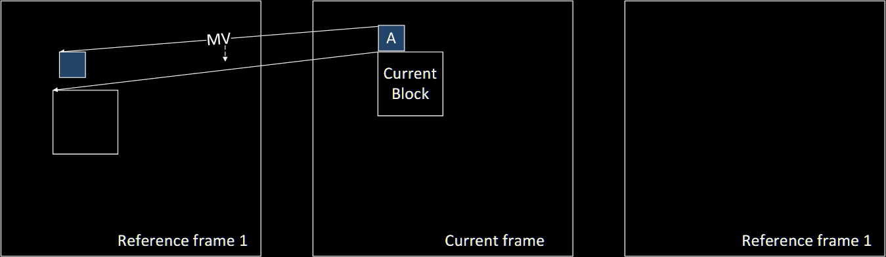
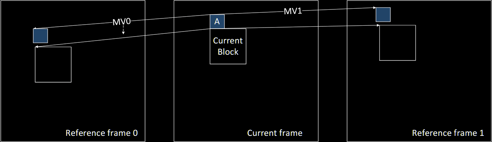
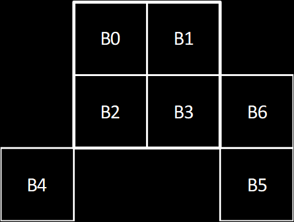
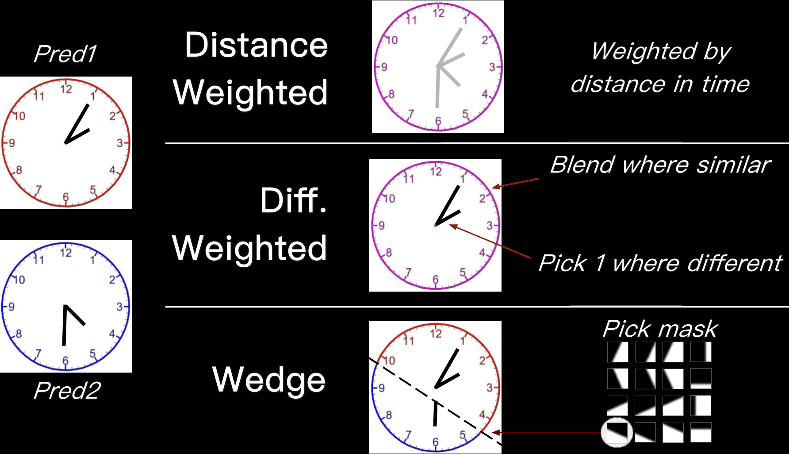

SVT-AV1 测试总结简述
测试结果及隐藏规律见测试版块。SVT-AV1 在测试中展现出了显著的性能优势：Preset 3，CRF 30 在压缩率与编码速度上均较 x265 veryslow CRF 18 约提升 2 倍；在一般场景有着接近和超越 x265 的播放与暂停画质，并且在高复杂度和分辨率的视频中产生了速度、画质、压缩率完胜的结果。x265 得到的码率均 2 倍于 SVT-AV1，因而产生了纵观上的画质领先。
SVT-AV1 的缺点在于导致失真的机制复杂，以目前的结果只能推测是默认使用单值量化，且在编码各阶段实施了多种“类去块机制”而产生观众可能不适应的某种涂抹失真（失真图案相比 x265 更明显、可能类似于平滑块失真致其面积外溢），使得低对比度或帧间连贯性差的场景出现播放可见的涂抹。不过，只要给予合理的 CRF、Tune、自适应量化方差、开启量化矩阵、以及对有噪声素材启用高强度 FGS 分离即可将失真最小化。
由于 FGS 只能复现同类噪声，所以尽管强度越高则观感越像，但对画质指标来说区别也越大，因此画质指标均会失效。
产品设计有“性能”与“体验”两方可选：高端相机有注重延迟、精度、后期和专注便携、易用、好玩之分；高端外设领域有低延迟轻量化和人体工学优先之分；高端轿车有性能车与豪华车之分。虽然 SVT-AV1 速度更快、压缩率更高、极限场景领先、具备胶片颗粒合成能力，是性能之选；在用户体验层面，x265 用码率换来高画质、失真图案更接近原画、在普通场景仍能够提供不错的压缩率、导致失真的机制和预防更直白，在注重画质稳定性的编码上更加可靠，是体验之选。
测试信息来自于 SVT-AV1 v3.0.0、x265 v4.0；SVT-AV1 若有大版本更新，则以上结论可能会部分失效。
视频的压制
- 打开编码器
- 如果编码器内置了如 Lavf 的解封装和解码动态链接库，则编码器可以自动解封装、解码和封装视频文件：
- GUI 软件通过发送 CLI 命令，或者使用像 Bash/CMD 这样的 CLI 工具来打开编码器程序。
- 编码器通常根据输出文件的后缀名自动封装视频文件。
- 如果编码器没有内置解封装解码功能，则：
- 使用 ffmpeg、VapourSynth、avs2yuv 通过 pipe 传输流到编码器
- 调用 ffmpeg、Premiere、Final Cut Pro X 等软件内置的编码器动态链接库
- 如果编码器内置了如 Lavf 的解封装和解码动态链接库，则编码器可以自动解封装、解码和封装视频文件：
- 解封装和解码
- 解封装解码工具将已解压缩的 YUV for MPEG 或 RAW 格式视频流传递给编码器，编码器得到输入信号
- 编码过程
- “前瞻进程”：
- 完成时域依赖性建模 TPL
- 判断是否使用录屏特化编码功能
- 完成时域降噪过滤
- 判断拆分 GOP 的分层预测结构到 mini-GOP（SVT-AV1）
- 分帧/帧类型决策：
- 据前瞻进程结果、关键帧间隔、转场检测而设置：
- 关键帧
- 完全帧内编码帧
- 单帧参考帧
- 混合参考帧
- 据时域降噪过滤的结果设置：
- 支线被参考帧
- 叠加帧
- 据前瞻进程结果、关键帧间隔、转场检测而设置：
- 粗分块：
- 据用户设置分为 128x128 或 64x64 的 Superblock
- 帧间预测：
- 当前帧针对 DRL 中的被参考帧进行动态搜索，得到一系列动态信息方案
- 由向量规划预测查找和整理出预测量
- 由动态规划筛选出最适合某帧的预测量
- 由运动补偿提高动态向量的精度
- 拼合混合参考块所用的 2 项参考源或 2 种动态补偿
- 细分块：
- 根据帧间预测进一步细分宏块或编码树单元到最小的 4x4 编码块
- 帧间残差编码：
- 对比实际画面与动态搜索与补偿后所得的图像，得到残差
- 对残差进行变换和量化，存储到 P-B 帧上，在解码时与 I 帧叠加以得到原始画面
- 帧内预测：
- 补全参考源序列
- 选择使用夹角、平滑、递归、CFL、IBC、调色板等模式编码关键帧
- 帧内残差编码
- 跳过块编码
- 变换：
- 组合使用以下 3 种变换：
- 横/纵向 DCT-2/DCT
- 横/纵向 DST-7/ADST
- 横/纵向 FLIPADST（ADST 反方向）
- 或者使用 IDT/IDTX
- 组合使用以下 3 种变换：
- 量化：
- 根据选择的率控制模式得到每帧 QP
- 根据 TPL 将 QP 精确到粗分块级别
- 使用 VAQ 将 QP 精确到细分块级别
- 将 QP 转换为 QIndex，并应用 QIndex 偏移
- 根据设定选择是否使用量化矩阵
- 熵编码/文本编码
- 使用 CDF 统计出字概率
- 使用 CABAC 转换量化后的数据
- 使用客制化整数 AC 处理语法元素
- 环路滤镜：
- 去块滤镜
- CDEF
- 参考缩放环路
- 超分辨率环路
- 环路还原滤镜：
- 分区到 RU
- 可拆分对称维纳滤镜 SSW
- 子空间投影回归制导滤镜 SGR
- 跳过
- 胶片颗粒编码滤镜 FGS
- “前瞻进程”：
- 生成视频流
- 编码器将生成的数据流逐 GOP 打包，并附加元数据，得到视频流。
- 封装视频流
- 用户可以通过多种方法将视频流封装为 .mp4、.mkv、.mov 等格式：
- 如果编码器内置了像 Lavf 的解封装解码动态链接库，编码器可以根据输出命令行的文件后缀名自动完成。
- 如果编码器没有内置解封装解码功能，则通常会使用 ffmpeg 内部的编码器和解封装工具，使编码完成后自动封装。
- 可以使用工具如 ffmpeg、MP4Box，MKVToolNix 等来进行封装。
- 此处包括了封装音频，字幕和字体文件
- 用户可以通过多种方法将视频流封装为 .mp4、.mkv、.mov 等格式：

图：AV1 的简化流程步骤，见 维基百科 - AV1
流结构
流结构——色彩空间
此处列出 2024 年 7 月的 ITU-T H.273 | ISO/IEC 23091-2 色彩空间配置表。该表对于转译多种编码器的播放用矩阵格式/系数指标、传输特质、三原色及白点、 --master-display 等参数设定起到辅助作用。
| 值 | 原色 | 提议方与标准 | ||
|---|---|---|---|---|
| 0 | 保留值 | ITU‑T | ISO/IEC 占位留用 | ||
| 1 | BT.709 | x | y | ITU-R BT.709-6 |
| 绿 | 0.3 | 0.6 | ITU-R BT.1361-0 常规与扩展色域色系 | |
| 蓝 | 0.15 | 0.06 | IEC 61966-2-1 sRGB 或 sYCC | |
| 红 | 0.64 | 0.33 | IEC 61966-2-4 | |
| 白点 D65 | 0.3127 | 0.329 | SMPTE RP 177 (1993) Annex B | |
| 2 | 留空 | 不指定三原色，由视频播放器默认决定 | ||
| 3 | 保留值 | ITU‑T | ISO/IEC 占位留用 | ||
| 4 | BT.470M | x | y | ITU‑R BT.470‑6 System M（历史遗留） |
| 绿 | 0.21 | 0.71 | 美国国家电视系统委员会（1953） | |
| 蓝 | 0.14 | 0.08 | 美国联邦通信委员会（2003） | |
| 红 | 0.67 | 0.33 | ||
| 白点 C | 0.31 | 0.316 | ||
| 5 | BT.470B, G | x | y | ITU‑R BT.470‑6 System B，G（历史遗留） |
| 绿 | 0.29 | 0.6 | ITU‑R BT.601‑6 625 | |
| 蓝 | 0.15 | 0.06 | ITU‑R BT.1358 625 | |
| 红 | 0.64 | 0.33 | ITU‑R BT.1700 625 PAL, 625 SECAM | |
| 白点 D65 | 0.3127 | 0.329 | ||
| 6 | BT.601 | x | y | ITU‑R BT.601‑6 525 |
| 绿 | 0.31 | 0.595 | ITU‑R BT.1358 525 | |
| 蓝 | 0.155 | 0.07 | ITU‑R BT.1700 NTSC | |
| 红 | 0.63 | 0.34 | SMPTE 170M (2004) | |
| 白点 D65 | 0.3127 | 0.329 | （功能与值 7 所同） | |
| 7 | SMPTE 240 | x | y | SMPTE ST 240 (1999) |
| 绿 | 0.31 | 0.595 | （功能与值 6 所同） | |
| 蓝 | 0.155 | 0.07 | ||
| 红 | 0.63 | 0.34 | ||
| 白点 D65 | 0.3127 | 0.329 | ||
| 8 | Generic film | x | y | 普通胶片电影（CIE 光源 C 滤镜） |
| 绿（Wratten 58） | 0.243 | 0.692 | ||
| 蓝（Wratten 47） | 0.145 | 0.049 | ||
| 红（Wratten 25） | 0.681 | 0.319 | ||
| 白点 C | 0.31 | 0.316 | ||
| 9 | BT.2020 | x | y | ITU‑R BT.2020-2 |
| 绿 | 0.71 | 0.797 | ITU-R BT.2100-2 | |
| 蓝 | 0.131 | 0.046 | ||
| 红 | 0.708 | 0.292 | ||
| 白点 D65 | 0.3127 | 0.329 | ||
| 10 | SMPTE 428 | x | y | SMPTE ST 428-1 |
| Y | 0 |
1 |
CIE 1931 XYZ | |
| Z | 0 |
0 |
||
| X | 1 |
0 |
||
| 中心白点 | 1÷3 |
1÷3 |
||
| 11 | SMPTE 431 | x | y | SMPTE RP 431-2 |
| 绿 | 0.265 | 0.69 | ||
| 蓝 | 0.15 | 0.06 | ||
| 红 | 0.68 | 0.32 | ||
| 白点 | 0.314 | 0.351 | ||
| 12 | SMPTE 432 | x | y | SMPTE EG 432-1 |
| 绿 | 0.265 | 0.69 | ||
| 蓝 | 0.150 | 0.060 | ||
| 红 | 0.68 | 0.32 | ||
| 白点 D65 | 0.3127 | 0.329 | ||
| 13~21 | 保留值 | ITU‑T | ISO/IEC 占位留用 | ||
| 22 | EBU 3213 | x | y | EBU Tech. 3213-E |
| 绿 | 0.295 | 0.605 | ||
| 蓝 | 0.155 | 0.077 | ||
| 红 | 0.63 | 0.34 | ||
| 白点 D65 | 0.3127 | 0.329 | ||
| 23~255 | 保留值 Reserved | ITU‑T | ISO/IEC 占位留用 |
流结构——数据包/封包格式
与封装为文件的格式不同，封包格式需要在网络传输的过程中播放，而不是先拷贝文件到本地（如 HTTP、BT、USB 2.0 等）再打开，因此需要视频标准阶段设计和推广。
- 不是所有封装格式都支持封包，如 Matroska Video / MKV
- 网络数据包主要由标识头（Header）和内容负载（Payload）组成
- AVC/HEVC 使用 NALU，AV1 使用 OBU
（1/2）网络抽象层单元 Network Abstract Layer Unit / NAL Unit / NALU
AVC，HEVC 等视频编码支持的封包格式：
| 标识 | 占位 | 说明 |
|---|---|---|
| 校验符/禁止位 Forbidden zero bit | 1 | 数据完整性校验，必须为 0 |
| 单元重要性 NAL reference indicator（NRI） | 2 | 单元对视频流的关键程度，按照参考解码的优先级等规则排序 |
| 单元分类 NALU type | 5~6 | 单元对视频流起到的作用，如分片，序列/图片参数集等 |
| 空域层级 Layer ID（HEVC） | 6 | 兼容 SVC |
| 时域层级 Temporal ID（TID，HEVC） | 3 | 兼容 SVC |
| 原始数据负载 Raw byte sequence payload（RBSP） | 不定 | 视频数据 |
部分常见的 NALU 有：
- 分片数据 Coded Slices NALU（Type 1~5）
- IDR，I，P，B，b 种类的分片
- SEI, SPS, PPS NALU (Type 6~8)
- 访问分隔符 Access Unit Delimiter NALU（Type 9）
- 遵循显示顺序，标记图片序列（如 GOP）的边界，类似于 IDR 帧的划界作用
- 占位对齐符 Filler Data NALU（Type 12）
- 起到数据包之间的对齐作用
- 序列完 End of Sequence NALU（Type 10）
- 视频完/流文件完 End of Stream NALU（Type 11）
（2/2）开源比特流单元 Open bitstream unit / OBU
由 AV1 的视频流格式和 AOMedia Immersive Audio Model（一种新型 3D 沉浸音频流格式）标准所采用。在 AV1 中的 OBU 含有以下标识头：
| 标识 | 占位 | 说明 |
|---|---|---|
| 校验符/禁止位 Forbidden zero bit | 1 | 数据完整性校验，必须为 0 |
| 单元分类 OBU type | 4 | 当前单元起到的作用，如时域分隔符，帧标识头，瓦分组 |
| 标识头扩展旗标 OBU extension flag | 1 | 兼容 SVC，即是否额外读取空域层级、时域层级开关 |
| 是否含负载标识 Has size field | 1 | 无负载时为 0 |
| 单元大小 OBU Size | 不定 | 即封装数据的大小，用于配置内存空间 |
| 原始数据负载 OBU payload | 不定 | 视频数据 |
部分常见的 OBU 有：
- 时域分隔符 Temporal delimiter OBU
- 遵循显示顺序，标记图片序列（如 GOP）的边界，类似于 IDR 帧的划界作用
- 标识头仅显示属性为 Temporal Delimiter；无内容负载
- 帧标识头 Frame header OBU
- 解码帧所需的元数据
- 标识头可能含 Extension flag，以表示额外的帧信息
- 负载：帧类型（宽，高，关键帧，参考帧等），环路滤镜，量化，分块方案等参数
- 瓦分组 Tile group OBU
- 用于每个瓦片的独立解码和显示，而不是先拼为帧再显示
- 标识头可能含 Extension flag
- 负载：可解码的一组瓦片
- 帧 Frame OBU
- 与帧标识头和瓦分组 OBU 类似，区别是不变更配置，解码部分画面所需的准备更少，性质类似于 IDR 帧和 I 帧中的后者
- 标识头可能含 Extension flag，Has size field
- 负载：帧标识头与瓦分组
- 元数据 Metadata OBU
- 元数据以及一些 AV1 编码的特性
- 标识头含 OBU Type
- 负载：VUI，HDR，SEI 等
- 瓦列表 Tile list OBU
- 与瓦分组 OBU 类似，支持指定用于非完整解码（例如可视窗口渲染）的瓦列表
- 标识头可能含 Extension flag
- 区别是额外给每个瓦附加了标识头
- 负载：一系列瓦的时域空域位置，解码顺序，对应被参考帧的索引号等

流结构——SCS、PCS
（1/2）序列控制集 Sequence control set (SCS)
功效同 AVC、HEVC 的 SPS。
| 控制参数 | 作用 |
|---|---|
max_input_luma_width |
图片宽 |
max_input_luma_height |
图片高 |
profile_idc |
规格 Profile |
level_idc |
级别 Level |
（2/2）图片控制集 Picture control set (PCS)
功效同 AVC、HEVC 的 PPS。
| 控制参数 | 作用 |
|---|---|
av1_frame_type |
帧类型标记（SVT-AV1 中为 slice_type） |
show_frame |
标记可见或隐藏 |
is_skip_mode_allowed |
检查跳过模式可行性开关 |
allow_high_precision_mv |
\(\frac{1}{8}\) 像素精度动态向量开关 |
base_qindex |
基础量化值索引 |
流结构/帧间预测——被参考帧列表 Dynamic Reference List（DRL）
VP9 与 AV1 中的帧间参考源缓存，长 8 帧，同时作用于编码和解码两端。编码时，编码器中的解码功能将帧内/帧间预测的结果帧更新到该列表中，以供当前正在进行帧间预测编码的帧参考。Open GOP 中的 DRL 更新顺序与视频帧显示顺序高度一致，Closed GOP 下则不会。VP9 中，当前编码帧可以选择其中的 3 帧作为其帧间参考源。这三帧因相对于当前编码帧的位置，而被冠名：LAST_FRAME、GOLDEN_FRAME、ALTREF_FRAME。
注：SVT-AV1 中称为 Decoded picture buffer（DPB）
（1/3）支线被参考帧 Alternate Reference Frame（ALTREF）
VP8 中，位于当前帧间编码帧“之外”（视频播放器内看不到），图片序列（GOP）中显示顺序靠后或末尾，但解码顺序中靠前的“帧”。ALTREF 的内容由时域降噪过滤 Temporal filtering（TF）进程识别当前图片序列中的运动轨迹合成，以实现类似于 I 帧的被参考帧，之后被 VP9 和 AV1 沿用。这种拆分方法利用了 TF 适用于分离时域不相关信息——噪声，从而得到噪声被削弱的被参考帧，相比 x264、x265 的前瞻进程（Lookahead）压缩率更高，但最终的画质也更差。
时域降噪过滤处理的说明见下方的前瞻进程——时域降噪过滤。
（2/3）金帧/远距离过去帧 Golden Frame
VP3 中的“Last intra frame”，于当前帧间编码帧之前。在 VP6 中改为允许任意帧间参考帧，并重定义为“远距离过去帧 Distant past”，相对于 LAST_FRAME 的“Near past”。会被关键帧刷新掉，功能上非常类似于 I 帧，之后被 VP7，8，9 和 AV1 沿用。
注：称呼为“Golden”的原因不明。
（3/3）上帧 Last Frame
功能上非常类似于 P 帧，于当前帧间编码帧之前。
AV1 在此之上扩充了：
LAST2_FRAME：位于当前帧间编码帧之前LAST3_FRAME：位于当前帧间编码帧之前，距离当前帧间编码帧最远ALTREF2_FRAME：位于当前帧间编码帧之前或之后BWDREF_FRAME：类似于支线被参考帧，但未经过 TF 处理（噪声与微小细节被保留），所以比 ALTREF 更适合向其之前的帧提供参考OVERLAY_FRAME：时域降噪过滤处理任意位于分层预测结构底部的帧（SVT-AV1 中仅代表支线被参考帧）时可能会生成的叠加帧。此叠加图片对应于相同的原始源图片，但仅使用源图片的时间滤波版本作为参考来重建原始图片。，以及重建环路的参考
此外，被参考帧列表中还为帧内编码帧 INTRA_FRAME 留了一个位子，所以共长 8 帧。编码时，VP9 与 AV1 会选择这 8 帧中的任意帧。如 AV1 的帧内帧间混合模式（Interintra）中，这个分块的参考帧列表可能会是 RefFrame[0] = LAST_FRAME; RefFrame[1] = INTRA_FRAME;。
在当前编码帧选择并完成了帧间预测后，其帧间预测的结果可以选择替换掉被参考帧列表中的任意帧，包括刷新清空该列表；跳过、替换、刷新操作与播放视频的过程一致。解码顺序大致为：
GOLDENALTREF，ALTREF2BWDREFLAST / LAST2 / LAST3- 其它
图：从关键帧或金帧/远距离过去帧开始的显示（先后）与解码（序号）顺序，以及参考溯帧方向（箭头）
流结构/帧间预测——参考帧 Reference Frame
相对于被参考帧，有类似 P 帧的单帧参考帧 SINGLE_REFERENCE，支持被参考帧列表中的 7 帧：
ALTREF2_FRAMEBWDREF_FRAMEALTREF_FRAMEGOLDEN_FRAMELAST3_FRAMELAST2_FRAMELAST_FRAME
与类似 B 帧，但仍然属于单向参考的混合参考帧 COMPOUND_REFERENCE。混合参考帧下分为单向混合溯帧 UNIDIR_COMP_REFERENCE（前—前—，—后—后）：
BWDREF_FRAME，ALTREF_FRAMELAST_FRAME，GOLDEN_FRAMELAST_FRAME，LAST3_FRAMELAST_FRAME，LAST2_FRAME
（2/2）双向混合参考帧
以及更类似 B 帧的双向混合参考帧 BIDIR_COMP_REFERENCE（前— —后）。
LAST2_FRAME，ALTREF2_FRAMELAST2_FRAME，BWDREF_FRAMELAST2_FRAME，ALTREF_FRAMELAST_FRAME，ALTREF2_FRAMELAST_FRAME，BWDREF_FRAMELAST_FRAME，ALTREF_FRAMEGOLDEN_FRAME，ALTREF2_FRAMEGOLDEN_FRAME，BWDREF_FRAMEGOLDEN_FRAME，ALTREF_FRAMELAST3_FRAME，ALTREF2_FRAMELAST3_FRAME，BWDREF_FRAMELAST3_FRAME，ALTREF_FRAME
以帧分瓣格式（Frame segment）编码时，位于分瓣边界的混合参考块需要重设为单帧参考块。
图：参考帧选取思维导图。见 Wikidocs - Reference frame
流结构——图片组 GOP
与 AVC、HEVC 中的意义相同，此处不再赘述。
流结构——分层预测结构/帧间参考层级 Hierarchical levels/时间层 Temporal layers
代表支撑每项 GOP 的帧间关系，每个参考帧都只在每个方向上引用一帧被参考帧。而分层预测结构的分层可以理解为 AVC、HEVC 中的尖塔 B 帧（B-Pyramid）参考结构，决定了量化强度精确到帧类型的分配。
图：5 层 GOP 情况下的分层预测结构，见 SVT-AV1 Docs
解码出第 1 号帧时，所需的解码顺序大致为分层预测结构底层（0，16）→中层（8，4）→高层（2，1）。如果第 16 号帧为附有叠加帧 OVERLAY 的支线被参考帧 ALTREF，则可以理解为解码的总帧数 +1。这种解码顺序
流结构——Mini-GOP（SVT-AV1）
根据画面变化拆分原本的固定长度 GOP，以适应一些复杂帧间场景的编码机制（类似于 x264/5 的转场检测）。
（1/2）前期动态分析
GOP 和 mini-GOP 的“模式决策”发生在帧类型判断以及动态搜索之前，但决定使用 mini-GOP 要用到动态搜索，因此 SVT-AV1 使用了 1/16 分辨率的原画帧作为参考帧、仅对潜在分层预测结构/时间层中的基础层进行分析，且每帧仅参考相邻的过去参考帧（Closest past reference）进行简化的搜索。得到：
- 基本单位化的失真
- 时域复杂 SB 占比
- 动态向量非 0 SB（活跃块）占比
（2/2）预测结构选择
首先根据层级范围决定计算量。见 SVT-AV1 Docs：
| 预测结构分层 | 每 6 层的前期动态搜索量 | 基础层与参考帧的动态搜索配对 |
|---|---|---|
| 6/5 | 首次判断保持 6 层、其它次判断拆为 5 层，共 1+2 次 | 尾→首 (31,0)、半→首 (15,0)+尾→半 (31, 15) |
| 6/5/4 | 1 + 2 + 4 次 | ... |
| 6/5/4/3 | 1 + 2 + 4 + 8 次 | ... |
其次，设“不拆分”为上层 GOP、“拆分”为下层 GOP，根据情况决定是否拆分：
- 拆分会减少失真：下层 GOP 的平均失真（对比原画）小于上层 GOP（并算进上层 GOP 的码率优势）
- 拆分会减少分块：下层 GOP 的复杂 SB 占比低，而上层 GOP 的复杂 SB 占比高
- 拆分会减少时域复杂度：上层 GOP 的活跃块占比高，且下层 GOP 复现了这种动态信息
- 检测到画面缩小场景：下层 GOP 的缩小活动性（Zoom out activity）高
拆分的步骤会重复进行到设定最低的分层预测结构，或判断为“不拆分”为止。
图片结构
图片结构——帧 Frame
由帧间编码帧在被参考帧列表 DRL 中匹配。其组合后的架构除了非显示帧以外，与 AVC 的结构差不多，参考帧的搜索范围类似于 x264/5 的 --ref 4。
- 关键帧 Golden frame：类似于 I 帧
- 单帧参考帧 Single reference frame：类似于 P 帧，支持前←，→后的 1 帧
- 混合参考帧 Compound reference frame：类似于 B 帧，支持前← →后，前←前←，→后→后的 2 帧
图片结构——瓦片 Tile
继承自 VP9 的帧下级结构，仅用于提高软件解码器效率。AV1 中，最小的瓦片可以由一个粗分块构成，一帧最多可含 512 片，但级别 Level 6.3——7680x4320@120 限制到最高 128 片。
AV1 支持非对等大小瓦片（non-uniform tiles），并兼容了 VP9 的对等大小瓦片（uniform tiles）配置。理论上可以使每片瓦的码率分配，或算力分配（如桌面端与移动端处理器的 P-E 核架构）更合理，但最终优化程度取决于开发者。
（1/1）基于瓦片的多线程优化
作为一种分区方法，瓦片自然也可以用于拆分压制任务。这种方法的缺点是会干扰到视频编码依赖于帧间 + 帧内的二维冗余，导致编码效率或画质降低，类似于 x264 编码器曾尝试并弃用的“基于分片的多线程优化”。SVT-AV1 支持基于瓦片的多线程优化，但默认关闭。
注：AV1 中已经使用了分瓣（Tile Segment）来根据画面内容而划区分配码率
注：虽然 x264 证明了“将帧分为条带来提升多线程优化”的上下文损失极高，但随着硬件编码技术的改进，以及视频分辨率的增加，瓦片的大小可能会变得形同 x264 最初设计应对的分辨率，如 768x512 的一组视频，因此如果被优化到位，则这种调度说不定会变得可行
图片结构——分瓣 Frame segment
继承自 VP9，独立于瓦片 tile 的划分结构。最多支持 8 瓣，每个块独立选择归纳为其中一瓣，以将一些编码信息分组，有提升熵编码/文本编码压缩率。主要由帧标识头 Frame header 配置和更新以下关键设定：
- 量化强度偏移设定
- 环路滤镜设定
- 被参考帧设定
- 编码跳过设定
分瓣与 AVC 的分段编码 Segment based encoding 不同，前者相当于时域加空域分割（Temporal + spatial segmentation），后者只有时域分割。
图片结构——粗分块/特大块 Superblock
AV1 支持最大 128x128 与兼容 VP9 的 64x64 亮度 SB。为适配当前市面上的硬件编解码器，128x128 的块会以逻辑上的 64x64 块编解码（类似于将一纸数字横竖各切一刀，再重排顺序）
图：按 MiRow、MiCol（Marcoblock Index）行、列顺序解码的 SB，见 Wikidocs - Superblock and block
MiRow、MiCol 为细分块提供了帧内大致位置，从而可以获取一些算法需要的空域权重/缩放值。
图片结构——细分块
（1/3）细分块大小
虽然这里也有 128x128 的块大小，但这是经过检查，判断为“不分块”的结果，所以也算作细分块。
BLOCK_4X4，BLOCK_4X8，BLOCK_8X4BLOCK_8X8，BLOCK_8X16，BLOCK_16X8BLOCK_16X16，BLOCK_16X32，BLOCK_32X16BLOCK_32X32，BLOCK_32X64，BLOCK_64X32BLOCK_64X64，BLOCK_64X128，BLOCK_128X64BLOCK_128X128BLOCK_4X16，BLOCK_16X4BLOCK_8X32，BLOCK_32X8BLOCK_16X64，BLOCK_64X16BLOCK_32X128，BLOCK_128X32
（2/3）细分块方案
从 SB 开始，运行一遍变换和简化的率失真检查。失真较大则四分，然后在每个分区上重复划分正方形分块；然后在每个细分块上遍历 9 种异形分块和 1 种不分块方案，并使用完整的率失真检查，然后选出失真最小的方案。9+1 种的方案为：
PARTITION_NONEPARTITION_SPLITPARTITION_VERT，PARTITION_VERT_A，PARTITION_VERT_B，PARTITION_VERT_4PARTITION_HORZ，PARTITION_HORZ_A，PARTITION_HORZ_B，PARTITION_HORZ_4
（3/3）细分块递归深度
图片结构——变换块
AV1 支持的变换块大小如下，用于帧内预测以及变换编码：
TX_4X4，TX_4X8，TX_8X4TX_8X8，TX_8X16，TX_16X8TX_16X16，TX_16X32，TX_32X16TX_32X32，TX_32X64，TX_64X32TX_64X64TX_4X16，TX_16X4TX_8X32，TX_32X8TX_16X64，TX_64X16
- 128x128 的块会以逻辑上最大 64x64，或宽/高更小的块（min(W, 64) x min(H, 64)）分别变换
- 色度平面支持其中最宽和最高 32 的块
图：AV1 的递归细分块方案，以及变换块在各种细分块方案 PARTITION 下的变换块运用
图片结构——环路还原滤镜单元
还原单元 Restortion unit 用于定义环路还原滤镜 LRU 的作用范围（滤镜强度分区调节），从而使还原滤镜实现强度自适应。对 RU 的说明见环路滤镜版块，详见下方的环路滤镜版块。
变换
复习：一维变换
由结果值，缩放值与初始值构成，初始值与缩放值的积为结果值 \(x^\prime = A x\) 。在一维空间中只有一根数轴。如果只缩放点(2)，缩放到 -3 倍（\(-6 = -3 \cdot 2\)），则该点的位置会移动到 (-6) 处。
如果要缩放一段音频，设定一批采样点，然后用求和/积分/循环的方法遍历所有采样点，得到缩放结果。如将音频提速到 2 倍（缩放到 \(\frac{1}{2}\) 倍长度），音频长度从 0 数到 \(N-1\)，从采样点的视角看则：\(n^\prime = \frac{1}{2} n\)。而从波形整体可以看做： \[X^\prime = \sum_{n=0}^{N-1} \frac{1}{2} \cdot x(n)\] 如果将缩放值改回未知数（函数），且输出的音频作为新波形 \(y(m)\)，则： \[y(m) = \sum_{n=0}^{N-1} A(n, m) \cdot x(n)\] 音频虽是一维信号，但每个采样点除了坐标信息外，还会记录一项可以代表波形高度的信号值，这个信号可以是像素值（注意二维下的高度是坐标的一部分），有了它，人们就可以利用坐标系来记录和处理信号了。
变换——二维变换/仿射变换 Affine transformation
比一维多一轴。这里的信号同时拥有了宽度和高度，而信号值在此可以理解为像素值。此时，遍历所有点的操作方法就会是双求和、嵌套循环了。二维变换会用到矩阵乘法，如： \[ \begin{bmatrix} x^\prime \\ y^\prime \\ \end{bmatrix} = \begin{bmatrix} m_{x} & m_{Y} \\ m_{X} & m_{y} \\ \end{bmatrix} \begin{bmatrix} x \\ y \\ \end{bmatrix} \]
不考虑像素值、只考虑坐标变化时，点坐标的 x 分量分别乘进 \(m_{x}, m_{Y}\)；y 分量分别乘进 \(m_{X}, m_{y}\)，就得到了变换后的坐标。
缩放值 \(A\) 作为矩阵，除了 \(m_{x}\)，\(m_{y}\) 两个相对于 \((0,0)\) 的缩放分量外，斜对角上还多了 \(m_{X}\)，\(m_{Y}\) 两个相对于对方的缩放分量。这是因为二维坐标系出现了旋转的新性质，而“旋转”本质上同样是有两个分量构成的，即“x 相对于 y 的倍数”横向倾斜扭曲，以及“y 相对于 x 的倍数”或纵向倾斜扭曲（这个认知并非常识，建议搜索相关的视频演示）。
- \(m_{Y}\) 会造成 \(y \lt 0\) 处的 x 分量与 \(y \gt 0\) 处的分量反向缩放，矩阵乘法中表现为图形于 x 轴的缩放被乘进了 \(-y\)
- \(m_{X}\) 会造成 \(x \lt 0\) 处的 y 分量与 \(x \gt 0\) 处的分量反向缩放，矩阵乘法中表现为图形于 y 轴的缩放被乘进了 \(-x\)
- 若 \(m_{Y}\) 与 \(m_{X}\) 一正一负，就会得到顺/逆时针的旋转效果
变换/帧间预测——全局仿射变换动态搜索与补偿 Global affine / warped MEMC
AV1 中的一种 MEMC 方案。针对视频画面内容整体的缩放（如行车记录仪视频中，车辆前进时的场景放大），则可以通过一部分像素的动态向量推理出图形的缩放和旋转程度，从而提高动态向量的精度。推理结果为：
\[ \begin{bmatrix} x' \\ y' \\ \end{bmatrix} = \begin{bmatrix} h_{11} & h_{12} & h_{13} \\ h_{21} & h_{22} & h_{23} \end{bmatrix} \begin{bmatrix} x \\ y \\ 1 \\ \end{bmatrix} \]相比上述的二维变换，这里额外有横纵向平移的分量 \(h_{13}, h_{23}\)，而这两个方向仅用于对齐画面中的图形，所以矩阵乘法中仅会乘以 1，而不缩放。\(h_{11}, h_{12}, h_{21}, h_{22}\) 为 12bit 精度，而平移的 \(h_{13}, h_{23}\) 为 15bit。具体的搜索和补偿算法见帧间预测版块
变换——离散余弦变换 Discrete Cosine Transform（DCT-3）
变换一个 NxN 块的大致过程是将各行、各列分别变换一次，然后将解算出的频域强度加到一起。例如取一行 4x4 块的值记做 Y，设像素值 [0,1,0,0]，得到：
长度 N 由输入序列 Y 的长度得到。Y 的四点需要设定 X 轴间距和偏移才能置于坐标系中。此步骤由 \(X=\frac{\pi}{N}\left(\left[0,...,N-1\right]+\frac{1}{2}\right)\) 实现，其中：
- \(\frac{\pi}{N}\) 将点的间距缩放到 [0,1,0,0] 长度中的常规间距（长度 N 的一份，此处即 \(\frac{1}{4}\)），以及余弦函数 cosine 的标准间距（当然也可以缩放余弦函数到常规间距）
- 向右偏移 \(\frac{1}{2}\)，从而把余弦函数相对于这些点"换成正弦函数 sine"（只有正弦函数才会穿过坐标系 (0,0)
- 或者，将式子换成 \(\sin\left(kx\right)\)，虽然结果波形会对齐到这些点上，但原理完全不同）
在求和符号中，可以看到遍历变量 \(k\) 从 1 开始数，在这个式子里最多数到 3，而被跳过的 0 是它左侧的 \(\frac{1}{N} F\left(0\right)\) 的结果（DC），所以这个式子可以分解为：
缩放值 \(F\left(k\right)\)，就是“8x8 DCT 图表”中的某一部分。它也使用了遍历变量 \(k\)，从而拆分出 \(Y_{k}, X_{k}\) 两个序列中每个位置的强度并加在一起。
- 由于 \(Y_0, Y_2, Y_3\) 的强度为 0，所以只有 \(Y_1\) 的部分会缩放 \(p(x)\) 的波形频率
- 强度 \(F\left(1\right)\) 也是余弦函数，为 \(F_{actual}\left(x\right)=1\cos\left(\frac{3\pi x}{8}\right)\)（\(\frac{3\pi x}{8}\) 为冠军个点的 X 轴坐标）
在这个例子中，初始值即 Y，X 两个序列，结果值是函数 p(x)，缩放值由多个部分组成，但可拆分为：
- 强度缩放值 \(F\left(k\right)\)
- 对齐缩放值 \(\frac{\pi}{N}, \frac{2}{N}\)
以及偏移值：
- 对齐 X 轴 \(+\frac{1}{2}\)
- 对齐 Y 轴（DC）\(+\frac{1}{N}F\left(0\right)\)
上图的可互动例子见 Desmos可以试着添加更多值到 Y 序列，以及更改这些值的大小等。例如上述“去掉 \(\frac{1}{2}\)，换成 \(\sin\left(kx\right)\)”构成的一种离散正弦变换 DST：
变换——非对称离散正弦变换 Asymmetric Discrete Sine Transform（ADST）
一种 DST 的变体。DCT 对变换区域边界的信息保留能力较差，因此量化强一些时容易导致块失真。尽管去块滤镜可以消除块失真，但也会抹去一些画面的高频细节分量。造成变换效果不佳的这些边界失真的主要原因是“块的两边不对称”。通过引入离散正弦变换 DST（效果类似上图），再进一步修改其缩放值，使变换波形的宽构成由宽到窄，以及由窄到宽（翻转变体）的过渡状，从而提高边缘细节的保留能力。
ADST 使用 \( \frac{2}{ \sqrt{2N+1} } \) 缩放正弦函数的振幅，以及 \[ \sin\left( \frac{ \left( 2j-1 \right) i\pi }{2N+1} \right) \] 动态缩放了正弦函数的宽度，使其一端较窄： \[ \frac{2}{ \sqrt{2N+1} } \sin\left( \frac{\pi}{2N+1} \right) \] 另一端较宽： \[ \frac{2}{ \sqrt{2N+1} } \sin\left( \frac{N \pi}{2N+1} \right) \]
注：编写本教程时未能实现演算，所以上述内容可能有问题且需要被进一步修正。
变换——AV1 变换算法配置
AVC 中使用 DCT 实现变换。HEVC 中搭配使用了整数 DCT（IDCT），DST，一种从 DST 衍生的整数变换（4x4 块 Integer Transform, IT）。AV1 中使用了 DCT，ADST，翻转 ADST（FLIPADST），以及 ID 变换（Identity Transform, IDTX），一维下的频域配置为：
具体算法为 DCT-2： \[T_{i}\left(j\right) = \omega_0 \sqrt{\frac{2}{N}} \cos\left( i \pi \frac{ 2j+1 }{2N} \right) \text{,} \hspace{2mm} \omega_0 = \begin{cases} i = 0 \text{,} \hspace{2mm} \sqrt{\frac{2}{N}} \\ i > 0 \text{,} \hspace{2mm} 1 \\ \end{cases} \] DST-4： \[T_{i}\left(j\right) = \sqrt{\frac{2}{N}} \sin\left( \pi \frac{\left( 2i+1 \right)\left( 2j+1 \right) }{4N} \right) \] DST-7/ADST（Aomedia CWG-B078，与 Overview of AV1 文档不同）： \[T_{i}\left(j\right) = \sqrt{\frac{4}{2N+1}} \sin\left( \pi \frac{\left( 2i+1 \right)\left( j+1 \right)}{ 2N+1 } \right) \] IDT/IDTX： \[T_{i}\left(j\right) = \begin{cases} i = j \text{,} \hspace{2mm} 1 \\ i \neq j \text{,} \hspace{2mm} 0 \\ \end{cases}\] 关于 AV1 编码器会在什么时候选择用什么变换，详见 CWG-B078 - 3.4.2 Transform selection and signalling。
变换——部分模式决策与先后选择顺序
根据帧内预测选用的模式决定。色度帧内块的变换取决于同位亮度帧内块的模式。
Mode_To_Txfm[ UV_INTRA_MODES_CFL_ALLOWED ] = {
DCT_DCT, // DC_PRED 水平直流模式
ADST_DCT, // V_PRED 大概率夹角模式
DCT_ADST, // H_PRED
DCT_DCT, // D45_PRED
ADST_ADST, // D135_PRED
ADST_DCT, // D113_PRED
DCT_ADST, // D157_PRED
DCT_ADST, // D203_PRED
ADST_DCT, // D67_PRED 小概率夹角模式
ADST_ADST, // SMOOTH_PRED 大概率平滑模式
ADST_DCT, // SMOOTH_V_PRED
DCT_ADST, // SMOOTH_H_PRED 小概率平滑模式
ADST_ADST, // PAETH_PRED 非线性模式
DCT_DCT, // UV_CFL_PRED 色度填亮度模式
}
typedef enum { // 一般模式
DCT_DCT = 0, // 纵向 DCT 加横向 DCT
ADST_DCT = 1, // 纵向 ADST 加横向 DCT
DCT_ADST = 2, // 纵向 DCT 加横向 ADST
ADST_ADST = 3, // 纵向 ADST 加横向 ADST
#if CONFIG_EXT_TX // 扩展模式
FLIPADST_DCT = 4,
DCT_FLIPADST = 5,
FLIPADST_FLIPADST = 6,
ADST_FLIPADST = 7,
FLIPADST_ADST = 8,
IDTX = 9,
V_DCT = 10,
H_DCT = 11,
V_ADST = 12,
H_ADST = 13,
V_FLIPADST = 14,
H_FLIPADST = 15,
#endif
TX_TYPES,
} TX_TYPE;
前瞻进程
前瞻——时域依赖性建模 Temporal dependency modeling（TPL）
在编码每个 GOP 的开端以逆向顺序推演，以 16x16 分区建立运动轨迹，反应了分块对于整个 GOP 压缩率的贡献，类似于 MB/CUTree，对细分块级别的量化强度设定，率失真优化设定起到关键作用。见：AOM Guide
intra_cost：根据 SATD 估算帧内预测成本inter_cost：有 pass1 中可用的运动信息时估算帧间预测成本- AV1 支持帧内帧间混合预测模式，因此
inter_cost的上限由intra_cost决定
- AV1 支持帧内帧间混合预测模式，因此
propagation_amount，propagation_cost：从未来处理帧流回的累计传播量，以及计算出的传播代价- GOP 中最后一个处理帧中的所有块，它被初始化为 0
（1/3）信息传播程度估计
- 当前块向其参考块传播（propagation）的信息估计如下，反映了运动补偿参考对减少预测误差的贡献程度百分比
- 当前 16x16 分区对 GOP 贡献的信息总量估计为 \(\text{intra}_{\text{cost}} + \text{Prop}_{\text{cost}}\)，它为参考块溯块所提供的信息量统计为：
- 由于最终的分块方案不一定位于 16x16 网格上。因此这个传播量会被分配给与参考块重叠的所有块，为：
（2/3）失真传播程度估计
\[ \text{Dist}_{\text{Prop}} = 1 + \frac{\sum_{i}\text{Prop}_{\text{cost}[i]}}{\sum_{i}\text{intra}_{\text{cost}[i]}} \]- \(i\) 代表后移的帧数
- \(\frac{\text{Prop}_{\text{cost}}}{\text{intra}_{\text{cost}}}\) 代表对后续帧的影响
（3/3）率失真优化程度估计
\[ \lambda[i] = \lambda[0] \frac{ \text{Dist}_{\text{Prop}}}{ \text{Dist}_{\text{Prop}}[i]} \]- \(\lambda\)：在 64x64 分区中推演得到：
- 其中 i 表示帧中的块索引。我们还有帧级失真传播因子：
前瞻——录屏特化功能开关控制
AV1 使用内容类型检测录屏内容，并对匹配的内容选用以下编码模式：
- 帧内预测——帧内块拷贝模式 Intra block copy（IBC）
- 帧内预测——调色板模式 Palette mode
（1/1）内容类型检测 Content-type detection
在编码一帧之前进行，通过如 conter1，conter2 两个计数变量，统计每个 16x16 亮度区域的像素值种类与方差实现：
- 若像素值种类只有 2、3 或 4 种，则 counter1 加 1
- 若方差大于预定的阈值，则 counter2 加 1
- 判断启用调色板模式：\(\text{conter1} > \frac{FrameWidth \times FrameHeight}{2560}\)
- 判断启用 IBC 模式：\(\text{conter2} > \frac{FrameWidth \times FrameHeight}{3072}\)
以下是一些常用分辨率下的阈值例子：
\[ 1280 \times 720 \div 2560 = 360 \]\[ 1280 \times 720 \div 3072 = 300 \]\[ 1920 \times 1080 \div 2560 = 810 \]\[ 1920 \times 1080 \div 3072 = 675 \]\[ 2560 \times 1440 \div 2560 = 1440 \]\[ 2560 \times 1440 \div 3072 = 1200 \]\[ 3840 \times 2160 \div 2560 = 3240 \]\[ 3840 \times 2160 \div 3072 = 2700 \]前瞻/帧间预测——时域降噪过滤
时域降噪过滤 Temporal filtering（TF）是 VP 编码器流程中的帧间降噪与帧类型设定功能，主要用于增强参考帧的画质。“过滤”由时域加权平均和简化的动态搜索以分离细节和噪声，且用于构建支线被参考帧 ALTREF 以在 GOP 的参考结构中起到预测结构替代或补充作用。某些情况下，叠加帧 OVERLAY 会额外被建立，以辅助当前的支线被参考帧减少误差，进而优化码率的分配，并间接影响到分层预测结构的建立。SVT-AV1 中，前瞻进程会在扫描到支线被参考帧的位置时临时提高搜索范围，以包括 TF 所覆盖的未来帧数量，见 SVT-AV1 Docs。
（1/2）时域降噪过滤步骤
- 统计当前帧自身的噪声强度
- 根据当前帧噪声强度决定调用前后共多少帧（噪声越强调用越多）
- 根据色彩结构性差异（颜色直方图 SAD）进一步决定调用前后多少帧（差异越大调用越少）
- 计算时域降噪过滤强度衰减（SVT-AV1 中由
--preset决定强度） - 相邻的原画前、后帧分别进行动态搜索，得到过去、未来两项动态补偿预测（对齐邻帧画面）
- 使用自适应加权（过滤）整合所有运动补偿预测，得到降噪后的分层预测结构底部帧
- 决定某些符合分层预测结构条件的帧为支线被参考帧
ALTREF - 将过滤出的噪声拼合出叠加帧
OVERLAY
图：TF 对待处理的帧，相对于邻帧进行 hex 动态搜索，见 SVT-AV1 Docs
SVT-AV1 中，TF 操作与其它编码进程平行，逐 64x64 块处理。见 SVT-AV1 Doc。
（2/2）时域降噪过滤强度衰减
用于配置精确到分块的样本过滤操作。
\[ \text{TemporalFilter}_{\text{Decay}} = 2 \times n_{\text{Decay}}^2 \times q_{\text{Decay}} \times s_{\text{Decay}} \]- \( n_{\text{Decay}} \)：噪声衰减，由输入噪声强度、上帧清晰度、亮度色度区分和降噪强度决定
- \( q_{\text{Decay}} \)：QP 衰减，由量化强度决定，量化越强则允许的降噪越强
- \( s_{\text{Decay}} \)：滤镜强度衰减，由用户设置决定，用于改变编码策略
帧间预测
帧间预测——流程概述
- 当前帧针对 DRL 中的被参考帧进行动态搜索，得到一系列动态信息方案
- 由向量规划预测 Motion vector referencing scheme（MVRS）查找和整理出预测量：
- 空域预测 Spatial MV prediction：与空域相邻块的动态向量对齐，适合低速移动画面
- 时域/向量场预测 Temporal MV prediction：与时域相邻块的动态向量对齐，适合高速移动画面
- 由动态规划 Dynamic MVRS 筛选出最适合某帧的预测量：
- 单帧参考帧筛选
- 混合参考帧筛选
- 由运动补偿提高动态向量的精度：
- 平移补偿 Translational MC
- 局部仿射补偿 Local affine / Warped MC
- 重叠块补偿 OBMC
- 全局仿射补偿 Global affine / Warped MC
- 拼合混合参考块所用的 2 项参考源或 2 种动态补偿：
- 帧间距离加权/平均预测分权 Distance、Average
- 差值加权/差值调制预测分权 Difference / modulated
- 帧内帧间模式分权 Compound InterIntra
- 楔形蒙版预测分权 Wedge mask
预测量 Predictor 此处代表由搜索与规划算法给出，针对 8x8 块的一组可用的帧间动态向量，从中筛选出合适的帧间预测模式。
帧间预测——动态搜索 Motion estimation
基本原理见 x265 教程。x264/5 的动态搜索通过块间像素匹配的方法实现，运动补偿通过对比插值放大后的预测块与原画实现。SVT-AV1 支持 ME 和 HME，见 Github: SVT-AV1 Encoder Design
帧间预测——向量规划 Motion Vector Referencing Scheme（MVRS）
在全局动态向量以及针对其他被参考帧的动态向量凑齐之后，使用一种类似于帧内预测的规划法（Referencing scheme）将参考帧匹配到合适的被参考帧。AV1 中，这种参考规划由适合低速移动的空间动态向量 S-MVRS 参考规划，以及适合高速移动的向量场动态向量参考规划 MVF-MVRS 实现针对不同物件移动速度规划匹配，并在每个 8x8 预测块上得到预测量。
（1/4）空域动态向量预测 Spatial MV Prediction
AV1 中代表通过空间相邻 8x8 块的帧间动态向量所推理出的动态向量，与帧内编码无关。前提是时间相邻块需要有动态向量。
（2/4）空域 MVRS
亮度编码块中以 8x8 区域搜索其帧内的顶部、左侧、左上、右上共 4 种相邻块是否溯至同一被参考帧（混合参考帧模式下为同两帧被参考帧）。如 32x32 亮度分块中，顶部代表横向 3 行，每行 4 个 8x8 区域；左侧代表纵向 3 列，每列 4 个 8x8 区域；以及左上角，右上角各一个 8x8 区域。搜索顺序为由近到远，为行 1，列 1，右上，左上，行 2，列 2，行 3，列 3：
图：空域 MVRS 查找顺序
图：单帧参考帧规划
图：混合参考帧规划
（3/4）时域动态向量预测 Temporal MV Prediction
AV1 中代表通过时间相邻 8x8 块（相邻帧被参考帧上同位块）的帧间动态向量所推理，而得到的动态向量。前提是时间相邻块需要有动态向量。
（4/4）时域/向量场 MVRS
采用一种线性投影模型以对齐时域相邻块动态向量的规划法，适合高速直线运动轨迹。以 8x8 块为单位，通过遍历地将被参考帧列表中的动态向量乘进一个缩放值，而得到当前帧的向量场预测。缩放值的取值为被参考帧距离当前帧的帧数，与被参考帧距离前被参考帧之差（帧数距离）的比。
图：当前帧（Current Frame）通过距离被参考帧的帧数缩放动态向量以及预测量
图：被参考帧中的搜索区域，先尝试对准一块 16x16 范围，其次是角落
帧间预测——动态规划 Dynamic MVRS
从动态搜索与空域 MVRS、时域 MVRS 得出的预测量中筛选。预测量 Predictor 于此处代表一组可行的动态向量，其中含有当前编码块相对于被参考帧列表中，被参考帧列表中每帧的最多储存 4 种可能的每帧动态向量。
（1/2）单帧参考帧筛选
动态搜索以及 MVRS 得到的预测量中，按照动态向量的长度，由（帧间距离）进到远排序（?）：
NEARESTMV：第 1 种动态向量NEWMV：第 1~3 种动态向量中筛选，附有预测向量与实际向量的差距（MV difference，MVD）NEARMV：第 2~4 种动态向量中筛选GLOBALMV：使用全局动态向量
（2/2）混合参考帧预测量筛选
NEAREST_NEARESTMV：同NEARESTMVNEAREST_NEWMV：同NEARESTMV，远被参考帧（RefFrame[1]）附有预测向量与实际向量的差距（MV difference，MVD）NEW_NEARESTMV：同NEARESTMV，近被参考帧（RefFrame[0]）附有预测向量与实际向量的差距（MV difference，MVD）NEW_NEWMV：同NEWMV，附有近、远两被参考帧的 MVDNEAR_NEARMV：同NEARMV，附有远被参考帧的 MVDNEAR_NEWMV：同NEARMV，附有近被参考帧的 MVDNEAR_NEARMV：同NEARMV，附有远，仅两被参考帧的 MVDGLOBALMV：同上
除 NEARESTMV，NEAREST_NEARESTMV 之外，被参考帧的预测差距 MVD 都会被纳入考量。而剩余的模式区别就是采用哪一种预测量的区别。
static const int mode_2_counter[] = { // 帧内 + 帧间预测模式表
// 帧内预测模式
9, // DC_PRED
9, // V_PRED
9, // H_PRED
9, // D45_PRED
9, // D135_PRED
9, // D117_PRED
9, // D153_PRED
9, // D207_PRED
9, // D63_PRED
#if CONFIG_ALT_INTRA // 帧内预测 - 平滑
9, // SMOOTH_PRED
#if CONFIG_SMOOTH_HV // 帧内预测 - 横纵平滑
9, // SMOOTH_V_PRED
9, // SMOOTH_H_PRED
#endif // CONFIG_SMOOTH_HV
#endif // CONFIG_ALT_INTRA // 帧内预测 - 其它
9, // TM_PRED
0, // NEARESTMV
0, // NEARMV
3, // ZEROMV
1, // NEWMV
#if CONFIG_EXT_INTER // 帧间预测模式
#if CONFIG_COMPOUND_SINGLEREF // 帧间预测 - 混合以及单帧参考帧
0, // SR_NEAREST_NEARMV
1, // SR_NEAR_NEWMV
3, // SR_ZERO_NEWMV
1, // SR_NEW_NEWMV
#endif // CONFIG_COMPOUND_SINGLEREF / 帧间预测 - 混合参考帧
0, // NEAREST_NEARESTMV
0, // NEAR_NEARMV
1, // NEAREST_NEWMV
1, // NEW_NEARESTMV
1, // NEAR_NEWMV
1, // NEW_NEARMV
3, // ZERO_ZEROMV
1, // NEW_NEWMV
#endif
}
帧间预测——局部运动补偿
基本原理已在 x265 教程中说明，此处不再赘述。AV1 支持平移子像素运动补偿 Translational MC 和仿射运动补偿 Affine/Warped MC。运动补偿用于对齐动态向量到子像素精度，所以会临时地使用子像素插值滤镜。如：
- AVC 的亮度块支持 \( \frac{1}{2} \) 像素精度下使用 6-tap FIR 插值、\( \frac{1}{4} \) 像素精度下使用双线性插值
- HEVC 的亮度块支持 \( \frac{1}{2} \)，以及部分的 \( \frac{1}{4} \) 像素精度使用上下左右加权平均插值、\( \frac{1}{4} \) 像素精度下使用 7-tap 和 8-tap FIR 滤镜插值
- HEVC 色度块 \( \frac{1}{2} \) 和 \( \frac{1}{4} \) 像素精度使用 4-tap FIR 插值
（1/3）平移运动补偿 Translational MC
选用平移预测模式后，AV1 亮度块会使用 SMOOTH，REGULAR 和 SHARP，共 3 种自适应 8-tap FIR 插值滤镜，代表在横向或纵向 8 个像素中采样并分配权重。如果像素位于块的纵向中间处，则先计算块中的所有横向插值结果，在从中计算纵向插值结果。
图：8x8 区间（8-tap 范围内）的横向→纵向插值，得到中心的子像素
REGULAR{ { 0, 0, 0, 128, 0, 0, 0, 0 }, // 边缘 { 0, 2, -6, 126, 8, -2, 0, 0 }, // 偏左 { 0, 2, -10, 122, 18, -4, 0, 0 }, { 0, 2, -12, 116, 28, -8, 2, 0 }, { 0, 2, -14, 110, 38, -10, 2, 0 }, { 0, 2, -14, 102, 48, -12, 2, 0 }, { 0, 2, -16, 94, 58, -12, 2, 0 }, { 0, 2, -14, 84, 66, -12, 2, 0 }, { 0, 2, -14, 76, 76, -14, 2, 0 }, { 0, 2, -12, 66, 84, -14, 2, 0 }, { 0, 2, -12, 58, 94, -16, 2, 0 }, { 0, 2, -12, 48, 102, -14, 2, 0 }, { 0, 2, -10, 38, 110, -14, 2, 0 }, { 0, 2, -8, 28, 116, -12, 2, 0 }, { 0, 0, -4, 18, 122, -10, 2, 0 }, // 偏右 { 0, 0, -2, 8, 126, -6, 2, 0 } // 边缘 }SMOOTH{ { 0, 0, 0, 128, 0, 0, 0, 0 }, // 左边缘 { 0, 2, 28, 62, 34, 2, 0, 0 }, // 偏左 { 0, 0, 26, 62, 36, 4, 0, 0 }, { 0, 0, 22, 62, 40, 4, 0, 0 }, { 0, 0, 20, 60, 42, 6, 0, 0 }, { 0, 0, 18, 58, 44, 8, 0, 0 }, { 0, 0, 16, 56, 46, 10, 0, 0 }, { 0, -2, 16, 54, 48, 12, 0, 0 }, { 0, -2, 14, 52, 52, 14, -2, 0 }, { 0, 0, 12, 48, 54, 16, -2, 0 }, { 0, 0, 10, 46, 56, 16, 0, 0 }, { 0, 0, 8, 44, 58, 18, 0, 0 }, { 0, 0, 6, 42, 60, 20, 0, 0 }, { 0, 0, 4, 40, 62, 22, 0, 0 }, { 0, 0, 4, 36, 62, 26, 0, 0 }, // 偏右 { 0, 0, 2, 34, 62, 28, 2, 0 } // 右边缘 }SHARP{ { 0, 0, 0, 128, 0, 0, 0, 0 }, // 左边缘 { -2, 2, -6, 126, 8, -2, 2, 0 }, // 偏左 { -2, 6, -12, 124, 16, -6, 4, -2 }, { -2, 8, -18, 120, 26, -10, 6, -2 }, { -4, 10, -22, 116, 38, -14, 6, -2 }, { -4, 10, -22, 108, 48, -18, 8, -2 }, { -4, 10, -24, 100, 60, -20, 8, -2 }, { -4, 10, -24, 90, 70, -22, 10, -2 }, { -4, 12, -24, 80, 80, -24, 12, -4 }, { -2, 10, -22, 70, 90, -24, 10, -4 }, { -2, 8, -20, 60, 100, -24, 10, -4 }, { -2, 8, -18, 48, 108, -22, 10, -4 }, { -2, 6, -14, 38, 116, -22, 10, -4 }, { -2, 6, -10, 26, 120, -18, 8, -2 }, { -2, 4, -6, 16, 124, -12, 6, -2 }, // 偏右 { 0, 2, -2, 8, 126, -6, 2, -2 } // 右边缘 }REGULAR 4x4{ { 0, 0, 0, 128, 0, 0, 0, 0 }, // 边缘 { 0, 0, -4, 126, 8, -2, 0, 0 }, // 偏左 { 0, 0, -8, 122, 18, -4, 0, 0 }, { 0, 0, -10, 116, 28, -6, 0, 0 }, { 0, 0, -12, 110, 38, -8, 0, 0 }, { 0, 0, -12, 102, 48, -10, 0, 0 }, { 0, 0, -14, 94, 58, -10, 0, 0 }, { 0, 0, -12, 84, 66, -10, 0, 0 }, { 0, 0, -12, 76, 76, -12, 0, 0 }, { 0, 0, -10, 66, 84, -12, 0, 0 }, { 0, 0, -10, 58, 94, -14, 0, 0 }, { 0, 0, -10, 48, 102, -12, 0, 0 }, { 0, 0, -8, 38, 110, -12, 0, 0 }, { 0, 0, -6, 28, 116, -10, 0, 0 }, { 0, 0, -4, 18, 122, -8, 0, 0 }, // 偏右 { 0, 0, -2, 8, 126, -4, 0, 0 } // 边缘 }SMOOTH 4x4{ { 0, 0, 0, 128, 0, 0, 0, 0 }, // 左边缘 { 0, 0, 30, 62, 34, 2, 0, 0 }, // 偏左 { 0, 0, 26, 62, 36, 4, 0, 0 }, { 0, 0, 22, 62, 40, 4, 0, 0 }, { 0, 0, 20, 60, 42, 6, 0, 0 }, { 0, 0, 18, 58, 44, 8, 0, 0 }, { 0, 0, 16, 56, 46, 10, 0, 0 }, { 0, 0, 14, 54, 48, 12, 0, 0 }, { 0, 0, 12, 52, 52, 12, 0, 0 }, { 0, 0, 12, 48, 54, 14, 0, 0 }, { 0, 0, 10, 46, 56, 16, 0, 0 }, { 0, 0, 8, 44, 58, 18, 0, 0 }, { 0, 0, 6, 42, 60, 20, 0, 0 }, { 0, 0, 4, 40, 62, 22, 0, 0 }, { 0, 0, 4, 36, 62, 26, 0, 0 }, // 偏右 { 0, 0, 2, 34, 62, 30, 0, 0 } // 右边缘 }INTRA CHROMA 2x2（?）{ { 0, 0, 0, 128, 0, 0, 0, 0 }, // 左边缘 { 0, 0, 0, 120, 8, 0, 0, 0 }, // 偏左 { 0, 0, 0, 112, 16, 0, 0, 0 }, { 0, 0, 0, 104, 24, 0, 0, 0 }, { 0, 0, 0, 96, 32, 0, 0, 0 }, { 0, 0, 0, 88, 40, 0, 0, 0 }, { 0, 0, 0, 80, 48, 0, 0, 0 }, { 0, 0, 0, 72, 56, 0, 0, 0 }, { 0, 0, 0, 64, 64, 0, 0, 0 }, { 0, 0, 0, 56, 72, 0, 0, 0 }, { 0, 0, 0, 48, 80, 0, 0, 0 }, { 0, 0, 0, 40, 88, 0, 0, 0 }, { 0, 0, 0, 32, 96, 0, 0, 0 }, { 0, 0, 0, 24, 104, 0, 0, 0 }, { 0, 0, 0, 16, 112, 0, 0, 0 }, // 偏右 { 0, 0, 0, 8, 120, 0, 0, 0 } // 右边缘 }
（2/3）局部仿射变换运动补偿 Local Affine/Warped MC
基于当前块及其空间相邻块，以估计局部的仿射模型参数。如果空间相邻块与当前块指向同一被参考帧，则检查这个空间相邻块中的中心像素与其作对应的，被参考帧中的像素；与其左侧、顶部的 \(\frac{1}{4}\) 像素，对应被参考帧的准确映射位置，而得到补偿程度的变换矩阵。
（3/3）重叠块运动补偿 Overlapped block MC
单帧参考帧中，如果当前帧间预测块面积不小于 8x8，且顶部或左侧的相邻块（不含左上块）已被编码时，只要指向同一被参考帧，则可能会有块间画面的重叠。当 OBMC 应用于当前块时，当前块的帧间预测结果会与顶部、左侧相邻块的结果合成；最多支持顶部和左侧块的四个动态向量。虽然运动补偿与预测模式下的权重分配不相关，但合并两个预测结果画面的重叠处时，仍然需要计算预测像素值，为 \( P_{1}=m\cdot R_{1}+(64-m)R_{\text{above OR left}} \)
图：OBMC 的检测范围，和处理顺序（右/下）
预测像素动态向量的比例受到预测像素所在的高（顶部重叠）或宽（左侧重叠）的变化而变化；且受到预测块自身的高（顶部重叠）或宽（左侧重叠）的变化而变化。例如越远离重叠块，则当前预测块的动态向量权重越高；而当前块面积越大，则变化的区间梯度（变化周期宽度）也会变缓。
通过 \( \frac{1}{2} \sin() \) 缩放精度和微调周期宽度（重叠块最多预测到当前块自身高/宽的一半），得到权重：
\[ m=64\cdot\left(\frac{1}{2}\sin\left(\frac{\pi}{b_{height}}\left(x_{height}+\frac{1}{2}\right)\right)+\frac{1}{2}\right)\ \]帧间编码——全局仿射动态补偿 Global affine / warped MC
分为全局动态搜索（特征匹配 Feature match）和全局运动补偿（模型识别 Model identification）两部分。匹配被参考帧相比原画的整帧缩放、倾斜、旋转（仿射变换，见变换版块）。
- 特征匹配：识别位于原图，以及被参考帧中的特征角点
- 模型识别：得到变换矩阵参数，并从中生成每个参考帧的动态向量
SVT-AV1 编码器中使用特征匹配来计算每个参考帧的全局运动参数，然后应用随机样本一致性（RANSAC）算法（见 SVT-AV1 Docs）。此“运动补偿”可以理解为“初阶段补偿”。
（1/4）加速式分瓣检测取点法 Features from accelerated segment test（FAST）
通过检查某点 p 周围的 16 像素圆环（半径 3 像素）来识别特征角点 corner point。如果环上 12 个连续点的值都相比点 p 的值要高出，或低过一定阈值，则设点 p 为图像中的特征角点。这种特征提取方法对明暗和运动的变化有抗性（robustness）。“加速”体现在使用像素值差异，而不是特征向量匹配，高斯模糊渐变梯度等算法实现。
识别出原画帧以及被参考帧上的所有特征后，计算这两组特征之间归一化（缩放到基本单位大小）的互相关函数来实现特征筛选。大致为：
- 参考帧上的特征相比原画中特征的空间距离差异是否在合理范围（阈值）内
- 所有“参考帧上的特征相比原画中特征”中，相关性是否（相比周围是）最高
（1/4——1/1）线性回归分析法 Linear regression
一种统计方法，用于在含测量误差的干扰下仍能获取较为准确的数据（此处为直线函数）。当数据点可能因时间或其他因素偏离真实值时，可以通过回归分析找到一条最能代表这些数据的直线或曲线。当然，进行回归分析需要事先知道线的类型（正弦、余弦、幂、对数等）。
线性回归分析的目标是从坐标系的某一轴（x 或 y 轴）中，找到相对这条轴的一条最优解直线。这里的最优解指该直线到所有数据点的距离之和最小（通常指垂直距离）。因此，我们认为这条直线最能反映数据的整体趋势。
需要注意的是，除了线性回归以外还有主成分分析（PCA）方法。不使用后者通常是因为这组采样点的 x 或 y 坐标可能只是时间序列或其它顺序变量（如隔几秒采样一次），这种情况下，我们更关注变量之间的关系本身，而不是数据的降维处理。
图片来自：cuemath.com
（2/4）最小二乘法 Least squares
（2/4——1/2）基础理论
一种简单直接的数学优化方法，是回归分析的一种实现。其目标是最小化以下表达式： \[\mathbb{E} = \sum_{i=1}^{n}(y_i - f(x_i))^2\] 通过找出误差平方和 SSE 最小的值 \( \mathbb{E} \)（最小化）实现“找到最能代表这些数据的直线或曲线”的目标。
- 采样值/观测值：\( y_i \)
- 回归模型的预测值：\( f(x_i) \)，越接近 \( y_i \) 越好
- 采样/观测的次数：\( n \)
（2/4——2/2）回归处理
例如，在特征点中找出一条 \(y = mx+b\) 最小二乘法通过计算所有特征点的：
- 横向特征点位置 x 的总和：\(\sum x = x_1 + x_2 + \ldots + x_n\)
- 纵向特征点位置 y 的总和：\(\sum y = y_1 + y_2 + \ldots + y_n\)
- 每个 x·y 的总和：\(\sum xy = x_1 y_1 + x_2 y_2 + \ldots + x_n y_n\)
- 每个 x 取平方的总和：\(\sum x^2 = x_1^2 + x_2^2 + \ldots + x_n^2\)
- 特征点总数：\(n\)
得到斜度，以及代入斜度，得到截距： \[ m = \frac{n \sum xy - \sum x \sum y}{n \sum x^2 - \left(\sum x\right)^2} \] \[ b = \frac{\sum y - m \sum x}{n} \] 从而拟合出整个 \(y = mx+b\) 直线。
（3/4）随机采样一致法 Random sample consensus（RANSAC）
将特征角点归纳为“合群 inlier”与“离群 outlier”两类，通过迭代的方式筛除离群特征角点，从而增强最小二乘法抗干扰能力的处理。这个步骤大致分为：
- 随机选择若干个点记做“合群”
- 拟合出模型（此处为最小二乘法找到的直线）
- 带入新的点到刚才建立的模型中，计算其是否属于合群（例如根据该点距离这条直线的最短距离判断）
- 记下合群点数量
- 重复以上步骤（每次都随机选择若干点）
- 给出合群点数量最多的一次所拟合的模型
图片来自：维基百科
（4/4）全局动态向量 Global MV
即模型识别的结果，分为 4 类：
IDENTITY：IDTX 变换TRANSLATION：平移变换ROTZOOM：平移，旋转和对称放大变换AFFINE：本格仿射变换
帧间预测——混合参考帧运动补偿
（1/6）权重分配
单帧参考帧下，一格预测像素可以表示为 \( P\left(x,y\right) = m\left(x,y\right) \cdot R\left(x,y\right)\)，代表“预测值为缩放值与初始值的积”。混合参考帧结合了两帧被参考帧，因此在“重叠的预测像素”上也需要分配权重，如某个预测像素的值为：\[ P\left(x,y\right) = m\left(x,y\right) ∗ R_{1}\left(x,y\right) + (64 - m\left(x,y\right)) ∗ R_{2}\left(x,y\right) \]
这里的权重/缩放值 \( m\left(x,y\right) \) 最大（100%）被放大了 64 倍，从而优化为整数计算并提高精度。
（2~3/6）帧间距离加权、平均加权模式分权 Distance & average weighted predictor
将 \( d_1, d_2 \) 作为混合被参考帧距离当前预测块的距离，根据 \(d_2\) 小于 \(d_1\) 的多少倍来确定权重。特殊情况为“平均加权模式分权 Average weighted predictor”，即距离加权分配中出现距离相等的情况。注：分为帧间以及帧内两种加权权重。
（4/6）差值加权模式分权 Difference weighted / modulated predictor
直接从两个被参考帧中的同位像素做差，权重设定为：
\[m\left(x,y\right) = \begin{cases} 38 + \frac{\left| P_{1}\left(x,y\right) - P_{2}\left(x,y\right) \right|}{16} \text{, mask_type = 0} \\ 64 - 38 + \frac{\left| P_{1}\left(x,y\right) - P_{2}\left(x,y\right) \right|}{16} \text{, mask_type = 1} \\ \end{cases}\]（5/6）帧内帧间混合模式分权 Compound InterIntra Predictor
重叠块运动补偿 OBMC 见下方的运动补偿版块中，结合 DC、垂直/水平夹角或平滑/SMOOTH 的帧内编码块，以及仿射预测的帧间编码块。结合的方法包括了楔形蒙版预测的横向和纵向模式，但主要为随坐标变化过渡权重的两种预测结果混合，实现合成。
图：重叠合成的可行样式与渐变结构
（6/6）楔形蒙版模式分权 Wedge mask predictor
通过长 16 的序列作为指定分割被参考块的蒙版/掩码参数，使两个被参考帧的同位参考块得以叠加，预测出当前块。由于楔形蒙版预测实际是两帧参考帧分别合成，因此预测像素的权重只在重合界处为各自一半（32:32），其余为 64:0 以及 0:64- AV1 Spec 中 则是从 64x1 的蒙版/掩码（
Wedge_Master_Oblique_Odd/Even，Wedge_Master_Vertical）中生成：
Wedge_Master_Oblique_Odd[MASK_MASTER_SIZE] =
{ 0, 0, 0, 0, 0, 0, 0, 0, 0, 0, 0, 0, 0, 0, 0, 0, 0, 0, 0, 0, 0, 0, 0, 0, 0, 0, 0, 0, 1, 2, 6, 18, 37, 53, 60, 63, 64, 64, 64, 64, 64, 64, 64, 64, 64, 64, 64, 64, 64, 64, 64, 64, 64, 64, 64, 64, 64, 64, 64, 64, 64, 64, 64, 64 }
Wedge_Master_Oblique_Even[MASK_MASTER_SIZE] =
{ 0, 0, 0, 0, 0, 0, 0, 0, 0, 0, 0, 0, 0, 0, 0, 0, 0, 0, 0, 0, 0, 0, 0, 0, 0, 0, 0, 0, 1, 4, 11, 27, 46, 58, 62, 63, 64, 64, 64, 64 64, 64, 64, 64, 64, 64, 64, 64, 64, 64, 64, 64, 64, 64, 64, 64 64, 64, 64, 64, 64, 64, 64, 64 }
Wedge_Master_Vertical[MASK_MASTER_SIZE] =
{ 0, 0, 0, 0, 0, 0, 0, 0, 0, 0, 0, 0, 0, 0, 0, 0, 0, 0, 0, 0, 0, 0, 0, 0, 0, 0, 0, 0, 0, 2, 7, 21, 43, 57, 62, 64, 64, 64, 64, 64, 64, 64, 64, 64, 64, 64, 64, 64, 64, 64, 64, 64, 64, 64, 64, 64, 64, 64, 64, 64, 64, 64, 64, 64 }
通过确认当前块横向还是纵向的 4x4 分块数量更多，以预选一批模式，然后循环遍历选取蒙版角度，以及额外用于对齐的 x 偏移与 y 偏移，完成预测：
图：楔形蒙版的 NxN，Nx2N 分类的不同模式
图：不同混合参考帧预测模式的结果对比
- 纵向 4x4 亮度分块更多（4~15）
WEDGE_OBLIQUE27, 4, 4 WEDGE_OBLIQUE63, 4, 4 WEDGE_OBLIQUE117, 4, 4 WEDGE_OBLIQUE153, 4, 4 WEDGE_HORIZONTAL, 4, 2 WEDGE_HORIZONTAL, 4, 4 WEDGE_HORIZONTAL, 4, 6 WEDGE_VERTICAL, 4, 4 WEDGE_OBLIQUE27, 4, 2 WEDGE_OBLIQUE27, 4, 6 WEDGE_OBLIQUE153, 4, 2 WEDGE_OBLIQUE153, 4, 6 WEDGE_OBLIQUE63, 2, 4 WEDGE_OBLIQUE63, 6, 4 WEDGE_OBLIQUE117, 2, 4 WEDGE_OBLIQUE117, 6, 4- 横向 4x4 亮度分块更多（4~15）：
WEDGE_OBLIQUE27, 4, 4 WEDGE_OBLIQUE63, 4, 4 WEDGE_OBLIQUE117, 4, 4 WEDGE_OBLIQUE153, 4, 4 WEDGE_VERTICAL, 2, 4 WEDGE_VERTICAL, 4, 4 WEDGE_VERTICAL, 6, 4 WEDGE_HORIZONTAL, 4, 4 WEDGE_OBLIQUE27, 4, 2 WEDGE_OBLIQUE27, 4, 6 WEDGE_OBLIQUE153, 4, 2 WEDGE_OBLIQUE153, 4, 6 WEDGE_OBLIQUE63, 2, 4 WEDGE_OBLIQUE63, 6, 4 WEDGE_OBLIQUE117, 2, 4 WEDGE_OBLIQUE117, 6, 4- 数量相等（4~15）：
WEDGE_OBLIQUE27, 4, 4 WEDGE_OBLIQUE63, 4, 4 WEDGE_OBLIQUE117, 4, 4 WEDGE_OBLIQUE153, 4, 4 WEDGE_HORIZONTAL, 4, 2 WEDGE_HORIZONTAL, 4, 6 WEDGE_VERTICAL, 2, 4 WEDGE_VERTICAL, 6, 4 WEDGE_OBLIQUE27, 4, 2 WEDGE_OBLIQUE27, 4, 6 WEDGE_OBLIQUE153, 4, 2 WEDGE_OBLIQUE153, 4, 6 WEDGE_OBLIQUE63, 2, 4 WEDGE_OBLIQUE63, 6, 4 WEDGE_OBLIQUE117, 2, 4 WEDGE_OBLIQUE117, 6, 4
帧间预测——模式决策设定
- 小于 8x8 的细分块设为单帧参考模式
- 如果选择编码一帧为混合参考帧，则判断应该使用双向混合还是单向混合方法（根据插值理论来说，双向的准确度更好）
- 当应用单参考帧间预测，并且细分块介于 8x8~32x32 大小（小于等于、大于等于）时，才有条件选择使用帧间帧内混合模式
- 使用平移运动补偿的块需要判断是否使用时域插值滤镜（不是空域的 8-tap FIR 滤镜）
帧内预测
帧内预测——临近参考源序列 Neighbour arrays
HEVC 中的帧内参考源拥有左侧一列，顶部一行，共两排参考源加一个左上角参考源。SVT-AV1 编码器的帧内预测块拥有其所在 Superblock 的左侧和顶部一行一列，外加一个左上肩型序列（Γ），共 3 列。
左侧序列约一个 SB 高，可使用帧内编码 SB 的 y 坐标锁定。顶部序列大约有一个图片宽，且包含了原本的左上角参考源像素，可以使用当前块的 x 坐标锁定。
图：SVT-AV1 中帧内预测的参考源序列。
AV1 Spec - Intra Prediction 中，左上肩序列仍然是分为左侧和顶部两个序列看待的，当参考源缺失时按如下顺序填补。
仅左侧或上侧参考源可用——以左上角参考源的像素值填补
图：haveAbove == 0; haveLeft == 1 时的填补
两侧参考源皆不可用——设为最大像素值的 \(\frac{1}{4}\)。
图：haveAbove == 0; haveLeft == 0 时的填补
左侧和上侧参考源可用，但右上行参考源缺失——用顶部的最右侧参考源填补。
图：haveAbove == 1; haveAboveRight == 0 时的填补
左上角的参考源遵循相同的填补逻辑。见：Wikidocs
（1/1）SVT-AV1 更新和访问参考源序列的流程
临近参考源序列在当前帧开始帧内编码时重置。每个块完成编码后，其模式信息（或参考信息）会被填入这些序列。SVT-AV1 编码器更新和访问参考源序列的流程如下：
- 参考源序列合成当前编码块（SB 内的分块）所需的参考源信息
- 块的帧内编码模式决策
- 将当前块的模式信息（或参考信息）更新到参考源序列中
- 如果当前编码块是 SB 内的分块模式决策点，则更新与当前帧内参考模式所相关的参考源序列（?）
- 继续下一个块
图：帧内预测的参考源序列更新。由于参考模式的不同，所以更新的参考源序列也不同
箭头表示了 Z 字型扫描编码细分块的顺序，颜色表示每个块编码所选用的参考模式（图中模式仅供参考）。三个参考源序列中会储存已完成编码的当前块，也包括了它们的参考模式。
帧内预测——夹角模式
（1/2）VP9——基本角 162°，无偏移角，共 8 种
D45_PRED：+0°D63_PRED：+18°H_PRED：+27°D117_PRED：+27°D135_PRED：+18°D153_PRED：+18°V_PRED：+27°D207_PRED：+27°
（2/2）AV1——基本角 158°，偏移最大 176°，共 56 种
AV1 沿用了一小部分 VP9 的基本夹角。
D45_PRED：+0°D67_PRED：+22°H_PRED：+23°D113_PRED：+23°D135_PRED：+22°D157_PRED：+22°V_PRED：+23°D203_PRED：+23°
偏移角最大和最小的夹角分别为 207+9°和 45-9°，最终相差 180°（Type II 最终相差 176°）。8x8 的小预测块仍然沿用 8 个夹角以节省算力。这种先基本后细化夹角的查找方法类似于 x265 中的 fast-intra 查找。
图：帧内预测的夹角模式，为 8 个夹角中添加了左右各 3 个，每个 3°的偏移角
帧内预测——平滑模式 Smooth
分为以二次多项式插值（一种样条 Spline 插值）的 SMOOTH_V_PRED 与 SMOOTH_H_PRED，以及合并前两者，构成类似 HEVC 趋平预测模式（Planar）的 SMOOTH_PRED。权重根据预测像素坐标变化而变化：
SMOOTH_V_PRED使用二次多项式插值计算左下角参考点到左上角参考点的过渡，然后纵向填满该编码块SMOOTH_H_PRED使用二次多项式插值计算右上角参考点到左上角参考点的过渡，然后横向填满该编码块SMOOTH_PRED使用二次多项式插值出两种过渡，然后通过 Round2 函数取平均- 二次多项式插值代表“权重 1 × 点 1 + 权重 2 × 点 2 + ... + 权重 N × 点 N”，权重由距离过渡得到
// SMOOTH_V_PRED
smoothPred = smWeights[i] * AboveRow[j] + (256-smWeights[i]) * LeftCol[h-1]
pred[i][j] = Round2(smoothPred, 8) // 约分
// SMOOTH_H_PRED
smoothPred = smWeights[j] * LeftCol[i] + (256-smWeights[j]) * AboveRow[w-1]
pred[i][j] = Round2(smoothPred, 8) // 约分
// SMOOTH_PRED
smoothPred = smWeights[i] * AboveRow[j] + (256-smWeights[i]) * LeftCol[h-1] + smWeights[j] * LeftCol[i] + (256-smWeights[j]) * AboveRow[w-1]
pred[i][j] = Round2(smoothPred, 9) // 约分的同时取平均
帧内预测——DC 模式
沿用了 VP9 中的 DC_PRED。
帧内预测——非线性模式 Paeth
来自 PNG 图像格式，适合在夹角未知的情况下模仿参考源，在常规的预测方法无效时提高了预测的准确度。VP9 中为 TM_PRED，代表预测像素值由“所对应顶部与左侧参考源之和，减左上参考源的差”得到。AV1 升级为 PAETH_PRED，见：AV1 Spec。
- 算出
TM_PRED插值，赋值到变量base - 分别算出
base与其对应的顶部、左侧、左上参考源的差，再取三者中最小 - 这种算法相比单纯执行
TM_PRED能更好地隔离边缘纹理
图：TM_PRED 所对应的顶部，左侧和左上角参考源
base = AboveRow[j] + LeftCol[i] – AboveRow[-1]
pLeft = Abs(base – LeftCol[i]) // abs(A-C)
pTop = Abs(base – AboveRow[j]) // abs(L-C)
pTopLeft = Abs(base – AboveRow[-1]) // abs(A+L-2*C)
if (pLeft <= pTop && pLeft <= pTopLeft) // 选择三者里值最小的参考源
pred[i][j] = LeftCol[i] // 左侧参考源最小
else if (pTop <= pTopLeft)
pred[i][j] = AboveRow[j] // 顶部最小
else
pred[i][j] = AboveRow[-1] // 左上角最小
帧内预测——递归插值模式 Recursive filter intra
使用与 TM_PRED 类似的原理，结合递归逻辑预测一处 8x8 范围。AV1 中定义了 5 种递归模式，每种附带一组 7-tap 滤镜，将当前块划分为 4x2 的细分块，这些细分块由来自顶部和左侧块的 7 个参考源，由滤镜插值得到。每个 4x2 细分块内使用不同的 7-tap 滤镜，且每个完成预测的细分块都被用于下一个 4x2 细分块的预测，构成递归计算的参考结构。
图：递归预测模式与所对应的参考源映射方向，（右/下）分块与变量值图解。见：AV1 Spec - Recursive intra prediction
递归插值模式不是在夹角，DC，PAETH 等模式基础上进行微调，而是作为独立的预测模式存在，所以需要模式决策分别判断率失真程度（SVT-AV1 Readme）。理论上可以改善“传统帧内预测”应对块中画面微小变化的保真度。
| 像素 | FILTER_DC_PRED |
FILTER_V_PRED |
FILTER_H_PRED |
FILTER_D157_PRED |
FILTER_PAETH_PRED |
|---|---|---|---|---|---|
| 0 | -6,10,0,0,0,12,0,0 | -10,16,0,0,0,10,0,0 | -8,8,0,0,0,16,0,0 | -2,8,0,0,0,10,0,0 | -12,14,0,0,0,14,0,0 |
| 1 | -5,2,10,0,0,9,0,0 | -6,0,16,0,0,4,0,0 | -8,0,8,0,0,16,0,0 | -1,3,8,0,0,6,0,0 | -10,0,14,0,0,12,0,0 |
| 2 | -3,1,1,10,0,7,0,0 | -4,0,0,16,0,4,0,0 | -8,0,0,0,8,16,0,0 | -1,2,3,8,0,4,0,0 | -9,0,0,14,0,11,0,0 |
| 3 | -3,1,1,2,10,5,0,0 | -2,0,0,0,16,2,0,0 | -8,0,0,0,8,16,0,0 | 0,1,2,3,8,2,0,0 | -8,0,0,0,14,10,0,0 |
| 4 | -4,6,0,0,0,2,12,0 | -10,16,0,0,0,0,10,0 | -4,4,0,0,0,0,16,0 | -1,4,0,0,0,3,10,0 | -10,12,0,0,0,0,14,0 |
| 5 | -3,2,6,0,0,2,9,0 | -6,0,16,0,0,0,6,0 | -4,0,4,0,0,0,16,0 | -1,3,4,0,0,4,6,0 | -9,1,12,0,0,0,12,0 |
| 6 | -3,2,2,6,0,2,7,0 | -4,0,0,16,0,0,4,0 | -4,0,0,4,0,0,16,0 | -1,2,3,4,0,4,4,0 | -8,0,0,12,0,1,11,0 |
| 7 | -3,1,2,2,6,3,5,0 | -2,0,0,0,16,0,2,0 | -4,0,0,0,4,0,16,0 | -1,2,2,3,4,3,3,0 | -7,0,0,1,12,1,9,0 |
表：权重分布的和为 16；末尾的 0 不会被访问，可能起到分隔符作用
（1/2）布置参考源
参考源序列索引号见上图。大致步骤（滤镜）为：
- 设 4x2 分块序列的坐标：
i2; j4 - 设参考源序列
p[7] - 设参考源序列的索引号
i = 0..6 - 顶部参考源 1~5
i == 0..4：i2 == 0- 4x2 块位于顶部，从顶部参考源序列（AboveRow）取值
p[i] = AboveRow[ (j4 << 2) + i - 1 ]
i == 0; j4 == 0- 4x2 块位于左上，从左侧参考源序列（LeftCol）取值
p[i] = LeftCol[ (j4 << 1) - 1 ]
i > 0; i2 > 0; j4 > 0：- 其它 4x2 块，从早期帧内预测结果 2D 序列（pred）取值
p[i] = pred[ ( i2 << 1 ) - 1 ][ ( j4 << 2 ) + i - 1 ]
- 左侧参考源 6~7
i == 5..6：j4 == 0- 4x2 块位于左侧，从左侧参考源序列（LeftCol）取值
[i] = LeftCol[ (i2 << 1) + i - 5 ]
j4 > 0- 其它 4x2 块，从早期帧内预测结果 2D 序列（pred）取值
p[i] = pred[ ( i2 << 1 ) + i - 5 ][ ( j4 << 2 ) - 1 ]
（2/2）预测过程
- 设冠军个 4x2 分块序列的坐标：
i1; j1 - 沿用参考源序列的索引号：
i = 0..6 - 沿用上一步配置好的参考源：
p - 设预测像素：
pr i == 0..6：pr[i] = Intra_Filter_Taps[ INTRA_FILTER_MODES ][ ( i1 << 2 ) + j1 ][i] * p[i]- \(pr(i) = \text{Intra_Filter_Taps}_\text{INTRA_FILTER_MODES} \left( i_1 \cdot 2^2 \right) \cdot i \cdot p_i \)
滤镜如下表：
Intra_Filter_Taps[ INTRA_FILTER_MODES ][ 8 ][ 7 ] = {
{
{ -6, 10, 0, 0, 0, 12, 0 },
{ -5, 2, 10, 0, 0, 9, 0 },
{ -3, 1, 1, 10, 0, 7, 0 },
{ -3, 1, 1, 2, 10, 5, 0 },
{ -4, 6, 0, 0, 0, 2, 12 },
{ -3, 2, 6, 0, 0, 2, 9 },
{ -3, 2, 2, 6, 0, 2, 7 },
{ -3, 1, 2, 2, 6, 3, 5 },
},
{
{ -10, 16, 0, 0, 0, 10, 0 },
{ -6, 0, 16, 0, 0, 6, 0 },
{ -4, 0, 0, 16, 0, 4, 0 },
{ -2, 0, 0, 0, 16, 2, 0 },
{ -10, 16, 0, 0, 0, 0, 10 },
{ -6, 0, 16, 0, 0, 0, 6 },
{ -4, 0, 0, 16, 0, 0, 4 },
{ -2, 0, 0, 0, 16, 0, 2 },
},
{
{ -8, 8, 0, 0, 0, 16, 0 },
{ -8, 0, 8, 0, 0, 16, 0 },
{ -8, 0, 0, 8, 0, 16, 0 },
{ -8, 0, 0, 0, 8, 16, 0 },
{ -4, 4, 0, 0, 0, 0, 16 },
{ -4, 0, 4, 0, 0, 0, 16 },
{ -4, 0, 0, 4, 0, 0, 16 },
{ -4, 0, 0, 0, 4, 0, 16 },
},
{
{ -2, 8, 0, 0, 0, 10, 0 },
{ -1, 3, 8, 0, 0, 6, 0 },
{ -1, 2, 3, 8, 0, 4, 0 },
{ 0, 1, 2, 3, 8, 2, 0 },
{ -1, 4, 0, 0, 0, 3, 10 },
{ -1, 3, 4, 0, 0, 4, 6 },
{ -1, 2, 3, 4, 0, 4, 4 },
{ -1, 2, 2, 3, 4, 3, 3 },
},
{
{ -12, 14, 0, 0, 0, 14, 0 },
{ -10, 0, 14, 0, 0, 12, 0 },
{ -9, 0, 0, 14, 0, 11, 0 },
{ -8, 0, 0, 0, 14, 10, 0 },
{ -10, 12, 0, 0, 0, 0, 14 },
{ -9, 1, 12, 0, 0, 0, 12 },
{ -8, 0, 0, 12, 0, 1, 11 },
{ -7, 0, 0, 1, 12, 1, 9 },
}
}
帧内预测——色度填亮度模式 Chroma from luma（CFL，特殊）
色度平面的预测像素通过亮度平面的同位像素值生成。高频部分通过重建块减去亮度块平均值预测得到，低频部分取自亮度块 DC_PRED 预测模式的像素值。高低频相加则得到一个色度预测像素，见：AV1 Spec - CfL
图：色度填亮度预测模式的计算。包括了提取亮度平面残差，乘进缩放值，以及叠加色度平面 DC_PRED 结果
图：SVT-AV1 Docs 中的色度填亮度预测模式的计算图例
帧内预测——帧内块拷贝模式 Intra block copy（特殊）
通过“伪动态向量”定位一个重建块的伪帧间预测。亮度块的伪动态向量缩小后可以用于色度平面，但向量会变成半像素精度，这种情况下会额外在子像素上用到双线性插值滤镜，见：AV1 Spec。
- 使用时，帧间动态矢量缩放会被关闭（可能与跨分辨率动态搜索有关）
- 使用时，参考块被视为使用当前帧为参考帧的帧间预测
- 仅支持整数偏移/平移值
- 仅允许帧内参考中使用，整帧会禁用所有环路滤镜（去块、CDEF、重建滤镜）
- 使用时，不可用于 IBC 预测的块如下图
图：帧内块拷贝预测的可用块限制
帧内预测——调色板模式 Palette mode（特殊）
在当前 8x8~64x64 帧内编码亮度或色度块判断为 DC_PRED 时的可选预测模式。“调色板”代表一套类似于熵编码/文本编码的上下文序列。
调色板的映射包括从左，上和左上参考源中筛选出惯用值，再对上下文排序，最后以对角线扫描的顺序映射出预测块。预测每个块都需要更新一遍调色板（上下文）。编码时，编码块的冠军个预测像素会独立选择调色板中的颜色，其余的预测像素使用其顶部、左侧和左上角的参考源作为熵编码的上下文进行编码。见：AV1 Spec - Palette Prediction，AV1 Spec - Palette Color Context
图：4x4 块调色板模式的扫描顺序，与调色板上下文的例子（右）
帧内预测——模式决策设定
一般情况下，AV1 会尝试所有帧内预测模式，并通过计算各个结果的率失真程度以选出合适的模式。特定情况下：
- 4x4 亮度预测分块沿用 SB 的帧内预测模式
- 8x4，4x8 亮度预测沿用其上级细分块的帧内预测模式
- 更大的块同样沿用 SB 的预测模式
- 使用 filter_intra（
INTRA_FILTER_MODES）：递归帧内预测模式 - 夹角模式的偏移角主要用于提高较大细分块的压缩率，4x4、4x8、8x4 块只使用基本夹角模式
- 如果亮度细分块可以使用
DC_PRED模式，则根据判断是否应该换成递归模式 - 使用了帧内滤镜的亮度分块选用递归预测模式，见 AV1 Spec - intra_filter_mode，AV1 Spec - Recursive intra prediction：
FILTER_DC_PREDFILTER_V_PREDFILTER_H_PREDFILTER_DC_PREDFILTER_D157_PRED
- 调色板模式需要判断调色板大小，以及是否使用缓存的调色板
量化
量化——率控制前置条件
由于时间条件不允许，本教程将忽略除 CRF 模式以外（VBR、CBR、2pass）的编码器用法。SVT-AV1 的详细率控制说明见 SVT-AV1 Docs。
量化——流程概述
量化——流程概述
AV1 与 VP9 中的量化步骤大致如下：
- GOP 初始 QP 偏移：
- 由用户指定，或默认值得到
- 计算 QP：
- 由率控制模式（CRF、CBR、VBR）结合前瞻进程（Lookahead）的推演得到
- 帧类型 QP 偏移：
- 以关键帧 Keyframe，帧内编码帧 Intra、帧间编码帧 Inter 的区别偏移 QP
- 块大小 QP 偏移：
- 据变换块的大小偏移 QP
- 帧分瓣 QP 偏移：
- 据帧分瓣 Segmentation 的各自情况偏移 QP
- 亮度色度 QP 偏移：
- 据亮度 Luma、色度 Chroma 平面偏移 QP，AV1 支持 Y、Cb、Cr 分别偏移
- 转换到量化步长索引 QIndex：
- 将 QP 缩放到 0~255 范围的高精度状态（QIndex 不绑定位深，所以不存在 0~1023 的范围）
- “索引”在编程中代表支持储存多个值的变量中，某个特定值的序号
- 帧类型 QIndex 偏移：
- 偏移关键帧，帧内编码帧、帧间编码帧的 QIndex
- 亮度色度 QIndex 偏移：
- 偏移 Y、Cb、Cr
- 尖塔混合参考帧层级偏移：
- “混合参考帧”即额外支持单向参考，此外同为 AVC、HEVC 的尖塔 B 帧（B-Pyramid）
- 尖塔层级与帧类型偏移的原理同为参考越多允许的量化越强
- 由用户分别指定亮度、色度平面的尖塔层级偏移
- 转换到 AC、DC 量化步长：
- “索引”即
Ac_Qlookup、Dc_Qlookup表中的，QIndex 所对应的值得到
- “索引”即
- VAQ 量化步长偏移：
- 方差自适应量化根据感知掩蔽效应找出并应用每个 SB 分配得到
- 转换到量化与逆量化矩阵（用户指定、非默认）：
- 映射量化步长到量化与逆量化矩阵，并用于编解码
量化——量化步长
AVC、HEVC 中为 QStep，代表量化强度的阶梯间隔，映射到对应的量化矩阵。VP9、AV1 中的默认量化模式是直接将变换块除以量化步长得到。量化步长由量化步长索引 QIndex 结合 Dc_Qlookup、Ac_Qlookup 得到，量化步长索引同时用于量化与逆量化。
量化——量化矩阵
在非默认量化方法中，AV1 支持 15 排量化矩阵。后排矩阵比前排的量化强度更高，帧间排比帧内排的强度更高。量化矩阵值的取值由块大小，率控制模式，和方差自适应量化根据位深、DC/AC 变换、Y/UV 平面等参数决定。结构大致如下（见 AV1 Spec）：
Quantizer_Matrix[ 15 ][ 2 ][ QM_TOTAL_SIZE ] = {
{
{ // 亮度块 QM level 1，共 3344 个值，此处省略
// 4x4 QM,
// 8x8 QM,
// 16x16 QM,
// 32x32 QM,
// 4x8 QM,
// 8x4 QM,
// 8x16 QM,
// 16x8 QM,
// 16x32 QM,
// 32x16 QM,
// 4x16 QM,
// 16x4 QM,
// 8x32 QM,
// 32x8 QM,
},
{ // 色度块 QM level 1
// 4x4 QM,
// 8x8 QM,
// ... 略 ...
}
},
{
{ // 亮度块 QM level 2
// 4x4 QM,
// 8x8 QM,
// ... 略 12 “列” ...
},
// ... 略 1 行 ...
},
// ... 略 13 排 ...
}
以下是得到 QIndex 后的一些相关 AV1 代码，语法元素见 AV1 Spec。
quantization_params( ) {
base_q_idx // 获取 QIndex
DeltaQYDc = read_delta_q( ) // 获取 QIndex 偏移
// 获取色度平面的 DC、AC，Y、Cb、Cr QIndex 偏移
if (NumPlanes > 1) {
if (separate_uv_delta_q) { diff_uv_delta }
else { diff_uv_delta = 0 }
DeltaQUDc = read_delta_q( )
DeltaQUAc = read_delta_q( )
if (diff_uv_delta) {
DeltaQVDc = read_delta_q( )
DeltaQVAc = read_delta_q( )
}
else {
DeltaQVDc = DeltaQUDc
DeltaQVAc = DeltaQUAc
}
}
else { // 无色度平面
DeltaQUDc = 0
DeltaQUAc = 0
DeltaQVDc = 0
DeltaQVAc = 0
}
using_qmatrix // 是否调用量化矩阵（3D 序列，见上方）
if (using_qmatrix) {
qm_y // 选取亮度平面量化矩阵
qm_u // 选取 Cb 平面量化矩阵
if (!separate_uv_delta_q) { qm_v = qm_u } // 选取 Cr 平面量化矩阵
else { qm_v }
} // 关闭量化矩阵则跳过量化
}
read_delta_q( ) { // 获取 QIndex，未设置则返回 0
delta_coded
if (delta_coded) { delta_q }
else { delta_q = 0 }
return delta_q
}
将量化步长索引 QIndex 转给 aom_qmatrix 函数，以获取量化矩阵。语法元素见 github.com/mozilla。
#if CONFIG_AOM_QM
// 计算出量化矩阵范围限制（first，last 对应参数 --qm-min，--qm-max）
static INLINE int aom_get_qmlevel(int qindex, int first, int last) {
// 将 QIndex 映射到 first~last 范围，再进一步映射到 QINDEX_RANGE 的范围，得到可用的量化矩阵分级
int qmlevel = (qindex * (last + 1 - first) + QINDEX_RANGE / 2) / QINDEX_RANGE;
// 限制量化强度分级到编码器支持的最大范围
qmlevel = AOMMIN(qmlevel + first, NUM_QM_LEVELS - 1);
return qmlevel;
}
// 定义量化矩阵值初始化函数
void aom_qm_init(struct AV1Common *cm);
// 获取逆量化 _iqmatrix 和量化 _qmatrix 矩阵。参数决定矩阵选取：
// cm：上下文指针
// comp：颜色分量
// tx_size：变换块大小
// is_intra：区分帧内、帧间编码帧
qm_val_t *aom_iqmatrix(struct AV1Common *cm, int qindex, int comp, TX_SIZE tx_size, int is_intra);
qm_val_t *aom_qmatrix(struct AV1Common *cm, int qindex, int comp, TX_SIZE tx_size, int is_intra);
#endif
获取量化、逆量化矩阵：将量化步长索引映射到全局量化矩阵——gqmatrix 序列。语法元素见 github.com/mozilla。
#if CONFIG_AOM_QM
qm_val_t *aom_iqmatrix(AV1_COMMON *cm, int qmlevel, int is_chroma, TX_SIZE tx_size, int is_intra) {
// 根据量化强度、平面类型区分、帧内帧间区分给出逆量化矩阵
return &cm->giqmatrix[qmlevel][!!is_chroma][!!is_intra][tx_size][0];
}
qm_val_t *aom_qmatrix(AV1_COMMON *cm, int qmlevel, int is_chroma, TX_SIZE tx_size, int is_intra) {
// 根据量化强度、平面类型区分、帧内帧间区分给出量化矩阵
return &cm->gqmatrix[qmlevel][!!is_chroma][!!is_intra][tx_size][0];
}
// ... 省略不相关内容 ...
#endif
使用 giqmatrix、gqmatrix 的原因不明，推测是为了节约内存。
全局和局部量化矩阵会进一步赋值到分瓣量化矩阵 seg_iqmatrix、seg_qmatrix，此处省略。
量化——逆量化
在默认方法中，VP9 与 AV1 通过将整帧乘以一个固定强度实现；AV1 的逆量化值由多个因素推导。从量化结果像素 \( q[i] \) 开始的过程为：
\[ \text{dq}\left(i\right) = \frac{q[i] * Q_{\text{Step}}}{\text{deNorm}} \]| deNorm | 变换块面积 | 宽高举例 |
|---|---|---|
| 1 | < 512 采样点 | 16x16 |
| 2 | 512~1024 采样点 | 32x32、16x64 等 |
| 4 | > 1024 采样点 | 128x128 |
表：deNorm 的值为 1、2 或 4，代表变换块大小不同时的强度变化。见 Wikidocs
for(i=0; i < th; i++) { // 遍历分块宽，高
for(j=0; j < tw; j++) {
// 获取量化值
q = (i==0 && j==0) ? get_dc_quant(plane) : get_ac_quant(plane);
// 使用量化矩阵，使用 IDTX 之前的变换（enum 0~8），且分瓣量化矩阵级别小于 15
if (using_qmatrix==1 && PlaneTxType<IDTX && SegQMLevel[plane][segment_id] < 15) {
level = SegQMLevel[plane][segment_id]
offset = Qm_Offset[txSz] + i * tw + j // 量化矩阵根据多个参数偏移，因为各种块大小的量化值都在同一个序列里
q2 = Round2(q * Quantizer_Marix[level][offset], 5); // 量化矩阵索引号
}
else { q2 = q; }
dq = Quant[i*tw+j] * q2; // 通过矩阵乘法得到逆量化强度
sign = dq < 0 ? -1 : 1; // 获取强度的正负
dq2 = sign * (Abs(dq) & 0xFFFFFF) / dqDenom
Dequant[i][j] = Clip3(-(1 << (7+BD)), (1<<(7+BD))-1, dq2);
}
}
（1/1）QLookup 表
AV1 中的默认量化与逆量化方法的强度。范围为 0~255，由 qp_to_qindex 映射出 0~63。逆量化结果由块中像素值乘进 QLookup 表中对应的数，再将结果的二进制右移一位（÷2）实现。这些值会由偏移值进一步调整：
图：QLookup 表对应的 0~63 QP 范围。与 0~255 的 QIndex 范围的曲线变化极小
- 由于 12 bit（4096 色深）占据图表高度太多，所以 8~10bit 下的量化强度增长不太明显
- 由于每种视频编码映射的量化强度不同，所以该图表无法简单地与其它编码比较
- QP 映射到 QIndex 时有 QP 偏移，以及 QIndex 偏移两类偏移值
Dc_Qlookup[ 3 ][ 256 ] = { // 解码，取值位深：8~12 → 0~2，索引号：0~255
{ // 强度 4~1336，最低强度 4 可能通 x264/5 的“--qp 4”（最低有损量化）
4, 8, 8, 9, 10, 11, 12, 12, 13, 14, 15, 16,
17, 18, 19, 19, 20, 21, 22, 23, 24, 25, 26, 26,
27, 28, 29, 30, 31, 32, 32, 33, 34, 35, 36, 37,
38, 38, 39, 40, 41, 42, 43, 43, 44, 45, 46, 47,
48, 48, 49, 50, 51, 52, 53, 53, 54, 55, 56, 57,
57, 58, 59, 60, 61, 62, 62, 63, 64, 65, 66, 66,
67, 68, 69, 70, 70, 71, 72, 73, 74, 74, 75, 76,
77, 78, 78, 79, 80, 81, 81, 82, 83, 84, 85, 85,
87, 88, 90, 92, 93, 95, 96, 98, 99, 101, 102, 104,
105, 107, 108, 110, 111, 113, 114, 116, 117, 118, 120, 121,
123, 125, 127, 129, 131, 134, 136, 138, 140, 142, 144, 146,
148, 150, 152, 154, 156, 158, 161, 164, 166, 169, 172, 174,
177, 180, 182, 185, 187, 190, 192, 195, 199, 202, 205, 208,
211, 214, 217, 220, 223, 226, 230, 233, 237, 240, 243, 247,
250, 253, 257, 261, 265, 269, 272, 276, 280, 284, 288, 292,
296, 300, 304, 309, 313, 317, 322, 326, 330, 335, 340, 344,
349, 354, 359, 364, 369, 374, 379, 384, 389, 395, 400, 406,
411, 417, 423, 429, 435, 441, 447, 454, 461, 467, 475, 482,
489, 497, 505, 513, 522, 530, 539, 549, 559, 569, 579, 590,
602, 614, 626, 640, 654, 668, 684, 700, 717, 736, 755, 775,
796, 819, 843, 869, 896, 925, 955, 988, 1022, 1058, 1098, 1139,
1184, 1232, 1282, 1336
},
{ // 强度 4~5347
4, 9, 10, 13, 15, 17, 20, 22, 25, 28, 31, 34,
37, 40, 43, 47, 50, 53, 57, 60, 64, 68, 71, 75,
78, 82, 86, 90, 93, 97, 101, 105, 109, 113, 116, 120,
124, 128, 132, 136, 140, 143, 147, 151, 155, 159, 163, 166,
170, 174, 178, 182, 185, 189, 193, 197, 200, 204, 208, 212,
215, 219, 223, 226, 230, 233, 237, 241, 244, 248, 251, 255,
259, 262, 266, 269, 273, 276, 280, 283, 287, 290, 293, 297,
300, 304, 307, 310, 314, 317, 321, 324, 327, 331, 334, 337,
343, 350, 356, 362, 369, 375, 381, 387, 394, 400, 406, 412,
418, 424, 430, 436, 442, 448, 454, 460, 466, 472, 478, 484,
490, 499, 507, 516, 525, 533, 542, 550, 559, 567, 576, 584,
592, 601, 609, 617, 625, 634, 644, 655, 666, 676, 687, 698,
708, 718, 729, 739, 749, 759, 770, 782, 795, 807, 819, 831,
844, 856, 868, 880, 891, 906, 920, 933, 947, 961, 975, 988,
1001, 1015, 1030, 1045, 1061, 1076, 1090, 1105, 1120, 1137, 1153, 1170,
1186, 1202, 1218, 1236, 1253, 1271, 1288, 1306, 1323, 1342, 1361, 1379,
1398, 1416, 1436, 1456, 1476, 1496, 1516, 1537, 1559, 1580, 1601, 1624,
1647, 1670, 1692, 1717, 1741, 1766, 1791, 1817, 1844, 1871, 1900, 1929,
1958, 1990, 2021, 2054, 2088, 2123, 2159, 2197, 2236, 2276, 2319, 2363,
2410, 2458, 2508, 2561, 2616, 2675, 2737, 2802, 2871, 2944, 3020, 3102,
3188, 3280, 3375, 3478, 3586, 3702, 3823, 3953, 4089, 4236, 4394, 4559,
4737, 4929, 5130, 5347
},
{ // 强度 4~21837
4, 12, 18, 25, 33, 41, 50, 60,
70, 80, 91, 103, 115, 127, 140, 153,
166, 180, 194, 208, 222, 237, 251, 266,
281, 296, 312, 327, 343, 358, 374, 390,
405, 421, 437, 453, 469, 484, 500, 516,
532, 548, 564, 580, 596, 611, 627, 643,
659, 674, 690, 706, 721, 737, 752, 768,
783, 798, 814, 829, 844, 859, 874, 889,
904, 919, 934, 949, 964, 978, 993, 1008,
1022, 1037, 1051, 1065, 1080, 1094, 1108, 1122,
1136, 1151, 1165, 1179, 1192, 1206, 1220, 1234,
1248, 1261, 1275, 1288, 1302, 1315, 1329, 1342,
1368, 1393, 1419, 1444, 1469, 1494, 1519, 1544,
1569, 1594, 1618, 1643, 1668, 1692, 1717, 1741,
1765, 1789, 1814, 1838, 1862, 1885, 1909, 1933,
1957, 1992, 2027, 2061, 2096, 2130, 2165, 2199,
2233, 2267, 2300, 2334, 2367, 2400, 2434, 2467,
2499, 2532, 2575, 2618, 2661, 2704, 2746, 2788,
2830, 2872, 2913, 2954, 2995, 3036, 3076, 3127,
3177, 3226, 3275, 3324, 3373, 3421, 3469, 3517,
3565, 3621, 3677, 3733, 3788, 3843, 3897, 3951,
4005, 4058, 4119, 4181, 4241, 4301, 4361, 4420,
4479, 4546, 4612, 4677, 4742, 4807, 4871, 4942,
5013, 5083, 5153, 5222, 5291, 5367, 5442, 5517,
5591, 5665, 5745, 5825, 5905, 5984, 6063, 6149,
6234, 6319, 6404, 6495, 6587, 6678, 6769, 6867,
6966, 7064, 7163, 7269, 7376, 7483, 7599, 7715,
7832, 7958, 8085, 8214, 8352, 8492, 8635, 8788,
8945, 9104, 9275, 9450, 9639, 9832, 10031, 10245,
10465, 10702, 10946, 11210, 11482, 11776, 12081, 12409,
12750, 13118, 13501, 13913, 14343, 14807, 15290, 15812,
16356, 16943, 17575, 18237, 18949, 19718, 20521, 21387
}
}
Ac_Qlookup[ 3 ][ 256 ] = { // 解码，取值位深：8~12 → 0~2，强度：0~255
{ // 强度 4~1828
4, 8, 9, 10, 11, 12, 13, 14, 15, 16, 17, 18,
19, 20, 21, 22, 23, 24, 25, 26, 27, 28, 29, 30,
31, 32, 33, 34, 35, 36, 37, 38, 39, 40, 41, 42,
43, 44, 45, 46, 47, 48, 49, 50, 51, 52, 53, 54,
55, 56, 57, 58, 59, 60, 61, 62, 63, 64, 65, 66,
67, 68, 69, 70, 71, 72, 73, 74, 75, 76, 77, 78,
79, 80, 81, 82, 83, 84, 85, 86, 87, 88, 89, 90,
91, 92, 93, 94, 95, 96, 97, 98, 99, 100, 101, 102,
104, 106, 108, 110, 112, 114, 116, 118, 120, 122, 124, 126,
128, 130, 132, 134, 136, 138, 140, 142, 144, 146, 148, 150,
152, 155, 158, 161, 164, 167, 170, 173, 176, 179, 182, 185,
188, 191, 194, 197, 200, 203, 207, 211, 215, 219, 223, 227,
231, 235, 239, 243, 247, 251, 255, 260, 265, 270, 275, 280,
285, 290, 295, 300, 305, 311, 317, 323, 329, 335, 341, 347,
353, 359, 366, 373, 380, 387, 394, 401, 408, 416, 424, 432,
440, 448, 456, 465, 474, 483, 492, 501, 510, 520, 530, 540,
550, 560, 571, 582, 593, 604, 615, 627, 639, 651, 663, 676,
689, 702, 715, 729, 743, 757, 771, 786, 801, 816, 832, 848,
864, 881, 898, 915, 933, 951, 969, 988, 1007, 1026, 1046, 1066,
1087, 1108, 1129, 1151, 1173, 1196, 1219, 1243, 1267, 1292, 1317, 1343,
1369, 1396, 1423, 1451, 1479, 1508, 1537, 1567, 1597, 1628, 1660, 1692,
1725, 1759, 1793, 1828
},
{ // 强度 4~7312
4, 9, 11, 13, 16, 18, 21, 24, 27, 30, 33, 37,
40, 44, 48, 51, 55, 59, 63, 67, 71, 75, 79, 83,
88, 92, 96, 100, 105, 109, 114, 118, 122, 127, 131, 136,
140, 145, 149, 154, 158, 163, 168, 172, 177, 181, 186, 190,
195, 199, 204, 208, 213, 217, 222, 226, 231, 235, 240, 244,
249, 253, 258, 262, 267, 271, 275, 280, 284, 289, 293, 297,
302, 306, 311, 315, 319, 324, 328, 332, 337, 341, 345, 349,
354, 358, 362, 367, 371, 375, 379, 384, 388, 392, 396, 401,
409, 417, 425, 433, 441, 449, 458, 466, 474, 482, 490, 498,
506, 514, 523, 531, 539, 547, 555, 563, 571, 579, 588, 596,
604, 616, 628, 640, 652, 664, 676, 688, 700, 713, 725, 737,
749, 761, 773, 785, 797, 809, 825, 841, 857, 873, 889, 905,
922, 938, 954, 970, 986, 1002, 1018, 1038, 1058, 1078, 1098, 1118,
1138, 1158, 1178, 1198, 1218, 1242, 1266, 1290, 1314, 1338, 1362, 1386,
1411, 1435, 1463, 1491, 1519, 1547, 1575, 1603, 1631, 1663, 1695, 1727,
1759, 1791, 1823, 1859, 1895, 1931, 1967, 2003, 2039, 2079, 2119, 2159,
2199, 2239, 2283, 2327, 2371, 2415, 2459, 2507, 2555, 2603, 2651, 2703,
2755, 2807, 2859, 2915, 2971, 3027, 3083, 3143, 3203, 3263, 3327, 3391,
3455, 3523, 3591, 3659, 3731, 3803, 3876, 3952, 4028, 4104, 4184, 4264,
4348, 4432, 4516, 4604, 4692, 4784, 4876, 4972, 5068, 5168, 5268, 5372,
5476, 5584, 5692, 5804, 5916, 6032, 6148, 6268, 6388, 6512, 6640, 6768,
6900, 7036, 7172, 7312
},
{ // 强度 4~29247
4, 13, 19, 27, 35, 44, 54, 64,
75, 87, 99, 112, 126, 139, 154, 168,
183, 199, 214, 230, 247, 263, 280, 297,
314, 331, 349, 366, 384, 402, 420, 438,
456, 475, 493, 511, 530, 548, 567, 586,
604, 623, 642, 660, 679, 698, 716, 735,
753, 772, 791, 809, 828, 846, 865, 884,
902, 920, 939, 957, 976, 994, 1012, 1030,
1049, 1067, 1085, 1103, 1121, 1139, 1157, 1175,
1193, 1211, 1229, 1246, 1264, 1282, 1299, 1317,
1335, 1352, 1370, 1387, 1405, 1422, 1440, 1457,
1474, 1491, 1509, 1526, 1543, 1560, 1577, 1595,
1627, 1660, 1693, 1725, 1758, 1791, 1824, 1856,
1889, 1922, 1954, 1987, 2020, 2052, 2085, 2118,
2150, 2183, 2216, 2248, 2281, 2313, 2346, 2378,
2411, 2459, 2508, 2556, 2605, 2653, 2701, 2750,
2798, 2847, 2895, 2943, 2992, 3040, 3088, 3137,
3185, 3234, 3298, 3362, 3426, 3491, 3555, 3619,
3684, 3748, 3812, 3876, 3941, 4005, 4069, 4149,
4230, 4310, 4390, 4470, 4550, 4631, 4711, 4791,
4871, 4967, 5064, 5160, 5256, 5352, 5448, 5544,
5641, 5737, 5849, 5961, 6073, 6185, 6297, 6410,
6522, 6650, 6778, 6906, 7034, 7162, 7290, 7435,
7579, 7723, 7867, 8011, 8155, 8315, 8475, 8635,
8795, 8956, 9132, 9308, 9484, 9660, 9836, 10028,
10220, 10412, 10604, 10812, 11020, 11228, 11437, 11661,
11885, 12109, 12333, 12573, 12813, 13053, 13309, 13565,
13821, 14093, 14365, 14637, 14925, 15213, 15502, 15806,
16110, 16414, 16734, 17054, 17390, 17726, 18062, 18414,
18766, 19134, 19502, 19886, 20270, 20670, 21070, 21486,
21902, 22334, 22766, 23214, 23662, 24126, 24590, 25070,
25551, 26047, 26559, 27071, 27599, 28143, 28687, 29247
}
}
static const int qp_to_qindex[] = { // 索引号
0, 4, 8, 12, 16, 20, 24, 28, 32, 36, 40, 44, 48,
52, 56, 60, 64, 68, 72, 76, 80, 84, 88, 92, 96, 100,
104, 108, 112, 116, 120, 124, 128, 132, 136, 140, 144, 148, 152,
156, 160, 164, 168, 172, 176, 180, 184, 188, 192, 196, 200, 204,
208, 212, 216, 220, 224, 228, 232, 236, 240, 244, 249, 255,
};
量化——编码优化
例如，量化一个像素的计算为： \[ Q_{\text{Coefficient}} = \frac{T_{\text{Coefficient}}}{Q_{\text{Step}}} \] 硬件编解码器不擅长除法，所以添加一道 16 次幂的乘法，以及右移 16 位（÷2^16）两个步骤： \[ Q_{\text{Coefficient}} = \left( \frac{T_{\text{Coefficient}}}{ Q_{\text{Step}} } \cdot 2^{16} \right) >> 16 \] 然后将除法部分“预渲染”为缩放值： \[ A = \frac{2^{16}}{ Q_{\text{Step}} } = Q_{\text{Lookup}\left[m\right]\left[n\right]} \] 从而简化量化计算为： \[ Q_{\text{Coefficient}} = \left( A \cdot T_{\text{Coefficient}} \right) >> 16 \] 而上述 QStep 为完整 QLookup 表（1~255）中，索引号所指的值。定位索引号后，从 QLookup 中选出量化步长 QStep。见：Wikidocs - AV1 Quantization
0~2 为低级，3~14 为中级，15 及以上为高级。低中级的平面的熵编码按倒序扫描顺序编码，高级平面按顺序扫描顺序编码。熵编码时与 x265 一样使用零阶指数哥伦布编码（见 x265 教程）转换到二进制。
// 参数：分瓣级别（可选），分瓣 ID，基础量化强度索引号（见上表）
int av1_get_qindex(const struct segmentation *seg, int segment_id, int base_qindex) {
if (segfeature_active(seg, segment_id, SEG_LVL_ALT_Q)) { // 分瓣模式开
const int data = get_segdata(seg, segment_id, SEG_LVL_ALT_Q); // 分瓣中的量化值偏移设定
const int seg_qindex = seg->abs_delta == SEGMENT_ABSDATA ? data : base_qindex + data; // 直接使用绝对值或计算偏移结果
return clamp(seg_qindex, 0, MAXQ); // 限制偏移强度到合理范围并返回
}
else { return base_qindex; } // 无偏移
}
量化——SVT-AV1 精确到 SB 的 QP 调制
调制算法基于时域依赖性模型 TPL。TPL 中，参数 beta 代表当前 SB 的传播参数 Propagation factor（beta 值越高则 SB 被参考的时域被依赖性更强，应该降低 QP）。决定最终 QP 的算法为：
处理帧内编码帧、或 \( \text{beta} < 1 \) 时：
\[ \text{QP}'= \frac{\text{QP}}{\sqrt{\text{beta}}} \]否则：
\[ \text{QP}'= \frac{\text{QP}}{\sqrt{\sqrt{\text{beta}}}} \]量化——方差自适应量化 VAQ
基本原理已在 x264 教程中说明，此处不再赘述。AV1 的 VAQ 主要作用于每帧的 8 个分瓣 segments 中，其次是每个细分块中，以量化偏移值表示。在找全一定数量的粗分块后，编码参数（量化强度、环路滤镜强度、被参考帧索引号、跳过残差开关）相似，见 SVT-AV1 Readme
（1/3）直方图
一种外观类似于条形图的数据分类图表。
- 分箱 Binning
- 渔获中，根据鱼的大小分为高、中、低端与不合格，装进分类设施末端的一排桶中
- 造芯时，根据芯片体质分为高、中、低端与不合格，装进分类设施末端的一排桶中
- 图像内，根据像素亮度分为亮，比较亮，不太亮，不亮与黑，并为对应的变量加 1
- 箱宽 Bin width
- 如果总宽度不变，则桶的数量越多，每个桶就越窄
- 桶越多，每个桶里的分件就越少
- 箱边缘 Bin edge
- 当前分箱在坐标系中的横向位置，由分箱的数量和箱宽得到
- 如果当前分箱位于末尾，则等于整个直方图的总宽度
（2/3）分瓣直方图自适应量化 Segment-based histogram VAQ
整帧的方差 \(\sigma\) 由 8x8 块为基本单位得到：
\[ \sigma_i = \frac{1}{64} \sum_{j=0}^{63} \sigma_{ij} \hspace{4mm} \text{for} \hspace{2mm} i=1 \cdots K \]其中 \(\sigma_{ij}\) 代表 SB 范围内某个 8x8 分块的方差（共 64 个），\(K\) 代表当前帧的所有特大块 SB。以此类推得到所有帧内 SB 的方差。
这些方差中可以推导出的对数最大值 \(\sigma_{\text{max}}\)，最小值 \(\sigma_{\text{min}}\) 和平均值 \(\sigma_{\text{avg}}\)。这些值会被用来计算方差直方图。直方图的箱宽取决于分瓣数量以及全图对比度的最大差异：
\[ w = \frac{\sigma_{max}-\sigma_{min}}{N_{\text{segments}}} \]\(N\) 代表分瓣的数量和当前序号。
箱边缘取决于分瓣数量与箱宽，此处额外有最小差异的微调：
\[ e_i = \sigma_{min} + i \cdot w \hspace{4mm} \text{for} \hspace{2mm} i = 1 \cdots N_{\text{segments}} \]得到生成直方图的关键参数后，每个分瓣的量化值偏移就可以归纳为每个直方柱箱的高度，以及在此基础上的一些微调了：
\[ \Delta q_{i + 1}=\frac{(e_i + e_{i + 1})}{2} - \sigma_{avg} \hspace{4mm} \text{for} \hspace{2mm} i = 0 \cdots N-1 \]（3/3）SVT-AV1 帧内方差自适应量化增强
一种调整方差计算结果强度的方法，称为 Variance boost（VB）。下例为 2 个大小相似的岩石纹理图。纹理逐渐淡化为纯白色、米色和黑色。从中出现了模糊、高频细节丢失、以及显露的变换块基础图案。算法部分详见：SVT-AV1 Docs：
图 1：关 VB、QP 50 时得到 22,848 字节的帧
图 2：开 VB、QP 53 时得到 22,352 字节的帧
尽管图 1 左侧画质很高，但随着颜色朝右减淡，QP 50 的例子中出现了越来越多的失真。而尽管 QP 53 开启 VB 例子中，图像左侧的失真略高，但随着颜色朝右减淡，可以看到细节保留的效果变得远好于 QP 50，这是由于 QP 50 图像中能量分布的不均匀所致。
注：图片为了适配网页浏览而被转换为 PNG，与原本的 AVIF 格式略有区别。
图 1：VB 强度 1、QP 55 时得到 14,767 字节的帧
图 2：VB 强度 2、QP 55 时得到 16,403 字节的帧
图 3：VB 强度 3、QP 55 时得到 16,826 字节的帧
图 4：VB 强度 4、QP 55 时得到 16,21,351 字节的帧
熵编码
基本原理已在 x265 教程中说明，此处不再赘述。AV1 的熵编码使用了两种算法：CABAC 用于量化后的数据，另一种客制化的整数算数编码用于语法元素。
- 多符号 Multi-symbol 代表编解码器中的某些语法元素中有多个值的编码项目
- 整数算数编码代表算数编码常用的出字概率区间 0~1 被乘以 32768（15 bit）放大，以摆脱对浮点计算的依赖
熵编码——帧分瓣平面级别
AV1 中，代表不同范围的系子（量化结果）幅度：0~2 为低，3~14 为中，15 及以上为高。低中级平面的熵编码按倒序扫描顺序编码，高级平面按顺序扫描顺序编码。熵编码时与 x265 一样使用零阶指数哥伦布编码（见 x265 教程）转换到二进制。
熵编码——CABAC 编码
（1/2）开/闭区间 Open/Closed interval
开区间由 (a,b) 表示，闭区间由 [a,b] 表示。开区间的 a 与 b 是边界，只能从两者之间取值；闭区间的 a 与 b 是边界，也是可取的值：
- \( \left[1, 5\right] = \{1, 2, 3, 4, 5\} \)
- \( \left(1, 5\right) = \{2, 3, 4\} \)
- \( \left[1, 5\right) = \{1, 2, 3, 4\}\)
- \( \left(1, 5\right] = \{2, 3, 4, 5\}\)
（2/2）编码过程
注意本节的计算主要用于展示过程，所以计算和图像准确度会与实际情况有误差。本计算过程假设有以下出字概率：
- \( x=0 \text{:} \hspace{2mm} P\left(0\right)=0.7 \)
- \( x=1 \text{:} \hspace{2mm} P\left(1\right)=0.3 \)
写作：
- \(\left[0, 0.7\right) \hspace{2mm} \text{for} \hspace{2mm} x=0 \)
- \(\left[0.7, 1\right) \hspace{2mm} \text{for} \hspace{2mm} x=1 \)
则 CABAC 编码 \( \left[1, 0, 1, 1, 0\right] \) 的过程如下：
- 输入 \(x=1\)——占上区间，更新为：
- \(\left[0.7, 0.91\right) \hspace{2mm} \text{for} \hspace{2mm} x=0 \)
- \(\left[0.91, 1\right) \hspace{2mm} \text{for} \hspace{2mm} x=1 \)
- 输入 \(x=0\)——占下区间，更新为：
- \(\left[0.7, 0.826\right) \hspace{2mm} \text{for} \hspace{2mm} x=0 \)
- \(\left[0.826, 0.91\right) \hspace{2mm} \text{for} \hspace{2mm} x=1 \)
- 输入 \(x=1\)——占上区间，更新为：
- \(\left[0.826, 0.8772\right) \hspace{2mm} \text{for} \hspace{2mm} x=0 \)
- \(\left[0.8772, 0.91\right) \hspace{2mm} \text{for} \hspace{2mm} x=1 \)
- 输入 \(x=1\)——占上区间，更新为：
- \(\left[0.8772, 0.89704\right) \hspace{2mm} \text{for} \hspace{2mm} x=0 \)
- \(\left[0.89704, 0.91\right) \hspace{2mm} \text{for} \hspace{2mm} x=1 \)
- 输入 \(x=0\)——得到下区间：\(\left[0.8772, 0.89704\right)\)
复习：语法元素 syntax
编码数据“语境”下的数据结构和组织办法；符号 symbol 代表特定的某个数据或指令，是组成语法元素的基本结构之一，如 AVC、HEVC 的 I，P，B 块标识。
与 AVC、HEVC 中将语法元素转换为二进制，再使用 CAVLC、CABAC 的过程不同，AV1 虽然同样使用了算术编码，但其熵编码不含二进制转换，所以需要统计每种符号的概率值。
熵编码——累积分布函数 Cumulative distribution function（CDF）
在统计学中代表二维坐标轴中，从起始处累积到某点 X 左侧的直线或曲线 \(F\left(x\right)\) 下方阴影的面积，该面积可以表示累计概率（Accumulated probability）。由于概率的最大值为 1，所以假设曲线下的最大阴影面积为 1，定义为: \[ F_X \left(x\right) = P\left( X \leq x \right) \] 其中 X 代表给定的某个 x 轴点。
图片来自：deepai.org
（1/3）离散随机变量 Discrete random variables
一组给定范围（\(\in\)）内，有限个不重复的数。例如抛 N 次硬币，正面朝上的次数只可能会是整数 0..N，记做 \(k \in \{0, 1, \ldots, N\}\)，k 代表某场执行“抛硬币 N 次”活动后，硬币正面朝上的次数，这个次数一定会在 0~N 的范围内。
相对地，如果掷标准 6 面骰子 1 次，则记做 \(k \in \{1, 2, \ldots, 6\}\)。这里面既无 0，又无 N。
样本空间 Sample space：代表“一组给定范围”的空间，此处表示为 \(\{ \ldots \}\)
（2/3）概率质量函数 Probability mass function（PMF/PDF）
由于离散随机变量中不会有样本空间中“不存在”的值，且因给定事件的概率可测量，所以样本空间中，每个值的出现概率可以被归纳总结为函数——PMF： \[ p(x_i) = P(X=x_i) = P(\underbrace{\{k \in K\ |\ X(k) = x_i\}}_{\text{set of outcomes resulting in}\ X=x_i}) \] 如样本空间中给 3 种不同概率的结果（30%，50%，20%，\(k \in \{x_1,x_2,x_3\}\)）： \[ P(X=x_1) = 0.3 \text{,} \hspace{4mm} P(X=x_2) = 0.5 \text{,} \hspace{4mm} P(X=x_3) = 0.2\] 此处的大写 X 代表样本空间的函数，而 X 的 PMF 则必须满足总概率等于 1，以及每个 PMF 的概率都大于等于 0，共 2 件条件： \[ \displaystyle{\sum_{x_i} p(x_i)} = p(x_1) + p(x_2) + \ldots = 1 \] \[ p(x_i) \geq 0 \]
（3/3）PMF/PDF 对比 CDF
简单地说，CDF 同样是定义为一组样本空间中的值，但两者有别。使用随机变量的 CDF 定义为包括全部实数，也就是说“掷标准 6 面骰子”的例子中，两者的统计方法不一样，后者的 CDF 呈累计状，能够更好的显示概率的分布状况，以及每个离散随机变量 X 在其中到底“贡献”了多少： \[ p_X(x) = \begin{cases} \frac{1}{6}, & x \in \{1, 2, 3, 4, 5, 6\} \\ 0, & \text{otherwise} \end{cases} \]\[ \bar{P}_n = \left[ p_1\left(n\right), p_2\left(n\right), \ldots, p_M\left(n\right) \right] \]\[ c_X(x) = F_X(x) = \begin{cases} 0, & x < 1 \\ \frac{1}{6}, & 1 \leq x < 2 \\ \frac{2}{6}, & 2 \leq x < 3 \\ \frac{3}{6}, & 3 \leq x < 4 \\ \frac{4}{6}, & 4 \leq x < 5 \\ \frac{5}{6}, & 5 \leq x < 6 \\ 1, & x \geq 6 \end{cases} \]\[ \bar{C}_n = \left[ c_1\left(n\right), c_2\left(n\right), \ldots, c_M-1\left(n\right), 1 \right] \] 在两个离散随机变量值（k 或 X）之间时，CDF 值不变；而一旦越过边界，则 \(c_X(x)\)（CDF 值）起跳一个 \(p_X(x)\)（PMF 值）的高度。可以理解为将一堆离散概率值按顺序扎进了二维坐标系中。
图：“CDF 值起跳高度”就是每个 \(p_X(x)\) 的概率，所以。见：Saint Mary's College - MATH345
这种“累积”的性质可以用求和/循环表示。样本空间中，越靠后的 CDF 值所累积的高度越高，为： \[ c_k\left(n\right) = \sum_{i=1}^k p_{i}\left(n\right) \]
计算 CDF 时还可能会遇到“仅取一部分 PMF 函数”的甲方要求，此时需要在坐标系中标定 k 或 X，代表选取样本空间中的某个离散随机变量，然后从这里求上述的“点 X 左侧阴影面积”。

图：对等大小（Uniform）PMF \(F\left(x\right)\) 下取 CDF \(P\left( X \leq x \right)\) 见：MIT 公开课图中计算与本文关系不大，可以忽略
熵编码——编码 64x64 块的语法元素例
注意本节的计算主要用于展示过程，所以计算和图像准确度会与实际情况有误差，以及大量演算中可能会出现错误。在观看本节前，建议补习 x265 教程——熵编码中的算数编码和 PPM 推演部分。
（1/6）细分块语法元素
10 种模式，将这些模式按照 AV1 的编码概率排序（见：AV1 Spec）为：
PARTITION_NONEPARTITION_HORZPARTITION_VERTPARTITION_SPLITPARTITION_HORZ_APARTITION_HORZ_BPARTITION_VERT_APARTITION_VERT_BPARTITION_HORZ_4PARTITION_VERT_4
对比 64x64 块的上下文出字概率结果，以及实际用于计算的整数表：
/**
* { 换算为 0~1 范围：
* { 0.615, 0.657, 0.704, 0.902, 0.910, 0.923, 0.931, 0.942, 0.968, 1, 0 }, Row 0：初始状态，无 ctx
* { 0.205, 0.229, 0.290, 0.853, 0.862, 0.870, 0.884, 0.904, 0.919, 1, 0 }, Row 1
* { 0.181, 0.234, 0.255, 0.875, 0.889, 0.908, 0.917, 0.925, 0.984, 1, 0 }, Row 2
* { 0.027, 0.037, 0.045, 0.952, 0.958, 0.964, 0.969, 0.973, 0.987, 1, 0 } Row 3：正常状态，3 ctx
* } Col 0 1 2 3 4 5 6 7 8 9 10
*/
Default_Partition_W64_Cdf[ PARTITION_CONTEXTS ][ 11 ] = {
{ 20137, 21547, 23078, 29566, 29837, 30261, 30524, 30892, 31724, 32768, 0 },
{ 6732, 7490, 9497, 27944, 28250, 28515, 28969, 29630, 30104, 32768, 0 },
{ 5945, 7663, 8348, 28683, 29117, 29749, 30064, 30298, 32238, 32768, 0 },
{ 870, 1212, 1487, 31198, 31394, 31574, 31743, 31881, 32332, 32768, 0 }
}
可以看到上下文长 3 时，PARTITION_NONE、PARTITION_HORZ、PARTITION_VERT 的出字概率变得很小，也就是说在编码了 3 个 64x64 块后，接下来的块有了足够多的信息，所以选择这些模式的概率也会变小。熵编码出字概率 0~1 区间的范围越小，用于表示这段区间的小数数位越长，因此降低不常用模式的出字概率（占据位宽），就可以提高其他模式可用的宽度，以减少小数数位，而提高压缩率。
假设编码某帧中的冠军个 64x64 SB。其左侧和顶部区域不存在（ctx 为 0，对应上述冠军行）。假设其分块模式决定使用 PARTITION_NONE，则选择冠军行，冠军列的 20137（0.615）区间，并更新一遍 CTX。下一个分块会使用亚军行的出字概率
预设 0~1 区间（0~32768）的 0.615 倍为，20137，这个数小于 32768，因此需要循环归一化/基本单位化（乘以 2），放大到 40274。
图：出字概率被缩减到小于 32768（100%）时，循环地放大下限和上限 2 倍；若新范围的下限高于 32768，则为下限和上限循环地减 32768
- 此时 0~1 区间的下限为 0，不大于 32768，×2 操作循环了 1 次，所以输出 1bit；而设定编码结果为
1b0- 全称：最重要数位 Most significant bit（MSB）为 0 的 1 位二进制数
（2/6）残差编码开关元素
判断该分块是否需要执行残差编码，早在变换块中判断，并发送 all_zero 旗标到此处。由于冠军个分块并没有预测模式可用，所以残差计算不会进行，得到“跳过 Skip 模式”；因此，选择下表中第 2 列的 32768，也就是 PDF 的 1097（0.031）。
/**
* 换算为 0~1 范围
*{
* { 0.969, 1, 0 }, Row 0，无上下文
* { 0.504, 1, 0 }, Row 1
* { 0.140, 1, 0 } Row 2，满上下文
* } Col 0, 1, 2
*/
Default_Skip_Cdf[ SKIP_CONTEXTS ][ 3 ] = {
{ 31671, 32768, 0 },
{ 16515, 32768, 0 },
{ 4576, 32768, 0 }
}
当前块的上下文长 0。假设此时选择跳过残差编码，则在上表中对应行 1 列 2（32768）。根据 CDF 的性质，这个出字概率是 \(32768-31671=1097 \hspace{2mm} \left(0.033\right)\)，且这个新区间位于最后方，即 0~1 出字概率区间的顶部。
- 循环 5 次
<<2或 \(\times 2\) 缩放后得到了上限减下限大于等于 32768 的概率区间 - 缩放后的下限 200256 大于最大上限 32768，所以还需下移
- 编码该语法元素的过程中出现了 6 次下移：\(39026 \curvearrowright 6258\)、\(200256 \curvearrowright 3648\)。
- \(39026 \curvearrowright 6258\) 中下移了 1 次，此下移为编码分块模式语法元素的部分，所以改动之前的编码结果为
1b1 - 新区间的下限为 3648，即二进制
15b000_1110_0100_0000 - ×2 操作循环了 5 次，所以输出 5bit——记做 5 位 MSB 的
5b00011 - 拼合（concat）上一步分块语法元素，构成
6b1_00011
（3/6）亮度预测模式元素 YMode
此处假设选择帧内编码，不使用帧内块复制 IBC 模式。冠军个分块并没有左上或顶部参考块可用（有的话优先选用左上、右上，其次左下、右下块的模式，见 av1_left_block_mode）。帧间模式按照 AV1 标准排序 Intra_Frame_Y_Mode（见：AV1 Spec），Intra_Mode_Context（见 AV1 Spec）得到：
| Enum | YMode | CDF[aisle][row] |
|---|---|---|
| 0 | DC_PRED |
0 |
| 1 | V_PRED |
1 |
| 2 | H_PRED |
2 |
| 3 | D45_PRED |
3 |
| 4 | D135_PRED |
4 |
| 5 | D113_PRED |
4 |
| 6 | D157_PRED |
4 |
| 7 | D203_PRED |
4 |
| 8 | D67_PRED |
3 |
| 9 | SMOOTH_PRED |
0 |
| 10 | SMOOTH_V_PRED |
1 |
| 11 | SMOOTH_H_PRED |
2 |
| 12 | PAETH_PRED |
0 |
- “Palette mode”：伪帧内编码，不在熵编码列表里
以及上下文配置：
/**
* 第 1 排换算为 0~1 范围：
* 0.476, 0.520, 0.590, 0.617, 0.631, 0.644, 0.666, 0.709, 0.738, 0.860, 0.888, 0.930, 1, 0 顶块 DC/SMOOTH/PAETH，左块 DC/SMOOTH/PAETH
* 0.367, 0.551, 0.596, 0.620, 0.632, 0.654, 0.668, 0.703, 0.746, 0.875, 0.921, 0.959, 1, 0 顶块 DC/SMOOTH/PAETH，左块 V/SMOOTH_V
* 0.307, 0.329, 0.680, 0.695, 0.704, 0.709, 0.736, 0.782, 0.798, 0.895, 0.913, 0.963, 1, 0 顶块 DC/SMOOTH/PAETH，左块 H/SMOOTH_H
* 0.430, 0.470, 0.502, 0.574, 0.584, 0.596, 0.610, 0.674, 0.755, 0.903, 0.945, 0.991, 1, 0 顶块 DC/SMOOTH/PAETH，左块 D45/D67
* 0.370, 0.405, 0.476, 0.504, 0.568, 0.611, 0.683, 0.781, 0.807, 0.923, 0.948, 0.991, 1, 0 顶块 DC/SMOOTH/PAETH，左块 D135/D113/D157/D203
*
* 第 2 排换算为 0~1 范围：
* 0.306, 0.598, 0.636, 0.654, 0.666, 0.695, 0.705, 0.733, 0.775, 0.885, 0.930, 0.959, 1, 0 顶块 V/SMOOTH_V，左块 DC/SMOOTH/PAETH
* 0.183, 0.735, 0.750, 0.759, 0.765, 0.787, 0.791, 0.806, 0.843, 0.913, 0.954, 0.970, 1, 0 顶块 V/SMOOTH_V，左块 V/SMOOTH_V
* 0.227, 0.390, 0.616, 0.633, 0.643, 0.659, 0.677, 0.714, 0.747, 0.852, 0.888, 0.931, 1, 0 顶块 V/SMOOTH_V，左块 H/SMOOTH_H
* 0.261, 0.448, 0.471, 0.521, 0.531, 0.555, 0.562, 0.605, 0.752, 0.890, 0.949, 0.983, 1, 0 顶块 V/SMOOTH_V，左块 D45/D67
* 0.230, 0.434, 0.473, 0.494, 0.546, 0.632, 0.671, 0.748, 0.793, 0.906, 0.945, 0.976, 1, 0 顶块 V/SMOOTH_V，左块 D135/D113/D157/D203
*
* INTRA_MODES 即 YMode。INTRA_MODE_CONTEXTS 代表左侧与顶部参考源序列的和。AOM-AV1 中缩写为 kf_y_cdf
*/
Default_Intra_Frame_Y_Mode_Cdf[ INTRA_MODE_CONTEXTS ][ INTRA_MODE_CONTEXTS ][ INTRA_MODES+1 ] = { // [5][5][13+1]
{ // Aisle 0
{ 15588, 17027, 19338, 20218, 20682, 21110, 21825, 23244, 24189, 28165, 29093, 30466, 32768, 0 }, // Row 0
{ 12016, 18066, 19516, 20303, 20719, 21444, 21888, 23032, 24434, 28658, 30172, 31409, 32768, 0 },
{ 10052, 10771, 22296, 22788, 23055, 23239, 24133, 25620, 26160, 29336, 29929, 31567, 32768, 0 },
{ 14091, 15406, 16442, 18808, 19136, 19546, 19998, 22096, 24746, 29585, 30958, 32462, 32768, 0 },
{ 12122, 13265, 15603, 16501, 18609, 20033, 22391, 25583, 26437, 30261, 31073, 32475, 32768, 0 }
}, // Col 0, 1, ...
{ // Aisle 1
{ 10023, 19585, 20848, 21440, 21832, 22760, 23089, 24023, 25381, 29014, 30482, 31436, 32768, 0 },
{ 5983, 24099, 24560, 24886, 25066, 25795, 25913, 26423, 27610, 29905, 31276, 31794, 32768, 0 },
{ 7444, 12781, 20177, 20728, 21077, 21607, 22170, 23405, 24469, 27915, 29090, 30492, 32768, 0 },
{ 8537, 14689, 15432, 17087, 17408, 18172, 18408, 19825, 24649, 29153, 31096, 32210, 32768, 0 },
{ 7543, 14231, 15496, 16195, 17905, 20717, 21984, 24516, 26001, 29675, 30981, 31994, 32768, 0 }
},
// ... 此处省略 3 排 ...
}
在没有可用块时，av1_left_block_mode，av1_top_block_mode 会返回 DC_MODE，映射到上述上下文表中排 aisle、行 row、列 column 的 [0][0][0]，即 0.476。
- 新区间的下限为 7296，即二进制
15b001_1100_1000_0000 - ×2 操作循环了一次，所以输出 1bit 的
1b0 - 拼合上一步分块语法元素，构成
7b1_00011_0
（4/6）色度预测模式元素 UVMode
假设同位色度块大小为 64x64。除个别特殊预测模式外，色度与亮度平面支持的预测模式功能（除特殊模式外）没有差异。色度预测的上下文（CDF 值）选取由下表决定（见 AV1 Spec）：
- 同位亮度块的预测模式
- 色度块决定使用的预测模式
- 是否使用了特殊预测模式（如色度填亮度模式）
/**
* 非色度填亮度模式（Non-CFL）所用的表格，使用 CFL 则更换为 Default_Uv_Mode_Cfl_Allowed_Cdf
* 0.691, 0.737, 0.774, 0.783, 0.793, 0.809, 0.826, 0.852, 0.862, 0.917, 0.944, 0.975, 1, 0 Y-DC
* 0.290, 0.820, 0.823, 0.825, 0.828, 0.844, 0.847, 0.849, 0.865, 0.900, 0.909, 0.970, 1, 0 Y-V
* 0.300, 0.303, 0.875, 0.876, 0.878, 0.878, 0.891, 0.910, 0.911, 0.939, 0.970, 0.977, 1, 0 Y-H
* 0.416, 0.424, 0.432, 0.773, 0.781, 0.785, 0.792, 0.828, 0.872, 0.934, 0.957, 0.992, 1, 0 Y-D45
* 0.298, 0.300, 0.303, 0.304, 0.775, 0.826, 0.853, 0.859, 0.862, 0.949, 0.969, 0.988, 1, 0 Y-D135
* 0.361, 0.415, 0.417, 0.419, 0.459, 0.892, 0.894, 0.899, 0.907, 0.951, 0.960, 0.993, 1, 0 ...
* 0.433, 0.439, 0.507, 0.513, 0.541, 0.542, 0.871, 0.922, 0.923, 0.972, 0.987, 0.997, 1, 0
* 0.393, 0.398, 0.457, 0.476, 0.478, 0.481, 0.494, 0.889, 0.893, 0.935, 0.975, 0.991, 1, 0
* 0.367, 0.417, 0.423, 0.467, 0.473, 0.480, 0.488, 0.497, 0.868, 0.927, 0.939, 0.989, 1, 0
* 0.581, 0.605, 0.628, 0.638, 0.645, 0.655, 0.668, 0.693, 0.707, 0.881, 0.927, 0.982, 1, 0
* 0.568, 0.600, 0.640, 0.648, 0.656, 0.666, 0.677, 0.706, 0.718, 0.826, 0.958, 0.981, 1, 0
* 0.520, 0.580, 0.610, 0.621, 0.628, 0.644, 0.652, 0.669, 0.686, 0.790, 0.810, 0.971, 1, 0
* 0.370, 0.420, 0.457, 0.458, 0.458, 0.459, 0.460, 0.463, 0.466, 0.481, 0.489, 0.507, 1, 0
* UV-DC UV-V UV-H UV-D45 UV-D135 ...
*/
Default_Uv_Mode_Cfl_Not_Allowed_Cdf[ INTRA_MODES ][ UV_INTRA_MODES_CFL_NOT_ALLOWED+1 ] = { // [13][13+1]
{ 22631, 24152, 25378, 25661, 25986, 26520, 27055, 27923, 28244, 30059, 30941, 31961, 32768, 0 },
{ 9513, 26881, 26973, 27046, 27118, 27664, 27739, 27824, 28359, 29505, 29800, 31796, 32768, 0 },
{ 9845, 9915, 28663, 28704, 28757, 28780, 29198, 29822, 29854, 30764, 31777, 32029, 32768, 0 },
{ 13639, 13897, 14171, 25331, 25606, 25727, 25953, 27148, 28577, 30612, 31355, 32493, 32768, 0 },
{ 9764, 9835, 9930, 9954, 25386, 27053, 27958, 28148, 28243, 31101, 31744, 32363, 32768, 0 },
{ 11825, 13589, 13677, 13720, 15048, 29213, 29301, 29458, 29711, 31161, 31441, 32550, 32768, 0 },
{ 14175, 14399, 16608, 16821, 17718, 17775, 28551, 30200, 30245, 31837, 32342, 32667, 32768, 0 },
{ 12885, 13038, 14978, 15590, 15673, 15748, 16176, 29128, 29267, 30643, 31961, 32461, 32768, 0 },
{ 12026, 13661, 13874, 15305, 15490, 15726, 15995, 16273, 28443, 30388, 30767, 32416, 32768, 0 },
{ 19052, 19840, 20579, 20916, 21150, 21467, 21885, 22719, 23174, 28861, 30379, 32175, 32768, 0 },
{ 18627, 19649, 20974, 21219, 21492, 21816, 22199, 23119, 23527, 27053, 31397, 32148, 32768, 0 },
{ 17026, 19004, 19997, 20339, 20586, 21103, 21349, 21907, 22482, 25896, 26541, 31819, 32768, 0 },
{ 12124, 13759, 14959, 14992, 15007, 15051, 15078, 15166, 15255, 15753, 16039, 16606, 32768, 0 }
}
同为帧内编码的冠军个分块，因此这里编码的色度块仍然使用 [0][0] 处的出字概率 0.691。
- 该步骤中得到的下限不大于 32768，范围长度/高度也不小于 32768，所以没有用到下移
- 新下限 14592 为
15b011_1001_0000_0000 - ×2 操作循环了一次，所以输出 1bit，为
1b0 - 拼合上一步分块语法元素，构成
8b1_00011_0_0
（5/6）变换块深度元素 TX_DEPTH
变换块有 3 种分块深度，对应概率表：
/**
* 0.176, 0.350, 1, 0
* 0.176, 0.350, 1, 0
* 0.513, 0.695, 1, 0
* 深 0, 1, 2
*/
Default_Tx_64x64_Cdf[ TX_SIZE_CONTEXTS ][ MAX_TX_DEPTH + 2 ] = {
{ 5782, 11475, 32768, 0 },
{ 5782, 11475, 32768, 0 },
{ 16803, 22759, 32768, 0 }
}
假设当前块的变换块分块深度为 0（整块变换），同时上下文长 0，所以使用 [0][0]，即 0.176。
- 该步骤中 ×2 操作循环了 2 次，并使用了 1 次下移
- 新区间的下限为 25600，即二进制
15b110_0100_0000_0000，析出2b11 - 拼合上一步分块语法元素，构成
10b1_00011_0_0_11
（6/6）收尾
以上简化编码步骤中省略的模式包括时域降噪过滤、混合参考帧类型、动态向量类型等等，但已经足够演示计算过程了。64x64 编码结束时执行两项操作：
- 若最后一步得到的下限大于等于 16384，则为结果加 1
- 添加额外的零以对齐字节到 16bit
上述的最后一个下限为 25600，大于 16384。因此需要加 1，得到 10b1000110100；最后补零对齐到 16bit，为 16b1000_1101_0000_0000，在 16 进制上为 2x8D00 或 8D 00。
模式决策
模式决策——率失真优化
基本原理已在 x265 教程中说明，此处不再赘述。AV1 中使用了缩放到整数的值完成计算，但率失真曲线并无变化。率失真代价函数为：
\[J = D + \lambda \cdot R\]由于 AV1 的量化与反量化主要是通过“查表”得到计算参数，所以并不像 AVC、HEVC 一样有 \(Q_{\text{scale}}\) 缩放值，而是完全取代为 \(Q_{\text{index}}\) 的 Dc_Qlookup、Ac_Qlookup 表格索引号（即 x264、x265 的 \(Q_{\text{step}}\)），但幸好原理还是一样的。
模式决策——斜度 Lambda
libaom 中，计算 \( \lambda \) 默认值的函数由： \[ \lambda = 0.85 \times Q_\text{step}^{2} \] 转变为： \[ \lambda = 88 \cdot \frac{Q_\text{step}^{2}}{24} \] 基本上分为以下几个步骤得到：
int av1_compute_rd_mult_based_on_qindex(const AV1_COMP *cpi, int qindex) {
// 获取当前量化步长索引
const int q = av1_dc_quant_QTX(qindex, 0, cpi->common.seq_params.bit_depth);
// 算出率失真斜度
int rdmult = (int)(((int64_t) 88 * q * q) / 24);
// 根据位深缩放率失真斜度
switch (cpi->common.seq_params.bit_depth) {
case AOM_BITS_8:
break;
case AOM_BITS_10:
rdmult = ROUND_POWER_OF_TWO(rdmult, 4); break;
case AOM_BITS_12:
rdmult = ROUND_POWER_OF_TWO(rdmult, 8); break;
default:
assert(0 && "bit_depth should be AOM_BITS_8, AOM_BITS_10 or AOM_BITS_12");
return -1;
}
// 限制最小率失真斜度并返回
return rdmult > 0 ? rdmult : 1;
}
（1/1）SV1-AV1 精确到细分块的 Lambda 调制
调制算法基于时域依赖性模型 TPL，斜度 Lambda 被重命名为率失真缩放值（RD-Multiplier，rdmult），核心思想为根据 TPL 信息（依赖大小）缩放每个块的相对权重，辅以新旧两个率失真斜度的差距的阻尼：
\[ \text{TPL}_{\text{Superblock_rdmult_scale_factors}} = \frac{\text{rdmult}_\text{new}}{\text{rdmult}_{\text{old}}} \cdot \frac{\text{TPL}_{\text{rdmult_scale_factors}}}{\text{Geometric_Mean}_{\text{TPL_rdmult_scale_factors}}} \]- Geometric mean 代表 SB 内所有 16x16 块的 rdmult 所用时间依赖模型的几何平均
- \( \text{rdmult}_{\text{old}} \) 代表旧版斜度，“旧”代表上帧量化步长索引 QIndex 所映射出的率失真斜度
- \( \text{rdmult}_{\text{new}} \) 代表新版斜度，“新”代表修改后的 SB QIndex 所映射出的率失真斜度
- \( \frac{\text{rdmult}_{\text{new}}}{\text{rdmult}_{\text{old}}} \) 代表新旧率失真斜度之间的变化程度
- \( \frac{\text{tpl}_{\text{rdmult_scale_factors}}}{\text{Geometric_Mean}} \) 代表根据 TPL 信息（依赖大小）缩放每个块的相对权重，与 MB/CUTree 的逻辑一致
接下来根据 SB 内的块大小分为两类，其中大于等于 16x16 的块需要统计几何平均：
\[ \text{Geometric_Mean}_\text{scaled} = \sqrt[N]{\prod_{i=1}^{N} \text{TPL}[i]_\text{Superblock_rdmult_scale_factors}} \]最后得到精确到细分块的率失真斜度。见 SVT-AV1 Docs：
\[ \text{Lambda}_{\text{new}} = \text{Lambda}_{\text{CurrentFrame}} \times \text{Geometric_Mean}_\text{scaled} + 0.5 \]环路滤镜
相比于 x264/5 的实现，AV1 中的环路滤镜实现了在编码步骤（分块、变换、量化）之前的滤镜应用、继承 VP9 参与压缩的滤镜、以及根据内容自动调节强度的滤镜。
环路滤镜——胶片颗粒编码
位于所有编码步骤之前，通过自动回归分析模型 Autoregressive model 对原视频流中过滤出的噪声建模，最后于解码端复现的滤镜链；而只编码剥离出噪声的视频流。这种处理利用了通过算法生成噪声几乎不占用算力，而噪声的结构变化/失真（相对于画面内容失真）不受人眼视觉系统 Human visual system（HVS）重视的特性，提高了有损压缩上限。
（1/2）亮度平面噪点回归分析模型
\[ Y^\prime = Y + f\left(Y\right) \cdot G_L \]- 对合成噪声的预测面：\( Y^\prime \)，即亮度叠加平面
- 降噪并编码的亮度平面：\( Y \)，即画面本体
- 分段线性缩放函数：\( f\left(Y\right) \)，即对噪声强度的缩放值
- 噪声采样：\( G_L \)，由测量 \( Y \) 与降噪前的源 \( Y_{\text{Source}} \)得到
（2/2）色度平面噪点回归分析模型
\[ C^\prime = C + f\left(u\right) \cdot G_C \] \[ u = b_c \cdot C + d_c \cdot Y_{avg} \cdot h \]- 色度分量缩放索引：\( u \)，结合 \( f\left(u\right) \) 得到色度噪声强度的缩放值
- 自回归色度平面缩放值：\( b_c \)，用于与亮度平面映射分权
- 同位亮度平面映射缩放值：\( d_c \)，用于与色度平面分权
- 像素值位深缩放：\( h \)
胶片颗粒编码滤镜会首先生成 1 份 64×64 亮度和 2 份 32×32 色度噪声模板。在合成过程中，从这些模板中以伪随机位置获取 32×32 亮度和 16×16 色度的噪声块，并将其添加到重建平面中。AV1 会将噪声块重叠摆放，以减少分块边界处的潜在细线失真。
环路滤镜——参考缩放环路 Reference scaling loop
位于所有编码步骤之前，胶片颗粒编码滤镜之后，用于实现类似于 AVC、HEVC 的 VBV 码率峰值限制。AV1 标准支持先降低分辨率再编码，最后输出为实际分辨率更低，但在解码端通过缩放滤镜恢复的重建帧。（猜测：对画面细节的影响类似于设置 AVC、HEVC 中的死区量化器）。
（1/2）缩小倍数分母设定
SVT-AV1 中定义为 0.89~0.5 倍，即 \( \frac{8}{9} \curvearrowright \frac{8}{16} \)。分为降低视频帧的采样，以及二阶段的去块与 CDEF（共 3 步）。解码端通过空域参考缩放滤镜恢复原始大小。见SVT-AV1 Docs。
图：参考缩放环路
（2/2）缩小分母判断
取决于用户决定的 3 种模式：
- 固定：设定 1 个关键帧缩放分母、1 个参考帧缩放分母，适合搭配 CQP 模式的快速压制
- 随机：用于测试
- 动态（需 1pass CBR）：据缓冲区大小决定，只要缓冲区不溢出就不缩放；否则进入 1 阶段以大减分辨率，然后进入 2 阶段，只有当触发缓冲区下溢（buffer underflow）才会恢复原始分辨率：
- 1 阶段：缩放到 \( 8 \div 32 \)
- 2 阶段：缩放到 \( 8 \div 16 \)
环路滤镜——超分辨率环路 Super resolution loop
与参考缩放环路类似，区别在于在编码后环路还原滤镜，区别在于超采样滤镜会在 CDEF 滤镜之后线性放大视频帧到原始分辨率，然后再运行环路还原滤镜（因此解码器也会在拿到视频流后先放大，再应用配置给完整分辨率的环路还原滤镜），相比参考缩放环路，超分辨率环路能够恢复更多高频信息。见 SVT-AV1 Docs。
图：超分辨率环路
（1/1）缩小分母判断
取决于用户决定的 6 种模式：
- 固定：设定 1 个关键帧缩放分母、1 个参考帧缩放分母，适合搭配 CQP 模式的快速压制
- 随机：用于测试
- 阈值：根据率控制模式判断出的 QP 是否达到用户指定的 QP threshold（QThreshold）决定
- 自动单流：编码器自行决定 QThreshold
- 自动双流：同时编码完整分辨率和缩小视频流，根据率失真优化的判断换流，仅缩放关键帧和直线被参考帧
ALTREF - 自动齐发：同时编码完整分辨率及所有缩放流（分母 9~16），根据率失真优化的判断换流，仅缩放关键帧和直线被参考帧
ALTREF
环路滤镜——去块滤镜
一种低通滤镜，基本原理已在 x265 教程中说明，此处不再赘述。AV1 中根据变换块的大小不同，亮度块支持 4-tap、8-tap 和 14-tap 低通，色度块支持 4-tap 和 6-tap 插值。14-tap 插值需要变换块的宽和高都超过 16。
环路滤镜——定向边缘强化滤镜 Constrained directional enhancement filter（CDEF）
一种结合了 Mozilla Daala 编解码器的定向去振铃滤镜（Directional de-ringing filter）与 Cisco Thor 编解码器的定向低通滤镜（Constrained low pass filter），在去块滤镜之后应用的 8x8 块去振铃算法，见 SVT-AV1 Readme 。CDEF 主要由两个步骤组成：
（1/2）定向
检查当前块属于 8 种夹角图案中的哪一种。简单地说就是通过当前块与各个夹角图案中同位像素的值取平均，选其中差距最少的一个。
（2/2）强化边缘
选择好夹角后，对判定为边缘纹理的临像素取值，进行类似子像素动态补偿的自适应 FIR 插值，分为两阶段：
- 初阶段沿着边缘所同的角度强化，使用初阶段的滤镜强度和抑制阻尼
- 二阶段以边缘 +45°、-45° 的两个角度强化，使用二阶段的滤镜强度和抑制阻尼
两个阶段的强化计算都使用该式给出，输入待处理像素 \( p\left(i,j\right) \)：
\[ P\left(i,j\right)= p\left(i,j\right) + \sum_{m,n} w_{m,n} f\left(p\left(m,n\right)-p\left(i,j\right),S_{\text{Strength}},D_{\text{Damp}}\right) \]- \( p\left(m,n\right) \) 代表初阶段，或者二阶段的采样点
- \( w \) 代表插值采样点的权重
- \( f \) 代表非线性限位函数，根据 S，D 调节 \( p\left(m,n\right) \) 的强度
- \( S \) 代表强度，或者最大允许的对比度
- \( D \) 代表抑制阻尼 damping，用于抑制临像素的影响
当 \( p\left(m,n\right)-p\left(i,j\right) \) 的值偏小时，\( f\left(\ldots,S,D\right) = p\left(m,n\right)-p\left(i,j\right)\)，代表当前状态下的滤镜运行类似于 FIR 插值；反过来当 \( p\left(m,n\right)-p\left(i,j\right) \) 的值偏大时，\( f\left(\ldots,S,D\right) = 0 \)，代表当前状态下滤镜无效。
图：初阶段的插值取值和权重分配，权重取决于强度为奇数/偶数判断
图：二阶段的插值取值和权重分配，权重固定。可以看到这种 FIR 类似于 SAO 滤镜
环路滤镜——还原滤镜 Restoration filter
在去块滤镜和 CDEF 之后，尝试还原已劣化采样（Degraded sample）的算法。噪声与失真的位置和程度在此变得不确定，所以常规的 FIR 滤镜会失效（滤镜强度与实际不符，反而产生新的失真，如 x265 中的 SAO）。
还原滤镜定义了还原单元（Restortion unit，RU）的滤镜强度范围，在每个 64×64，128×128 和/或 256×256 RU 中分别设定滤镜类型和滤镜强度，分为：
- 使用可拆分对称维纳滤镜 SSW
- 使用子空间投影回归制导还原滤镜 SGR
- 跳过
滤镜强度取决于每个 RU 分别建立的 LMS 的自适应模型，由找到模型的最低点定义。
（1/7）最小均方值 Least mean square（LMS）
在先前讨论的最小二乘法中，“最小化”这个概念来自于“解”的不存在或不成立。既知无解，数据分析的目标就会变为“尽可能合理”，即最小化。
LMS / \( \text{min}\left(\sigma^2\right) \) 是一种快速的贪心算法。其原理由通过迭代概率模型中的参数，从而逐步减小预测误差的均方值。效率高，而且易于实现，因此在实际应用中得到了广泛的应用。
（1/7-1/3）概率构成
一套自适应算法由 \( x_k \)，\( y_k \) 两种输入信号构成：
\[ \hat{s}_k = y_k-\hat{n}_k = s_k+\left(n_k-\hat{n}_k\right) \]- 含噪信号值 \( y_k = s_k + n_k \) 此处视为第 k 帧或第 k 次采样
- 噪声相关采样 \( x_k \) 相比于采样，它更像是不断更新的预测值，与噪声的相关性 correlation 越高越好，此处视为第 k 次采样
- 噪声相关采样对噪声的预测 \( \hat{n}_k \)，即 \( x_k \) 对 \( n_k \) 的预测
- 对无噪信号的预测 \( \hat{s}_k \) 代表 \( y_k \) 与 \( \hat{n}_k \) 的差
（1/7-2/3）模型推导
将上式取平方并展开后得到：
\[ \hat{s}_k^2 = s_k^2 + \left( n_k-\hat{n}_k \right)^2 + 2s_k\left( n_k-\hat{n}_k \right) \]套入平均值（即强度）函数 E 后得到均方值；\( \mathbb{E}\left(\left( n_k-\hat{n}_k \right)^2\right) \) 代表残余噪声的强度：
\[ \mathbb{E}\left( \hat{s}_k^2 \right) = \mathbb{E}\left( s_k^2 \right) + \mathbb{E}\left(\left( n_k-\hat{n}_k \right)^2\right) + 2\mathbb{E}\left( s_k \left( n_k-\hat{n}_k \right)\right) \]取期望——由于预测的信号 \( \hat{s}_k^2 \) 与噪声并无相关性（correlation），所以噪声交叉项等于零。剩下残余噪声交叉项：
\[ \mathbb{E}\left( \hat{s}_k^2 \right) = \mathbb{E}\left( s_k^2 \right) + \mathbb{E}\left(\left( n_k-\hat{n}_k \right)^2\right) \]重新排列后，得到的关系如下，即“预测信号的能量越小，则噪声残差强度越小，则信噪比越高”：
\[ \mathbb{E}\left( s_k^2 \right) = \mathbb{E}\left( \hat{s}_k^2 \right) - \mathbb{E}\left(\left( n_k-\hat{n}_k \right)^2\right) \]（1/7-3/3）现实意义
虽然上式非常难以理解，但现实中是有例可举的。如打靶所瞄准的目标大小和距离 \( \mathbb{E}\left( s_k^2 \right) \) 不变，只是将靶心 \( \mathbb{E}\left( \hat{s}_k^2 \right) \) 画的更小（\( \mathbb{E}\left( \hat{s}_k^2 \right) \) 趋近于 0），就导致了射击 \(\mathbb{E}\left(\left( n_k-\hat{n}_k \right)^2\right) \) 散布/噪声越小。
图：ASMS。见 Shashikant Sethy
同样地，噪声残余、弹道散布虽然被尽可能地缩小，但仍然会存在；对应了查找的是最小值，而非确切解（least but not exact）的道理。相对于率失真优化，这相当于“对率失真优化的优化”。
（2/7）可拆分对称维纳滤镜 Separable symmetric wiener filter（SSW）
一种减少传输参数数量，并预制了强度配置的极简版维纳滤镜，起到自适应反失真的作用。其特点是利用 LMS 的制导，分别对横向和纵向卷积强度进行选择，并拼装出卷积内核，然后对扫描区域进行卷积计算。AV1 中，该卷积内核的动态更新（被精简）为每切换一个扫描区域 Restoration Unit（RU），就换一种预设好的横向，纵向强度。RU 支持 64x64~256x256 的范围。
- AV1 中，当确立一个方向的强度后，就不再尝试该方向的其他强度与另一方向所拼装出的卷积内核
亮度平面使用 7、5 或 3-tap，色度平面使用 5 或 3-tap 的横向和纵向反失真滤镜组。一项 3x3 的卷积内核可为：
\[ h = \begin{bmatrix} h_{-1,-1} & h_{-1,0} & h_{-1,1} \\ h_{0,-1} & h_{0,0} & h_{0,1} \\ h_{1,-1} & h_{1,0} & h_{1,1} \end{bmatrix} \]将原画块、压缩失真块、和重建目标块分别设为 \( B_0, B_1, B_2 \)，则滤镜前后结果为（* 符表示卷积计算）：
\[ B_2 = h * B_1 \]则重建块与原画误差越小越好（在此基础上推导 LMS）：
\[ \text{MSE} = \frac{1}{N} \sum_{i,j} \left(B_0\left(i,j\right) - B_2\left(i,j\right)\right)^2 \]- 解出 h 需要结合矩阵自相关性地计算维纳霍夫方程，由于步骤太多，所以这里当做黑箱看待
为了降低计算空域复杂度，维纳滤镜被附加了一些限制条件，所以全称叫做可拆分对称维纳滤镜：
- 滤镜结果必须支持拆分（纵向与横向）
- 每个横向与纵向滤镜都必须对称
- 横向与纵向滤镜的系子不可以设为可能值
- 二者的积为常数，AV1 中为 216
图：SSW 滤镜分横纵向之别所查的卷积内核强度，以及利用对称性而只传输 3 个值的特性
注：从原版维纳滤镜的角度看，应当是内核在卷积过程中每位移一次就换一个（内核的所有值通过计算 LMS 得到），但这样可能会让计算过程慢数万倍；但反过来，优化版的 SSW 可能会因为对扫描区域的 LMS 预测不足、扫描区域设定过大、或所有滤镜预设都不适合当前画面的扫描区域而导致额外的失真。
复习：向量的可视化
向量的书面写法与点的坐标完全一样，如 \(v = \begin{bmatrix} 0 \\ 1 \end{bmatrix}\)。在坐标系中，它是一条从中心 0 点开始，拉伸到这个坐标上结束的双参数数量。只有大小的变量称为标量，向量在这个基础上增加了方向。将其写作坐标点，如三维空间下的 \(v = \begin{bmatrix} x \\ y \\ z \end{bmatrix}\) 是为了方便表示和计算，但也可以视作当前向量在坐标系中的投影的分量。
（3/7）向量的线性组合 Linear combination of vectors
两个向量的组合由 \(w=c_1v+c_2v\) 给出。向量间的线性组合会产生新的向量。见 GeoGebra 的可互动例
图：不同于 \(y=mx+b\)，向量 \(v\) 并不参与坐标轴的映射，结果仅仅是坐标分量的相加
图：两个向量在不同权重下的组合
复习：欧几里得距离 Euclidean distance
摘自 x265 教程。通过计算两点分别取值的平方差 SSE 获得，如 GPS 的定位与实际位置的距离误差。此处用于测量向量的投影是否构成正交。

图：欧几里得距离利用平方差的算法，见维基百科
（4/7）正交投影计算推导 Orthogonal projection
本节完全取自 tidystat。设定 \( \vec{X}=\left[\begin{array}{c} 3 \\ 2 \end{array} \right] \)、\( \vec{Y}=\left[\begin{array}{c} 1 \\ 3 \end{array} \right] \) 两条向量，则 \( \vec{Y} \) 与 \( \vec{X} \) 的最短距离与 \( \vec{X} \) 构成的直线垂直：
图：见tidystat
- \( \vec{Y} \) 落在 \( \vec{X} \) 构成的直线上之后得到预测向量 \( \hat{Y} \)，也就是正交投影
- 虽然图中所画 \( \hat{Y} \) 的起点是（1，3），但实际上它的起点是 0
- \( \hat{Y} \) 与 \( \vec{Y} \) 间越发垂直，距离就越短
（4/7-1/2）初步推演缩放值 c
若向量 \( \vec{v} \) 和向量 \( \vec{w} \) 的点积为零，则向量 \( \vec{v} \) 与 \( \vec{w} \) 垂直，即：
\[ \vec{v} \cdot \vec{w} = 0 \]- 例如，\( \vec{v} = \left[\begin{array}{c} 1 \\ -2 \end{array} \right] \)；\( \vec{w} = \left[\begin{array}{c} 2 \\ 1 \end{array} \right] \)，则 \( \vec{v} \cdot \vec{w} = 1 \times 2 + -2 \times 1 = 0 \)
反过来将垂直作为限制条件，得到查找最短距离的算式：
\[ \left( \hat{Y}-\vec{Y} \right) \cdot \vec{X} = 0\]从上图可见，\( \hat{Y} \) 是向量 \( \vec{X} \) 长度的缩放，所以转换上式为：
\[ \left( c\vec{X}-\vec{Y} \right) \cdot \vec{X} = 0 \]将括号展开：
\[ c \vec{X} \cdot \vec{X} – \vec{Y} \cdot \vec{X} = 0 \]换算为：
\[ c = \frac{\vec{X} \cdot \vec{Y}}{\vec{X} \cdot \vec{X}} \]将点积部分展开：
\[ \vec{X} \cdot \vec{Y} = x_1 y_1 + x_2 y_2 + \ldots + x_n y_n = \sum \]\[ \vec{X} \cdot \vec{X} = x_1^2 + x_2^2 + \ldots + x_n^2 \]（4/7-2/2）彻底推演缩放值 c
通过取导另一种查找最短距离的方法实现。使用欧几里得距离（平方差）对比 \( \vec{X} \) 任意一点中的距离 \( \vec{Y} \) 的长度，得到最短距离为：
\[\text{min} \sum_{i} \left(cX_{i}-Y\right)^2\]这个算式与缩放值 c 构成二次函数关系：
\[\frac{\delta}{\delta c} \sum_i (cX_{i}-Y_{i})^2 = 0\]取导数与换算结果为：
\[ \begin{align} \frac{\delta}{\delta c} \sum_i (cX_{i}-Y_{i})^2 &= \sum_i 2 X_{i} (cX_{i}-Y_{i}) \\ &=2 \sum_i X_{i} (cX_{i}-Y_{i}) \\ &= 2 \sum_i ( cX_{i} X_{i}-X_{i}Y_{i}) \end{align} \]最后，转换到向量点积的格式，得到算式：
\[ cX^{T} \cdot X - X^T \cdot Y = 0 \] \[ c= (X^{T} \cdot X)^{-1} \cdot X^{T} \cdot Y \]复习：常数向量 Constant vector / Fixed vector
在任何维度空间中都不会因为变换而缩放或旋转（分量保持不变）的向量，一般作为参考（bound）使用，所谓的不变是通过不与坐标系锚定（不计算）实现的。可以视作客制化的 X 轴。
（5/7）向量正交投影出的均值 Mean as an orthogonal projection
本节通过计算中解释“均值”的出处。见 tidystat.com
- 设定 n 维空间中的向量：
- \( \vec{y} \in \mathbb{R}^n \)，代表 n 维空间中一系列采样点的坐标
- \( \vec{x} \)，代表 n 维空间的常数向量分量：
- 设定子空间 Subspace L：
- 由常数向量 \( \vec{x} \) 张成（spanned）；代表所有向量 \( \vec{x} \) 的线性组合：
- 这个子空间只有一个基向量 \( \vec{x} \) 张成，所以其空间是一维的
- 找到 \( \vec{y} \) 与子空间 L 的正交投影：
- 即 \( \vec{y} \) 与 L 间的 LMS 最短距离：
- 换算后，出现了均值（÷n）的计算构成：
- \( \langle \vec{y}, \vec{x} \rangle = y_1 + y_2 + \dots + y_n = \sum_{i=1}^{n} y_i \)
- \( \langle \vec{x}, \vec{x} \rangle = 1^2 + 1^2 + \dots + 1^2 = n \)
- 这说明 \( \vec{y} \) 投影到 L 的结果是常数向量，其每个值都是 \( \vec{y} \) 分量的最小均值——LMS：
- 其中的 \( \bar{y} \) 就是“预测信号能量最小”的值
（6/7）正交投影的线性回归分析法
（6/7-1/2）二维空间分析
虽然 4/7~5/7 的过程曲折，但是回到二维坐标系后，这些概念就会落入线性回归的“点到直线的最短距离”题目里。
设二维常数向量 \( \vec{X_0}=\left[\begin{array}{c} 1 \\ 1 \end{array} \right] \)，其张成的子空间 L 是一条 \( y=x \) 直线。从 \( \vec{Y} \) 找到与 L 垂直的线需要计算斜度 \( \beta \)：
\[ \vec{Y} = \beta_0 X_0 = \beta_0 \left[\begin{array}{c} 1 \\ 1 \end{array}\right] \]这里的坐标轴由 2 次观测 Observation 得到，观测的具体方法由算法决定。因此，采样 \( Y \) 的向量坐标代表了两次观测得到的值。这里跳过观测，设定 \( Y = \left[\begin{array}{c} 1 \\ 3 \end{array}\right] \)。
图：见tidystat
找到 \( \beta_0 \) 需要满足以下条件：
- 与子空间 L 垂直
- 残差越小越好（ASMS）
5/7 的推导说明了 \( \beta_0 \) 代表向量 \( \vec{Y} \) 的均值，所以：
\[ \beta_0 = \frac{1+3}{2} = 2 \]而投影出的坐标，也就是预测向量为：
\[ \hat{Y} = \left[\begin{array}{c} 2 \\ 2 \end{array}\right] \]（6/7-2/2）三维空间分析
AV1 的 SGR 还原滤镜使用了三维空间分析。这里的坐标轴由 3 次观测得到，拥有两个 X 以及两个配套的斜度：
\[ \vec{Y} = \beta_0 \vec{X_0} + \beta_1 \vec{X_1} \]为了演示，所以直接设定这些数据（X 为矩阵）为：
\[ \vec{Y} = \left[\begin{array}{c} 1 \\ 3 \\ 1 \end{array} \right] \text{;} \hspace{2mm} \vec{X} =\left[\begin{array}{c} 1 & 2 \\ 1 & 3 \\ 1 & 3 \end{array} \right] \]由 \( \vec{X_0} \)、\( \vec{X_1} \) 构成的子空间 L 可以视作矩阵的列，所以也叫列空间 Column space：
图：见tidystat
但列空间 L 实际上并不局限于 \( \vec{X_0} \)、\( \vec{X_1} \) 之间。与二维中的例子一样，这个子空间由直线构成，而且是两个无限长的不平行直线（虽然这里的坐标是手动指定的），所以这个 L 实际上是一个无限大的二维平面，每个点对应了表示 L 的矩阵中某列的值：
图：见tidystat
这里的斜度由 5/7 所推导出的正交投影计算得到（查找列空间 L 上的点）：
\[ \beta = (X^{T} \cdot X)^{-1} \cdot X^{T} \cdot Y = \]\[ \left(\left[\begin{array}{c} 1 & 1 &1 \\ 2 & 3 & 3 \end{array}\right] \left[\begin{array}{c} 1 & 2\\ 1 & 3 \\ 1 & 3 \end{array}\right]\right)^{-1} \left[\begin{array}{c} 1 & 1 &1 \\ 2 & 3 & 3 \end{array}\right] \left[\begin{array}{c} 1\\ 3 \\ 1 \end{array} \right] =\left[\begin{array}{c} -1 \\ 1 \end{array} \right] \]从而推导出预测向量 \( \hat{Y} \) 的坐标：
\[ \hat{Y} = \beta_0 \vec{X_0} + \beta_1 \vec{X_1} = -1\left[\begin{array}{ccc} 1 \\ 1 \\ 1 \end{array} \right] +1\left[\begin{array}{c} 2 \\ 3 \\ 3 \end{array} \right] = \left[\begin{array}{ccc} 1 \\ 2 \\ 2 \end{array} \right] \]投影结果如图：
图：见tidystat
（7/7）子空间投影回归制导滤镜 Self-Guided Restoration Filter with Subspace Projection Regression（SGR）
通过简单空域滤镜，根据两种半径与方差 \(\{r_1, e_1\},\{r_2, e_2\}\) 作为参数生成 \(X_1 \text{,} \hspace{2mm} X_2\) 两张引导图像 Guided image，再分别减去劣化采样（压缩失真图像）\(X\) 得到引导叠加层 \(X_1-X \text{,} \hspace{2mm} X_2-X\)，将两份叠加层分权重相加，再与劣化采样 \(X\) 相加还原图像 \(X_r\)：
\[X_r = \beta_1\left( X_1-X \right) + \beta_2\left( X_2-X \right) + X\]- 注：\(Y = X_r = X_{\text{source}} - X\)
权重 \(\beta_1, \beta_2\) 由正交投影点积计算得到 LMS 值：
\[ \beta_1 = \left( \left(X_1 - X\right)^T \left(X_1 - X\right) \right)^{-1} \left(X_1 - X\right)^T \]\[ \beta_2 = \left( \left(X_2 - X\right)^T \left(X_2 - X\right) \right)^{-1} \left(X_2 - X\right)^T \]SVT-AV1 编码器
SVT-AV1——命令行格式
（1/4）使用 ffmpeg 内置的 libsvtav1
以下命令指定了（API 格式的）编码设置命令，ffmpeg 拷贝音频，输出 .mp4 封装文件：
ffmpeg.exe -i .\输入.mkv -c:v libsvtav1 -preset 3 -crf 30 -svtav1-params "keyint=12s:sharpness=-2:film-grain=20" -c:a copy .\输出.mp4
ffmpeg 命令行中，如原本 --param1 value --param2 value 需要以 API 格式书写，为 -xxx-params "param1=value:param2=value"，而兼容性略好的编码库则会提供一小部分 -param1 value 的格式于 -c:v libxxx 与 -xxx-params 之间，配置起来会容易一点。
以下命令的格式同上，但设置的参数更多一些，同样指定拷贝音频，使用 .mp4 封装文件：
ffmpeg.exe -i .\输入.mkv -c:v libsvtav1 -preset 4 -crf 35 -svtav1-params "keyint=12s:enable-variance-boost=1:variance-boost-curve=2:variance-boost-strength=3:mastering-display=G(0.2649,0.6900)B(0.1500,0.0600)R(0.6800,0.3200)WP(0.3127,0.3290)L(1000.0,1)" -c:a copy .\输出.mp4
（2/4）使用 Y4M 管道输出到 SvtAv1EncApp
注：使用该选项则建议手动编译 SvtAv1EncApp.exe，以获取 SVT-AV1 的最新稳定版。
ffmpeg、avs2yuv、avs2pipemod 等到独立 SVT-AV1 编码器程序，使用 -strict -1 解除 10bit y4m 管道格式限制，SVT-AV1 使用 12 秒关键帧间隔，CRF 35，预设 3，启用量化矩阵量化模式，完整显示进度条；导出未封装视频流：
ffmpeg.exe -i .\输入YUV420空间10bit位深视频.mkv -f yuv4mpegpipe -pix_fmt yuv420p10le -strict -1 - | SvtAv1EncApp.exe -i - --keyint 12s --crf 35 --enable-qm 1 --preset 3 --progress 2 -b .\输出.ivf
avs2yuv.exe .\输入.avs -csp <色彩空间> -depth <位深> - | SvtAv1EncApp.exe -i - <其它命令> -b .\输出.ivf
avs2pipemod.exe .\输入.avs -y4mp | SvtAv1EncApp -i - <其它命令> -b .\输出.ivf
（3/4）VapourSynth VSPipe
R.54 - API 3.0:
VSpipe.exe <源.vpy> --y4m - | SvtAv1EncApp.exe -i - <其它命令> -b .\输出.ivf
R.55 - API 4.0
VSpipe.exe <源.vpy> -c y4m - | SvtAv1EncApp.exe -i - <其它命令> -b .\输出.ivf
VSpipe.exe <源.vpy> --container y4m - | SvtAv1EncApp.exe -i - <其它命令> -b .\输出.ivf
（4/4）导入未压缩 YUV
导入有元数据的 yuv for mepg 视频流（即含元数据的 YUV），指定使用 12 秒关键帧间隔，CRF 30，预设 3，懈怠显示进度条；导出未封装视频流：
SvtAv1EncApp.exe -i .\输入.y4m --keyint 12s --crf 30 --preset 3 -b .\输出.ivf
导入无元数据的纯 yuv 视频流，并手动指定使用 bt709 色彩，3840x2160x24 大小，yuv420 空间，10bit 位深；指定使用 12 秒关键帧间隔，CRF 30，预设 3，SSIM 率失真优化，完整显示进度条；导出未封装视频流：
SvtAv1EncApp.exe -i .\输入.yuv -w 3840 -h 2160 --input-depth 10 --color-format 1 --matrix-coefficients 1 --transfer-characteristics 1 --color-primaries 1 --fps 24 --keyint 12s --crf 30 --preset 3 --tune 2 --progress 2 -b .\输出.ivf
SVT-AV1——参数与预设
来源于 SVT-AV1 官方文档。注意随着编码器的版本更迭，参数的写法已经相较于较早版本有了变化。
--version
<开关>显示当前编译版本。
（1/12）IO
-i
<字符串路径>输入待压制的 .y4m，.yuv 流文件；或者选用 - 从管道输入。
-b
<字符串路径>输出未封装视频流文件 .ivf 的路径。
-n
<整数帧数>指定压制帧的数量。
--skip
<整数帧数>指定跳过前 n 帧后开始压制。
（1/12——1/1）日志 IO
--errlog
<字符串路径>输出报错信息到文件（txt）的路径。
--enable-stat-report
<0/1，默认 0：关>启用逐帧 PSNR / SSIM 统计功能。
--stat-file
<字符串路径>输出逐帧 PSNR / SSIM 结果到文件。
--progress
<整数 0~2，默认 1（懈怠）>启用并指定进度条展示，1 与 2 为进度条样式。
- 1：
Encoding 29 - 2：
Encoding frame 29 629.42 kbps 2.06 fps
（2/12）格式设定
--input-depth
<8/10，默认 8，直接导入 .yuv 或从 rawvideo pipe 中导入时必须指定>指定输入视频的位深精度。与视频不符会导致主要为绿屏的严重画面错误。
-w；-h
<整数 4~16384；整数 4~8704>指定输入视频的宽、高。
--fps
<整数 1~240，默认 25>指定视频帧率，可选用后者以精确表示小数帧率。
--fps-num
<整数 0~4294967295，默认 60000>指定视频帧率分子，便于表示小数帧率。
--fps-denom
<整数 0~4294967295，默认 1000；整数分子；整数分母>指定视频帧率分母，便于表示小数帧率。
--color-range
<0/1，默认 0：studio>指定使用有限或完整位深格式——0：studio，1：full
--tile-rows
<整数 0~6，默认 0：log2(x)>指定横向瓦片数量，默认根据分辨率自适应。
--tile-columns
<整数 0~4，默认 0：log2(x) 429>指定纵向瓦片数量，默认根据分辨率自适应。
（3/12）规格与级别
--profile
<整数 0~2，默认 0（main）>指定输出视频规格——0：main，1：high，2：professional。
| 规格 | Main | High | Professional |
|---|---|---|---|
| 采样\位深 | 8/10 bit | 8/10 bit | 8/10/12 bit |
| YUV 4:0:0 | √ | √ | √ |
| YUV 4:2:0 | √ | √ | √ |
| YUV 4:2:2 | × | × | √ |
| YUV 4:4:4 | × | √ | √ |
表：见 维基百科 - AV1
--level
<0 / 浮点 2.0~7.3：输出，默认 0（自动）>指定输出视频级别。
| seq_level_idx | 级别 Level | 最大宽高积 | 最大码率 | 最高分辨率@帧率举例 |
|---|---|---|---|---|
| 0 | 2.0 | 147,456 | Main: 1.5 Mbps High: - |
426×240@30 fps |
| 1 | 2.1 | 278,784 | Main: 3 Mbps High: - |
640×360@30 fps |
| 4 | 3.0 | 665,856 | Main: 6 Mbps High: - |
854×480@30 fps |
| 5 | 3.1 | 1,065,024 | Main: 10 Mbps High: - |
1280×720@30 fps |
| 8 | 4.0 | 2,359,296 | Main: 12 Mbps High: 30 Mbps |
1920×1080@30 fps |
| 9 | 4.1 | Main: 20 Mbps High: 50 Mbps |
1920×1080@60 fps | |
| 12 | 5.0 | 8,912,896 | Main: 30 Mbps High: 100 Mbps |
3840×2160@30 fps |
| 13 | 5.1 | Main: 40 Mbps High: 160 Mbps |
3840×2160@60 fps | |
| 14 | 5.2 | Main: 60 Mbps High: 240 Mbps |
3840×2160@120 fps | |
| 15 | 5.3 | Main: 60 Mbps High: 240 Mbps |
3840×2160@120 fps | |
| 16 | 6.0 | 35,651,584 | Main: 60 Mbps High: 240 Mbps |
7680×4320@30 fps |
| 17 | 6.1 | Main: 100 Mbps High: 480 Mbps |
7680×4320@60 fps | |
| 18 | 6.2 | Main: 160 Mbps High: 800 Mbps |
7680×4320@120 fps | |
| 19 | 6.3 | Main: 160 Mbps High: 800 Mbps |
7680×4320@120 fps |
图：表：见 维基百科 - AV1
（4/12）格式与 VUI/SEI 标注
--chroma-sample-position
<整数 0~2，默认 0（留空）>指定色度采样缩减分辨率时所用的像素相对于缩小前像素的位置，涉及到解码端的色度像素对齐。如果源视频标注，则建议标注——1：左，2：左上。
--color-format
<整数 0~3，默认 1>指定输入视频的 YUV 色彩空间格式——0: 400，1: 420，2: 422，3: 444
--matrix-coefficients
<部分整数 0~14，默认 2（留空）>播放用矩阵格式/系数指标：
- 0：identity
- 1：bt709
- 2：留空（视频播放器默认）
- 4：fcc
- 5：bt470bg
- 6：bt601
- 7：smpte240m
- 8：ycgco
- 9：bt2020-ncl（BT.2020 可变亮度，BT.2100 YCbCr）
- 10：bt2020-nc（BT.2020 单一亮度）
- 11：smpte2085
- 12：chroma-ncl（chroma-derived-nc 色度衍生可变亮度）
- 13：chroma-cl（chroma-derived-c 色度衍生单一亮度）
- 14：ictcp (BT.2100 ICtCp)
- 3：保留值，不可用
--transfer-characteristics
<部分整数 1~18，默认 2（留空）>传输特质：
- 1：bt709
- 2：留空（视频播放器默认）
- 4：bt470m
- 5：bt470bg
- 6：bt601
- 7：smpte240、smpte240m
- 8：linear
- 9：log100
- 10：log100-sqrt10
- 11：iec61966（-2-4）
- 12：bt1361
- 13：srgb、sycc
- 14：bt2020-10
- 15：bt2020-12
- 16：smpte2084
- 17：smpte428
- 18：hlg
- 3：保留值，不可用
--color-primaries
<部分整数 1~22，默认 2（留空）>三原色及白点指标，详见上述的国际电信联盟（ITU-T）H.273——Table 2：
- 1：bt709
- 2：留空（视频播放器默认）
- 4：bt470m
- 5：bt470bg
- 6：bt601
- 7：smpte240
- 8：film
- 9：bt2020
- 10：xyz
- 11：smpte431
- 12：smpte432
- 22：ebu3213
- 0、3、13~21、...：保留值，不可用
（5/12）HDR VUI/SEI 标注
HDR 信息分为硬件、软件、以及数据，共 3 类不统一的标准。为保证色彩正确，必须与源视频的元数据一致才能正确解码。
--master-display
<字符串 G(x,y)B(x,y)R(x,y)WP(x,y)L(max,min)>用于高动态范围内容的绿、蓝、红、白点、光强信息
- RGB-WP 原信息见上述的 ITU-T H.273 表格，以下为转换出的结果：
- bt709:
- G(0.30,y0.60)B(x0.150,y0.060)R(x0.640,y0.330)WP(x0.3127,y0.329)L(max,min)
- bt470m:
- G(0.21,0.71)B(0.14,0.08)R(0.67,0.33)WP(0.31,0.316)L(max,min)
- bt470bg:
- G(0.29,0.60)B(0.15,0.06)R(0.64,0.33)WP(0.3127,0.329)L(max,min)
- bt601:
- G(0.31,0.595)B(0.155,0.07)R(0.63,0.34)WP(0.3127,0.329)L(max,min)
- smpte240:
- G(0.31,0.595)B(0.155,0.07)R(0.63,0.34)WP(0.3127,0.329)L(max,min)
- film:
- G(0.243,0.692)B(0.145,0.049)R(0.681,0.319)WP(0.31,0.316)L(max,min)
- bt2020:
- G(0.71,0.797)B(0.131,0.046)R(0.708,0.292)WP(0.3127,0.329)L(max,min)
- xyz:
- Y(0,1),Z(0,0),X(1,0)WP(0.3333,0.3333)L(max,min)
- smpte431:
- G(0.265,0.69)B(0.15,0.06)R(0.68,0.32)WP(0.314,0.351)L(max,min)
- smpte432:
- G(0.265,0.69)B(0.150,0.060)R(0.68,0.32)WP(0.3127,0.329)L(max,min)
- ebu3213:
- G(0.295,0.605)B(0.155,0.077)R(0.63,0.34)WP(0.3127,0.329)L(max,min)
- L(max,min): 见源视频的元数据。SDR 视频的光强是 (1000,1)，单位 \(\text{candela}\times 10000\)
--content-light
<逗号分隔整数 MaxCLL,MaxFall>根据源视频的元数据设置最大内容光强（Max content light level）与最大平均光强（Max Frame-Avg Light level）。
（6/12）编解码场景、兼容性
--nb
<整数 -1~\(1-2^{31}-1\)，默认 -1：关>指定运行逻辑变更：先缓存（原视频解码后的）视频帧，再开始压制。适合内存空间大但内存延迟高（导致 CPU 占用不足的程度）的计算机。解码后每秒的内存占用可以粗略地算作：
\[ \frac{3_{\text{RGB 通道}} \times d_{\text{位深}} \times r_{\text{帧率}} \times w_{\text{宽}} \times h_{\text{高}}}{8_{\text{转字节}} \times 1048576_{\text{二进制 1 MB}}} \] \[ \frac{3 \times 60 \times 8 \times 1920 \times 1080}{8 \times 1048576} = 355.96 \hspace{2mm} \text{MBps (FHD60 8bit)} \] \[ \frac{3 \times 60 \times 10 \times 3840 \times 2160}{8 \times 1048576} = 1779.79 \hspace{2mm} \text{MBps (4K60 10bit)} \]--fast-decode
<整数 0~2，默认 0：关，被--hierarchical-levels覆盖>指定低延迟模式（减少解码复杂度），适合直播的转码分发机制，以及算力不足的平台——1：普通限制，2：强限制。影响 SuperBlock 大小等多个机制。
--asm
<整数 0~11/字符串 c~max，默认 max：全部>指定弃用较新的 CPU 指令集以兼容旧式计算机平台。按照从旧到新排序为——c, mmx, sse, sse2, sse3, ssse3, sse4_1, sse4_2, avx, avx2, avx512, avx512icl, max。
--forced-maximum-frame-width
<整数 4~16384，>将输入帧宽度值设为强制。猜测：限制参考缩放环路与超分辨率环路。
--forced-maximum-frame-height
<整数 4~8704，用途未知>将输入帧高度值设为强制。猜测：限制参考缩放环路与超分辨率环路。
--avif
<0/1，默认 0：关>启用静态图像编码优化，在视频流仅为静态图像时提高编码速度、降低内存占用。
--lossless
<0/1，默认 0：关>启用无损压缩模式。
（7/12）线程与节点占用
--lp
<整数 0~6，默认 0：全部>指定当前压制任务的线程数量。
--pin
<整数 0~n，默认 0：关>指定仅占用前 n 个 CPU 核心
--ss
<整数 -1~n>指定使用多节点系统中的特定节点编码。-1 表示自动选择。
（8/12）率控制模式
--enable-qm
<0/1，默认 0：关>启用量化矩阵
--qm-min
<整数 0~15，默认 8：中低>指定量化矩阵的最小序号，序号值越小则允许使用越发陡峭、压缩越强的矩阵。
--qm-max
<整数 0~15，默认 15：最大>指定量化矩阵的最大序号，序号值越大则允许使用越发平坦、压缩越弱的矩阵。
--rc
<整数 0~2，默认 0：CRF 或 CQP>指定率控制模式——（--aq-mode 0 则为 CQP），1：VBR 模式，2：CBR 模式。
--qp
<整数 1~63，默认 35：中高量化>指定 CQP 模式下的固定值，CRF 模式下为初始 QP（类似于手动设置 x264/5 的 --cplxblur）。由于 GOP 总以关键帧开始，所以 CRF 模式下推荐较低的值。
--crf
<整数 1~63，默认 35：中高量化>指定质量呼应码率模式的量化强度目标，SVT-AV1 中直接映射为 --rc 0 --aq-mode 2 --qp [_]。
--luminance-qp-bias
<整数 0~100，默认 0：关闭>将 QP 分配逻辑过渡到“据亮度调整”的百分比程度（使码率分配逻辑变得更像 x264、x265 的表现）。
（8/12——1/7）QIndex 偏移
相比于 AVC、HEVC 偏移 QP，QIndex 的精度比 QP 高 4 倍。同时，使用时应该注意 Dc_Qlookup 与 Ac_Qlookup 表格在不同位深下的替换（强度变更），并注意量化步长曲线走向与 AVC、HEVC 量化步长曲线的区别。
--use-fixed-qindex-offsets
<整数 0~2，默认 0：编码器设定 QIndex>指定量化步长索引 QIndex 的取值方法——1：用户指定 QP 常数值，并使用下列偏移参数调整 QIndex；2：编码器计算 QP，并使用下列偏移参数调整 QIndex
--key-frame-qindex-offset；--key-frame-chroma-qindex-offset
<整数 -64~63，默认 0>亮度与色度平面关键帧 QIndex 偏移，决定量化步长大小。
--luma-y-dc-qindex-offset；--luma-y-ac-qindex-offset；--chroma-u-dc-qindex-offset；--chroma-u-ac-qindex-offset；--chroma-v-dc-qindex-offset；--chroma-v-ac-qindex-offset
<整数 -64~63，默认 0>指定 DC、AC 画面中，Y、Cb、Cr 平面的 QIndex 偏移。
--startup-qp-offset
<整数 -63~63，默认 0>指定 GOP 初始 QP 值偏移。
--qindex-offsets
<逗号分隔整数，默认 0,0,...,0>指定每层尖塔混合参考帧（--hierarchical-levels）下级的量化步长索引偏移，决定量化步长大小。
--chroma-qindex-offsets
<逗号分隔整数，默认 0,0,...,0>指定每层色度尖塔混合参考帧（--hierarchical-levels）下级的量化步长索引偏移，决定色度平面量化步长大小。
（8/12——2/7）方差自适应量化
--enable-variance-boost
<0/1，默认 0：关，Superblock 大小改为 64x64>指定帧内方差自适应量化的增强强度微调。Superblock 改动逻辑见 enc_handle.c。
--variance-boost-curve
<整数 0~2，默认 0：默认曲线>指定帧内方差自适应量化的增强映射曲线，类似于 x264/5 的 --qcomp
- 0：通过低底数的指数递减曲线映射方差变化，快速收敛/收紧方差自适应量化的优化范围
- 1：通过线性递减线映射方差变化到量化值，中速收敛/收紧方差自适应量化的优化范围，在适度增加码率的情况下增强低~中对比度区域的画质
- 2：通过线性递减线映射方差变化到量化值，慢速收敛/收紧方差自适应量化的优化范围，由 SVT-AV1-PSY 开发组基于 Cloudinary CID22 测试集中 SSIMULACRA2 跑分得出
- SVT-AV1-PSY Tune 4（静态图像微调）会调用该曲线
switch (curve) {
case 1:
qstep_ratio =
0.25 * strength * (-log2((double)variance) + 8) + 1;
break;
case 2:
qstep_ratio =
0.15 * strength * (-log2((double)variance) + 10) + 1;
break;
default:
qstep_ratio =
pow(
1.018,
strengths[strength] * (-10 * log2((double)variance) + 80)
);
break;
}
--variance-boost-strength
<整数 1~4，默认 2：弱>指定帧内方差自适应量化的增强强度——1：微，2：弱，3：中：4：强
--variance-octile
<整数 1~8，默认 6：高要求>指定帧内（Superblock）方差自适应量化增强（Variance Boost）的方差自适应量化开启条件——但凡特大块中某个分块的面积达到全块的 variance-octile÷8，并且内容为低对比度，则对该 Superblock 启用方差自适应量化增强。这样可以减少其中紧挨着“复杂块”的“简单块”被连带着分配了过高量化强度所致的模糊块失真。
注：在大范围优化测试（见下方测试版块）中，发现指定 2、4、6（默认）时，对所有测试视频都没能产生任何影响，也没有触发参数无效警告。因此可能需要在远超 CRF30 所致的高量化强度、指定极值、或搭配参数使用。
- 分子越小，则越多紧邻纹理线条/烟雾破片的平面/斜面的区域被开启 VAQ、计算量越大、码率越高、块内视觉对比度一致性也越高
- 分子越大，则越少紧邻纹理线条/烟雾破片的平面/斜面的区域被开启 VAQ、计算量越大、码率越低、块内视觉对比度一致性也越低
- 注：较大的分子可能会导致模糊块失真得不到解决
- 注：如果源的画面自始至终都保持一致的复杂或简单，则此参数的影响需要极小值见效，但此时关键帧的体积可能会超出播放设备的带宽/网速上限
- 建议：该参数高度依赖原画清晰度。如果原画已受到模糊、JPEG 蚊噪等失真影响，则建议使用默认或更高的值
- 建议：一开始给予较低 CRF 强度、宽限 VBR 的情况下可以保持默认，否则根据高频细节与平面的紧邻程度和分辨率来调整。
- 建议：官方建议范围 4~7，此外的值会导致码率翻倍或画质自适应不足。详见 SVT-AV1 Readme
--aq-mode
<整数 0~2，默认 2：分瓣 VAQ + QP 偏移预测>指定帧间方差自适应量化模式——0：关，1：分瓣 VAQ 调整；2：并且使用 QP 偏移预测
（8/12——3/7）VBR、CBR 模式细节
--tbr
<整数 1~100000，默认 2000：Kbps>指定 VBR 模式的目标码率，相当于 AVC、HEVC 的 --bitrate。
--min-qp；--max-qp
<整数 1~62，默认 1><整数 1~63，默认 63>指定限制 VBR、CBR 模式下的 QP 值赋值范围。
--overshoot-pct
<整数 0~100，默认 CBR：25，VBR：50>指定判定 VBR，CBR 模式下码率大小为超标的百分比。
--undershoot-pct
<整数 0~100，默认取决于率控制模式>指定判定 VBR，CBR 模式下码率大小为落标的百分比。
--gop-constraint-rc
<0/1，默认 0：关，需 VBR>将 VBR 模式的码率限制改为逐 GOP 应用，猜测：能够使每个 GOP 开始时有更充足的码率，但可能会消耗额外带宽。
（8/12——4/7）CBR 模式
SVT-AV1 中，CBR 模式代表以毫秒为单位的“时间缓冲区”定义缓冲区大小。如果解码用时高于或低于预期，则相应的调整压缩强度。控制参考缩放环路的动态模式。
--buf-sz
<整数 20-10000，默认 1000：毫秒>CBR 缓冲区极限大小，与 AVC、HEVC 的 --vbv-bufsize 有几分相似。
--buf-initial-sz
<整数 20-10000，默认 600：毫秒>CBR 缓冲区初始大小。
--buf-optimal-sz
<整数 20-10000，默认 600：毫秒>CBR 缓冲区中、后期大小。
（8/12——5/7）Capped CRF 模式
--mbr
<整数 0~100000，默认 0：关>指定 CRF 模式的峰值码率，相当于 vbv-maxrate。
--mbr-overshoot-pct
<整数 0~100，默认 50>指定 Capped CRF 模式下，判定码率大小为超标的百分比。
（8/12——6/7）重编码环路级别
--recode-loop
<整数 0~100，默认 0：关>猜测：当编码结果与率控制目标差异过大（码率过低、过高、解码用时低于或高于预期）。
- 1：仅允许对关键帧重编码，无视码率限制
- 2：仅允许对关键帧、支线被参考帧（
ALTREF）、金帧（GOLDEN）重新编码，无视码率限制 - 3：基于码率限制对所有帧类型重新编码
- 4：绑定预设参数
--preset
（8/12——7/8）率失真优化
--tune
<整数 0~2，默认 1：PSNR（客观）>调整率失真优化对失真（rdmult）的定义方法，以及更改一些内部参数（VQ 涉及更改去块滤镜判断锐度级别、SSIM 涉及到更改 MiRow、MiCol（Marcoblock Index）大小）——0：心理视觉优化 Visual quality（主观），2：SSIM。
coding_loop.c
if (pcs->ppcs->blk_lambda_tuning) {
// 复制当前块几何信息与位置到模式决策
md_ctx->blk_geom = ed_ctx->blk_geom;
md_ctx->blk_org_x = ed_ctx->blk_org_x;
md_ctx->blk_org_y = ed_ctx->blk_org_y;
// 动态调整当前块的 Lambda 值
svt_aom_set_tuned_blk_lambda(md_ctx, pcs);
}
else if (pcs->ppcs->scs->static_config.tune == 2) { // tune 2
// 复制当前块几何信息与位置到模式决策
md_ctx->blk_geom = ed_ctx->blk_geom;
md_ctx->blk_org_x = ed_ctx->blk_org_x;
md_ctx->blk_org_y = ed_ctx->blk_org_y;
int mi_row = ed_ctx->blk_org_y / 4;
int mi_col = ed_ctx->blk_org_x / 4;
// 据当前块的空间位置使用 SSIM 统计 rdmult
aom_av1_set_ssim_rdmult(md_ctx, pcs, mi_row, mi_col);
}
enc_handle.c
static void derive_vq_params(SequenceControlSet* scs) {
VqCtrls* vq_ctrl = &scs->vq_ctrls;
if (scs->static_config.tune == 0) { // tune 0
// 启用锐度相关控制
vq_ctrl->sharpness_ctrls.scene_transition = 1;
vq_ctrl->sharpness_ctrls.tf = 1;
vq_ctrl->sharpness_ctrls.unipred_bias = 1;
vq_ctrl->sharpness_ctrls.ifs = 1;
vq_ctrl->sharpness_ctrls.cdef = 1;
vq_ctrl->sharpness_ctrls.restoration = 1;
vq_ctrl->sharpness_ctrls.rdoq = 1;
// 启用模式决策块间差异稳态化控制（perform_pred_depth_refinement()）
vq_ctrl->stability_ctrls.depth_refinement = 1;
}
else { // tune 1, tune 2
vq_ctrl->sharpness_ctrls.scene_transition = 1;
vq_ctrl->sharpness_ctrls.tf = 0;
vq_ctrl->sharpness_ctrls.unipred_bias = 0;
vq_ctrl->sharpness_ctrls.ifs = 0;
vq_ctrl->sharpness_ctrls.cdef = 0;
vq_ctrl->sharpness_ctrls.restoration = 0;
vq_ctrl->sharpness_ctrls.rdoq = 0;
vq_ctrl->stability_ctrls.depth_refinement = 0;
}
// 低延迟模式、2-pass 非最后一遍时关闭转场优化
if (scs->static_config.pred_structure != SVT_AV1_PRED_RANDOM_ACCESS || scs->static_config.pass == ENC_FIRST_PASS)
vq_ctrl->sharpness_ctrls.scene_transition = 0;
}
enc_dec_process.c
static void perform_pred_depth_refinement(SequenceControlSet *scs, PictureControlSet *pcs, ModeDecisionContext *ctx, uint32_t sb_index) {
MdcSbData *results_ptr = &ctx->mdc_sb_array;
uint32_t blk_index = 0; // 当前块序号
// 是否启用基于成本带的深度调制（Cost band modulation）：未启用分块深度细化、或当前帧非帧内编码且动态搜索成本方差低于阈值时启用
uint8_t use_cost_band_based_modulation = (!scs->vq_ctrls.stability_ctrls.depth_refinement || (pcs->slice_type != I_SLICE && pcs->ppcs->me_8x8_cost_variance[ctx->sb_index] < VQ_STABILITY_ME_VAR_TH));
// 非正方形细分块关
if (!ctx->nsq_geom_ctrls.enabled) {
// 禁用 4x4 细分块
if (ctx->disallow_4x4) {
memset(results_ptr->consider_block, 0, sizeof(uint8_t) * scs->max_block_cnt);
memset(results_ptr->refined_split_flag, 1, sizeof(uint8_t) * scs->max_block_cnt);
}
else {
// 遍历分块并标记大于 4x4 的块
while (blk_index < scs->max_block_cnt) {
const BlockGeom *blk_geom = get_blk_geom_mds(blk_index);
bool split_flag = blk_geom->sq_size > 4 ? true : false;
results_ptr->consider_block[blk_index] = 0;
results_ptr->refined_split_flag[blk_index] = blk_geom->sq_size > 4 ? true : false;
blk_index += split_flag ? blk_geom->d1_depth_offset : blk_geom->ns_depth_offset;
}
}
}
else {
// 启用 4x4 细分块——重设所有块的分块标记为默认，后续根据模式决策与预测块序列细分（md_blk_arr_nsq）
while (blk_index < scs->max_block_cnt) { // 遍历并加载默认值
const BlockGeom *blk_geom = get_blk_geom_mds(blk_index);
results_ptr->consider_block[blk_index] = 0;
results_ptr->refined_split_flag[blk_index] = blk_geom->sq_size > 4 ? true : false;
blk_index++;
}
}
// 获取选中分块深度 0 的最大/最小块大小（Get max/min PD0 selected block sizes）
uint16_t max_pd0_size = 0;
uint16_t min_pd0_size = 255;
if (ctx->depth_ctrls.limit_max_min_to_pd0)
get_max_min_pd0_depths(scs, pcs, ctx, &max_pd0_size, &min_pd0_size);
results_ptr->leaf_count = 0;
blk_index = 0;
bool pred_depth_only = 1;
// 遍历分块
while (blk_index < scs->max_block_cnt) {
const BlockGeom *blk_geom = get_blk_geom_mds(blk_index);
ctx->blk_ptr = &ctx->md_blk_arr_nsq[blk_index];
// 帧类型非 I 帧、或块大小小于 128x128 时允许检查分块（inject）
uint8_t is_blk_allowed = pcs->slice_type != I_SLICE ? 1 : (blk_geom->sq_size < 128) ? 1 : 0;
// 加载当前非正方形分块数据
bool split_flag = ctx->md_blk_arr_nsq[blk_index].split_flag;
if (is_blk_allowed) {
if (blk_geom->shape == PART_N) {
if (ctx->md_blk_arr_nsq[blk_index].split_flag == false) {
// 添加当前预测深度的分块
results_ptr->consider_block[blk_index] = 1;
results_ptr->refined_split_flag[blk_index] = false;
// 起始与结束深度（父子结构）
int8_t s_depth = ctx->depth_ctrls.s_depth;
int8_t e_depth = ctx->depth_ctrls.e_depth;
// 选定的深度应该可用，除非数据无效（如超出序列范围）。因此需要移除父子结构。
if (!ctx->cost_avail[blk_geom->sqi_mds]) {
s_depth = e_depth = 0;
}
else {
if (ctx->avail_blk_flag[blk_geom->sqi_mds]) {
// 当前块可用旗标。依赖已测试区块信息的决策应在此处进行（?）
// 非方形分块的分块成本可能来自 H/V，而方形块没有分块成本信息（?）
if (ctx->depth_ctrls.use_pred_mode) {
// 帧间块限制起始与结束深度到 (-1,+1)
if (ctx->intra_ctrls.enable_intra && (ctx->blk_ptr->prediction_mode_flag == INTER_MODE)) {
s_depth = MAX(s_depth, -1);
e_depth = MIN(e_depth, 1);
}
}
}
}
// 选取多种分块深度则启用细化（refinement）
if (s_depth != 0 || e_depth != 0) {
// 4x4 blocks have no children
if (blk_geom->sq_size == 4)
e_depth = 0;
// 检查开始和结束深度是否在允许范围内
if (ctx->disallow_4x4) {
e_depth = (blk_geom->sq_size == 8) ? 0
: (blk_geom->sq_size == 16) ? MIN(1, e_depth)
: (blk_geom->sq_size == 32) ? MIN(2, e_depth)
: e_depth;
}
if (ctx->depth_removal_ctrls.enabled) {
if (ctx->depth_removal_ctrls.disallow_below_64x64) {
e_depth = (blk_geom->sq_size <= 64) ? 0
: (blk_geom->sq_size == 128) ? MIN(1, e_depth)
: e_depth;
}
else if (ctx->depth_removal_ctrls.disallow_below_32x32) {
e_depth = (blk_geom->sq_size <= 32) ? 0
: (blk_geom->sq_size == 64) ? MIN(1, e_depth)
: (blk_geom->sq_size == 128) ? MIN(2, e_depth)
: e_depth;
}
else if (ctx->depth_removal_ctrls.disallow_below_16x16) {
e_depth = (blk_geom->sq_size <= 16) ? 0
: (blk_geom->sq_size == 32) ? MIN(1, e_depth)
: (blk_geom->sq_size == 64) ? MIN(2, e_depth)
: (blk_geom->sq_size == 128) ? MIN(3, e_depth)
: e_depth;
}
}
if (ctx->depth_ctrls.limit_max_min_to_pd0 && max_pd0_size != min_pd0_size) {
// 如果深度 0 选择了深度，则忽略选择范围之外的深度
if (blk_geom->sq_size == max_pd0_size)
s_depth = 0;
if (blk_geom->sq_size == min_pd0_size)
e_depth = 0;
}
uint8_t sq_size_idx = 7 - (uint8_t)svt_log2f((uint8_t)blk_geom->sq_size);
int64_t th_offset = 0;
if (ctx->depth_refinement_ctrls.enabled && ctx->depth_refinement_ctrls.cost_band_based_modulation && use_cost_band_based_modulation && (s_depth != 0 || e_depth != 0)) {
update_pred_th_offset(ctx, blk_geom, &s_depth, &e_depth, &th_offset);
}
// 添加父级深度的块索引
// 基于成本的块深度细化仅适用于 [s_depth=-1, e_depth=1]
uint8_t add_parent_depth = 1;
ctx->parent_to_current_deviation = MIN_SIGNED_VALUE;
if (ctx->depth_refinement_ctrls.enabled && s_depth == -1 && ctx->avail_blk_flag[blk_index] &&
blk_geom->sq_size < ((scs->seq_header.sb_size == BLOCK_128X128) ? 128 : 64)) { // 检查当前块可用旗标，只有可用的块支持更新 default_cost
add_parent_depth = is_parent_to_current_deviation_small(pcs, ctx, blk_geom, th_offset);
}
// 添加子级深度的块索引
// 基于成本的块深度细化仅适用于 [s_depth=-1, e_depth=1]
uint8_t add_sub_depth = 1;
ctx->child_to_current_deviation = MIN_SIGNED_VALUE;
if (ctx->depth_refinement_ctrls.enabled && e_depth == 1 && ctx->avail_blk_flag[blk_index] && blk_geom->sq_size > 4) { // 检查当前块可用旗标，只有可用的块支持更新 default_cost
add_sub_depth = is_child_to_current_deviation_small(pcs, ctx, blk_geom, blk_index, th_offset);
}
// 每个块设最大深度为 2（PRED+父、或 PRED+子）
if (ctx->depth_refinement_ctrls.enabled && ctx->depth_refinement_ctrls.up_to_2_depth) {
if ((s_depth == -1) && add_parent_depth && (e_depth == 1) && add_sub_depth) {
if (ctx->parent_to_current_deviation != MIN_SIGNED_VALUE &&
ctx->child_to_current_deviation != MIN_SIGNED_VALUE) {
if (ctx->parent_to_current_deviation <= ctx->child_to_current_deviation) {
add_sub_depth = 0;
} else {
add_parent_depth = 0;
}
}
}
}
if (e_depth || s_depth)
pred_depth_only = 0;
if (s_depth != 0 && add_parent_depth) // 标记需处理的父块
set_parent_to_be_considered(ctx, results_ptr, blk_index, scs->seq_header.sb_size, (int8_t) blk_geom->depth, sq_size_idx, s_depth, !ctx->nsq_geom_ctrls.enabled);
if (e_depth != 0 && add_sub_depth) // 标记需处理的子块
set_child_to_be_considered(pcs, ctx, results_ptr, blk_index, sb_index, scs->seq_header.sb_size, (int8_t)blk_geom->depth, sq_size_idx, e_depth, !ctx->nsq_geom_ctrls.enabled);
}
}
}
}
// 遍历过程中跳过不用检测的块
blk_index += split_flag ? blk_geom->d1_depth_offset : blk_geom->ns_depth_offset;
}
// 当前块仅保留预测深度，不做调整
if (pred_depth_only)
ctx->pred_depth_only = 1;
}
--lambda-scale-factors
<逗号分隔整数×128，默认 128,...,128：关>指定各种帧类型下，精确到帧的的率失真斜度缩放值。“各种帧类型”代表 SvtAv1FrameUpdateType 下的类型。每个值会被编码器除以 128，所以默认值实际上是 1。
typedef enum SvtAv1FrameUpdateType {
SVT_AV1_KF_UPDATE, // 关键帧
SVT_AV1_LF_UPDATE, // 上帧
SVT_AV1_GF_UPDATE, // 金帧/远距离过去帧
SVT_AV1_ARF_UPDATE, // 支线被参考帧
SVT_AV1_OVERLAY_UPDATE, // 占位符帧
SVT_AV1_INTNL_OVERLAY_UPDATE, // 内部占位符帧
SVT_AV1_INTNL_ARF_UPDATE, // 内部支线被参考帧
SVT_AV1_FRAME_UPDATE_TYPES
} SvtAv1FrameUpdateType;
（8/12——8/8）2pass 模式
--passes
<1/2，默认 1：关>启用 2pass 模式。
--pass
<整数 0~2，默认 0：关，被 --preset 覆盖>指定多遍编码模式，1：pass 1，2：pass 2。Pass 1 仅支持 CRF 率控制模式，Pass 2: 仅支持 VBR，同时要求 --preset < 10（见 SVT-AV1 app_config.c）。
--stats
<字符串路径，默认 "svtav1_2pass.log">输入输出多遍编码分析日志。
（9/12）GOP、mini-GOP 设定
--keyint
<整数/整数带后缀 -2~2147483647 帧，支持后缀 s（秒）>设定 GOP 长度，替代旧版的 --intra-period，映射到 intra_period_length。SVT-AV1 官方推荐设置为 mini-GOP 长度（\( 2^{\text{hierarchical-levels}} \)）的倍数之上再加 1，以避免将关键帧插入在 mini-GOP 之内，导致压缩率的降低。
- -2：每 5 秒设立一个关键帧
- -1~0：仅在开头设立关键帧
- 1~2147483647：每 n 帧设立一个关键帧
- 1s~2147483647s：每 n 秒设立一个关键帧（推荐）
--hierarchical-levels 3：\(2^3 = 8\)，即推荐值为 8 的倍数之上加 1--hierarchical-levels 4：\(2^4 = 16\)，即推荐值为 16 的倍数之上加 1--hierarchical-levels 5：\(2^5 = 32\)，即推荐值为 32 的倍数之上加 1--hierarchical-levels 6（--preset <= 8）：\(2^6 = 64\)，即推荐值为 64 的倍数之上加 1
--irefresh-type
<1/2，默认 2：Closed GOP>指定关键帧类型，1：允许前向参考型（Open GOP），2：普通关键帧
--scd
<0/1，默认 0：关>开启转场检测。SVT-AV1 检测到转场后只会减少帧间参考，而不会插入关键帧，因此开启后仅会略微提高码率分配精度（见 SVT-AV1 common questions）映射到 transition_present。另外，如果需要这种提高画质的 keyint GOP 拆分机制，SVT-AV1 还有前瞻进程中 mini-GOP 的实现可用。
--scm
<整数 0~2，默认 2：自适应>开启录屏特化功能模式（匹配使用 IBC、调色板帧内编码）开关控制所需的内容类型检测。
--lookahead
<整数 -1~120，默认 -1：自动>指定前瞻进程搜索距离
--hierarchical-levels
<整数 2~5，默认 4，--preset 12~13 下默认 5，覆盖--fast-decode，被--pred-struct覆盖>指定每个 GOP 于底层之上的分层预测结构层数。越高则帧间冗余功能越强、尖塔混合参考帧越多、负责解码每个 GOP 的 OBU 越多、编码速度越慢、解码压力越大（带宽压力越小）、串流时的网络信号质量要求越高。类似于设定连续 B 帧长度——2: 共 3 层，3: 共 4 层，5: 共 6 层。
--pred-struct
<整数 1~2，默认 2，覆盖 --hierarchical-levels>指定帧间预测模式——1: 低延迟编解码（限为单层，关闭混合参考模式，并影响一些编码模式的强度，映射到 rtc_tune = true、LOW_DELAY_B），2: 支持随机访问（不限制，开启混合参考模式）。
/*
* 指定帧间预测模式，definitions.h 中为 PredStructure
*/
typedef enum SvtAv1PredStructure {
SVT_AV1_PRED_LOW_DELAY_P = 0, // 不再可用
SVT_AV1_PRED_LOW_DELAY_B = 1,
SVT_AV1_PRED_RANDOM_ACCESS = 2,
SVT_AV1_PRED_TOTAL_COUNT = 3, // 暂不可用
SVT_AV1_PRED_INVALID = 0xFF,
} SvtAv1PredStructure;
--enable-dg
<0/1，默认 1：开，需 --rc 0，分辨率小于 4k，--fast-decode 0，--pred-struct 2，--preset <=7>开启 GOP 层数的前期动态分析，拆分出 mini-GOP 以在 GOP 结构上提高对高时域复杂度场景的适应性，mini-GOP 默认长度为 16 帧。
--startup-mg-size
<整数 2~4 或 0，默认 0：关，需小于 --hierarchical-levels>指定每个关键帧之后首个 mini-GOP 专用的分层预测结构层数。类似于设定连续 B 帧长度——2: 共 3 层，3: 共 4 层，4: 共 5 层。猜测：该功能可以在 GOP 本身较长的情况下，缓解 CBR 解码延迟的增长速率，从而使码率分配更合理。
设定 Superblock 大小到 64x64 的条件
--enable-variance-boost 1--preset大于等于 7，更慢的预设需要高 GOP QP 设置为 64x64--fast-decode开--resize-mode开--pred-struct 1- 输入视频分辨率大于 360p、GOP QP 小于等于 56、
- 输入视频分辨率小于等于 240p
（10/12）前瞻进程、帧间预测
--enable-tpl-la
<0/1，默认 1：开，需 CRF/CQP 率控制模式>开启前瞻时域依赖性建模，决定率控制的自动化。
--enable-tf
<整数 0~2，默认 1：开>时域降噪过滤，也代表启用 ALTREF 帧类型，同时涉及 OVERLAY 帧类型的建立——0：关、1：开、2：根据帧类型（关键帧、参考帧、亮度、色度）、以及偏移值 --tf-strength 决定强度衰减系数、最后由强度在视频中的变化决定。
--tf-strength
<整数 0~4，默认 3：较强>指定时域降噪过滤中，滤镜强度衰减的偏移值。
--enable-overlays
<0/1，默认 1：开>启用 OVERLAY 帧类型。
--enable-mfmv
<整数 -1~1，默认 -1：自动>开启向量场规划（MVRS）。
（11/12）环路滤镜
--enable-dlf
<0/1，默认 1：开>开启环路去块滤镜。
--enable-cdef
<0/1，默认 1：开>开启环路定向边缘强化滤镜。
--enable-restoration
<0/1，默认 1：开>开启环路还原滤镜。在快速高画质编码预设下可能会出现 SSW 滤镜因 RU 大小过大的模糊失真。
--sharpness
<整数 -7~7，默认 0：平均>指定环路滤镜和模式决策中涉及锐度变更的强度。
- 小于 0: 增加死区量化器大小，减少量化舍入进位宽限
- 大于 0: 去块强度减半，减少死区量化器大小
- 大于 4: 去块强度减四分之三，减少死区量化器大小，增加量化舍入进位宽限
- 7：最大值，但下方测试结果显示这个强度在所有情况下都反而会降低画质，因此不推荐
-4相比--qm-min 0与--tune 1 --sharpness 0（默认）下的画质反而高一点，并且降低了码率；除此之外不如--tune 0 --sharpness 0的画质提升，不失为专注降低码率的有效选项0~4对码率的影响，以及画质的影响取决于片源；画质提升在 VMAF 中显得无效，低强度（0~4）相比其他参数可以有效提升暂停画质，因此可以用于搭配高暂停画质测试选项，但高强度下对码率的影响会明显增加（5%~10%）6~7在动态信息复杂的 3D 动画、漫画材质动画（富含锐利纹理场景）中画质提升显著（SSIMULACRA2.1 +5 分），除此之外提升不大（SSIMULACRA2.1 +1~3 分），但码率的增加又与画质的提升不相关（更类似于线性增加 5~10%）7相比 6 出现了副作用，码率照旧增加，但画质反而降低了（一定会复现，结合 -4 强度的现象，推测是遇到了码率分配受限的问题）
注：该参数对压制结果体积或码率的影响较大（5%~10%），但对画质的影响较小，因此不适合除画质绝对优先情况下使用。详见下方测试版块的大范围优化测试。
注：尽管 > 0 也会增加量化舍入进位宽限，但其影响在画面简单，容易压缩的视频源上有限。
deblocking_filter.c：设定环路滤镜强度
EbErrorType svt_av1_pick_filter_level(EbPictureBufferDesc *srcBuffer, PictureControlSet *pcs, LpfPickMethod method) {
// ...省略...
SequenceControlSet *scs = pcs->scs;
// 导入帧标识头、源缓冲
FrameHeader *frm_hdr = &pcs->ppcs->frm_hdr;
(void)srcBuffer;
struct LoopFilter *const lf = &frm_hdr->loop_filter_params;
// 将参数 sharpness 缩限到 0~7 范围，赋值到 sharpness_val
const int32_t sharpness_val = CLIP3(0, 7, pcs->scs->static_config.sharpness);
// 将 sharpness_val 赋值到环路滤镜的 sharpness_level 变量
lf->sharpness_level = sharpness_val;
// 当前帧为关键帧，且设定 Tune VQ 时，提高 sharpness_level
if (frm_hdr->frame_type == KEY_FRAME && pcs->scs->static_config.tune == 0)
lf->sharpness_level = MIN(7, sharpness_val + 2);
// ...省略...
}
deblocking_common.c：遍历每个可能的强度（lvl）以设定滤镜值
void svt_aom_update_sharpness(LoopFilterInfoN *lfi, int32_t sharpness_lvl) {
int32_t lvl;
// MAX_LOOP_FILTER == 63
for (lvl=0; lvl<=MAX_LOOP_FILTER; lvl++) {
// 根据 sharpness 设定 block_inside_limit
// 具体为 lvl 右移 1 或 2 位（÷2、÷2^2）
// 右移 0 位后，最大 block_inside_limit 为 63
// 右移 1 位后，最大 block_inside_limit 为 31
// 右移 2 位后，最大 block_inside_limit 为 15
int32_t block_inside_limit =
lvl >> ((sharpness_lvl > 0) + (sharpness_lvl > 4));
// 上限、下限限位
if (sharpness_lvl > 0) {
if (block_inside_limit > (9 - sharpness_lvl))
block_inside_limit = (9 - sharpness_lvl);
}
if (block_inside_limit < 1) {
block_inside_limit = 1;
}
// 根据 block_inside_limit 限制环路滤镜的各个强度阈值（LoopFilterThresh）
// lim: 特大块内的去块最大强度
memset(lfi->lfthr[lvl].lim, block_inside_limit, SIMD_WIDTH);
// mblim: 特大块（Macroblock）间缝隙的去块最大强度
memset(lfi->lfthr[lvl].mblim, (2 * (lvl + 2) + block_inside_limit), SIMD_WIDTH);
}
}
md_config_process.c：配置量化相关强度
void svt_av1_build_quantizer(PictureParentControlSet *pcs, EbBitDepth bit_depth, int32_t y_dc_delta_q, int32_t u_dc_delta_q, int32_t u_ac_delta_q, int32_t v_dc_delta_q, int32_t v_ac_delta_q, Quants *const quants, Dequants *const deq) {
int32_t i, q, quant_qtx;
for (q=0; q<QINDEX_RANGE; q++) {
int32_t qzbin_factor = svt_aom_get_qzbin_factor(q, bit_depth);
// 非零值舍入范围在 lossless 下设为 64（?）
int32_t qrounding_factor = q == 0 ? 64 : 48;
const int32_t sharpness_val = pcs->scs->static_config.sharpness;
// 当前量化值与帧标识头 Q-index 的强度差异大小
// q 小得负，q 大得正
int diff = q - pcs->frm_hdr.quantization_params.base_q_idx;
// sharpness 与 diff 正负相反时：
if ((sharpness_val > 0 && diff < 0) ||
(sharpness_val < 0 && diff > 0)) {
// 根据 sharpness 计算偏移值：
// sharpness_val 大于 0：左移一位（×2），与 diff 的绝对值中选最大
// sharpness_val 小于等于 0：绝对值左移一位（×2），与 diff 值中选最小
int32_t offset = sharpness_val > 0 ? MAX(sharpness_val << 1, abs(diff))
: MIN(abs(sharpness_val) << 1, diff);
// sharpness 大于 0 时，缩小死区量化（Deadzone / Zero bin factor）1 个偏移值，否则扩大 1 个偏移值
qzbin_factor += (sharpness_val > 0) ? -offset : offset;
// sharpness 大于 0 时，增加非零值舍入因数（与 qzbin_factor 负相关）
// qrounding_factor 初始值为 48，而越大则量化结果的进位越容易，对细节有微小提升
qrounding_factor += (sharpness_val > 0) ? offset : -offset;
// 限位
qzbin_factor = CLIP3(1, 256, qzbin_factor);
qrounding_factor = CLIP3(1, 256, qrounding_factor);
}
// ... 省略 ...
}
// ... 省略 ...
}
（11/12——1/3）胶片颗粒编码
--film-grain
<整数 0~50，默认 0：关，被--film-grain-denoise覆盖>开启 FGS 并指定噪点分离强度，涉及编码前的噪声的分离与建模、解码端的再合成。强度取决于画面类型，例如录像片源适合中~高强度、动画与录屏片源适合低强度（见 SVT-AV1 Common question）——1：最弱分离、50：最强分离。
- 0（关闭）：跳过 FGS，完全使用时域降噪过滤（TF）分离，编码和降噪噪声画面
--film-grain-denoise
<0/1，默认 0：关，覆盖--film-grain>丢弃 FGS 分离的噪点，--film-grain 的分离强度间接转化为降噪强度。
（11/12——2/3）参考缩放环路
--resize-mode
<整数 0~4，默认 0：关，需关闭超分辨率环路>启用参考缩放环路，并制定缩放模式。
- 1（固定）：设定 1 个关键帧缩放分母、1 个参考帧缩放分母
- 2（随机）：用于测试
- 3（动态，1pass CBR）：据缓冲区大小决定，只要缓冲区不溢出就不缩放；否则进入 1 阶段以大减分辨率，然后进入 2 阶段，只有当触发缓冲区下溢（buffer underflow）才会恢复原始分辨率：
- 1 阶段：缩放到 \( 8 \div 32 \)
- 2 阶段：缩放到 \( 8 \div 16 \)
- 4（随机访问）：根据
--frame-resz-events、--frame-resz-kf-denoms、--frame-resz-denoms指定视频中的多个分母
--resize-denom；--resize-kf-denom
<整数 8~16，默认 8：分母>指定参考缩放环路中“8÷缩放分母”的非关键帧、关键帧缩放分母——8：缩放到 8÷8，16：缩放到 1÷2。
--frame-resz-events
<逗号分隔整数帧号，默认空，需 --resize-mode 4>启用参考缩放环路，并制定缩放模式。
--frame-resz-denom；--frame-resz-kf-denom
<逗号分隔整数 8~16，默认 8：分母，需 --resize-mode 4>指定参考缩放环路中每个 --frame-resz-events 的“8÷缩放分母”的非关键帧、关键帧缩放分母——8：缩放到 8÷8，16：缩放到 1÷2。
（11/12——3/3）超分辨率环路
--superres-mode
<整数 0~4，默认 0：关，需关闭参考缩放环路>开启超分辨率环路，并指定一种缩小模式：
- 1（固定）：由
--superres-denom指定 1 项“8÷缩小分母”中的分母，从而决定编码分辨率 - 2（随机）：每个 GOP 随机选一个分母
- 3（阈值）：根据率控制模式判断出的 QP 是否达到用户指定的 QP 阈值（QThreshold，
--superres-qthres、--superres-kf-qthres）判断增大和缩小分母，仅缩小关键帧与支线被参考帧ALTREF - 4（自动双流~自动齐发）：进行类似 Npass 编码（至少 2 遍）的流程。首遍编码缩小版视频流、最后编码全分辨率，由率失真优化筛选、拼合出码率限制下的最优版本
--superres-denom；--superres-kf-denom
<整数 8~16，默认 8：分母>指定超分辨率环路中“8÷缩放分母”的非关键帧、关键帧缩放分母——8：缩放到 8÷8，16：缩放到 1÷2。
--superres-qthres；--superres-kf-qthres
<整数 0~64，默认 43：中高>指定动态分母模式下非关键帧、关键帧的 QP 阈值，只要率控制模式指定了更高的 QP 值，就开始增加缩小分母大小。
（12/12）编码预设
注：SVT-AV1 的预设参数下牵扯着若干项强度的设定，且官方文档中仅实现了部分标注。以下内容主要来自于源代码分析，因此可能会看错看晕的情况，但对于帮助设定该参数有着良性作用。
--preset
<整数 13~-1，默认 10（可能最新版本为 8）：快速>SVT-AV1 中高度涉及编码功能强度设定的参数。大致上 13~7 用于实时和快速编码用途，6~4 为常规用途，3~1 为高压缩用途，-1 为（ENC_MR，Research mode）模式，是在算力足以支撑 preset 0 时可以考虑的更优选项（不一定是上位替代）。10~0 的部分预设范围见下，或 SVT-AV1 Common questions：
- TF level：时域降噪过滤搜索级别
- NSQ level：非正方形细分块搜索级别
- HME SA：分叉式动态搜索区域 Search area
- TXT level：变换块分块搜索级别，见 SVT-AV1 Docs
- TXS level：变换块大小搜索级别，见 SVT-AV1 Docs
- OBMC level：重叠块运动补偿搜索级别，见 SVT-AV1 Docs
- Filter Intra level：递归插值模式搜索级别
- InterIntra level：混合参考帧的帧内帧间模式搜索级别
- COMP level：混合参考帧的帧间模式（InterInter、Inter-Inter）搜索级别
- TPL level：前瞻时域依赖性建模（Lookahead）级别
- GM level：全局仿射变换动态补偿
- Update CDF level：累积分布函数更新搜索级别
- MRP level：多参考帧搜索范围 Multi reference picture
- Max CAN：模式决策最大候选量 Maximum candidates
- Chroma level：色度平面编码级别（模式决策搜索级别与候选数量）
- DLF level：去块滤镜级别（亮度、色度强度判断搜索、是否检查参考帧所用强度等数据）
- SG filter level：子空间投影回归制导滤镜（SGR）级别
- WN filter level：可拆分对称维纳滤镜（SSW）级别
rtc_tune：实时编解码（Real-time coding）开关，--pred-struct 1时启用is_ref：当前帧的类型为被参考帧is_base：当前帧位于分层预测结构的底层is_not_last_layer：当前帧不位于分层预测结构的顶层is_islice：当前帧的帧类型属于 I 帧，即分层预测结构底部帧（PCS）transition_present：设定的帧间范围含有转场coeff_lvl：块内系子数量高低：{VLOW_LV=0, LOW_LVL=1, NORMAL_LVL=2, HIGH_LVL=3, INVALID_LVL=~0}
| 功能\预设值 | 10 | 9 | 8 | 7 | 6 | 5 | 4 | 3 | 2 | 1 | 0 | |
|---|---|---|---|---|---|---|---|---|---|---|---|---|
| TF level （需 --enable-tf、--hierarchical-levels >1、--lossless 0，否则关） |
--pred-struct 1 且分辨率大于等于 720p：2，小于 720p：0；否则 9
|
--pred-struct 1 且分辨率大于等于 720p：1，小于 720p：0；否则 8
|
5 | 3 | 2 | 1 | ||||||
| NSQ level | 关 | LOW_LVL, is_base：15，否则 0；HIGHT_LVL, is_base：17，否则 0；regular, is_base：16，否则 0 |
LOW_LVL, is_base：9，否则 12；HIGH_LVL, is_base：11，否则 14；regular, is_base：10，否则 13 |
is_base：7，否则 8 |
is_base：5，否则 6 |
is_ref：2，否则 4 |
||||||
| HME SA | 搜索面积最小 240x240，最大 480x480 |
源分辨率大于等于 4k 时最小 32x32，最大 192x192； 否则与更快的预设一致 |
源分辨率小于等于 1080p 且场景复杂度高时：最小 16x16，最大 192x192； 否则与更快的预设一致 |
|||||||||
| HME Refine | 1、2 级分叉皆细化 16x16 | 1、2 级分叉皆细化 8x3 | ||||||||||
| TXT level |
LOW_LVL, is_base：4，否则 5；HIGH_LVL, is_base：8，否则 10；NORMAL_LVL：7
|
LOW_LVL：4；HIGH_LVL：7；NORMAL_LVL, is_base：4，否则 5
|
3 | 2 | ||||||||
| TXS level | is_islice：4，否则 0 |
is_base：4，否则 0 |
is_base：3，否则 0 |
3 | 2 | |||||||
| OBMC level | 0 | is_base：4，否则 0 |
4 | 3 | 1 | |||||||
| Filter Intra level | 0 | 2 | 1 | |||||||||
| InterIntra level | 0 | transition_present：2，否则 0 |
is_base/transition_present：2，否则 0 |
2 | ||||||||
| COMP level | 0 | 4 | 3 | |||||||||
| Chroma level | 5 | 4 | 1 | |||||||||
| Update CDF level | 0 | is_base：1，否则 0 |
is_base：1，否则 3 |
is_base：1，否则 2 |
1 | |||||||
| MRP level | 11 | 7 |
--pred-struct 1 --hierarchical-levels <= 3：6；--pred-struct 1 --hierarchical-levels > 3：5；--pred-struct 2：7
|
5 | 4 | 3 | 2 | 1 | ||||
| TPL level （关缩放/超分辨率环路、 pred-struct 2、aq-mode > 0、pass > 1） |
6 | 5 | 4 | 2 | 1 | |||||||
| GM level（关缩放/超分辨率环路） | is_ref：关，否则 6 |
5 | 4 | 3 | 2 | |||||||
| Max CAN | 190 | 236 | 295 | 369 | 576 | 720 | 1000 | 1225 | ||||
| CDEF level（关 IBC） | is_base：8，否则针对 is_ref：9，否则 10 |
is_ref：8，否则 10 |
4 | 2 | 1 | |||||||
--hierarchical-levels |
--pred-struct 1：2，否则 4
|
--pred-struct 1：2，否则若 --fast-decode 开，或 --rc VBR/CBR，或分辨率大于等于 1080p：4，否则 5
|
--pred-struct 1：2，否则若 --fast-decode 开，或 --rc VBR/CBR，或分辨率大于等于 8k：4，否则 5
|
|||||||||
| SG filter level | 关 | 分辨率大于等于 8k，或分辨率大于等于 360p、且 --fast-decode 开时关，否则 3 |
1（最大） | |||||||||
| WN filter level | 关 | is_base：5，否则关 |
is_not_last_layer：5，否则关 |
|||||||||
| DRL 参考帧数量 | 2 | 5 | 7（最大） | |||||||||
| 整数像素动态搜索 ME | 开 | |||||||||||
| 子像素动态补偿 | 开 | |||||||||||
| Superblock 大小 | 64 | （由率控制模式指定的）GOP QP 小于等于 57：64，否则 128 | GOP QP 小于等于 56：64，否则 128 | 源分辨率小于等于 480p：GOP QP 小于等于 56：64，否则 128；源分辨率大于 480p：GOP QP 小于等于 50：64，否则 128 | 128 | |||||||
| 最小细分块大小 | 8 | 4 | ||||||||||
| 帧内编码 DC、SMOOTH/_H/_V、夹角、Paeth、CFL | 开 | |||||||||||
| IBC level | 6 | 5 | 4 | 1 | ||||||||
| Palette level | is_base：2，否则 0 |
|||||||||||
| 帧内编码递归插值模式 | 关 | 开 | ||||||||||
| 单帧参考帧、混合参考帧 | 开 | |||||||||||
| 亮度 1/8 像素插值 | 开 | |||||||||||
| 子像素插值搜索 | 开 | |||||||||||
| 仿射变换动态补偿 | 开 | |||||||||||
--enable-mfmv |
1 | |||||||||||
| 楔形蒙版预测分权 | 关 | 开 | ||||||||||
| 帧间距离加权分权 | 关 | 开 | ||||||||||
| 差值加权模式分权 | 关 | 开 | ||||||||||
（12/12——1/2）DLF level：
| 预设 | 实时模式：rtc_tune | 一般模式：fast_decode 关 低分辨率模式：源小于等于 360p |
快速模式：fast_decode 开且源大于 360p 高分辨率（节约内存）模式：分辨率大于等于 8k |
|---|---|---|---|
| 10+ | is_not_last_layer：7，否则：0 |
coeff_lvl 高：is_base：6，否则：0coeff_lvl 中~低：is_base：5，否则 is_not_last_layer：7，否则：0
|
|
| 9 | is_base：5，否则 is_not_last_layer：6，否则：0 |
分辨率小于等于 360p：is_base：5，否则 is_not_last_layer：6，否则：0分辨率大于 360p：同 10+ 一般模式 |
同 10+ 快速模式 |
| 8 | is_base：5，否则 is_not_last_layer：6，否则：0 |
分辨率小于等于 360p：5 分辨率大于 360p： is_base：5，否则 is_not_last_layer：6，否则：0
|
fast_decode 1：is_base：5，否则 is_not_last_layer：6，否则：0fast_decode 2：同 10+ 快速模式
|
| 7 | is_base：5，否则：6 |
is_not_last_layer：3，否则：6 |
is_not_last_layer：4，否则：6 |
| 5~6 | is_base：5，否则：6 |
3 | 4 |
| 4 | is_base：5，否则：6 |
2 | 4 |
| 0~3 | is_base：5，否则：6 |
1 |
fast_decode 1：1，fast_decode 2：4
|
使用 R9 9900X（具体测试系统配置见测试版块）编码 3840x2160 帧大小的速度参考如下：
--preset 1：0.10 fps--preset 3：4.11 fps
（12/12——2/2）分辨率常量
SVT-AV1 会根据视频分辨率的积，在 --preset 参数之上进一步确立参数强度。
| 值 | 像素数量 | 像素数量 |
|---|---|---|
INPUT_SIZE_240p_TH |
0x28500 | 165,120 |
INPUT_SIZE_360p_TH |
0x4CE00 | 314,880 |
INPUT_SIZE_480p_TH |
0xA1400 | 660,480 |
INPUT_SIZE_720p_TH |
0x16DA00 | 1,497,600 |
INPUT_SIZE_1080p_TH |
0x535200 | 5,460,480 |
INPUT_SIZE_4K_TH |
0x140A000 | 21,012,480 |
INPUT_SIZE_8K_TH |
0X5028000 | 84,049,920 |
每个预设强度的压缩率见 Discord/Emre 于 AV1 CommunitySVT-AV1 频道发布的测试图，版本为 SVT-AV1 3.0.1：
SVT-AV1 报错与警告
SVT-AV1 报错——参数与模式/源/参数间冲突
--preset <=4，：8K 分辨率视频源（INPUT_SIZE_8K_TH）仅支持 5 及更快的预设- 视频源宽度 必须至少为 4
- 视频源高度 必须至少为 4
--pass：不支持 Open GOP 流结构--pass 2：不支持 CRF、CBR 率控制模式--pass 2：在--preset < 10下不支持 VBR 率控制模式--keyint -1：不支持 CRF 率控制模式--aq-mode 0：使用率控制模式（VBR/CBR/CRF）时不能关闭--mbr：仅支持 CRF 模式--rc 1~2（CBR）：不支持--enable-dg 1，请使用 CRF/CQP 模式--rc 1（VBR）：不支持--keyint -1，请使用 CRF 模式--rc 1（VBR）：不支持--pred-struct 1，请使用其它模式--rc 2（CBR）：不支持--pred-struct 2，请使用其它模式--tbr：仅支持--rc 1，--rc 2（VBR/CBR）--startup-qp-offset：仅支持--rc 0（CRF/CQP）--profile 1：要求视频源为 4:4:4 格式--profile 2：位深度小于 10 时要求视频源为 4:2:2 格式--fast-decode：不支持超分辨率环路
SVT-AV1 警告——推荐与不推荐
--aq-mode：不支持分辨率宽或高小于 64 的源，已设为关闭（0）--color-primaries：某些值保留且不推荐使用--transfer-characteristics：某些值保留且不推荐使用--matrix-coefficients：某些值保留且不推荐使用--chroma-sample-position：某些值保留且不推荐使用--scd 0：SVT-AV1 不以场景检测添加关键帧--tile-rows >0：建议使用--fast-decode 1、2，而不是瓦片数量以提高解码速度--tile-columns >0：建议使用--fast-decode 1、2，而不是瓦片数量以提高解码速度--fast-decode：与--tune 1一起使用时效果最佳--enable-dg，：不支持 4K 分辨率及以上（INPUT_SIZE_4K_TH）的视频源
SVT-AV1 报错——参数值
--preset必须在 -1~MAX_ENC_PRESET（目前最大 13）范围内--profile：最大允许 2--pass >0 --fast-decode 1：多遍编码不支持低延迟模式--buf-sz必须在 20~10000 范围内--buf-initial-sz必须在 20~10000 范围内，且必须小于最大缓冲区大小--buf-optimal-sz必须在 20~10000 范围内，且必须小于最大缓冲区大小--overshoot-pct必须在 0~100 范围内--mbr-overshoot-pct必须在 0~100 范围内--undershoot-pct必须在 0~100 范围内--tbr必须在 0~100000 Kbps 范围内--mbr必须在 0~100000 Kbps 范围内-w必须小于或等于 16384-h必须小于或等于 8704--forced-maximum-frame-width必须至少为 4，且小于或等于 16384--forced-maximum-frame-height必须至少为 4，且小于或等于 8704--level必须在 2.0~7.3 范围内--qp必须在 0~MAX_QP_VALUE 范围内--hierarchical-levels：必须在 0~5 范围内--keyint必须在 -2~2^31-2 范围内--irefresh-type必须在 1~2 范围内--fps：最大允许 240，且必须大于 0 fps--fps-num，--fps-denom必须大于 0--recode-loop必须在 0~4 范围内--rc必须在 0~2 范围内--lookahead必须在 0~MAX_LAD 范围内--tile rows --tile-columns必须在 0~6 范围内- 瓦片数量：最大为 128，
--tile-columns最大为 16 --max-qp必须在 1, MAX_QP_VALUE 范围内--min-qp必须在 1, MAX_QP_VALUE-1 范围内，且必须小于--max-qp--use-fixed-qindex-offsets必须在 0~2 范围内--key-frame-qindex-offset必须在 -64~63 范围内--qindex-offsets必须在 -64~63 范围内--luma-y-ac-qindex-offset必须在 -64~63 范围内--luma-y-dc-qindex-offset必须在 -64~63 范围内--chroma-u-dc-qindex-offset必须在 -64~63 范围内--chroma-u-ac-qindex-offset必须在 -64~63 范围内--chroma-v-dc-qindex-offset必须在 -64~63 范围内--chroma-v-ac-qindex-offset必须在 -64~63 范围内--startup-qp-offset必须在 -63~63 范围内--enable-stat-report必须在 0~1 范围内--enable-restoration必须在 0~1 范围内--scm必须在 0~2 范围内--aq-mode必须在 0~2 范围内--input-depth必须为 8 或 10--color-format：仅支持 420--profile：非 420 颜色格式必须指定使用 1 或 2--asm：参数值无效--enable-mfmv必须在 0~1 范围内，-1 表示自动--fast-decode必须在 0~2 范围内--tune必须在 0~2 范围内--superres-mode必须在SUPERRES_NONE~SUPERRES_AUTO范围内--superres-qthres必须在MIN_QP_VALUE~MAX_QP_VALUE范围内--superres-kf-qthres必须在MIN_QP_VALUE~MAX_QP_VALUE范围内--superres-kf-denom必须在MIN_SUPERRES_DENOM~MAX_SUPERRES_DENOM范围内--superres-denom必须在MIN_SUPERRES_DENOM~MAX_SUPERRES_DENOM范围内--resize-mode必须在RESIZE_NONE~RESIZE_RANDOM_ACCESS范围内--resize-kf-denom必须在MIN_RESIZE_DENOM~MAX_RESIZE_DENOM范围内--resize-denom必须在MIN_RESIZE_DENOM~MAX_RESIZE_DENOM范围内--matrix-coefficients 0：identity 矩阵格式仅支持 YUV 4:4:4 格式--hierarchical-levels：仅支持 2~5--pass必须在 0~2 范围内--film-grain必须在 0~50 范围内--film-grain-denoise：必须为 0 或 1--enable-qm：--qp-max必须不大于--qm-max--startup-mg-size：支持 0 及 2~4，且必须小于--hierarchical-levels--variance-boost-curve必须在 0 到 2 之间--variance-boost-strength必须在 1~4 之间--variance-octile必须在 1~8 之间--tf-strength必须在 0~4 之间--sharpness必须在 -7~7 之间
画质指标
对于测试画质这种说不准的伪客观多变量虚拟单位，即曾仕强教授所言“只能对到一定程度、深度，再往深究就错了”。测量画质的方法论即 Image/Video Quality Assessment。IQA、VQA 分为主观、客观，绝对评价、相对评价，全参考、部分参考和无参考。见 百度百科。
主观画质测量指标受到视觉系统差异和认知理解差异拖累，因此需要大量参与者以及耗费大量时间测量和整理数据——需要协调群体完成。相比之下，由于主观评价最能贴近人眼视觉，这类指标成为客观指标的参考依据。客观测试具有结果高度可重复、高效率、无人值守、低成本的优点。当报告图像质量测量结果时，通常使用平均意见分数 Mean opinion score（MOS），或差异 Difference MOS（DMOS）平均意见分数表——以类似星级评价的测量方法（完全看不清~完美），见 videoclarity。VQA 与 IQA 使用了相同的评价体系分类，区别是视频要求观看距离和屏幕尺寸在测试中不变，且不暂停播放。
图：VQA 测试。见香港大学 IVP Lab
画质指标——评价体系分类
（1/4）主观指标
只涉及人类观察者的人眼视觉系统 Human visual system（HVS），分为外行评价者与内行评价者的测量方法。
- 绝对：对比原图和失真图像，以类似星级评价的测量方法
- 相对：没有原图作参考，而是由观察者对一批图像进行画质优劣顺序
（2/4）客观指标
借助反映人眼感知的算法，给出数学计算推导结果。
- 全参考：使用算法统计，如 PSNR、SSIM、VIF、MAE、FUZZ、等，必须提供无损压缩或未压缩的源（Garbage in garbage out）
- 部分参考：通过算法提炼出图像的主体特征，与理想状态的主体特征做对比得到，相比全参考的计算量有所减少
- 无参考：没有原图时，设定一种理想的数据状态，再检查失真图像的各种性质（亮度、对比度、结构等）是否贴近
（3/4）客观指标缺点
- 全参考：
- 无损压缩或未压缩的视频体积大，所以大多数的硬编录像设备都会使用有损压缩
- 无损压缩或未压缩的视频体积大，所以这种视频源相比有损压缩要稀少和昂贵
- 通过软件录制渲染出的画面会受到 CPU 带宽与硬盘的写入性能制约，并与渲染画面争夺计算性能
- 部分参考：图像的失真不一定都存在于特征上，如画面平面、斜面处的色带、块失真
- 无参考：用途很有限
（4/4）暂停还是播放
有损视频压缩必然会根据信息的动态强度而应用不同程度的量化，并在偏动态的画面中产生相比偏静态画面更多的“暂停时可见失真”；而另一方面，类似于观众对画质理解的差异，不同画质指标对于这种失真的“接受度”不同。基于图像的画质评价算法与“暂停观看评价”（图像序列逐帧对比）一致，所以必然会得出与基于视频的画质评价算法差异较大的分数。为了减少这种差异，测试环节就必然需要同时测量出“暂停观看评价”与“播放观看评价”两种指标，以保证合理性。
画质指标——指标的指标
评价画质的指标五花八门，想要对这些指标进行优劣排序，就需要找出他们各自与主观指标数据的相关性，越高越好。
（1/3）Spearman 单调相关系数（SROCC）
基于数据的大小排序，并将顺序本身作为参数，而衡量两排可能相关变量间的相关度。
\[\rho = 1 - \frac{6 \sum d_i^2}{n(n^2 - 1)}\] \[ \sum d_i^2 = \sum_{i=1}^n (\text{rank}(x_i) - \text{rank}(y_i))^2 \]- \(\rho\)：单调相关性，1：完全正相关，-1：完全负相关，0：单调不相关
- \(d_i\)：两项数据各自大小顺序值的差，有正负之分
- \(n\)：样本量
- 分子——值越大则说明两排数据间，大小顺序排位的差异越大，相关性越弱
- 分母——基本单位化映射，给出 -1~1 之间的结果
这种评价方法忽略了数据大小，而是将每个数据都看成顺序，所以是单调指标、不是线性指标。
（2/3）Pearson 线性相关系数（PLCC）
找出两个连续变量之间的线性相关性，例如身高与体重的相关性：
\[r = \frac{\sum (x_i - \bar{x})(y_i - \bar{y})}{\sqrt{\sum (x_i - \bar{x})^2 \sum (y_i - \bar{y})^2}}\]- r：线性相关性，1：完全正相关，-1：完全负相关，0：线性无关
- \(x_i\)，\(y_i\)：观测/采样值
- 例如 \(x_i\) 即第 i 个人的身高，\(y_i\) 代表第 i 个人的体重
- \(\bar{x}\), \(\bar{y}\)：样本均值
- 例如 \(\bar{x}\) 即所有采样的身高均值，\(\bar{y}\) 代表所有采样的体重均值
- \(\sum (x_i - \bar{x})(y_i - \bar{y})\)：协方差，例如只有 x 和 y 同时高于或低于均值时相关性为正，否则判负
- \(\sum (x_i - \bar{x})^2\)，\(\sum (y_i - \bar{y})^2\)：方差，表示数据离散程度，越分散则分母越大，相关性 r 越小
（3/3）SROCC、PLCC 评价各种画质评价指标的图表
图：Spearman 等级相关系数（SROCC）所反映的指标相关性。见MSU Graphics Lab
图：Pearson 线性相关系数（PLCC）所反映的指标相关性，对理解视频画质指标的效益起到辅助作用。
| SROCC | PSNR | SSIM | MS-SSIM | VMAF | WPSNR | XPSNR |
|---|---|---|---|---|---|---|
| 参考 | 0.860 | 0.949 | 0.925 | 0.915 | 0.939 | 0.935 |
| 参考 | 0.523 | 0.694 | 0.732 | 0.752 | 0.605 | 0.675 |
| 参考 | 0.647 | 0.635 | 0.574 | 0.580 | 0.690 | 0.709 |
| ECV | 0.762 | 0.916 | 0.881 | 0.736 | 0.859 | 0.816 |
| EVV | 0.764 | 0.908 | 0.911 | 0.874 | 0.905 | 0.926 |
| SJTU | 0.739 | 0.807 | 0.799 | 0.791 | 0.814 | 0.877 |
| CfP | 0.739 | 0.810 | 0.881 | 0.867 | 0.724 | 0.866 |
| 参考 | 0.703 | 0.848 | 0.832 | 0.850 | 0.730 | 0.812 |
| 平均 | 0.717 | 0.821 | 0.817 | 0.796 | 0.783 | 0.827 |
表：XPSNR 论文 中使用 Spearman 等级相关系数（SROCC）所测量反映的指标相关性（数据仅供参考）。
| PLCC | PSNR | SSIM | MS-SSIM | VMAF | WPSNR | XPSNR |
|---|---|---|---|---|---|---|
| 参考 | 0.822 | 0.789 | 0.765 | 0.942 | 0.916 | 0.919 |
| 参考 | 0.539 | 0.626 | 0.675 | 0.729 | 0.637 | 0.702 |
| 参考 | 0.632 | 0.570 | 0.546 | 0.591 | 0.686 | 0.707 |
| ECV | 0.733 | 0.879 | 0.853 | 0.830 | 0.848 | 0.784 |
| EVV | 0.727 | 0.881 | 0.874 | 0.937 | 0.880 | 0.897 |
| SJTU | 0.721 | 0.765 | 0.810 | 0.827 | 0.783 | 0.829 |
| CfP | 0.717 | 0.794 | 0.743 | 0.862 | 0.692 | 0.863 |
| 参考 | 0.722 | 0.826 | 0.799 | 0.855 | 0.759 | 0.818 |
| 平均 | 0.702 | 0.766 | 0.758 | 0.822 | 0.775 | 0.815 |
表：XPSNR 论文 中使用 Pearson 线性相关系数（PLCC）所反映的指标相关性（数据仅供参考）。
画质指标——峰值信噪比 Peak signal-noise ratio（PSNR）
基于均方差（MSE）衡量两张图像于像素级别的相似性，强调最大信号与噪声间的比值作为画质的全参考指标。PSNR 的优点有计算简单快速、被广泛使用于评价压缩失真。
\[ \text{PSNR} = 10 \log_{10} \left( \frac{2^{N}-1}{\text{MSE}} \right) \]\[ \text{PSNR}_{8\text{bit}} = 10 \log_{10} \left( \frac{2^{8\text{bit}}-1}{\text{MSE}} \right) \]\[ \text{MSE} = \frac{1}{n^2}\sum_{x=0}^{n-1}\sum_{y=0}^{n-1} \left| f(x,y) - f^\prime(x,y) \right|^2 \]- 均方差 MSE 即衡量两幅图像中，同位像素值差距的平均平方
- \(10 \log_{10}\) 用于对齐十进制
PSNR 是目前最常用的指标，但在设计上仅统计客观差距，而不考虑感知差距。见 MSU Graphics Lab。
（1/1）PSNR 的缺点
- 忽略色度信息、局部细节特征等 HVS 中对画质起到决定性作用的参数，因此准确度差
- 忽略结构特征的统计和比对，尤其是缩放、模糊后图像的边缘、对比度等的变化衡量能力差
图：PSNR 看不出的各种感知性失真画面（GT 为原图）。见MSU Graphics Lab
画质指标——结构相似性 Structural similarity（SSIM）
衡量两张数字图像的亮度是否一致、对比度是否一致、以及结构上呈正相关性程度的全参考指标，见维基百科和 Medium.com。计算量略高于 PSNR，但也补充了 PSNR 所忽视的感知质量评价。SSIM 分数的取值范围因算法而异，但主流范围中取值在 -1~1 之间（并限制到 0~1 范围）：
\[ \text{SSIM}\left(x,y\right) = \frac{(2\mu_x \mu_y + C_1)(2\sigma_{xy} + C_2)} {(\mu_x^2 + \mu_y^2 + C_1)(\sigma_x^2 + \sigma_y^2 + C_2)} \]- x，y 代表两张相对比的图片
- 亮度是否一致——平均差 \(\mu_x\)，\(\mu_y\)
- 对比度是否一致——标准差 \(\sigma_x\)，\(\sigma_y\)（亮度值离散程度）寻找两幅图像最亮和最暗范围之间的差异
- 结构上呈正相关性——协方差 \(\sigma_{xy}\)
- \(C\) 用于防止除以 0
（1/2）SSIM 的统计过程
- 将原画和失真图像缩放到相同大小
- 在图像中选择一个固定大小的滑动窗口
- 测量上述三个方面的测量结果
- 将结果组合成代表图像质量水平的总体分数
- 移动窗口以统计图像另一部分
- 重复统计，并累积出平均总体分数
（2/2）SSIM 的缺点
- 忽略色度信息（导致了不同软件中使用了差异较大的 SSIM 算法，在 arxiv 的 SSIM 阐述 中，作者建议仅用于灰度图像）
- 对于模糊失真的统计能力好过 PSNR，但仍然不准确
- （不影响测试编码器）HVS 对图像的绝对亮度不太敏感，但对原图与失真图像的亮度差异很敏感
- （不影响测试编码器）HVS 对图像的对比度差异不太敏感
- 忽略局部的关键图像特征，使得内容完全不同的图片可以因为亮度、对比度、结构性的相似而拥有比压缩失真结果更高的 SSIM 分数
图：内容不同的图片比失真结果拥有更高的 SSIM 分数。见MSU Graphics Lab
画质指标——多分辨率结构相似性 MS-SSIM
MS-SSIM 是对传统 SSIM 的扩展改进，并与 SSIM 一样是全参考指标。两者具体区别在于 MS-SSIM 会在不同的分辨率（通常为每次缩小 2 倍）迭代计算 SSIM，并逐分辨率衡量出权重，最后通过权重将各个分辨率的得分整合，从而更贴近 HVS 的感知。这种“多尺度分析”使得 MS-SSIM 在不同分辨率下的比较更客观，而且额外计算成本较低，实现了比 SSIM 和 PSNR 更准确的感知质量计算。
（1/1）MS-SSIM 的缺点
- 与传统 SSIM 差不多，MS-SSIM 虽然不再那么好骗，但也只是解决了部分问题
画质指标——多方法融合 Video multi-method assessment fusion（VMAF）
一种结合了主观绝对评价、客观全参考指标、以及客观部分参考指标的多模型体系，考虑到 HVS 对于失真的判断与处理特性，并结合了机器学习模型与传统算法的部分参考加全参考指标。分数取值范围为 0~100。该算法内部机制较为复杂，本文略，详见 Netflix Tech Blog。
（1/4）HVS 特性理论
人眼所看到的图像是经过大脑后期处理的失真画面；例如视觉掩蔽效应、对高低频细节的敏感度不同、对不同对比度下的敏感度不同、对色度和亮度变化的感知不同等等。因此，将原图直接与失真图像做对比的评价是不能准确反应感知失真程度的，而是应该训练一种模拟 HVS 的机器学习滤镜，然后将原图与失真图像都提取出特征，再使用支持向量机进行融合预测，才能用于比较。
（2/4）模型与融合
VMAF 所用到的具体评估方法有：
- 视讯保真度 Visual information fidelity（VIF）：
- 用统计模型（如 GSM）提取图像结构特征，并统计原图与失真图像在特征上的差异
- 应用自然景观模型（模拟真实场景结构）的统计特性以提取图像特征
- 应用失真结构模型找出并量化统计失真程度
- 细节损失度 Detail loss metric（DLM）：
- 利用多种算法（如小波变换）找出细节的丢失，尤其是 HVS 敏感对比度区间的细节
- 帧间亮度像素均差 Mean Co-Located Pixel Difference / Temporal Information（MCPD / TI）：
- 量化统计失真视频的亮度平面的时域突兀像素值变化，以判断帧间突然变化（时域噪声、闪烁）的强度
- 基于支持向量机的线性回归分析 Support vector machine regression（SVMR）模型：
- 使用基于主观质量评分数据训练的模型做线性回归分析，预测出综合视频质量分数
- 该模型同时利用了参考和失真视频中提取的特征进行预测
- 多模型：
- 4k 模型使用了高分辨率素材的训练集，因此注重高频细节的完整
- 1080p 模型使用了适用于手机的流媒体压缩内容的训练集，因此对二次编码，上采样等失真敏感，如果 4k 得分显著高于 1080p，则可能是触发了这些扣分项
（3/4）流程概述
- 转换输入视频的色彩空间和分辨率
- 使用 VIF、DLM、MCPD/TI 提取画面特征，MCPD 仅用于失真视频
- 使用 SVR 融合特征
- 屏幕尺寸校准
（4/4）VMAF 的缺点
- 算法原理复杂
- 评价指标主要取决于提炼出的特征，而非失真图像与源的客观差距——分数变化与客观画质不一定呈正相关
- 机器学习模型的训练数据只能涵盖部分画面内容种类，因此画面内容不够主流的视频不一定可用
- （此点未经查证，真假未知）特定版本中模糊失真、块失真、高对比度所导致的色度边缘溢出、偏色失真反而会导致评分提高
画质指标——块大小感知加权峰值信噪比 WPSNR、XPSNR
通过使用分块加权改变 MSE 的统计结果而改良的 PSNR 指标，见 WPSNR 论文，XPSNR 论文
- WMSE 衡量两张图像中，同位粗分块的差距平均平方
- \(\sum_{k}\)：遍历 k 项 NxN 粗分块
- \(\sum_{(x,y)\in\text{block}_k}\)：遍历粗分块内的像素值
- \(\text{weight}_k\)：统计当前块的面积分量与其中内容的细节强度为 MSE 权重
- Visual weight 即感知权重——填满画面所需当前块大小的数量与位深精度
- Visual activity 即感知活动范围——
- \(\frac{1}{4N^2} \left| \text{HighFrequency}_{\text{Spatial}_i} \left[ x,y \right] \right|\)：遍历当前粗分块以使用滤镜提取出高频分量，再缩放到计算需要的基本单位大小
- \(\alpha_{\text{min}}^2\)：猜测：用于防止除以零
XPSNR 将帧率算作感知活动范围的参数之一，并使用帧间 FIR 滤镜帧间高频信息（\(\text{HighFrequency}_{\text{Temporal}_i}\)），从而能比 WPSNR 更能准确反应视频画质。根据源论文，这种方案虽然不精确，但优点在于简单易算。
（1/2）ffmpeg XPSNR 的用法
由于涉及视频帧时间基对齐问题，所以例子见下方版块。由于 ffmpeg XPSNR 运行时会持续打印信息，所以在区分并行的 CMD 窗口上可以使用 title 命令做标记。
（2/2）将 XPSNR 分数转换回线性 1~100
将 dB 直接转换为线性会出现分数指数级增减，导致得分还是和 dB 一样不直观的问题，因此这里将 10~50 dB 的范围直接映射到 0~100 分的得分区间实现。这种方式虽然没有考虑 10bit 下的算法区别，但 XPSNR 在计算时已经统计了这一部分，因此这种映射法的失真不会特别离谱，而是类似于观察 dB 值的主观结果。此方法最终没有使用，但此处的优良分级将会被测试环节沿用。
param(
[Parameter(Position=0, Mandatory=$true)][double]$XPSNR_dB
)
# 10 dB 映射为 0 分，50 dB 映射为 100 分
$minDB = 10
$maxDB = 50
if ($XPSNR_dB -le $minDB) { return 0 }
elseif ($XPSNR_dB -ge $maxDB) { return 100 }
else { return (($XPSNR_dB - $minDB) / ($maxDB - $minDB)) * 100 }
<#
0
0
25
50
75
100
#>
param(
[Parameter(Position=0, Mandatory=$true, ValueFromRemainingArguments = $true)][double[]]$XPSNR_dB
)
# 10 dB 映射为 0 分，50 dB 映射为 100 分
$minDB = 10
$maxDB = 50
foreach ($db in $XPSNR_dB) {
if ($db -le $minDB) { $score = 0 }
elseif ($db -ge $maxDB) { $score = 100 }
else { $score = (($db - $minDB) / ($maxDB - $minDB)) * 100 }
# 遍历输出结果
[PSCustomObject]@{
InputValue = $db
Score = $score
}
}
<#
# 同时计算 Y、Cb、Cr 得分
InputValue Score
---------- -----
39.7625 74.40625
45.8456 89.614
45.8868 89.717
#>
画质指标——多失真识别多分辨率结构相似性 SSIMULACRA
一种对 MS-SSIM、DSSIM 的改进，被用于 JPEG-XL。全拼为 Structural similarity unveiling local & compression related artifacts。其特点在于对失真的统计方法上除了沿用 MS-SSIM 的多分辨率迭代，还通过生成亮度、色度失真热度图以避免直接将失真计做一项平均值，并且结合了块失真、边缘失真（蚊噪、振铃）识别以更准确的反应画质分数。见 Cloudinary。
失真热度图分为 SSIM 图、块失真振铃图、平滑模糊图 3 种。这些图分别以 6 种分辨率比例（1:1~1:32）对 X、Y、B 平面识别和累积得到共 3×6×3=54 张热度图。从中统计出 1-norm 和 4-norm 两值，共 108 个范数，通过加权求和得到最终的评分。权重由多种主观指标（CID22、TID2013、Kadid10k、KonFiG-IQA）对多种图像编码结果（JPEG、JPEG 2000、JPEG XL、WebP、AVIF、HEIC），以及人工添加失真的结果对比得到，见 GitHub/cloudinary；季军方对比结果见 jon-cld。
（1/5）范数与失真的关系
1-范数（L1）即所有差异的线性和：
\[ L_1 = \|e\|_1 = \sum_i \left|e_i\right| \]4-范数（L4）先对误差取 4 次幂，再求和，最后开 4 次根——局部失真对整体分数的影响更大：
\[ L_4 = \|e\|_4 = \sqrt[4]{\sum_i \left|e_i\right|^4} \]HVS 感知失真的程度与失真像素的“影响力”有关，因此使用范数来描述画质得分相比直接统计差异要准确。在范数函数中，范数越大则局部误差的影响力越强，因而具有统计影响力的性质。
（2/5）版本 2.1 相比 2.0
- 权重调整：提高适用性
- SSIM 多项式调整：指标基本单位化，计算更贴近传统 SSIM，避免重复使用亮度曲线映射（伽马矫正）
- 多项式重新映射误差分数：提高高失真情景的计算精度
（3/5）版本 2.1 相比 1.0
- 色彩空间升级：使用更新的 XYB 色彩空间替代 CIE Lab（中间格式仍映射到线性 RGB）
- 同时统计模糊和振铃：提高适用性（之前只统计振铃失真）
- 移除特定块失真检测：猜测：旧版有误判情况，或者单纯是新版提升了效率
- 根据更大规模的主观质量评分数据集优化：提高精度
- 线性缩小分辨率：提高精度
- 使用 1-norm（全局平均）和 4-norm（局部）替代原先的 max-norm（仅最差局部）组合，猜测：防止局部失真对整体评分的过大影响
（4/5）SSIMULACRA 的缺点
- 仅读取 ICC 色彩空间配置文件：ICC Profile 少见于图片元数据，所以需要检视图片规格，下载对应的 ICC 规格文件，再下载并使用如 image magick 之类的工具嵌入到图片中，比较麻烦
- 检查：
magick identify -verbose .\image.png，得到一行如“Colorspace: sRGB”的指标 - 下载：sRGB IEC61966-2.1（sRGBv2） 规格
- 嵌入：
magick .\lack-icc.png -profile sRGBv2.icc .\icc_embedded.png - 验证：
magick identify -verbose .\image.png | findstr -i "Profile-icc"，成功则得到：Profile-icc: 3024 bytes
- 检查：
- 色彩空间转换：YUV 色彩空间的源需要经过 YUV → RGB → Linear RGB → XYB 共 3 道有损转换，耗费了大量算力和内存，并且破坏了可靠性
（5/5）SSIMULACRA 的难点
- 仅读取图片 - 若是手动将编码的视频与源一并转换为 JXL 库支持解码的图片序列，如 PNG24，这意味着：
- 可以通过 ffmpeg image2 编码器无损编码为 PNG24 序列，但这导致了 YUV 转 RGB、再转 YUV 的有损流程，必须检查并调整配置到无损转换
ffmpeg -i .\源.mkv -vf select='eq(n,1859)' -vframes 1 -f image2 .\frame1859.png
- JXL 支持的无损图片类型中都不支持 10bit 位深，所以不能使用
- 可以通过 ffmpeg image2 编码器无损编码为 PNG24 序列，但这导致了 YUV 转 RGB、再转 YUV 的有损流程，必须检查并调整配置到无损转换
- 可以指定 frame-thread 线程数，只要内存/CPU 没吃满就可以一直提高占用而提速
由于行不通，所以本教程的原测试结果全部更换为 ssimulacra_rs（内置 VapourSynth LSMASH 视频解码器）跑分。
画质指标——Butteraugli
Guetzli JPEG 编码器内置的心理视觉优化算法，使用 XYB 色彩空间、滑动窗口统计、图像频段分解（通过模糊卷积处理拆分出高低频，模拟 HVS 对不同频段的感知）、2-norm（欧几里得距离）差异热度图累计等计算。
Butteraugli 结合了上述的多种算法思路（在滑动窗口、差异热度图上类似于 SSIMULACRA），还实现了分频段统计失真范围、以及在色度平面按照 HVS 感知质量的不同拆分权重，因此是本篇所录入指标中最先进的一种。见 github.com/google。
（1/1）Butteraugli 的缺点
- 仅支持 8bit 位深（用于优化网页图像压缩）
- 缺少对比其他算法的测试数据支持
测试
如上所述，SSIMULACRA 2.1、VMAF、XPSNR 三项指标能够可靠的反应画质。两者的优势包括客观全参考、SROCC 与 PLCC 等级相关系数大于等于 0.9、算法思路清晰、拥有测试数据支持、支持 10bit 位深、代码开源、结果易复现等。
测试——SVT-AV1 编码器基准
编码器通过在 SVT-AV1 官方 GitLab 仓库下载（2025 年 3 月），据 官方说明（Visual Studio 2022、CMake、NASM）编译得到。视频源选择方面，应该查找编码难度偏高（高时域、空域复杂度），而不是任何编码器都擅长的视频源。
编译优化方面，更好的编译方案可以提高程序的运行性能，但这相当于一项额外的测试变量，且一般用户难以实现，因此本教程只使用最官方的编译结果测试 SVT-AV1。
（1/7）测试源条件与中间格式
只使用合理的视频源、并将所有源的格式统一，以达到可靠的测试条件。
- 分辨率：原生逐行扫描、视频高不超过 2160 像素
- 帧率：原生恒定帧率、未插帧的视频源
- 色彩空间：源与压缩结果均为 YUV 4:2:0；矩阵格式/系数指标、传输特质、三原色及白点、master-display 皆为 Bt.709 SDR
- 如果源的原生色域高于 Bt.709，则转换到 Bt.709 并编码为中间格式
- 源的原生色域不可低于 Bt.709
- 位深：8 或 10bit，不可低于 8bit，位深超过 10bit 时则转换并编码为中间格式
- 关键帧间隔：由于测试项目较多，所以只使用 12 秒间隔，理想时间条件下应当额外测试 5 秒关键帧间隔
- 该距离虽略长于串流用途（提高解码难度和延迟），但作为测试，这有助于编码器时域冗余能力得到充分发挥
- 空间/时间加边（Padding）：不得有任何黑边，或累计时长打达到影片 10% 长度的黑场；黑边黑场的编解码过于简单，导致原本影片的分数异常升高而失信
（2/7）测试内容画面
（2/7——1/3）电影、录像
- 困难：Boat 4096x2160 60fps 10bit 420
- 前景含大量细节、背景含一定细节，背景偏模糊，背景平移，高分辨率
- ©Netflix
- 普通：WindAndNature 4096x2160 60fps 10bit 420
- 动静态场景相互交错，场景渐变，高分辨率，仅背景画面
- ©Netflix
（2/7——2/3）仿真材质动画、AAA 游戏
- 普通：BigBuckBunny 1920x1080 24fps 8bit rgb
- ©Blender Foundation
- 困难：ElephantsDream 1920x1080 24fps 8bit rgb
- ©Blender Foundation
（2/7——3/3）漫画材质动画：
- 简单：HYOUKA Volume 1\STREAM\00002.m2ts 1920x1080 23.976fps 8bit 420（AVC 37.4 Mbps）
- 几乎所有场景含有明确的前景、静态场景偏多、前景聚焦点含锐利细节
- ©米澤穂信・角川書店／神山高校古典部 OB 会
- 普通：MAIDRAGON-S Volume 3\STREAM\00001.m2ts 1920x1080 23.976fps 8bit 420 (AVC 34.3 Mbps)
- 前景、背景均含有锐利线条、场景切换偏频繁、动态场景多
- ©クール教信者・双葉社／ドラゴン生活向上委員会
- 极致：
SolLevante 4k 24fps HDR10 2020 ST2084 UHD 24fps 1000nit 12bit 4444XQ
- 前景、背景充满锐利线条、浅色纹理、高动态纹理、粒子特效、浅色粒子，场景切换频繁，复杂动态场景居多，高分辨率
- 注：需转换到 SDR Bt.709 10bit
- ©Netflix
（3/7）测试电脑平台
- OS：Windows 10 22H2 19045.5371，高性能电源计划
- CPU：R9 9900X 5.4 Ghz 风冷、PBO -8 曲线、限制 220W，满载 89°C、FCLK 2200
- CPU 性能：Cinebench R23 10 分钟测试得分 34125，Cinebench 2024 10 分钟测试得分 1942
- 主板：MPG B650 EDGE WIFI（6L PCB）
- BIOS：7E10v1I/AGESA 1.2.0.2B，2025 年 1 月
- 芯片组驱动版本：7.02.13.148（2025 年 3 月）
- 内存：MLX5C640A77P32G DDR5-5800 28-36-36-96 CR1 81000 MBps、85000 MBps、71000 MBps、59.2ns
测试条件虽较为简陋，但编码时未遇到内存和硬盘 IO 瓶颈，因此尽管同 CPU 电脑的编码速度可能无法达到精准，但不同编码测试之间的速度差异不受影响。
（4/7）转换 ST.2084 PQ 到 Bt.709
ffmpeg -i .\SolLevante_HDR10_r2020_ST2084_UHD_24fps_1000nit.mov
-vf "format=yuv444p12le,
zscale=rin=tv:r=full:tin=smpte2084:min=bt2020nc:pin=bt2020,
zscale=transfer=linear,tonemap=hable:desat=3:peak=1000,
zscale=transfer=bt709:matrix=bt709:primaries=bt709,
format=yuv420p10le"
-color_primaries bt709 -color_trc bt709 -colorspace bt709 -c:v rawvideo -pix_fmt yuv420p10le -strict experimental
.\SolLevante_yuv444p10le_bt709.yuv
（5/7）FFV1 编码中间源
由于 SSIMULACRA2_rs 只能使用 LSMAS 解码，而 LSMAS 解码不支持 .yuv 文件，因此这些源需要经过加工才能使用（当然为了数据可靠，曾经完成的测试也一并要重做），如：
ffmpeg -i .\SolLevante_HDR10_r2020_ST2084_UHD_24fps_1000nit.mov ^
-vf "format=yuv444p12le,
zscale=rin=tv:r=full:tin=smpte2084:min=bt2020nc:pin=bt2020,
zscale=transfer=linear,tonemap=hable:desat=3:peak=1000,
zscale=transfer=bt709:matrix=bt709:primaries=bt709,
format=yuv420p10le" ^
-color_primaries bt709 -color_trc bt709 -colorspace bt709 -c:v rawvideo -pix_fmt yuv420p10le -strict experimental ^
-c:v ffv1 -context 1 -level 3 -g 1 ^
-c:a copy ^
.\SolLevante_yuv420p10le_bt709_3840x2160_24fps_yuv420p10le_1.mkv
[ffv1 @ 000002d8a6eecac0] high bits_per_raw_sample, forcing range coder
Output #0, matroska, to '.\SolLevante_yuv420p10le_bt709_3840x2160_24fps_yuv420p10le.mkv':
Metadata:
encoder : Lavf61.9.107
Stream #0:0: Video: ffv1 (FFV1 / 0x31564646), yuv420p10le(tv, bt709, progressive), 3840x2160, q=2-31, 200 kb/s, 24 fps, 1k tbn
Metadata:
encoder : Lavc61.33.102 ffv1
[out#0/matroska @ 000002d8a6efda80] video:28020018KiB audio:0KiB subtitle:0KiB other streams:0KiB global headers:0KiB muxing overhead: 0.001075%
frame= 6314 fps=6.6 q=-0.0 Lsize=28020319KiB time=00:04:23.08 bitrate=872508.5kbits/s speed=0.274x
对于 LSMAS 不认识的 RGB 色彩空间，需要在源上预先转换到 yuv420p：
ffmpeg -i .\Elephants-Dream_1920x1080_24fps_8bit_rgb.video+audio.mkv ^
-pix_fmt yuv420p ^
-c:v ffv1 -context 1 -level 3 -g 1 ^
-c:a copy ^
.\Elephants-Dream_1920x1080_24fps_8bit_yuv420.mkv
（6/7）画质指标得分好坏定义
测试版块中，数据会以编码参数 + 部分编码信息 + 画质指标信息的方式呈现。部分编码信息记录速度和码率，画质指标信息记录各种画质指标检测的结果，分别为：
- XPSNR：播放画质，仔细观看
- 视觉无损：大于等于 45dB
- 优秀：大于等于 42dB
- 良好：大于等于 38dB
- 达标：大于等于 32dB
- VMAF 4k：播放画质，远距离观看/客厅电视/影院
- VMAF 1080p：播放画质，中近距离观看/桌面电脑，相比 VMAF 4K 更加苛刻
- 视觉无损：大于等于 95
- 优秀：大于等于 90
- 良好：大于等于 80
- 达标：大于等于 70
- SSIMULACRA2_rs暂停画质，仔细观看。分数说明见 Github/cloudinary
- 视觉无损：大于等于 90
- 优秀：大于等于 80
- 良好：大于等于 70
- 达标：大于等于 60
若衡量标准是以手机观看，则应将以上要求降低至少一个等级，如达标→良好。
若任意测量中出现负值相关性，则并非是画面糊了那么简单，而更可能是错给了两条不相关的视频。
若同视频不同参数下，SSIMULACRA 排位第 95% 的帧得分很高（95~100%）时，不一定代表画面真的更好，反而更可能是因为影片有很长的的黑场画面存在；同样地，图片加黑边时，由于此处的画面容易编解码，因此会变相的提高跑分。
（7/9）时间基对齐问题
任何偏差都会导致分数计算得分分布异常，画质指标分数大幅降低。以下是时间基（tiome base）不同的 XPSNR 跑分运行状态（VMAF 同样受影响）：
...
n: 30 XPSNR y: 31.4411 XPSNR u: 39.5209 XPSNR v: 43.5832
n: 31 XPSNR y: 39.2656 XPSNR u: 42.1633 XPSNR v: 43.7381
n: 32 XPSNR y: 39.2400 XPSNR u: 41.9845 XPSNR v: 44.2400
n: 33 XPSNR y: 30.9163 XPSNR u: 39.0239 XPSNR v: 43.9099
n: 34 XPSNR y: 39.0955 XPSNR u: 42.0606 XPSNR v: 43.0219
n: 35 XPSNR y: 39.0476 XPSNR u: 42.1394 XPSNR v: 43.2114
n: 36 XPSNR y: 30.2405 XPSNR u: 38.9321 XPSNR v: 43.0232
n: 37 XPSNR y: 38.9831 XPSNR u: 42.4989 XPSNR v: 43.5781
n: 38 XPSNR y: 38.6513 XPSNR u: 41.6318 XPSNR v: 43.0612
n: 39 XPSNR y: 29.7290 XPSNR u: 38.5463 XPSNR v: 42.9741
n: 40 XPSNR y: 38.7836 XPSNR u: 41.5239 XPSNR v: 43.6419
n: 41 XPSNR y: 39.0867 XPSNR u: 42.5780 XPSNR v: 43.9764
n: 42 XPSNR y: 29.0951 XPSNR u: 39.2449 XPSNR v: 43.0782
n: 43 XPSNR y: 38.7849 XPSNR u: 42.2420 XPSNR v: 43.4116
n: 44 XPSNR y: 38.6417 XPSNR u: 41.7548 XPSNR v: 43.5794
n: 45 XPSNR y: 28.8629 XPSNR u: 38.2852 XPSNR v: 42.9271
n: 46 XPSNR y: 38.6981 XPSNR u: 42.0964 XPSNR v: 43.5600
n: 47 XPSNR y: 38.9387 XPSNR u: 42.7865 XPSNR v: 43.8799
n: 48 XPSNR y: 28.4371 XPSNR u: 38.5004 XPSNR v: 42.7532
n: 49 XPSNR y: 39.3768 XPSNR u: 43.8468 XPSNR v: 44.4209
...
同一个测试下，对齐时间基后的 XPSNR 跑分运行状态：
...
n: 30 XPSNR y: 39.1067 XPSNR u: 41.6512 XPSNR v: 43.2158
n: 31 XPSNR y: 39.2656 XPSNR u: 42.1633 XPSNR v: 43.7381
n: 32 XPSNR y: 39.2400 XPSNR u: 41.9845 XPSNR v: 44.2400
n: 33 XPSNR y: 39.4594 XPSNR u: 43.2958 XPSNR v: 44.4781
n: 34 XPSNR y: 39.0955 XPSNR u: 42.0606 XPSNR v: 43.0219
n: 35 XPSNR y: 39.0476 XPSNR u: 42.1394 XPSNR v: 43.2114
n: 36 XPSNR y: 38.8075 XPSNR u: 41.5697 XPSNR v: 43.2691
n: 37 XPSNR y: 38.9831 XPSNR u: 42.4989 XPSNR v: 43.5781
n: 38 XPSNR y: 38.6513 XPSNR u: 41.6318 XPSNR v: 43.0612
n: 39 XPSNR y: 38.8316 XPSNR u: 42.1312 XPSNR v: 43.4734
n: 40 XPSNR y: 38.7836 XPSNR u: 41.5239 XPSNR v: 43.6419
n: 41 XPSNR y: 39.0867 XPSNR u: 42.5780 XPSNR v: 43.9764
n: 42 XPSNR y: 38.8047 XPSNR u: 41.9878 XPSNR v: 43.2527
n: 43 XPSNR y: 38.7849 XPSNR u: 42.2420 XPSNR v: 43.4116
n: 44 XPSNR y: 38.6417 XPSNR u: 41.7548 XPSNR v: 43.5794
n: 45 XPSNR y: 38.8838 XPSNR u: 42.8387 XPSNR v: 43.8657
n: 46 XPSNR y: 38.6981 XPSNR u: 42.0964 XPSNR v: 43.5600
n: 47 XPSNR y: 38.9387 XPSNR u: 42.7865 XPSNR v: 43.8799
n: 48 XPSNR y: 38.9772 XPSNR u: 42.5377 XPSNR v: 44.0830
n: 49 XPSNR y: 39.3768 XPSNR u: 43.8468 XPSNR v: 44.4209
...
未对齐与对齐的 XPSNR、VMAF 跑分结果（高分为正确），可以看到跑分偏差巨大：
XPSNR average, 14315 frames y: 33.8192 u: 41.5568 v: 42.3078 (minimum: 33.8192)
XPSNR average, 14315 frames y: 41.9978 u: 44.6105 v: 45.2615 (minimum: 41.9978)
VMAF 4k: 86.106435, VMAF 1080p: 79.426049
VMAF 4k: 99.561552, VMAF 1080p: 96.971028
（8/9）XPSNR、VMAF 一般用法与时间基对齐
反之，如果没有 ffmpeg “DTS 未单调增加”报错或“not matching timebases ...” 警告，则使用普通写法即可：
title XPSNR 跑分
ffmpeg -i .\源视频.mkv -i .\压缩后.ivf -lavfi xpsnr="stats_file=-" -f null -
title XPSNR 跑分并自动存入 D 盘文件夹（注意 outTxt 路径格式）
ffmpeg -i .\源视频.m2ts -i .\压缩后.ivf -lavfi xpsnr="stats_file=D\\:/\文件夹\/xpsnr-跑分.txt" -f null -
title 同上
set "source=.\源视频.m2ts"
set "lossy=.\压缩后.ivf"
set "outTXT=D\\:/\文件夹\/xpsnr-跑分.txt"
set "xpsnrCmd=xpsnr=stats_file="
ffmpeg -i %source% -i %lossy% -lavfi %xpsnrCmd%%outTXT% -f null -
title VMAF 跑分
ffmpeg -i .\源视频.mkv -i .\压缩后.ivf -lavfi libvmaf="model=version=vmaf_v0.6.1\\:name=vmaf_1080p|version=vmaf_4k_v0.6.1\\:name=vmaf_4k" -f null -
title VMAF 跑分并自动存入 D 盘文件夹（注意保存方法不再是滤镜内设置，而是 stdout）
ffmpeg -i .\源视频.mkv -i .\压缩后.ivf -lavfi libvmaf="model=version=vmaf_v0.6.1\\:name=vmaf_1080p|version=vmaf_4k_v0.6.1\\:name=vmaf_4k" -f null - > D:\文件夹\vmaf-跑分.txt 2>&1
title 同上
set "source=.\源视频.m2ts"
set "lossy=.\压缩后.ivf"
set "outputFile=D:\文件夹\vmaf-跑分.txt"
set "vmafCmd=libvmaf=model=version=vmaf_v0.6.1\\:name=vmaf_1080p|version=vmaf_4k_v0.6.1\\:name=vmaf_4k"
ffmpeg -i %source% -i %lossy% -lavfi "%vmafCmd%" -f null - > %outputFile% 2>&1
否则，在运行 XPSNR、VMAF 命令时，ffmpeg 会显示警告：
[Parsed_xpsnr_2 @ 00000210b9e593c0] not matching timebases found between first input: 1/1000 and second input 1/24, results may be incorrect!
[Parsed_xpsnr_2 @ 0000020417c2ea00] not matching timebases found between first input: 1/90000 and second input 1001/24000, results may be incorrect!
由于时间基对齐错误对跑分的影响极大，因此出现警告时只能停止跑分。从警告内容，或者以下 ffprobe 命令可以得知这些视频的时间基：
ffprobe.exe -v error -select_streams v:0 -show_entries stream=time_base -of default=noprint_wrappers=1:nokey=0 ".\视频.mkv"
例如，若得到 1/1000 与 1/24（尽管两者帧率同为 24fps），则对齐的时间基为二者积（或计算分数的最大公约数）：1/24000，因此设为：
[0:v]setpts=N*(1/24000)[src]; [1:v]setpts=N*(1/24000)[enc];
而 XPSNR、VMAF 命令前添加这个 setpts 以及输入 [src][enc] 两个源即可：
-lavfi "[0:v]setpts=N*(1/24000)[src]; [1:v]setpts=N*(1/24000)[enc]; [src][enc]xpsnr=stats_file=-"
ffmpeg -i .\源视频.mkv -i .\压缩后.ivf -lavfi "[0:v]setpts=N*(1/24000)[src]; [1:v]setpts=N*(1/24000)[enc]; [src][enc]xpsnr=stats_file=-" -f null -
-lavfi "[0:v]setpts=N*(1/24000)[src]; [1:v]setpts=N*(1/24000)[enc]; [src][enc]libvmaf=model=version=vmaf_v0.6.1\\:name=vmaf_1080p|version=vmaf_4k_v0.6.1\\:name=vmaf_4k"
ffmpeg -i .\源视频.mkv -i .\压缩后.ivf -lavfi "[0:v]setpts=N*(1/24000)[src]; [1:v]setpts=N*(1/24000)[enc]; [src][enc]libvmaf=model=version=vmaf_v0.6.1\\:name=vmaf_1080p|version=vmaf_4k_v0.6.1\\:name=vmaf_4k" -f null -
对齐丢帧帧率/小数帧率时间基
若得到 1/90000（有些蓝光盘的 .m2ts 流）与 1001/24000（24fps 丢帧到 23.976），则因为第二个值而不能简单的计算分母积，而只能计算分数的最大公约数（这是丢帧帧率应该被淘汰的又一原因）：
\[ {GCD}\left(\frac{a}{b}, \frac{c}{d}\right) = \frac{{GCD}\left(a,c\right)}{{LCM}\left(b,d\right)} \]GCD：最大公约数；LCM：最小公倍数：
\[ {T}_{common} = {GCD}\left(\frac{1}{90000}, \frac{1001}{24000}\right) \]\[ = \frac{{GCD}\left(1,1001\right)}{{LCM}\left(90000,24000\right)} = \frac{1}{360000} \]（9/10）计算分数的最小公倍数
以下是一种快速的 PowerShell 算法，使用代码转换工具将其改成便于集成和使用的格式即可：
# 最大公约数函数，参数和返回值均为双精度浮点数
function gcd{
param([double]$a, [double]$b)
if ($b -eq 0) { return $a }
# 使用欧几里得算法递归地求最大公约数，
# 每次用上一次的较小数 $b 和 $a % $b（余数）作为下一轮的参数，直到余数为零
else { return gcd $b ($a % $b) }
}
# 最小公倍数函数，参数和返回值均为双精度浮点数
function lcm{
param([double]$a, [double]$b)
if ($a -eq 0 -and $b -eq 0) { return 0 }
$z = gcd $a $b;
return [Math]::Abs($a * $b) / $z;
}
# 计算分数的最大公约数，输入整数分子1，分母1，分子2，分母2
function fracGCD{
param([int]$num1,[int]$denom1,[int]$num2,[int]$denom2)
return [String](gcd $num1 $num2)+"/"+(lcm $denom1 $denom2)
}
# 初始化变量为双精度浮点数
[double]$a = 24
[double]$b = 1000
# 调用最小公倍数函数并输出结果
$result = lcm $a $b
Write-Host "a, b 的最小公倍数为: $result"
# 计算 1/90000 与 1001/24000 的最小公倍数
$result = fracGCD 1 90000 1001 24000
Write-Host "1/90000 与 1001/24000 的最大公约数为: $result"
（10/10）批处理示例
以下批处理是为了满足多个要求而设：
- 减少 ffmpeg 输出并关闭音频（对齐）
- 根据情况使用不同的时间基设置
- 减少重复，便于检修
XPSNR 批处理
chcp 65001
set "sourcePath=X:\源视频路径\"
set "lossyPath=X:\压缩视频路径\"
set "setptsCmdA=[0:v]setpts=N*(1/24000)[src]; [1:v]setpts=N*(1/24000)[enc]; [src][enc]"
set "setptsCmdB=[0:v]setpts=N*(1/6000)[src]; [1:v]setpts=N*(1/6000)[enc]; [src][enc]"
set "setptsCmdC=[0:v]setpts=N*(1/360000)[src]; [1:v]setpts=N*(1/360000)[enc]; [src][enc]"
set "xpsnrCmd=xpsnr=stats_file="
set "outputFile=X\\:/\导出测试结果路径\/xpsnr-视频1跑分-两万四千分之一.txt"
ffmpeg -hide_banner -an ^
-i "%sourcePath%源视频1.mkv" ^
-i "%lossyPath%压缩视频1.ivf" ^
-lavfi "%setptsCmdA%%xpsnrCmd%%outputFile%" -f null -
set "outputFile=X\\:/\导出测试结果路径\/xpsnr-视频2跑分-六千分之一.txt"
ffmpeg -hide_banner -an ^
-i "%sourcePath%源视频2.mov" ^
-i "%lossyPath%压缩视频2.ivf" ^
-lavfi "%setptsCmdB%%xpsnrCmd%%outputFile%" -f null -
set "outputFile=X\\:/\导出测试结果路径\/xpsnr-视频3跑分-三十六万分之一.txt"
ffmpeg -hide_banner -an ^
-i "%sourcePath%源视频3.m2ts" ^
-i "%lossyPath%压缩视频3.ivf" ^
-lavfi "%setptsCmdC%%xpsnrCmd%%outputFile%" -f null -
set "outputFile=X\\:/\导出测试结果路径\/xpsnr-视频4跑分-无对齐.txt"
ffmpeg -hide_banner -an ^
-i "%sourcePath%源视频4.m2ts" ^
-i "%lossyPath%压缩视频4.ivf" ^
-lavfi "%xpsnrCmd%%outputFile%" -f null -
pause
VMAF 批处理
chcp 65001
set "sourcePath=X:\源视频路径\"
set "lossyPath=X:\压缩视频路径\"
set "setptsCmdA=[0:v]setpts=N*(1/24000)[src]; [1:v]setpts=N*(1/24000)[enc]; [src][enc]"
set "setptsCmdB=[0:v]setpts=N*(1/6000)[src]; [1:v]setpts=N*(1/6000)[enc]; [src][enc]"
set "setptsCmdC=[0:v]setpts=N*(1/360000)[src]; [1:v]setpts=N*(1/360000)[enc]; [src][enc]"
set "vmafCmd=libvmaf=model=version=vmaf_v0.6.1\\:name=vmaf_1080p|version=vmaf_4k_v0.6.1\\:name=vmaf_4k"
set "outputFile=X:\导出测试结果路径\vmaf-视频1跑分-两万四千之一.txt"
ffmpeg -hide_banner -an ^
-i "%sourcePath%源视频1.mkv" ^
-i "%lossyPath%压缩视频1.ivf" ^
-lavfi "%setptsCmdA%%vmafCmd%" -f null - > %outputFile% 2>&1
set "outputFile=X:\导出测试结果路径\vmaf-视频2跑分-六千分之一.txt"
ffmpeg -hide_banner -an ^
-i "%sourcePath%源视频2.mov" ^
-i "%lossyPath%压缩视频2.ivf" ^
-lavfi "%setptsCmdB%%vmafCmd%" -f null - > %outputFile% 2>&1
set "outputFile=X:\导出测试结果路径\vmaf-视频3跑分-三十六万分之一.txt"
ffmpeg -hide_banner -an ^
-i "%sourcePath%源视频3.m2ts" ^
-i "%lossyPath%压缩视频3.ivf" ^
-lavfi "%setptsCmdC%%vmafCmd%" -f null - > %outputFile% 2>&1
set "outputFile=X:\导出测试结果路径\vmaf-视频4跑分-无对齐.txt"
ffmpeg -hide_banner -an ^
-i "%sourcePath%源视频4.m2ts" ^
-i "%lossyPath%压缩视频4.ivf" ^
-lavfi "%vmafCmd%" -f null - > %outputFile% 2>&1
pause
测试——基准测试对照组
--crf 22：
x265 --profile main10 --high-tier --tu-intra-depth 4 --tu-inter-depth 4 --max-tu-size 16 --tskip --tskip-fast --me umh --subme 3 --merange 56 --weightb --max-merge 5 --early-skip --ref 3 --no-open-gop --min-keyint 5 --keyint 288 --fades --bframes 16 --b-adapt 2 --bframe-bias 20 --constrained-intra --b-intra --crf 22 --crqpoffs -4 --cbqpoffs -2 --ipratio 1.6 --pbratio 1.3 --cu-lossless --psy-rdoq 2.3 --rdoq-level 2 --hevc-aq --aq-strength 0.9 --qg-size 8 --rd 3 --limit-modes --limit-refs 1 --rskip 1 --rc-lookahead 60 --rect --amp --psy-rd 1.5 --splitrd-skip --rdpenalty 2 --deblock -1:0 --limit-sao --sao-non-deblock --input .\SolLevante_yuv420p10le_bt709.yuv --input-depth 10 --input-res 3840x2160 --input-csp i420 --fps 24 --output .\SolLevante_yuv420p10le_bt709_crf22.hevc
x265 [INFO]: frame I: 67, Avg QP:25.05 kb/s: 50564.78 MB [647.82 MB]
x265 [INFO]: frame P: 1583, Avg QP:26.23 kb/s: 30733.05
x265 [INFO]: frame B: 4664, Avg QP:30.13 kb/s: 15442.59
x265 [INFO]: Weighted P-Frames: Y:5.3% UV:3.3%
x265 [INFO]: Weighted B-Frames: Y:10.9% UV:6.1%
encoded 6314 frames in 2322.18s (2.72 fps), 19648.80 kb/s, Avg QP:29.10
XPSNR average, 6314 frames y: 20.9812 u: 38.0531 v: 35.0405 (minimum: 20.9812)
VMAF 4k: 98.125428, VMAF 1080p: 96.795521
SSIMULACRA2_rs: Mean: 55.88148851 Median: 52.56807147 Std Dev: 34.29008946 5th Percentile: -2.62235865 95th Percentile: 100.00000000
--crf 18：
x265 --profile main10 --high-tier --tu-intra-depth 4 --tu-inter-depth 4 --max-tu-size 16 --tskip --tskip-fast --me umh --subme 3 --merange 56 --weightb --max-merge 5 --early-skip --ref 3 --no-open-gop --min-keyint 5 --keyint 288 --fades --bframes 16 --b-adapt 2 --bframe-bias 20 --constrained-intra --b-intra --crf 18 --crqpoffs -4 --cbqpoffs -2 --ipratio 1.6 --pbratio 1.3 --cu-lossless --psy-rdoq 2.3 --rdoq-level 2 --hevc-aq --aq-strength 0.9 --qg-size 8 --rd 3 --limit-modes --limit-refs 1 --rskip 1 --rc-lookahead 60 --rect --amp --psy-rd 1.5 --splitrd-skip --rdpenalty 2 --deblock -1:0 --limit-sao --sao-non-deblock --input .\SolLevante_yuv420p10le_bt709.yuv --input-depth 10 --input-res 3840x2160 --input-csp i420 --fps 24 --output .\SolLevante_yuv420p10le_bt709_crf18.hevc
x265 [INFO]: frame I: 67, Avg QP:21.04 kb/s: 78567.86 MB [1082.8 MB]
x265 [INFO]: frame P: 1583, Avg QP:21.97 kb/s: 49405.12
x265 [INFO]: frame B: 4664, Avg QP:26.06 kb/s: 26591.04
x265 [INFO]: Weighted P-Frames: Y:5.3% UV:3.3%
x265 [INFO]: Weighted B-Frames: Y:10.9% UV:6.1%
encoded 6314 frames in 2636.64s (2.39 fps), 32862.36 kb/s, Avg QP:24.98
XPSNR average, 6314 frames y: 21.0524 u: 38.4039 v: 35.2750 (minimum: 21.0524)
VMAF 4k: 98.951545, VMAF 1080p: 98.200316
SSIMULACRA2_rs: Mean: 68.87327380 Median: 67.24602694 Std Dev: 23.64012811 5th Percentile: 28.23977369 95th Percentile: 99.82971151
--crf 22：
ffmpeg -y -i .\Netflix_Boat_4096x2160_60fps_10bit_420.video.mkv -c:v libx265 -pix_fmt yuv420p10le -profile:v main10 -x265-params "high-tier=1:ctu=64:tu-intra-depth=4:tu-inter-depth=4:limit-tu=1:rect=1:tskip=1:tskip-fast=1:me=star:subme=5:merange=56:weightb=1:ref=4:max-merge=5:open-gop=0:min-keyint=3:keyint=216:fades=1:bframes=8:b-adapt=2:analyze-src-pics=1:b-intra=1:crf=22:crqpoffs=-3:ipratio=1.2:pbratio=1.5:rdoq-level=2:aq-mode=4:aq-strength=1.1:qg-size=8:rd=5:limit-refs=0:rskip=0:rc-lookahead=43:psy-rd=1.6:deblock=0,-1:limit-sao=1:sao-non-deblock=1:selective-sao=3" -fps_mode passthrough -c:a copy .\Netflix_Boat_10bit_420_crf22.mp4
Metadata:
encoder : Lavf61.9.104
Stream #0:0: Video: hevc (hev1 / 0x31766568), yuv420p10le(tv, bt709, progressive), 4096x2160 [SAR 1:1 DAR 256:135], q=2-31, 60 fps, 15360 tbn (default)
Metadata:
encoder : Lavc61.31.100 libx265
DURATION : 00:00:05.000000000
Side data:
cpb: bitrate max/min/avg: 0/0/0 buffer size: 0 vbv_delay: N/A
[out#0/mp4 @ 000001d15db09f80] video:19026KiB audio:0KiB subtitle:0KiB other streams:0KiB global headers:2KiB muxing overhead: 0.037869%
frame= 300 fps=2.0 q=35.5 Lsize= 19034KiB time=00:00:04.96 bitrate=31394.1kbits/s speed=0.0339x
x265 [info]: frame I: 2, Avg QP:25.41 kb/s: 270732.48
x265 [info]: frame P: 71, Avg QP:25.97 kb/s: 98330.85
x265 [info]: frame B: 227, Avg QP:34.84 kb/s: 8054.49
x265 [info]: Weighted P-Frames: Y:0.0% UV:0.0%
x265 [info]: Weighted B-Frames: Y:0.0% UV:0.0%
encoded 300 frames in 145.91s (2.06 fps), 31171.09 kb/s, Avg QP:32.67
XPSNR average, 300 frames y: 40.5607 u: 42.9254 v: 45.6857 (minimum: 40.5607)
VMAF 4k: 98.049573, VMAF 1080p: 98.374132
SSIMULACRA2_rs: Mean: 64.77780339 Median: 63.91098240 Std Dev: 3.68027547 5th Percentile: 60.04055450 95th Percentile: 71.22150529
--crf 18：
ffmpeg -y -i .\Netflix_Boat_4096x2160_60fps_10bit_420.video.mkv -c:v libx265 -pix_fmt yuv420p10le -profile:v main10 -x265-params "high-tier=1:ctu=64:tu-intra-depth=4:tu-inter-depth=4:limit-tu=1:rect=1:tskip=1:tskip-fast=1:me=star:subme=5:merange=56:weightb=1:ref=4:max-merge=5:open-gop=0:min-keyint=3:keyint=216:fades=1:bframes=8:b-adapt=2:analyze-src-pics=1:b-intra=1:crf=18:crqpoffs=-3:ipratio=1.2:pbratio=1.5:rdoq-level=2:aq-mode=4:aq-strength=1.1:qg-size=8:rd=5:limit-refs=0:rskip=0:rc-lookahead=43:psy-rd=1.6:deblock=0,-1:limit-sao=1:sao-non-deblock=1:selective-sao=3" -fps_mode passthrough -c:a copy .\Netflix_Boat_10bit_420_crf18.mp4
Metadata:
encoder : Lavf61.9.104
Stream #0:0: Video: hevc (hev1 / 0x31766568), yuv420p10le(tv, bt709, progressive), 4096x2160 [SAR 1:1 DAR 256:135], q=2-31, 60 fps, 15360 tbn (default)
Metadata:
encoder : Lavc61.31.100 libx265
DURATION : 00:00:05.000000000
Side data:
cpb: bitrate max/min/avg: 0/0/0 buffer size: 0 vbv_delay: N/A
[out#0/mp4 @ 000002bbab409f80] video:37130KiB audio:0KiB subtitle:0KiB other streams:0KiB global headers:2KiB muxing overhead: 0.020100%
frame= 300 fps=1.5 q=31.7 Lsize= 37137KiB time=00:00:04.96 bitrate=61253.8kbits/s speed=0.0255x
x265 [info]: frame I: 2, Avg QP:21.42 kb/s: 407498.16
x265 [info]: frame P: 71, Avg QP:21.61 kb/s: 195279.65
x265 [info]: frame B: 227, Avg QP:30.87 kb/s: 15724.78
x265 [info]: Weighted P-Frames: Y:0.0% UV:0.0%
x265 [info]: Weighted B-Frames: Y:0.0% UV:0.0%
encoded 300 frames in 194.19s (1.54 fps), 60831.26 kb/s, Avg QP:28.61
XPSNR average, 300 frames y: 42.0499 u: 44.8382 v: 47.8922 (minimum: 42.0499)
VMAF 4k: 99.810258, VMAF 1080p: 99.810258
SSIMULACRA2_rs: Mean: 73.25259644 Median: 71.55939769 Std Dev: 3.68909897 5th Percentile: 69.44349186 95th Percentile: 79.86377007
--crf 22：
ffmpeg -y -i .\Netflix_WindAndNature_4096x2160_60fps_10bit_420.video.mkv -c:v libx265 -pix_fmt yuv420p10le -profile:v main10 -x265-params "high-tier=1:ctu=64:tu-intra-depth=4:tu-inter-depth=4:limit-tu=1:rect=1:tskip=1:tskip-fast=1:me=star:subme=5:merange=56:weightb=1:ref=4:max-merge=5:open-gop=0:min-keyint=3:keyint=540:fades=1:bframes=8:b-adapt=2:analyze-src-pics=1:b-intra=1:crf=22:crqpoffs=-3:ipratio=1.2:pbratio=1.5:rdoq-level=2:aq-mode=4:aq-strength=1.1:qg-size=8:rd=5:limit-refs=0:rskip=0:rc-lookahead=108:psy-rd=1.6:deblock=0,-1:limit-sao=1:sao-non-deblock=1:selective-sao=3" -fps_mode passthrough -c:a copy .\Netflix_WindAndNature_10bit_420_crf22.mp4
Metadata:
encoder : Lavf61.9.104
Stream #0:0: Video: hevc (hev1 / 0x31766568), yuv420p10le(tv, bt709, progressive), 4096x2160 [SAR 1:1 DAR 256:135], q=2-31, 60 fps, 15360 tbn (default)
Metadata:
encoder : Lavc61.31.100 libx265
DURATION : 00:00:19.984000000
Side data:
cpb: bitrate max/min/avg: 0/0/0 buffer size: 0 vbv_delay: N/A
[out#0/mp4 @ 0000020fd5c5c980] video:25550KiB audio:0KiB subtitle:0KiB other streams:0KiB global headers:2KiB muxing overhead: 0.056499%
frame= 1199 fps=2.5 q=33.1 Lsize= 25564KiB time=00:00:19.95 bitrate=10497.4kbits/s speed=0.0422x
x265 [info]: frame I: 3, Avg QP:26.66 kb/s: 90267.84
x265 [info]: frame P: 159, Avg QP:25.88 kb/s: 39593.85
x265 [info]: frame B: 1037, Avg QP:32.70 kb/s: 5776.06
x265 [info]: Weighted P-Frames: Y:22.6% UV:22.6%
x265 [info]: Weighted B-Frames: Y:6.8% UV:4.1%
encoded 1199 frames in 472.65s (2.54 fps), 10472.07 kb/s, Avg QP:31.78
XPSNR average, 1199 frames y: 39.8871 u: 42.1991 v: 42.3623 (minimum: 39.8871)
VMAF 4k: 94.730385, VMAF 1080p: 90.708962
SSIMULACRA2_rs: Mean: 61.03782816 Median: 62.22680342 Std Dev: 4.47912982 5th Percentile: 53.49027011 95th Percentile: 68.77075281
--crf 18：
ffmpeg -y -i .\Netflix_WindAndNature_4096x2160_60fps_10bit_420.video.mkv -c:v libx265 -pix_fmt yuv420p10le -profile:v main10 -x265-params "high-tier=1:ctu=64:tu-intra-depth=4:tu-inter-depth=4:limit-tu=1:rect=1:tskip=1:tskip-fast=1:me=star:subme=5:merange=56:weightb=1:ref=4:max-merge=5:open-gop=0:min-keyint=3:keyint=540:fades=1:bframes=8:b-adapt=2:analyze-src-pics=1:b-intra=1:crf=18:crqpoffs=-3:ipratio=1.2:pbratio=1.5:rdoq-level=2:aq-mode=4:aq-strength=1.1:qg-size=8:rd=5:limit-refs=0:rskip=0:rc-lookahead=108:psy-rd=1.6:deblock=0,-1:limit-sao=1:sao-non-deblock=1:selective-sao=3" -fps_mode passthrough -c:a copy .\Netflix_WindAndNature_10bit_420_crf18.mp4
Metadata:
encoder : Lavf61.9.104
Stream #0:0: Video: hevc (hev1 / 0x31766568), yuv420p10le(tv, bt709, progressive), 4096x2160 [SAR 1:1 DAR 256:135], q=2-31, 60 fps, 15360 tbn (default)
Metadata:
encoder : Lavc61.31.100 libx265
DURATION : 00:00:19.984000000
Side data:
cpb: bitrate max/min/avg: 0/0/0 buffer size: 0 vbv_delay: N/A
[out#0/mp4 @ 00000251debbc980] video:52111KiB audio:0KiB subtitle:0KiB other streams:0KiB global headers:2KiB muxing overhead: 0.028151%
frame= 1199 fps=2.1 q=28.5 Lsize= 52126KiB time=00:00:19.95 bitrate=21404.3kbits/s speed=0.0345x
x265 [info]: frame I: 3, Avg QP:22.65 kb/s: 142820.32
x265 [info]: frame P: 159, Avg QP:21.83 kb/s: 87918.92
x265 [info]: frame B: 1037, Avg QP:28.39 kb/s: 10804.12
x265 [info]: Weighted P-Frames: Y:22.6% UV:22.6%
x265 [info]: Weighted B-Frames: Y:6.8% UV:4.1%
encoded 1199 frames in 578.40s (2.07 fps), 21360.67 kb/s, Avg QP:27.50
XPSNR average, 1199 frames y: 40.9048 u: 43.5395 v: 43.4034 (minimum: 40.9048)
VMAF 4k: 96.493359, VMAF 1080p: 93.110238
SSIMULACRA2_rs: Mean: 68.23241143 Median: 68.96018756 Std Dev: 4.54572816 5th Percentile: 61.08936644 95th Percentile: 76.03682341
--crf 22：
ffmpeg -y -i .\Big-Buck-Bunny_1920x1080_24fps_8bit_yuv420p.mkv -c:v libx265 -profile:v main10 -x265-params "high-tier=1:ctu=64:tu-intra-depth=4:tu-inter-depth=4:limit-tu=1:rect=1:tskip=1:tskip-fast=1:me=star:subme=3:merange=48:weightb=1:ref=4:max-merge=5:open-gop=0:min-keyint=3:keyint=216:fades=1:bframes=8:b-adapt=2:analyze-src-pics=1:b-intra=1:crf=22:crqpoffs=-3:ipratio=1.2:pbratio=1.5:rdoq-level=2:aq-mode=4:aq-strength=1:qg-size=8:rd=5:limit-refs=0:rskip=0:rc-lookahead=44:psy-rd=1.6:deblock=0,-1:limit-sao=1:sao-non-deblock=1:selective-sao=3" -fps_mode passthrough -c:a copy .\Big-Buck-Bunny_1920x1080_24fps_8bit_yuv420_crf22.mp4
Metadata:
encoder : Lavf61.9.107
Stream #0:0: Video: hevc (hev1 / 0x31766568), yuv420p(tv, progressive), 1920x1080, q=2-31, 24 fps, 12288 tbn (default)
Metadata:
encoder : Lavc61.33.102 libx265
DURATION : 00:09:56.459000000
Side data:
cpb: bitrate max/min/avg: 0/0/0 buffer size: 0 vbv_delay: N/A
Stream #0:1: Audio: flac (fLaC / 0x43614C66), 48000 Hz, 5.1, s32 (24 bit) (default)
Metadata:
DURATION : 00:09:56.461000000
[out#0/mp4 @ 000002a1ef83ae40] video:188010KiB audio:223380KiB subtitle:0KiB other streams:0KiB global headers:2KiB muxing overhead: 0.067803%
frame=14315 fps=8.5 q=27.8 Lsize= 411669KiB time=00:09:56.37 bitrate=5654.8kbits/s speed=0.354x
x265 [info]: frame I: 166, Avg QP:22.74 kb/s: 23021.68
x265 [info]: frame P: 3342, Avg QP:22.79 kb/s: 7557.41
x265 [info]: frame B: 10807, Avg QP:30.21 kb/s: 728.68
x265 [info]: Weighted P-Frames: Y:5.4% UV:2.2%
x265 [info]: Weighted B-Frames: Y:3.0% UV:0.9%
encoded 14315 frames in 1686.80s (8.49 fps), 2581.44 kb/s, Avg QP:28.39
XPSNR average, 14315 frames y: 40.4936 u: 42.5438 v: 43.8810 (minimum: 40.4936)
VMAF 4k: 99.195737, VMAF 1080p: 97.444827
SSIMULACRA2_rs: Mean: 77.79793375 Median: 78.10156956 Std Dev: 4.87145655 5th Percentile: 69.98188935 95th Percentile: 83.80652456
--crf 18：
ffmpeg -y -i .\Big-Buck-Bunny_1920x1080_24fps_8bit_yuv420p.mkv -c:v libx265 -profile:v main10 -x265-params "high-tier=1:ctu=64:tu-intra-depth=4:tu-inter-depth=4:limit-tu=1:rect=1:tskip=1:tskip-fast=1:me=star:subme=3:merange=48:weightb=1:ref=4:max-merge=5:open-gop=0:min-keyint=3:keyint=216:fades=1:bframes=8:b-adapt=2:analyze-src-pics=1:b-intra=1:crf=18:crqpoffs=-3:ipratio=1.2:pbratio=1.5:rdoq-level=2:aq-mode=4:aq-strength=1:qg-size=8:rd=5:limit-refs=0:rskip=0:rc-lookahead=44:psy-rd=1.6:deblock=0,-1:limit-sao=1:sao-non-deblock=1:selective-sao=3" -fps_mode passthrough -c:a copy .\Big-Buck-Bunny_1920x1080_24fps_8bit_yuv420_crf18.mp4
Metadata:
encoder : Lavf61.9.107
Stream #0:0: Video: hevc (hev1 / 0x31766568), yuv420p(tv, progressive), 1920x1080, q=2-31, 24 fps, 12288 tbn (default)
Metadata:
encoder : Lavc61.33.102 libx265
DURATION : 00:09:56.459000000
Side data:
cpb: bitrate max/min/avg: 0/0/0 buffer size: 0 vbv_delay: N/A
Stream #0:1: Audio: flac (fLaC / 0x43614C66), 48000 Hz, 5.1, s32 (24 bit) (default)
Metadata:
DURATION : 00:09:56.461000000
[out#0/mp4 @ 000001af7844ae40] video:315671KiB audio:223380KiB subtitle:0KiB other streams:0KiB global headers:2KiB muxing overhead: 0.051745%
frame=14315 fps=6.7 q=23.8 Lsize= 539330KiB time=00:09:56.37 bitrate=7408.4kbits/s speed=0.278x
x265 [info]: frame I: 166, Avg QP:18.73 kb/s: 33599.27
x265 [info]: frame P: 3342, Avg QP:18.64 kb/s: 12503.49
x265 [info]: frame B: 10807, Avg QP:26.18 kb/s: 1359.15
x265 [info]: Weighted P-Frames: Y:5.4% UV:2.2%
x265 [info]: Weighted B-Frames: Y:3.0% UV:0.9%
encoded 14315 frames in 2144.46s (6.68 fps), 4334.79 kb/s, Avg QP:24.33
VMAF 4k: 99.728842, VMAF 1080p: 98.184211
XPSNR average, 14315 frames y: 42.1004 u: 44.3900 v: 45.5117 (minimum: 42.1004)
SSIMULACRA2_rs: Mean: 83.24602058 Median: 83.40918464 Std Dev: 3.43829355 5th Percentile: 78.01967156 95th Percentile: 87.57657407
--crf 22：
ffmpeg -y -i .\Elephants-Dream_1920x1080_24fps_8bit_yuv420.mkv -c:v libx265 -profile:v main -x265-params "high-tier=1:ctu=64:tu-intra-depth=4:tu-inter-depth=4:limit-tu=1:rect=1:tskip=1:tskip-fast=1:me=star:subme=3:merange=48:weightb=1:ref=4:max-merge=5:open-gop=0:min-keyint=3:keyint=216:fades=1:bframes=8:b-adapt=2:analyze-src-pics=1:b-intra=1:crf=22:crqpoffs=-3:ipratio=1.2:pbratio=1.5:rdoq-level=2:aq-mode=4:aq-strength=1:qg-size=8:rd=5:limit-refs=0:rskip=0:rc-lookahead=44:psy-rd=1.6:deblock=0,-1:limit-sao=1:sao-non-deblock=1:selective-sao=3" -fps_mode passthrough -c:a copy .\Elephants-Dream_1920x1080_24fps_8bit_yuv420_crf22.mp4
Metadata:
encoder : Lavf61.9.107
Stream #0:0: Video: hevc (hev1 / 0x31766568), yuv420p(tv, progressive), 1920x1080, q=2-31, 24 fps, 12288 tbn (default)
Metadata:
encoder : Lavc61.33.102 libx265
DURATION : 00:10:53.792000000
Side data:
cpb: bitrate max/min/avg: 0/0/0 buffer size: 0 vbv_delay: N/A
Stream #0:1: Audio: flac (fLaC / 0x43614C66), 48000 Hz, 5.1, s32 (24 bit) (default)
Metadata:
ENCODER : Lavc58.84.100 flac
DURATION : 00:10:58.080000000
[out#0/mp4 @ 0000023a9d84c880] video:242759KiB audio:240232KiB subtitle:0KiB other streams:0KiB global headers:2KiB muxing overhead: 0.063693%
frame=15691 fps=7.7 q=31.0 Lsize= 483299KiB time=00:10:53.70 bitrate=6056.5kbits/s speed=0.322x
x265 [info]: frame I: 166, Avg QP:23.38 kb/s: 14373.24
x265 [info]: frame P: 4279, Avg QP:23.62 kb/s: 6880.26
x265 [info]: frame B: 11246, Avg QP:29.96 kb/s: 1412.92
x265 [info]: Weighted P-Frames: Y:6.9% UV:1.9%
x265 [info]: Weighted B-Frames: Y:5.7% UV:1.0%
encoded 15691 frames in 2028.92s (7.73 fps), 3041.00 kb/s, Avg QP:28.16
XPSNR average, 15691 frames y: 41.7030 u: 46.2944 v: 46.6380 (minimum: 41.7030)
VMAF 4k: 99.034930, VMAF 1080p: 97.568271
SSIMULACRA2_rs: Mean: 78.30652645, Median: 77.64769382, Std Dev: 8.84066902, 5th Percentile: 64.95131977, 95th Percentile: 95.54420489
--crf 18：
ffmpeg -y -i .\Elephants-Dream_1920x1080_24fps_8bit_yuv420.mkv -c:v libx265 -profile:v main -x265-params "high-tier=1:ctu=64:tu-intra-depth=4:tu-inter-depth=4:limit-tu=1:rect=1:tskip=1:tskip-fast=1:me=star:subme=3:merange=48:weightb=1:ref=4:max-merge=5:open-gop=0:min-keyint=3:keyint=216:fades=1:bframes=8:b-adapt=2:analyze-src-pics=1:b-intra=1:crf=18:crqpoffs=-3:ipratio=1.2:pbratio=1.5:rdoq-level=2:aq-mode=4:aq-strength=1:qg-size=8:rd=5:limit-refs=0:rskip=0:rc-lookahead=44:psy-rd=1.6:deblock=0,-1:limit-sao=1:sao-non-deblock=1:selective-sao=3" -fps_mode passthrough -c:a copy .\Elephants-Dream_1920x1080_24fps_8bit_yuv420_crf18.mp4
Metadata:
encoder : Lavf61.9.107
Stream #0:0: Video: hevc (hev1 / 0x31766568), yuv420p(tv, progressive), 1920x1080, q=2-31, 24 fps, 12288 tbn (default)
Metadata:
encoder : Lavc61.33.102 libx265
DURATION : 00:10:53.792000000
Side data:
cpb: bitrate max/min/avg: 0/0/0 buffer size: 0 vbv_delay: N/A
Stream #0:1: Audio: flac (fLaC / 0x43614C66), 48000 Hz, 5.1, s32 (24 bit) (default)
Metadata:
ENCODER : Lavc58.84.100 flac
DURATION : 00:10:58.080000000
[out#0/mp4 @ 00000192244e6100] video:408715KiB audio:240232KiB subtitle:0KiB other streams:0KiB global headers:2KiB muxing overhead: 0.047404%
frame=15691 fps=6.1 q=27.0 Lsize= 649255KiB time=00:10:53.70 bitrate=8136.2kbits/s speed=0.254x
x265 [info]: frame I: 166, Avg QP:19.38 kb/s: 21604.46
x265 [info]: frame P: 4279, Avg QP:19.55 kb/s: 11078.26
x265 [info]: frame B: 11246, Avg QP:25.87 kb/s: 2610.21
x265 [info]: Weighted P-Frames: Y:6.9% UV:1.9%
x265 [info]: Weighted B-Frames: Y:5.7% UV:1.0%
encoded 15691 frames in 2569.35s (6.11 fps), 5120.43 kb/s, Avg QP:24.08
XPSNR average, 15691 frames y: 43.6721 u: 47.7466 v: 48.1249 (minimum: 43.6721)
VMAF 4k: 99.658051, VMAF 1080p: 98.434386
SSIMULACRA2_rs: Mean: 84.12837569, Median: 83.64339310, Std Dev: 6.22898924, 5th Percentile: 74.46127664, 95th Percentile: 96.50134420
--crf 22：
ffmpeg -y -i .\TestFootage\MAIDRAGON-S-Vol.3-1920x1080-23.976fps-8bit-420.m2ts -c:v libx265 -pix_fmt yuv420p -profile:v main -x265-params "high-tier=1:tu-intra-depth=4:tu-inter-depth=4:max-tu-size=16:tskip=1:tskip-fast=1:me=umh:subme=3:merange=48:weightb=1:max-merge=5:early-skip=1:ref=3:open-gop=0:min-keyint=5:keyint=288:fades=1:bframes=16:b-adapt=2:bframe-bias=20:b-intra=1:crf=22:crqpoffs=-4:cbqpoffs=-2:ipratio=1.6:pbratio=1.3:cu-lossless=1:psy-rdoq=2.3:rdoq-level=2:hevc-aq=1:aq-strength=0.9:qg-size=8:rd=3:limit-modes=1:limit-refs=1:rskip=1:rc-lookahead=60:rect=1:amp=1:psy-rd=1.5:splitrd-skip=1:rdpenalty=2:deblock=-1,0:limit-sao=1:sao-non-deblock=1" -fps_mode passthrough -an .\MAIDRAGON-S_Vol.3_1920x1080_23.976fps_8bit_420_crf22.mp4
Metadata:
encoder : Lavf61.9.104
Stream #0:0: Video: hevc (hev1 / 0x31766568), yuv420p(tv, progressive), 1920x1080 [SAR 1:1 DAR 16:9], q=2-31, 23.98 fps, 24k tbn
Metadata:
encoder : Lavc61.31.100 libx265
Side data:
cpb: bitrate max/min/avg: 0/0/0 buffer size: 0 vbv_delay: N/A
[out#0/mp4 @ 00000176866bf8c0] video:337732KiB audio:0KiB subtitle:0KiB other streams:0KiB global headers:2KiB muxing overhead: 0.108592%
frame=34080 fps= 24 q=26.0 Lsize= 338099KiB time=00:23:41.33 bitrate=1948.7kbits/s speed=0.99x
x265 [info]: frame I: 581, Avg QP:22.14 kb/s: 20863.28
x265 [info]: frame P: 7169, Avg QP:25.13 kb/s: 5719.51
x265 [info]: frame B: 26330, Avg QP:30.79 kb/s: 500.71
x265 [info]: Weighted P-Frames: Y:4.1% UV:2.6%
x265 [info]: Weighted B-Frames: Y:3.2% UV:1.6%
encoded 34080 frames in 1436.25s (23.73 fps), 1945.67 kb/s, Avg QP:29.45
XPSNR average, 34080 frames y: 40.8455 u: 42.8648 v: 43.3141 (minimum: 40.8455)
VMAF 4k: 98.989807, VMAF 1080p: 96.185890
SSIMULACRA2_rs: Mean: 73.91282871 Median: 77.92521321 Std Dev: 12.82405548 5th Percentile: 46.40877591 95th Percentile: 85.66813206
--crf 18：
ffmpeg -y -i .\TestFootage\MAIDRAGON-S-Vol.3-1920x1080-23.976fps-8bit-420.m2ts -c:v libx265 -pix_fmt yuv420p -profile:v main -x265-params "high-tier=1:tu-intra-depth=4:tu-inter-depth=4:max-tu-size=16:tskip=1:tskip-fast=1:me=umh:subme=3:merange=48:weightb=1:max-merge=5:early-skip=1:ref=3:open-gop=0:min-keyint=5:keyint=288:fades=1:bframes=16:b-adapt=2:bframe-bias=20:b-intra=1:crf=18:crqpoffs=-4:cbqpoffs=-2:ipratio=1.6:pbratio=1.3:cu-lossless=1:psy-rdoq=2.3:rdoq-level=2:hevc-aq=1:aq-strength=0.9:qg-size=8:rd=3:limit-modes=1:limit-refs=1:rskip=1:rc-lookahead=60:rect=1:amp=1:psy-rd=1.5:splitrd-skip=1:rdpenalty=2:deblock=-1,0:limit-sao=1:sao-non-deblock=1" -fps_mode passthrough -an .\MAIDRAGON-S_Vol.3_1920x1080_23.976fps_8bit_420_crf18.mp4
Metadata:
encoder : Lavf61.9.104
Stream #0:0: Video: hevc (hev1 / 0x31766568), yuv420p(tv, progressive), 1920x1080 [SAR 1:1 DAR 16:9], q=2-31, 23.98 fps, 24k tbn
Metadata:
encoder : Lavc61.31.100 libx265
Side data:
cpb: bitrate max/min/avg: 0/0/0 buffer size: 0 vbv_delay: N/A
[out#0/mp4 @ 0000026d75b5f8c0] video:548860KiB audio:0KiB subtitle:0KiB other streams:0KiB global headers:2KiB muxing overhead: 0.067457%
frame=34080 fps= 21 q=22.0 Lsize= 549230KiB time=00:23:41.33 bitrate=3165.5kbits/s speed=0.878x
x265 [info]: frame I: 581, Avg QP:18.15 kb/s: 31412.56
x265 [info]: frame P: 7169, Avg QP:20.72 kb/s: 9317.84
x265 [info]: frame B: 26330, Avg QP:26.75 kb/s: 863.12
x265 [info]: Weighted P-Frames: Y:4.1% UV:2.6%
x265 [info]: Weighted B-Frames: Y:3.2% UV:1.6%
encoded 34080 frames in 1618.34s (21.06 fps), 3162.45 kb/s, Avg QP:25.34
XPSNR average, 34080 frames y: 42.5171 u: 44.2124 v: 44.5470 (minimum: 42.5171)
VMAF 4k: 99.592478, VMAF 1080p: 97.058023
SSIMULACRA2_rs: Mean: 80.15751958 Median: 82.75859474 Std Dev: 8.38815893 5th Percentile: 62.41689237 95th Percentile: 88.08307654
--crf 22：
ffmpeg -y -i .\HYOUKA-Vol.4-1920x1080-23.976fps-8bit-420.m2ts -c:v libx265 -pix_fmt yuv420p -profile:v main -x265-params "high-tier=1:tu-intra-depth=4:tu-inter-depth=4:max-tu-size=16:tskip=1:tskip-fast=1:me=umh:subme=3:merange=48:weightb=1:max-merge=5:early-skip=1:ref=3:open-gop=0:min-keyint=5:keyint=288:fades=1:bframes=16:b-adapt=2:bframe-bias=20:b-intra=1:crf=22:crqpoffs=-4:cbqpoffs=-2:ipratio=1.6:pbratio=1.3:cu-lossless=1:psy-rdoq=2.3:rdoq-level=2:hevc-aq=1:aq-strength=0.9:qg-size=8:rd=3:limit-modes=1:limit-refs=1:rskip=1:rc-lookahead=60:rect=1:amp=1:psy-rd=1.5:splitrd-skip=1:rdpenalty=2:deblock=-1,0:limit-sao=1:sao-non-deblock=1" -fps_mode passthrough -an .\HYOUKA_Vol.4_1920x1080_23.976fps_8bit_420_crf22.mp4
Metadata:
encoder : Lavf61.9.104
Stream #0:0: Video: hevc (hev1 / 0x31766568), yuv420p(tv, progressive), 1920x1080 [SAR 1:1 DAR 16:9], q=2-31, 23.98 fps, 24k tbn
Metadata:
encoder : Lavc61.31.100 libx265
Side data:
cpb: bitrate max/min/avg: 0/0/0 buffer size: 0 vbv_delay: N/A
[out#0/mp4 @ 000001c440b205c0] video:156007KiB audio:0KiB subtitle:0KiB other streams:0KiB global headers:2KiB muxing overhead: 0.233448%
frame=36996 fps= 26 q=23.0 Lsize= 156372KiB time=00:25:42.95 bitrate= 830.2kbits/s speed= 1.1x
x265 [info]: frame I: 529, Avg QP:22.55 kb/s: 11556.74
x265 [info]: frame P: 5880, Avg QP:25.49 kb/s: 2907.35
x265 [info]: frame B: 30587, Avg QP:30.09 kb/s: 242.08
x265 [info]: Weighted P-Frames: Y:2.8% UV:1.0%
x265 [info]: Weighted B-Frames: Y:2.7% UV:0.4%
encoded 36996 frames in 1408.71s (26.26 fps), 827.47 kb/s, Avg QP:29.25
XPSNR average, 36996 frames y: 39.3288 u: 42.4070 v: 42.9840 (minimum: 39.3288)
VMAF 4k: 98.861521, VMAF 1080p: 95.710301
SSIMULACRA2_rs: Mean: 74.36000528 Median: 75.52608593 Std Dev: 8.47076723 5th Percentile: 60.49981158 95th Percentile: 83.57375015
--crf 18：
ffmpeg -y -i .\HYOUKA-Vol.4-1920x1080-23.976fps-8bit-420.m2ts -c:v libx265 -pix_fmt yuv420p -profile:v main -x265-params "high-tier=1:tu-intra-depth=4:tu-inter-depth=4:max-tu-size=16:tskip=1:tskip-fast=1:me=umh:subme=3:merange=48:weightb=1:max-merge=5:early-skip=1:ref=3:open-gop=0:min-keyint=5:keyint=288:fades=1:bframes=16:b-adapt=2:bframe-bias=20:b-intra=1:crf=18:crqpoffs=-4:cbqpoffs=-2:ipratio=1.6:pbratio=1.3:cu-lossless=1:psy-rdoq=2.3:rdoq-level=2:hevc-aq=1:aq-strength=0.9:qg-size=8:rd=3:limit-modes=1:limit-refs=1:rskip=1:rc-lookahead=60:rect=1:amp=1:psy-rd=1.5:splitrd-skip=1:rdpenalty=2:deblock=-1,0:limit-sao=1:sao-non-deblock=1" -fps_mode passthrough -an .\HYOUKA_Vol.4_1920x1080_23.976fps_8bit_420_crf18.mp4
Metadata:
encoder : Lavf61.9.104
Stream #0:0: Video: hevc (hev1 / 0x31766568), yuv420p(tv, progressive), 1920x1080 [SAR 1:1 DAR 16:9], q=2-31, 23.98 fps, 24k tbn
Metadata:
encoder : Lavc61.31.100 libx265
Side data:
cpb: bitrate max/min/avg: 0/0/0 buffer size: 0 vbv_delay: N/A
[out#0/mp4 @ 000002bc553d05c0] video:260392KiB audio:0KiB subtitle:0KiB other streams:0KiB global headers:2KiB muxing overhead: 0.140495%
frame=36996 fps= 25 q=19.0 Lsize= 260757KiB time=00:25:42.95 bitrate=1384.4kbits/s speed=1.02x
x265 [info]: frame I: 529, Avg QP:18.62 kb/s: 17690.74
x265 [info]: frame P: 5880, Avg QP:21.03 kb/s: 5054.60
x265 [info]: frame B: 30587, Avg QP:26.06 kb/s: 393.50
x265 [info]: Weighted P-Frames: Y:2.8% UV:1.0%
x265 [info]: Weighted B-Frames: Y:2.7% UV:0.4%
encoded 36996 frames in 1505.87s (24.57 fps), 1381.65 kb/s, Avg QP:25.15
XPSNR average, 36996 frames y: 40.4798 u: 43.4753 v: 43.8205 (minimum: 40.4798)
VMAF 4k: 99.462855, VMAF 1080p: 96.529797
SSIMULACRA2_rs: Mean: 79.68937613 Median: 80.29604784 Std Dev: 5.62411048 5th Percentile: 71.18435582 95th Percentile: 86.68939060
测试——SVT-AV1 基准测试
在尽可能贴近全部默认的用法上尝试基本功能。所有项目必须一直使用 CRF 30（中）、35（中高）两个强度、较长的 12 秒关键帧间隔、以及对应 x265 slow/veryslow 预设的 Preset 3，从而使得各种待测试的功能有一定的发力空间，并对应 x265 的 CRF 18、22。在实际使用中，这些值可以根据视频内容的复杂度略微或大幅降低，以满足更苛刻的画质、解码性能等需求。
- CRF 强度 30 与 35 的影响（画质略好于默认、默认）
- 启用量化矩阵、以及启用全部矩阵还是默认的部分矩阵（默认关）的适用性
- 非默认
--tune参数值（默认为 PSNR）的适用性
--preset 3 --crf 35：
ffmpeg -i .\SolLevante_yuv420p10le_bt709_3840x2160_24fps_yuv420p10le.mkv -f yuv4mpegpipe -pix_fmt yuv420p10le -strict unofficial - | SvtAv1EncApp -i - --keyint 12s --crf 35 --preset 3 -b .\SolLevante_yuv420p10le_bt709_CRF35_preset3.ivf
SUMMARY --------------------------------- Channel 1 --------------------------------
Total Frames Frame Rate Byte Count Bitrate
6314 24.00 fps 495945952 15048.56 kbps
Channel 1
Average Speed: 4.334 fps
Total Encoding Time: 1456698 ms
Total Execution Time: 1457806 ms
Average Latency: 82314 ms
Max Latency: 176557 ms
XPSNR average, 6314 frames y: 37.4796 u: 41.3010 v: 42.1299 (minimum: 37.4796)
VMAF 4k: 98.234294, VMAF 1080p: 96.876956
SSIMULACRA2_rs: Mean: 65.97162016 Median: 59.94357483 Std Dev: 23.20466288 5th Percentile: 32.53194259 95th Percentile: 100.00000000
--preset 3 --crf 30：
ffmpeg -i .\SolLevante_yuv420p10le_bt709_3840x2160_24fps_yuv420p10le.mkv -f yuv4mpegpipe -pix_fmt yuv420p10le -strict unofficial - | SvtAv1EncApp -i - --keyint 12s --crf 30 --preset 3 -b .\SolLevante_yuv420p10le_bt709_CRF30_preset3.ivf
SUMMARY --------------------------------- Channel 1 --------------------------------
Total Frames Frame Rate Byte Count Bitrate
6314 24.00 fps 696100941 21280.89 kbps
Channel 1
Average Speed: 4.336 fps
Total Encoding Time: 1456120 ms
Total Execution Time: 1457182 ms
Average Latency: 82424 ms
Max Latency: 183572 ms
XPSNR average, 6314 frames y: 37.8511 u: 41.6377 v: 42.6135 (minimum: 37.8511)
VMAF 4k: 98.615379, VMAF 1080p: 97.452872
SSIMULACRA2_rs: Mean: 72.01245585 Median: 66.82872302 Std Dev: 18.74429742 5th Percentile: 45.26125476 95th Percentile: 99.29705787
启用量化矩阵，增加编解码难度：--preset 3 --crf 35 --enable-qm 1：
ffmpeg -i .\SolLevante_yuv420p10le_bt709_3840x2160_24fps_yuv420p10le.mkv -f yuv4mpegpipe -pix_fmt yuv420p10le -strict unofficial - | SvtAv1EncApp -i - --keyint 12s --crf 35 --preset 3 --enable-qm 1 -b .\SolLevante_yuv420p10le_bt709_CRF35_preset3_qm.ivf
SUMMARY --------------------------------- Channel 1 --------------------------------
Total Frames Frame Rate Byte Count Bitrate
6314 24.00 fps 485999453 15081.03 kbps
Channel 1
Average Speed: 4.377 fps
Total Encoding Time: 1441289 ms
Total Execution Time: 1442440 ms
Average Latency: 81542 ms
Max Latency: 170543 ms
XPSNR average, 6314 frames y: 37.4825 u: 41.2973 v: 42.1271 (minimum: 37.4825)
VMAF 4k: 98.245816, VMAF 1080p: 96.897842
SSIMULACRA2_rs: Mean: 66.03889685 Median: 60.02430719 Std Dev: 23.13374066 5th Percentile: 32.57622116 95th Percentile: 98.68322379
启用全部量化矩阵，进一步增加编解码难度：--preset 3 --crf 35 --enable-qm 1 --qm-min 0：
ffmpeg -i .\SolLevante_yuv420p10le_bt709_3840x2160_24fps_yuv420p10le.mkv -f yuv4mpegpipe -pix_fmt yuv420p10le -strict unofficial - | SvtAv1EncApp -i - --keyint 12s --crf 35 --preset 3 --enable-qm 1 --qm-min 0 -b .\SolLevante_yuv420p10le_bt709_CRF35_preset3_qmMin0.ivf
SUMMARY --------------------------------- Channel 1 --------------------------------
Total Frames Frame Rate Byte Count Bitrate
6314 24.00 fps 485999453 14778.57 kbps
Channel 1
Average Speed: 4.379 fps
Total Encoding Time: 1441948 ms
Total Execution Time: 1443100 ms
Average Latency: 81579 ms
Max Latency: 170621 ms
XPSNR average, 6314 frames y: 37.4555 u: 41.2608 v: 42.0718 (minimum: 37.4555)
VMAF 4k: 98.231956, VMAF 1080p: 96.875528
SSIMULACRA2_rs: Mean: 65.73858934 Median: 59.78007333 Std Dev: 23.31712901 5th Percentile: 32.03486931 95th Percentile: 98.68322379
启用量化矩阵，增加编解码难度：--preset 3 --crf 30 --enable-qm 1：
ffmpeg -i .\SolLevante_yuv420p10le_bt709_3840x2160_24fps_yuv420p10le.mkv -f yuv4mpegpipe -pix_fmt yuv420p10le -strict unofficial - | SvtAv1EncApp -i - --keyint 12s --crf 30 --preset 3 --enable-qm 1 -b .\SolLevante_yuv420p10le_bt709_CRF30_preset3_qm.ivf
SUMMARY --------------------------------- Channel 1 --------------------------------
Total Frames Frame Rate Byte Count Bitrate
6314 24.00 fps 696100941 21167.47 kbps
Channel 1
Average Speed: 4.333 fps
Total Encoding Time: 1457254 ms
Total Execution Time: 1458394 ms
Average Latency: 82586 ms
Max Latency: 182655 ms
XPSNR average, 6314 frames y: 37.8514 u: 41.6337 v: 42.6076 (minimum: 37.8514)
VMAF 4k: 98.622843, VMAF 1080p: 97.462467
SSIMULACRA2_rs: Mean: 72.03421424 Median: 66.91038305 Std Dev: 18.70887673 5th Percentile: 45.24524990 95th Percentile: 100.00000000
--preset 3 --crf 30 --enable-qm 1 --qm-min 0：
ffmpeg -i .\SolLevante_yuv420p10le_bt709_3840x2160_24fps_yuv420p10le.mkv -f yuv4mpegpipe -pix_fmt yuv420p10le -strict unofficial - | SvtAv1EncApp -i - --keyint 12s --crf 30 --preset 3 --enable-qm 1 -b .\SolLevante_yuv420p10le_bt709_CRF30_preset3_qmMin0.ivf
SUMMARY --------------------------------- Channel 1 --------------------------------
Total Frames Frame Rate Byte Count Bitrate
6314 24.00 fps 679827926 20672.63 kbps
Channel 1
Average Speed: 4.409 fps
Total Encoding Time: 1431988 ms
Total Execution Time: 1433144 ms
Average Latency: 81135 ms
Max Latency: 175083 ms
XPSNR average, 6314 frames y: 37.8158 u: 41.5928 v: 42.5431 (minimum: 37.8158)
VMAF 4k: 98.601947, VMAF 1080p: 97.423990
SSIMULACRA2_rs: Mean: 71.61725400 Median: 66.48754073 Std Dev: 18.99833478 5th Percentile: 44.37356138 95th Percentile: 100.00000000
--preset 3 --crf 35 --tune 2：
ffmpeg -i .\SolLevante_yuv420p10le_bt709_3840x2160_24fps_yuv420p10le.mkv -f yuv4mpegpipe -strict -1 - | SvtAv1EncApp -i - --keyint 12s --crf 35 --preset 3 --tune 2 -b .\SolLevante_yuv420p10le_bt709_crf35_preset3_tuneSSIM.ivf
SUMMARY --------------------------------- Channel 1 --------------------------------
Total Frames Frame Rate Byte Count Bitrate
6314 24.00 fps 539763652 16413.47 kbps
Channel 1
Average Speed: 4.111 fps
Total Encoding Time: 1536046 ms
Total Execution Time: 1537104 ms
Average Latency: 76876 ms
Max Latency: 176111 ms
XPSNR average, 6314 frames y: 31.4607 u: 41.8239 v: 39.4703 (minimum: 31.4607)
VMAF 4k: 98.078654, VMAF 1080p: 96.635140
SSIMULACRA2_rs: Mean: 65.28679182 Median: 59.20220066 Std Dev: 23.29595566 5th Percentile: 31.85868858 95th Percentile: 100.00000000
--preset 3 --crf 35 --tune 0：
ffmpeg -i .\SolLevante_yuv420p10le_bt709_3840x2160_24fps_yuv420p10le.mkv -f yuv4mpegpipe -strict -1 - | SvtAv1EncApp -i - --keyint 12s --crf 35 --preset 3 --tune 0 -b .\SolLevante_yuv420p10le_bt709_crf35_preset3_tuneVQ.ivf
SUMMARY --------------------------------- Channel 1 --------------------------------
Total Frames Frame Rate Byte Count Bitrate
6314 24.00 fps 504213067 15332.42 kbps
Channel 1
Average Speed: 4.399 fps
Total Encoding Time: 1435448 ms
Total Execution Time: 1436490 ms
Average Latency: 81034 ms
Max Latency: 176268 ms
XPSNR average, 6314 frames y: 37.4686 u: 41.3226 v: 42.1316 (minimum: 37.4686)
VMAF 4k: 98.235196, VMAF 1080p: 96.859568
SSIMULACRA2_rs: Mean: 66.23793043 Median: 60.04863790 Std Dev: 23.02009876 5th Percentile: 32.76133609 95th Percentile: 98.81171438
--preset 3 --crf 30 --tune 2：
ffmpeg -i .\SolLevante_yuv420p10le_bt709_3840x2160_24fps_yuv420p10le.mkv -f yuv4mpegpipe -strict -1 - | SvtAv1EncApp -i - --keyint 12s --crf 30 --preset 3 --tune 2 -b .\SolLevante_yuv420p10le_bt709_crf35_preset3_tuneSSIM.ivf
SUMMARY --------------------------------- Channel 1 --------------------------------
Total Frames Frame Rate Byte Count Bitrate
6314 24.00 fps 657975207 20008.12 kbps
Channel 1
Average Speed: 4.383 fps
Total Encoding Time: 1440538 ms
Total Execution Time: 1441596 ms
Average Latency: 81376 ms
XPSNR average, 6314 frames y: 37.3834 u: 41.2295 v: 42.0278 (minimum: 37.3834)
VMAF 4k: 98.078654, VMAF 1080p: 96.635140
SSIMULACRA2_rs: Mean: 71.49626144 Median: 66.18785330 Std Dev: 18.79315072 5th Percentile: 44.68539708 95th Percentile: 100.00000000
VQ：--preset 3 --crf 30 --tune 0：
SUMMARY --------------------------------- Channel 1 --------------------------------
Total Frames Frame Rate Byte Count Bitrate
6314 24.00 fps 712471110 21665.26 kbps
Channel 1
Average Speed: 4.432 fps
Total Encoding Time: 1424758 ms
Total Execution Time: 1425870 ms
Average Latency: 80551 ms
Max Latency: 177584 ms
XPSNR average, 6314 frames y: 37.8410 u: 41.6606 v: 42.6222 (minimum: 37.8410)
VMAF 4k: 98.632120, VMAF 1080p: 97.439903
SSIMULACRA2_rs: Mean: 72.33149666 Median: 67.03434155 Std Dev: 18.54564401 5th Percentile: 45.65975990 95th Percentile: 100.00000000
--preset 3 --crf 35：
ffmpeg -i .\SolLevante_yuv420p10le_bt709_3840x2160_24fps_yuv420p10le.mkv -f yuv4mpegpipe -strict -1 - | SvtAv1EncApp -i - --keyint 12s --crf 35 --preset 3 -b .\WindAndNature_yuv420p10le_bt709_crf35_preset3.ivf
Metadata:
encoder : Lavf61.9.107
Stream #0:0: Video: av1 (av01 / 0x31307661), yuv420p10le(tv, bt709, progressive), 4096x2160 [SAR 1:1 DAR 256:135], q=2-31, 60 fps, 15360 tbn (default)
Metadata:
encoder : Lavc61.33.102 libsvtav1
DURATION : 00:00:19.984000000
[out#0/mp4 @ 00000206e666e5c0] video:16241KiB audio:0KiB subtitle:0KiB other streams:0KiB global headers:0KiB muxing overhead: 0.028303%
frame= 1199 fps=6.0 q=35.0 Lsize= 16245KiB time=00:00:19.96 bitrate=6665.2kbits/s speed= 0.1x
XPSNR average, 1199 frames y: 37.3362 u: 43.4853 v: 43.1529 (minimum: 37.3362)
VMAF 4k: 96.113360, VMAF 1080p: 92.519165
SSIMULACRA2_rs: Mean: 65.63168941 Median: 67.48283309 Std Dev: 4.11945531 5th Percentile: 58.42780742 95th Percentile: 70.41150630
--preset 3 --crf 30：
ffmpeg -i .\Netflix_WindAndNature_4096x2160_60fps_10bit_420.video.mkv -c:v libsvtav1 -preset 3 -crf 30 -svtav1-params "keyint=12s" -c:a copy .\WindAndNature_yuv420p10le_bt709_crf30_preset3.mp4
Metadata:
encoder : Lavf61.9.107
Stream #0:0: Video: av1 (av01 / 0x31307661), yuv420p10le(tv, bt709, progressive), 4096x2160 [SAR 1:1 DAR 256:135], q=2-31, 60 fps, 15360 tbn (default)
Metadata:
encoder : Lavc61.33.102 libsvtav1
DURATION : 00:00:19.984000000
[out#0/mp4 @ 00000122177de5c0] video:22568KiB audio:0KiB subtitle:0KiB other streams:0KiB global headers:0KiB muxing overhead: 0.020922%
frame= 1199 fps=5.3 q=30.0 Lsize= 22572KiB time=00:00:19.96 bitrate=9261.1kbits/s speed=0.0886x
XPSNR average, 1199 frames y: 37.5399 u: 43.7761 v: 43.4111 (minimum: 37.5399)
VMAF 4k: 96.840150, VMAF 1080p: 93.501026
SSIMULACRA2_rs: Mean: 68.92250911Median: 70.75917283 Std Dev: 3.78970924 5th Percentile: 62.09646559 95th Percentile: 73.04270951
--preset 3 --crf 35 --enable-qm：
ffmpeg -i .\Netflix_WindAndNature_4096x2160_60fps_10bit_420.video.mkv -f yuv4mpegpipe -pix_fmt yuv420p10le -strict -1 - | SvtAv1EncApp -i - --keyint 12s --crf 35 --enable-qm 1 --preset 3 --progress 2 -b .\WindAndNature_yuv420p10le_bt709_crf35_qm_preset3.ivf
SUMMARY --------------------------------- Channel 1 --------------------------------
Total Frames Frame Rate Byte Count Bitrate
1199 60.00 fps 16582480 6638.52 kbps
Channel 1
Average Speed: 5.606 fps
Total Encoding Time: 213860 ms
Total Execution Time: 214990 ms
Average Latency: 52045 ms
Max Latency: 74255 ms
XPSNR average, 1199 frames y: 36.7024 u: 42.7301 v: 40.5724 (minimum: 36.7024)
VMAF 4k: 97.722582, VMAF 1080p: 94.621628
SSIMULACRA2_rs: Mean: 65.62441101 Median: 67.46571858 Std Dev: 4.12340782 5th Percentile: 58.31453649 95th Percentile: 70.38503641
--preset 3 --crf 35 --enable-qm --qm-min 0：
ffmpeg -i .\Netflix_WindAndNature_4096x2160_60fps_10bit_420.video.mkv -f yuv4mpegpipe -pix_fmt yuv420p10le -strict -1 - | SvtAv1EncApp -i - --keyint 12s --crf 35 --enable-qm 1 --qm-min 0 --preset 3 --progress 2 -b .\WindAndNature_yuv420p10le_bt709_crf35_qm_preset3.ivf
SUMMARY --------------------------------- Channel 1 --------------------------------
Total Frames Frame Rate Byte Count Bitrate
1199 60.00 fps 16469762 6593.40 kbps
Channel 1
Average Speed: 5.555 fps
Total Encoding Time: 215838 ms
Total Execution Time: 216986 ms
Average Latency: 52440 ms
Max Latency: 74129 ms
XPSNR average, 1199 frames y: 36.6962 u: 42.6603 v: 40.5092 (minimum: 36.6962)
VMAF 4k: 97.608784, VMAF 1080p: 94.481252
SSIMULACRA2_rs: Mean: 65.50754114 Median: 67.41629557 Std Dev: 4.14355522 5th Percentile: 58.20332960 95th Percentile: 70.29080931
--preset 3 --crf 30 --enable-qm：
ffmpeg -i .\Netflix_WindAndNature_4096x2160_60fps_10bit_420.video.mkv -f yuv4mpegpipe -pix_fmt yuv420p10le -strict -1 - | SvtAv1EncApp -i - --keyint 12s --crf 30 --enable-qm 1 --preset 3 --progress 2 -b .\WindAndNature_yuv420p10le_bt709_crf35_qm_preset3.ivf
SUMMARY --------------------------------- Channel 1 --------------------------------
Total Frames Frame Rate Byte Count Bitrate
1199 60.00 fps 22909500 9171.44 kbps
Channel 1
Average Speed: 5.076 fps
Total Encoding Time: 236192 ms
Total Execution Time: 237336 ms
Average Latency: 57271 ms
Max Latency: 81815 ms
XPSNR average, 1199 frames y: 36.9286 u: 42.9716 v: 40.7229 (minimum: 36.9286)
VMAF 4k: 98.307189, VMAF 1080p: 95.420387
SSIMULACRA2_rs: Mean: 68.91905952 Median: 70.73052286 Std Dev: 3.79137116 5th Percentile: 62.10079590 95th Percentile: 73.08080131
--preset 3 --crf 30 --enable-qm --qm-min 0：
ffmpeg -i .\Netflix_WindAndNature_4096x2160_60fps_10bit_420.video.mkv -f yuv4mpegpipe -pix_fmt yuv420p10le -strict -1 - | SvtAv1EncApp -i - --keyint 12s --crf 30 --enable-qm 1 --qm-min 0 --preset 3 --progress 2 -b .\WindAndNature_yuv420p10le_bt709_crf35_qm_preset3.ivf
SUMMARY --------------------------------- Channel 1 --------------------------------
Total Frames Frame Rate Byte Count Bitrate
1199 60.00 fps 22909500 9171.44 kbps
Channel 1
Average Speed: 5.046 fps
Total Encoding Time: 237610 ms
Total Execution Time: 238846 ms
Average Latency: 57575 ms
Max Latency: 81414 ms
XPSNR average, 1199 frames y: 36.9126 u: 42.9124 v: 40.6718 (minimum: 36.9126)
VMAF 4k: 98.244725, VMAF 1080p: 95.348606
SSIMULACRA2_rs: Mean: 68.80260246 Median: 70.67784608 Std Dev: 3.83469802 5th Percentile: 61.91905432 95th Percentile: 73.02160275
--preset 3 --crf 35 --tune 0：
ffmpeg -i .\Netflix_WindAndNature_4096x2160_60fps_10bit_420.video.mkv -i .\WindAndNature_yuv420p10le_bt709_crf35_preset3_tuneVQ.ivf -lavfi libvmaf="model=version=vmaf_v0.6.1\\:name=vmaf_1080p|version=vmaf_4k_v0.6.1\\:name=vmaf_4k" -f null -
SUMMARY --------------------------------- Channel 1 --------------------------------
Total Frames Frame Rate Byte Count Bitrate
1199 60.00 fps 17795549 7124.16 kbps
Channel 1
Average Speed: 5.623 fps
Total Encoding Time: 213218 ms
Total Execution Time: 214358 ms
Average Latency: 51687 ms
Max Latency: 73526 ms
XPSNR average, 1199 frames y: 36.7241 u: 42.7446 v: 40.6557 (minimum: 36.7241)
VMAF 4k: 97.704765, VMAF 1080p: 94.601392
SSIMULACRA2_rs: Mean: 66.04194395 Median: 67.69334252 Std Dev: 4.21918608 5th Percentile: 58.67352770 95th Percentile: 70.90097115
--preset 3 --crf 30 --tune 0：
ffmpeg -i .\Netflix_WindAndNature_4096x2160_60fps_10bit_420.video.mkv -f yuv4mpegpipe -pix_fmt yuv420p - | .\SvtAv1EncApp -i - --keyint 12s --crf 30 --enable-qm 1 --qm-min 0 --preset 3 --progress 2 --tune 0 -b .\WindAndNature_yuv420p10le_bt709_crf30_preset3_tuneVQ.ivf
SUMMARY --------------------------------- Channel 1 --------------------------------
Total Frames Frame Rate Byte Count Bitrate
1199 60.00 fps 25134483 10062.18 kbps
Channel 1
Average Speed: 5.125 fps
Total Encoding Time: 233934 ms
Total Execution Time: 235084 ms
Average Latency: 56692 ms
Max Latency: 80027 ms
XPSNR average, 1199 frames y: 36.9218 u: 42.9713 v: 40.8042 (minimum: 36.9218)
VMAF 4k: 98.422313, VMAF 1080p: 95.579552
SSIMULACRA2_rs: Mean: 69.04057766 Median: 70.76173066 Std Dev: 4.03527187 5th Percentile: 61.63058503 95th Percentile: 73.41046502
--preset 3 --crf 35 --tune 2：
ffmpeg -i .\Netflix_WindAndNature_4096x2160_60fps_10bit_420.video.mkv -f yuv4mpegpipe -pix_fmt yuv420p - | .\SvtAv1EncApp -i - --keyint 12s --crf 30 --enable-qm 1 --qm-min 0 --preset 3 --progress 2 --tune 2 -b .\WindAndNature_yuv420p10le_bt709_crf30_preset3_tuneSSIM.ivf
SUMMARY --------------------------------- Channel 1 --------------------------------
Total Frames Frame Rate Byte Count Bitrate
1199 60.00 fps 16432334 6578.42 kbps
Channel 1
Average Speed: 5.573 fps
Total Encoding Time: 215132 ms
Total Execution Time: 216324 ms
Average Latency: 52295 ms
Max Latency: 74032 ms
XPSNR average, 1199 frames y: 36.6850 u: 42.6922 v: 40.5141 (minimum: 36.6850)
VMAF 4k: 97.549183, VMAF 1080p: 94.408432
SSIMULACRA2_rs: Mean: 65.70502123 Median: 67.36990713 Std Dev: 3.81579500 5th Percentile: 58.95460314 95th Percentile: 70.03019595
--preset 3 --crf 30 --tune 2：
ffmpeg -i .\Netflix_WindAndNature_4096x2160_60fps_10bit_420.video.mkv -f yuv4mpegpipe -pix_fmt yuv420p - | .\SvtAv1EncApp -i - --keyint 12s --crf 30 --enable-qm 1 --qm-min 0 --preset 3 --progress 2 --tune 2 -b .\WindAndNature_yuv420p10le_bt709_crf30_preset3_tuneSSIM.ivf
SUMMARY --------------------------------- Channel 1 --------------------------------
Total Frames Frame Rate Byte Count Bitrate
1199 60.00 fps 22835760 9141.92 kbps
Channel 1
Average Speed: 5.174 fps
Total Encoding Time: 231714 ms
Total Execution Time: 232860 ms
Average Latency: 55913 ms
Max Latency: 79668 ms
XPSNR average, 1199 frames y: 36.9026 u: 42.9481 v: 40.6723 (minimum: 36.9026)
VMAF 4k: 98.295810, VMAF 1080p: 95.415772
SSIMULACRA2_rs: Mean: 68.93928567 Median: 70.61041299 Std Dev: 3.54621458 5th Percentile: 62.56205008 95th Percentile: 72.72085333
--preset 3 --crf 35：
ffmpeg -i .\Netflix_Boat_4096x2160_60fps_10bit_420.video.mkv -f yuv4mpegpipe -pix_fmt yuv420p10le -strict unofficial - | SvtAv1EncApp -i - --keyint 12s --crf 35 --preset 3 --progress 2 -b .\Netflix_Boat_yuv420p10le_bt709_crf35_preset3.ivf
SUMMARY --------------------------------- Channel 1 --------------------------------
Total Frames Frame Rate Byte Count Bitrate
300 60.00 fps 13942940 21798.79 kbps
Channel 1
Average Speed: 3.515 fps
Total Encoding Time: 85344 ms
Total Execution Time: 86698 ms
Average Latency: 46597 ms
Max Latency: 75421 ms
XPSNR average, 300 frames y: 37.4548 u: 41.1061 v: 42.9362 (minimum: 37.4548)
VMAF 4k: 96.761755, VMAF 1080p: 97.272500
SSIMULACRA2_rs: Mean: 65.44279924 Median: 65.24821957 Std Dev: 1.86269647 5th Percentile: 62.76749146 95th Percentile: 68.60554732
--preset 3 --crf 30：
ffmpeg -i .\Netflix_Boat_4096x2160_60fps_10bit_420.video.mkv -f yuv4mpegpipe -pix_fmt yuv420p10le -strict unofficial - | SvtAv1EncApp -i - --keyint 12s --crf 30 --preset 3 --progress 2 --tune 0 -b .\Netflix_Boat_yuv420p10le_bt709_crf30_preset3.ivf
SUMMARY --------------------------------- Channel 1 --------------------------------
Total Frames Frame Rate Byte Count Bitrate
300 60.00 fps 18819560 30111.30 kbps
Channel 1
Average Speed: 3.398 fps
Total Encoding Time: 88290 ms
Total Execution Time: 89448 ms
Average Latency: 48355 ms
Max Latency: 78434 ms
XPSNR average, 300 frames y: 37.7324 u: 41.3649 v: 43.2103 (minimum: 37.7324)
VMAF 4k: 98.453038, VMAF 1080p: 98.437675
SSIMULACRA2_rs: Mean: 70.46943646 Median: 70.32725873 Std Dev: 1.44849029 5th Percentile: 68.33790856 95th Percentile: 73.00295684
--preset 3 --crf 35 --enable-qm 1：
ffmpeg -i .\Netflix_Boat_4096x2160_60fps_10bit_420.video.mkv -f yuv4mpegpipe -pix_fmt yuv420p10le -strict unofficial - | SvtAv1EncApp -i - --keyint 12s --crf 35 --enable-qm 1 --preset 3 --progress 2 -b .\Netflix_Boat_yuv420p10le_bt709_crf35_qm_preset3.ivf
SUMMARY --------------------------------- Channel 1 --------------------------------
Total Frames Frame Rate Byte Count Bitrate
300 60.00 fps 13669704 21871.53 kbps
Channel 1
Average Speed: 3.512 fps
Total Encoding Time: 85422 ms
Total Execution Time: 86632 ms
Average Latency: 47233 ms
Max Latency: 75556 ms
XPSNR average, 300 frames y: 37.4558 u: 41.0821 v: 42.9071 (minimum: 37.4558)
VMAF 4k: 96.808976, VMAF 1080p: 97.305344
SSIMULACRA2_rs: Mean: 65.51104289 Median: 65.27929578 Std Dev: 1.86209612 5th Percentile: 62.79561741 95th Percentile: 68.67732264
--preset 3 --crf 30 --enable-qm 1：
ffmpeg -i .\Netflix_Boat_4096x2160_60fps_10bit_420.video.mkv -f yuv4mpegpipe -pix_fmt yuv420p10le -strict unofficial - | SvtAv1EncApp -i - --keyint 12s --crf 30 --enable-qm 1 --preset 3 --progress 2 -b .\Netflix_Boat_yuv420p10le_bt709_crf30_qm_preset3.ivf
SUMMARY --------------------------------- Channel 1 --------------------------------
Total Frames Frame Rate Byte Count Bitrate
300 60.00 fps 18841936 30147.10 kbps
Channel 1
Average Speed: 3.368 fps
Total Encoding Time: 89064 ms
Total Execution Time: 90260 ms
Average Latency: 49036 ms
Max Latency: 79536 ms
XPSNR average, 300 frames y: 37.7331 u: 41.3403 v: 43.1727 (minimum: 37.7331)
VMAF 4k: 98.490672, VMAF 1080p: 98.464479
SSIMULACRA2_rs: Mean: 70.48941736 Median: 70.34330051 Std Dev: 1.45603910 5th Percentile: 68.32600577 95th Percentile: 73.00726519
--preset 3 --crf 35 --enable-qm 1 --qm-min 0：
ffmpeg -i .\Netflix_Boat_4096x2160_60fps_10bit_420.video.mkv -f yuv4mpegpipe -pix_fmt yuv420p10le -strict unofficial - | SvtAv1EncApp -i - --keyint 12s --crf 35 --enable-qm 1 --qm-min 0 --preset 3 --progress 2 -b .\Netflix_Boat_yuv420p10le_bt709_crf35_qmMin0_preset3.ivf
SUMMARY --------------------------------- Channel 1 --------------------------------
Total Frames Frame Rate Byte Count Bitrate
300 60.00 fps 13422485 21475.98 kbps
Channel 1
Average Speed: 3.473 fps
Total Encoding Time: 86388 ms
Total Execution Time: 87572 ms
Average Latency: 47676 ms
Max Latency: 76437 ms
XPSNR average, 300 frames y: 37.4014 u: 41.0142 v: 42.8161 (minimum: 37.4014)
VMAF 4k: 96.717327, VMAF 1080p: 97.243354
SSIMULACRA2_rs: Mean: 65.26716472 Median: 65.11628273 Std Dev: 1.81914745 5th Percentile: 62.62584510 95th Percentile: 68.37429589
--preset 3 --crf 30 --enable-qm 1 --qm-min 0：
ffmpeg -i .\Netflix_Boat_4096x2160_60fps_10bit_420.video.mkv -f yuv4mpegpipe -pix_fmt yuv420p10le -strict unofficial - | SvtAv1EncApp -i - --keyint 12s --crf 30 --enable-qm 1 --qm-min 0 --preset 3 --progress 2 -b .\Netflix_Boat_yuv420p10le_bt709_crf30_qmMin0_preset3.ivf
SUMMARY --------------------------------- Channel 1 --------------------------------
Total Frames Frame Rate Byte Count Bitrate
300 60.00 fps 18436630 29498.61 kbps
Channel 1
Average Speed: 3.293 fps
Total Encoding Time: 91114 ms
Total Execution Time: 92276 ms
Average Latency: 50162 ms
Max Latency: 81030 ms
XPSNR average, 300 frames y: 37.6784 u: 41.2721 v: 43.0866 (minimum: 37.6784)
VMAF 4k: 98.421012, VMAF 1080p: 98.412364
SSIMULACRA2_rs: Mean: 70.20741785 Median: 70.07957787 Std Dev: 1.37105614 5th Percentile: 68.14975116 95th Percentile: 72.58938147
--preset 3 --crf 35 --tune 0：
ffmpeg -i .\Netflix_Boat_4096x2160_60fps_10bit_420.video.mkv -f yuv4mpegpipe -pix_fmt yuv420p10le -strict unofficial - | SvtAv1EncApp -i - --keyint 12s --crf 35 --preset 3 --progress 2 --tune 0 -b .\Netflix_Boat_yuv420p10le_bt709_crf35_tuneVQ_preset3.ivf
SUMMARY --------------------------------- Channel 1 --------------------------------
Total Frames Frame Rate Byte Count Bitrate
300 60.00 fps 13942940 22308.70 kbps
Channel 1
Average Speed: 3.538 fps
Total Encoding Time: 84788 ms
Total Execution Time: 85964 ms
Average Latency: 46044 ms
Max Latency: 74289 ms
XPSNR average, 300 frames y: 37.4666 u: 41.1177 v: 42.9250 (minimum: 37.4666)
VMAF 4k: 97.405106, VMAF 1080p: 97.781267
SSIMULACRA2_rs: Mean: 65.62472343 Median: 65.33376302 Std Dev: 2.05862478 5th Percentile: 62.92247971 95th Percentile: 68.71991106
--preset 3 --crf 30 --tune 0：
ffmpeg -i .\Netflix_Boat_4096x2160_60fps_10bit_420.video.mkv -f yuv4mpegpipe -pix_fmt yuv420p10le -strict unofficial - | SvtAv1EncApp -i - --keyint 12s --crf 30 --preset 3 --progress 2 --tune 0 -b .\Netflix_Boat_yuv420p10le_bt709_crf35_tuneVQ_preset3.ivf
SUMMARY --------------------------------- Channel 1 --------------------------------
Total Frames Frame Rate Byte Count Bitrate
300 60.00 fps 19558058 31292.89 kbps
Channel 1
Average Speed: 3.372 fps
Total Encoding Time: 88976 ms
Total Execution Time: 90144 ms
Average Latency: 48427 ms
Max Latency: 78907 ms
XPSNR average, 300 frames y: 37.7378 u: 41.3707 v: 43.2131 (minimum: 37.7378)
VMAF 4k: 98.946131, VMAF 1080p: 98.855602
SSIMULACRA2_rs: Mean: 70.60364934 Median: 70.44573796 Std Dev: 1.64924424 5th Percentile: 68.31306315 95th Percentile: 73.43305347
--preset 3 --crf 35 --tune 2：
ffmpeg -i .\Netflix_Boat_4096x2160_60fps_10bit_420.video.mkv -f yuv4mpegpipe -pix_fmt yuv420p10le -strict unofficial - | SvtAv1EncApp -i - --keyint 12s --crf 35 --preset 3 --progress 2 --tune 2 -b .\Netflix_Boat_yuv420p10le_bt709_crf35_tuneSSIM_preset3.ivf
SUMMARY --------------------------------- Channel 1 --------------------------------
Total Frames Frame Rate Byte Count Bitrate
300 60.00 fps 13237107 21179.37 kbps
Channel 1
Average Speed: 3.449 fps
Total Encoding Time: 86972 ms
Total Execution Time: 88174 ms
Average Latency: 47998 ms
Max Latency: 77237 ms
XPSNR average, 300 frames y: 37.4057 u: 41.0354 v: 42.8108 (minimum: 37.4057)
VMAF 4k: 96.396343, VMAF 1080p: 97.006433
SSIMULACRA2_rs: Mean: 64.66386301 Median: 64.46980413 Std Dev: 1.91379239 5th Percentile: 61.83743679 95th Percentile: 67.85317053
--preset 3 --crf 30 --tune 2：
ffmpeg -i .\Netflix_Boat_4096x2160_60fps_10bit_420.video.mkv -f yuv4mpegpipe -pix_fmt yuv420p10le -strict unofficial - | SvtAv1EncApp -i - --keyint 12s --crf 30 --preset 3 --progress 2 --tune 2 -b .\Netflix_Boat_yuv420p10le_bt709_crf30_tuneSSIM_preset3.ivf
SUMMARY --------------------------------- Channel 1 --------------------------------
Total Frames Frame Rate Byte Count Bitrate
300 60.00 fps 18408379 29453.41 kbps
Channel 1
Average Speed: 3.360 fps
Total Encoding Time: 89276 ms
Total Execution Time: 90462 ms
Average Latency: 48900 ms
Max Latency: 79541 ms
XPSNR average, 300 frames y: 37.7025 u: 41.2961 v: 43.1057 (minimum: 37.7025)
VMAF 4k: 98.218322, VMAF 1080p: 98.256601
SSIMULACRA2_rs: Mean: 69.94324986 Median: 69.84754035 Std Dev: 1.42894718 5th Percentile: 67.71075445 95th Percentile: 72.35572415
--preset 3 --crf 35：
ffmpeg -i .\Big-Buck-Bunny_1920x1080_24fps_8bit_yuv420p.mkv -f yuv4mpegpipe - | .\SvtAv1EncApp -i - --keyint 12s --crf 35 --preset 3 -b .\Big-Buck-Bunny_1920x1080_24fps_8bit_yuv420_crf35_preset3.ivf
Encoding frame 14315 1346.27 kbps 32.47 fps
SUMMARY --------------------------------- Channel 1 --------------------------------
Total Frames Frame Rate Byte Count Bitrate
14315 24.00 fps 100374592 1346.27 kbps
Channel 1
Average Speed: 32.473 fps
Total Encoding Time: 440834 ms
Total Execution Time: 441172 ms
Average Latency: 10543 ms
Max Latency: 20496 ms
XPSNR average, 14315 frames y: 40.9029 u: 43.3569 v: 44.0441 (minimum: 40.9029)
VMAF 4K: 99.008969, VMAF 1080p: 97.128712
SSIMULACRA2_rs: Mean: 75.32415905 Median: 75.39024480 Std Dev: 6.96410086 5th Percentile: 63.93803446 95th Percentile: 85.70591457
--preset 3 --crf 30：
ffmpeg -i .\Big-Buck-Bunny_1920x1080_24fps_8bit_yuv420p.mkv -f yuv4mpegpipe - | .\SvtAv1EncApp -i - --keyint 12s --crf 30 --preset 3 -b .\Big-Buck-Bunny_1920x1080_24fps_8bit_yuv420_crf30_preset3.ivf
SUMMARY --------------------------------- Channel 1 --------------------------------
Total Frames Frame Rate Byte Count Bitrate
14315 24.00 fps 137432666 1843.32 kbps
Channel 1
Average Speed: 31.806 fps
Total Encoding Time: 450070 ms
Total Execution Time: 450386 ms
Average Latency: 10795 ms
Max Latency: 20098 ms
XPSNR average, 14315 frames y: 41.7447 u: 44.1381 v: 44.7859 (minimum: 41.7447)
VMAF 4K: 99.407608, VMAF 1080p: 97.671552
SSIMULACRA2_rs: Mean: 78.85317925 Median: 78.87951009 Std Dev: 5.64017338 5th Percentile: 69.7591437695th Percentile: 87.17429615
--preset 3 --crf 35 --enable-qm 1：
ffmpeg -i .\Big-Buck-Bunny_1920x1080_24fps_8bit_yuv420p.mkv -f yuv4mpegpipe - | SvtAv1EncApp -i - --keyint 12s --crf 35 --preset 3 --enable-qm 1 -b .\Big-Buck-Bunny_1920x1080_24fps_8bit_yuv420_crf35_qm_preset3.ivf
SUMMARY --------------------------------- Channel 1 --------------------------------
Total Frames Frame Rate Byte Count Bitrate
14315 24.00 fps 98975837 1327.51 kbps
Channel 1
Average Speed: 32.462 fps
Total Encoding Time: 440976 ms
Total Execution Time: 441308 ms
Average Latency: 10562 ms
Max Latency: 20593 ms
XPSNR average, 14315 frames y: 40.8312 u: 43.2288 v: 43.9582 (minimum: 40.8312)
VMAF 4K: 99.014436, VMAF 1080p: 97.145973
SSIMULACRA2_rs: Mean: 75.27920286 Median: 75.36589160 Std Dev: 6.91814465 5th Percentile: 63.95092010 95th Percentile: 85.45230956
--preset 3 --crf 30 --enable-qm 1：
ffmpeg -i .\Big-Buck-Bunny_1920x1080_24fps_8bit_yuv420p.mkv -f yuv4mpegpipe - | SvtAv1EncApp -i - --keyint 12s --crf 30 --preset 3 --enable-qm 1 -b .\Big-Buck-Bunny_1920x1080_24fps_8bit_yuv420_crf30_qm_preset3.ivf
SUMMARY --------------------------------- Channel 1 --------------------------------
Total Frames Frame Rate Byte Count Bitrate
14315 24.00 fps 134966115 1810.23 kbps
Channel 1
Average Speed: 31.701 fps
Total Encoding Time: 451570 ms
Total Execution Time: 451898 ms
Average Latency: 10844 ms
Max Latency: 20395 ms
XPSNR average, 14315 frames y: 41.6559 u: 43.9722 v: 44.6733 (minimum: 41.6559)
VMAF 4K: 99.413037, VMAF 1080p: 97.691499
SSIMULACRA2_rs: Mean: 78.79998864 Median: 78.83792127 Std Dev: 5.60273973 5th Percentile: 69.77388681 95th Percentile: 87.09225295
--preset 3 --crf 35 --enable-qm 1 --qm-min 0：
ffmpeg -i .\Big-Buck-Bunny_1920x1080_24fps_8bit_yuv420p.mkv -f yuv4mpegpipe - | SvtAv1EncApp -i - --keyint 12s --crf 35 --preset 3 --enable-qm 1 --qm-min 0 -b .\Big-Buck-Bunny_1920x1080_24fps_8bit_yuv420_crf35_qmMin0_preset3.ivf
SUMMARY --------------------------------- Channel 1 --------------------------------
Total Frames Frame Rate Byte Count Bitrate
14315 24.00 fps 97348892 1305.69 kbps
Channel 1
Average Speed: 32.369 fps
Total Encoding Time: 442240 ms
Total Execution Time: 442582 ms
Average Latency: 10620 ms
Max Latency: 20319 ms
XPSNR average, 14315 frames y: 40.5418 u: 42.9902 v: 43.7707 (minimum: 40.5418)
VMAF 4K: 98.929054, VMAF 1080p: 97.047796
SSIMULACRA2_rs: Mean: 74.87515728 Median: 74.97725064 Std Dev: 6.88201854 5th Percentile: 63.59227335 95th Percentile: 84.98997361
--preset 3 --crf 30 --enable-qm 1 --qm-min 0：
ffmpeg -i .\Big-Buck-Bunny_1920x1080_24fps_8bit_yuv420p.mkv -f yuv4mpegpipe - | SvtAv1EncApp -i - --keyint 12s --crf 30 --preset 3 --enable-qm 1 --qm-min 0 -b .\Big-Buck-Bunny_1920x1080_24fps_8bit_yuv420_crf30_qmMin0_preset3.ivf
SUMMARY --------------------------------- Channel 1 --------------------------------
Total Frames Frame Rate Byte Count Bitrate
14315 24.00 fps 131722647 1766.73 kbps
Channel 1
Average Speed: 31.602 fps
Total Encoding Time: 452982 ms
Total Execution Time: 453314 ms
Average Latency: 10892 ms
Max Latency: 20369 ms
XPSNR average, 14315 frames y: 41.2944 u: 43.7038 v: 44.4423 (minimum: 41.2944)
VMAF 4K: 99.333118, VMAF 1080p: 97.598158
SSIMULACRA2_rs: Mean: 78.30231156 Median: 78.36263621 Std Dev: 5.57336865 5th Percentile: 69.29068078 95th Percentile: 86.43200391
--preset 3 --crf 35 --tune 0：
ffmpeg -i .\Big-Buck-Bunny_1920x1080_24fps_8bit_yuv420p.mkv -f yuv4mpegpipe -strict unofficial - | SvtAv1EncApp -i - --keyint 12s --crf 35 --preset 3 --tune 0 -b .\Big-Buck-Bunny_1920x1080_24fps_8bit_yuv420_crf35_tuneVQ_preset3.ivf
SUMMARY --------------------------------- Channel 1 --------------------------------
Total Frames Frame Rate Byte Count Bitrate
14315 24.00 fps 106818911 1432.71 kbps
Channel 1
Average Speed: 34.039 fps
Total Encoding Time: 420550 ms
Total Execution Time: 420892 ms
Average Latency: 10023 ms
Max Latency: 19538 ms
XPSNR average, 14315 frames y: 40.9249 u: 43.5258 v: 44.0412 (minimum: 40.9249)
VMAF 4K: 99.019390, VMAF 1080p: 97.148717
SSIMULACRA2_rs: Mean: 75.77570949 Median: 75.86107014 Std Dev: 6.95487455 5th Percentile: 64.25930676 95th Percentile: 86.08970133
--preset 3 --crf 30 --tune 0：
ffmpeg -i .\Big-Buck-Bunny_1920x1080_24fps_8bit_yuv420p.mkv -f yuv4mpegpipe - | SvtAv1EncApp -i - --keyint 12s --crf 30 --preset 3 --tune 0 -b .\Big-Buck-Bunny_1920x1080_24fps_8bit_yuv420_crf30_tuneVQ_preset3.ivf
SUMMARY --------------------------------- Channel 1 --------------------------------
Total Frames Frame Rate Byte Count Bitrate
14315 24.00 fps 145230445 1947.90 kbps
Channel 1
Average Speed: 33.204 fps
Total Encoding Time: 431122 ms
Total Execution Time: 431450 ms
Average Latency: 10313 ms
Max Latency: 19430 ms
XPSNR average, 14315 frames y: 41.7399 u: 44.3139 v: 44.7807 (minimum: 41.7399)
VMAF 4K: 99.434136, VMAF 1080p: 97.707896
SSIMULACRA2_rs: Mean: 79.26591280 Median: 79.29272234 Std Dev: 5.60606982 5th Percentile: 70.15623321 95th Percentile: 87.64869908
--preset 3 --crf 35 --tune 2：
ffmpeg -i .\Big-Buck-Bunny_1920x1080_24fps_8bit_yuv420p.mkv -f yuv4mpegpipe - | .\SvtAv1EncApp -i - --keyint 12s --crf 35 --preset 3 --tune 2 -b .\Big-Buck-Bunny_1920x1080_24fps_8bit_yuv420_crf35_tuneSSIM_preset3.ivf
SUMMARY --------------------------------- Channel 1 --------------------------------
Total Frames Frame Rate Byte Count Bitrate
14315 24.00 fps 97018725 1301.26 kbps
Channel 1
Average Speed: 31.926 fps
Total Encoding Time: 448388 ms
Total Execution Time: 448732 ms
Average Latency: 10698 ms
Max Latency: 20351 ms
XPSNR average, 14315 frames y: 40.8252 u: 43.2435 v: 43.9304 (minimum: 40.8252)
VMAF 4K: 98.834626, VMAF 1080p: 96.901817
SSIMULACRA2_rs: Mean: 75.14899784 Median: 75.34139171 Std Dev: 6.90857273 5th Percentile: 63.89165676 95th Percentile: 85.37767059
--preset 3 --crf 30 --tune 2：
ffmpeg -i .\Big-Buck-Bunny_1920x1080_24fps_8bit_yuv420p.mkv -f yuv4mpegpipe -strict unofficial - | SvtAv1EncApp -i - --keyint 12s --crf 30 --preset 3 --tune 2 -b .\Big-Buck-Bunny_1920x1080_24fps_8bit_yuv420_crf30_tuneSSIM_preset3.ivf
SUMMARY --------------------------------- Channel 1 --------------------------------
Total Frames Frame Rate Byte Count Bitrate
14315 24.00 fps 132194899 1773.06 kbps
Channel 1
Average Speed: 31.300 fps
Total Encoding Time: 457356 ms
Total Execution Time: 457690 ms
Average Latency: 10947 ms
Max Latency: 20324 ms
XPSNR average, 14315 frames y: 41.6677 u: 44.0184 v: 44.6708 (minimum: 41.6677)[Parsed_libvmaf_2 @ 000001d4543377c0]
VMAF 4K: 99.278835, VMAF 1080p: 97.492074
SSIMULACRA2_rs: Mean: 78.67407409 Median: 78.87376130 Std Dev: 5.62830977 5th Percentile: 69.61758813 95th Percentile: 86.97921263
--preset 3 --crf 35：
ffmpeg -i .\Elephants-Dream_1920x1080_24fps_8bit_yuv420.mkv -f yuv4mpegpipe - | SvtAv1EncApp -i - --keyint 12s --crf 35 --preset 3 -b .\Elephants-Dream_1920x1080_24fps_8bit_yuv420_crf35_preset3.ivf
SUMMARY --------------------------------- Channel 1 --------------------------------
Total Frames Frame Rate Byte Count Bitrate
15691 24.00 fps 129126202 1580.03 kbps
Channel 1
Average Speed: 28.329 fps
Total Encoding Time: 553882 ms
Total Execution Time: 554216 ms
Average Latency: 12395 ms
Max Latency: 35052 ms
XPSNR average, 15691 frames y: 41.3304 u: 46.6136 v: 46.2288 (minimum: 41.3304)
VMAF 4K: 98.670684, VMAF 1080p: 97.043196
SSIMULACRA2_rs: Mean: 73.73228925 Median: 73.37285235 Std Dev: 11.15518315 5th Percentile: 54.85785930 95th Percentile: 93.57457526
--preset 3 --crf 30：
ffmpeg -i .\Elephants-Dream_1920x1080_24fps_8bit_yuv420.mkv -f yuv4mpegpipe - | SvtAv1EncApp -i - --keyint 12s --crf 30 --preset 3 -b .\Elephants-Dream_1920x1080_24fps_8bit_yuv420_crf30_preset3.ivf
SUMMARY --------------------------------- Channel 1 --------------------------------
Total Frames Frame Rate Byte Count Bitrate
15691 24.00 fps 184180183 2253.69 kbps
Channel 1
Average Speed: 27.780 fps
Total Encoding Time: 564834 ms
Total Execution Time: 565188 ms
Average Latency: 12671 ms
Max Latency: 34505 ms
XPSNR average, 15691 frames y: 42.4226 u: 47.2423 v: 46.9247 (minimum: 42.4226)
VMAF 4K: 99.192300, VMAF 1080p: 97.735401
SSIMULACRA2_rs: Mean: 77.95534397 Median: 77.60633320 Std Dev: 9.06659246 5th Percentile: 63.26160259 95th Percentile: 94.46343097
--preset 3 --crf 35 --enable-qm 1：
ffmpeg -i .\Elephants-Dream_1920x1080_24fps_8bit_yuv420.mkv -f yuv4mpegpipe - | SvtAv1EncApp -i - --keyint 12s --crf 35 --preset 3 --enable-qm 1 -b .\Elephants-Dream_1920x1080_24fps_8bit_yuv420_crf35_qm_preset3.ivf
SUMMARY --------------------------------- Channel 1 --------------------------------
Total Frames Frame Rate Byte Count Bitrate
15691 24.00 fps 128879607 1577.01 kbps
Channel 1
Average Speed: 28.297 fps
Total Encoding Time: 554502 ms
Total Execution Time: 554864 ms
Average Latency: 12420 ms
Max Latency: 35116 ms
XPSNR average, 15691 frames y: 41.2986 u: 46.6074 v: 46.2146 (minimum: 41.2986)
VMAF 4K: 98.673540, VMAF 1080p: 97.050632
SSIMULACRA2_rs: Mean: 73.73402693 Median: 73.37710154 Std Dev: 11.11831836 5th Percentile: 54.97472344 95th Percentile: 93.56296734
--preset 3 --crf 30 --enable-qm 1：
ffmpeg -i .\Elephants-Dream_1920x1080_24fps_8bit_yuv420.mkv -f yuv4mpegpipe - | SvtAv1EncApp -i - --keyint 12s --crf 30 --preset 3 --enable-qm 1 -b .\Elephants-Dream_1920x1080_24fps_8bit_yuv420_crf30_qm_preset3.ivf
SUMMARY --------------------------------- Channel 1 --------------------------------
Total Frames Frame Rate Byte Count Bitrate
15691 24.00 fps 183193889 2241.62 kbps
Channel 1
Average Speed: 27.516 fps
Total Encoding Time: 570242 ms
Total Execution Time: 570604 ms
Average Latency: 12779 ms
Max Latency: 35105 ms
XPSNR average, 15691 frames y: 42.3748 u: 47.2245 v: 46.8932 (minimum: 42.3748)
VMAF 4K: 99.192102, VMAF 1080p: 97.739201
SSIMULACRA2_rs: Mean: 77.92935682 Median: 77.58905525 Std Dev: 9.03994764 5th Percentile: 63.31099239 95th Percentile: 94.51506590
--preset 3 --crf 35 --enable-qm 1 --qm-min 0：
ffmpeg -i .\Elephants-Dream_1920x1080_24fps_8bit_yuv420.mkv -f yuv4mpegpipe - | SvtAv1EncApp -i - --keyint 12s --crf 35 --preset 3 --enable-qm 1 --qm-min 0 -b .\Elephants-Dream_1920x1080_24fps_8bit_yuv420_crf35_qmMin0_preset3.ivf
SUMMARY --------------------------------- Channel 1 --------------------------------
Total Frames Frame Rate Byte Count Bitrate
15691 24.00 fps 127077234 1554.96 kbps
Channel 1
Average Speed: 28.546 fps
Total Encoding Time: 549666 ms
Total Execution Time: 550004 ms
Average Latency: 12317 ms
Max Latency: 34404 ms
XPSNR average, 15691 frames y: 41.1478 u: 46.5566 v: 46.1390 (minimum: 41.1478)
VMAF 4K: 98.637709, VMAF 1080p: 97.009951
SSIMULACRA2_rs: Mean: 73.45726871 Median: 73.05525303 Std Dev: 11.17768033 5th Percentile: 54.67047875 95th Percentile: 93.51371218
--preset 3 --crf 30 --enable-qm 1 --qm-min 0：
ffmpeg -i .\Elephants-Dream_1920x1080_24fps_8bit_yuv420.mkv -f yuv4mpegpipe - | SvtAv1EncApp -i - --keyint 12s --crf 30 --preset 3 --enable-qm 1 --qm-min 0 -b .\Elephants-Dream_1920x1080_24fps_8bit_yuv420_crf30_qmMin0_preset3.ivf
SUMMARY --------------------------------- Channel 1 --------------------------------
Total Frames Frame Rate Byte Count Bitrate
15691 24.00 fps 180017842 2202.75 kbps
Channel 1
Average Speed: 27.992 fps
Total Encoding Time: 560548 ms
Total Execution Time: 560878 ms
Average Latency: 12585 ms
Max Latency: 33609 ms
XPSNR average, 15691 frames y: 42.1578 u: 47.1537 v: 46.7919 (minimum: 42.1578)
VMAF 4K: 99.150203, VMAF 1080p: 97.690037
SSIMULACRA2_rs: Mean: 77.57799079 Median: 77.16378592 Std Dev: 9.11892568 5th Percentile: 62.90816047 95th Percentile: 94.43395281
--preset 3 --crf 35 --tune 0：
ffmpeg -i .\Elephants-Dream_1920x1080_24fps_8bit_yuv420.mkv -f yuv4mpegpipe - | SvtAv1EncApp -i - --keyint 12s --crf 35 --preset 3 --tune 0 -b .\Elephants-Dream_1920x1080_24fps_8bit_yuv420_crf35_tuneVQ_preset3.ivf
SUMMARY --------------------------------- Channel 1 --------------------------------
Total Frames Frame Rate Byte Count Bitrate
15691 24.00 fps 135503631 1658.06 kbps
Channel 1
Average Speed: 28.784 fps
Total Encoding Time: 545136 ms
Total Execution Time: 545496 ms
Average Latency: 12166 ms
Max Latency: 34785 ms
XPSNR average, 15691 frames y: 41.4123 u: 46.5467 v: 46.1661 (minimum: 41.4123)
VMAF 4K: 98.741928, VMAF 1080p: 97.135528
SSIMULACRA2_rs: Mean: 74.14842410 Median: 73.84100191 Std Dev: 10.98839947 5th Percentile: 55.40642910 95th Percentile: 93.51694390
--preset 3 --crf 30 --tune 0：
ffmpeg -i .\Elephants-Dream_1920x1080_24fps_8bit_yuv420.mkv -f yuv4mpegpipe - | SvtAv1EncApp -i - --keyint 12s --crf 30 --preset 3 --tune 0 -b .\Elephants-Dream_1920x1080_24fps_8bit_yuv420_crf30_tuneVQ_preset3.ivf
SUMMARY --------------------------------- Channel 1 --------------------------------
Total Frames Frame Rate Byte Count Bitrate
15691 24.00 fps 192130387 2350.97 kbps
Channel 1
Average Speed: 28.319 fps
Total Encoding Time: 554072 ms
Total Execution Time: 554416 ms
Average Latency: 12413 ms
Max Latency: 33819 ms
XPSNR average, 15691 frames y: 42.4904 u: 47.1816 v: 46.8649 (minimum: 42.4904)
VMAF 4K: 99.252266, VMAF 1080p: 97.814671
SSIMULACRA2_rs: Mean: 78.28962734 Median: 77.96771217 Std Dev: 8.88251466 5th Percentile: 63.73580664 95th Percentile: 94.47657123
--preset 3 --crf 35 --tune 2：
ffmpeg -i .\Elephants-Dream_1920x1080_24fps_8bit_yuv420.mkv -f yuv4mpegpipe - | SvtAv1EncApp -i - --keyint 12s --crf 35 --preset 3 --tune 2 -b .\Elephants-Dream_1920x1080_24fps_8bit_yuv420_crf35_tuneSSIM_preset3.ivf
SUMMARY --------------------------------- Channel 1 --------------------------------
Total Frames Frame Rate Byte Count Bitrate
15691 24.00 fps 125701805 1538.13 kbps
Channel 1
Average Speed: 28.038 fps
Total Encoding Time: 559638 ms
Total Execution Time: 559974 ms
Average Latency: 12517 ms
Max Latency: 35104 ms
XPSNR average, 15691 frames y: 42.3155 u: 47.1631 v: 46.8466 (minimum: 42.3155)
VMAF 4K: 99.059057, VMAF 1080p: 97.560952
SSIMULACRA2_rs: Mean: 73.52346418 Median: 73.17031873 Std Dev: 10.92597508 5th Percentile: 55.30870611 95th Percentile: 93.05800747
--preset 3 --crf 30 --tune 2：
ffmpeg -i .\Elephants-Dream_1920x1080_24fps_8bit_yuv420.mkv -f yuv4mpegpipe - | SvtAv1EncApp -i - --keyint 12s --crf 30 --preset 3 --tune 2 -b .\Elephants-Dream_1920x1080_24fps_8bit_yuv420_crf30_tuneSSIM_preset3.ivf
SUMMARY --------------------------------- Channel 1 --------------------------------
Total Frames Frame Rate Byte Count Bitrate
15691 24.00 fps 179319956 2194.22 kbps
Channel 1
Average Speed: 27.445 fps
Total Encoding Time: 571734 ms
Total Execution Time: 572062 ms
Average Latency: 12825 ms
Max Latency: 35179 ms
XPSNR average, 15691 frames y: 41.2203 u: 46.5391 v: 46.1593 (minimum: 41.2203)
VMAF 4K: 98.492416, VMAF 1080p: 96.815940
SSIMULACRA2_rs: Mean: 77.76087565 Median: 77.42435303 Std Dev: 8.84153156 5th Percentile: 63.51118754 95th Percentile: 93.97271621
--preset 3 --crf 35：
ffmpeg -i .\MAIDRAGON-S-Vol.3-1920x1080-23.976fps-8bit-420.m2ts -f yuv4mpegpipe - | SvtAv1EncApp -i - --keyint 12s --crf 35 --preset 3 -b .\MAIDRAGON-S-23.976fps_8bit_yuv420_crf35_preset3.ivf
SUMMARY --------------------------------- Channel 1 --------------------------------
Total Frames Frame Rate Byte Count Bitrate
34080 23.98 fps 229128149 1289.57 kbps
Channel 1
Average Speed: 35.645 fps
Total Encoding Time: 956098 ms
Total Execution Time: 956438 ms
Average Latency: 9587 ms
Max Latency: 23299 ms
XPSNR average, 34080 frames y: 42.3045 u: 43.5883 v: 43.7628 (minimum: 42.3045)
VMAF 4K: 99.244396, VMAF 1080p: 96.516280
SSIMULACRA2_rs: Mean: 77.79595955 Median: 80.76951847 Std Dev: 10.11701970 5th Percentile: 55.35706082 95th Percentile: 87.21367204
--preset 3 --crf 30：
ffmpeg -i .\MAIDRAGON-S-Vol.3-1920x1080-23.976fps-8bit-420.m2ts -f yuv4mpegpipe - | SvtAv1EncApp -i - --keyint 12s --crf 30 --preset 3 -b .\MAIDRAGON-S-23.976fps_8bit_yuv420_crf30_preset3.ivf
SUMMARY --------------------------------- Channel 1 --------------------------------
Total Frames Frame Rate Byte Count Bitrate
34080 23.98 fps 310395382 1746.96 kbps
Channel 1
Average Speed: 34.714 fps
Total Encoding Time: 981746 ms
Total Execution Time: 982074 ms
Average Latency: 9867 ms
Max Latency: 23064 ms
XPSNR average, 34080 frames y: 43.2173 u: 44.2203 v: 44.3570 (minimum: 43.2173)
VMAF 4K: 99.539781, VMAF 1080p: 96.936797
SSIMULACRA2_rs: Mean: 80.72932330 Median: 83.21056950 Std Dev: 8.14238366 5th Percentile: 62.57713789 95th Percentile: 88.27199543
--preset 3 --crf 35 --enable-qm 1：
ffmpeg -i .\MAIDRAGON-S-Vol.3-1920x1080-23.976fps-8bit-420.m2ts -f yuv4mpegpipe - | SvtAv1EncApp -i - --keyint 12s --crf 35 --preset 3 --enable-qm 1 -b .\MAIDRAGON-S-23.976fps_8bit_yuv420_crf35_preset3_qm.ivf
SUMMARY --------------------------------- Channel 1 --------------------------------
Total Frames Frame Rate Byte Count Bitrate
34080 23.98 fps 224669811 1264.48 kbps
Channel 1
Average Speed: 35.269 fps
Total Encoding Time: 966280 ms
Total Execution Time: 966594 ms
Average Latency: 9703 ms
Max Latency: 23187 ms
XPSNR average, 34080 frames y: 42.2290 u: 43.4291 v: 43.6218 (minimum: 42.2290)
VMAF 4K: 99.240111, VMAF 1080p: 96.516206
SSIMULACRA2_rs: Mean: 77.69886550 Median: 80.69600714 Std Dev: 10.07073719 5th Percentile: 55.34029248 95th Percentile: 87.02358295
--preset 3 --crf 30 --enable-qm 1：
ffmpeg -i .\MAIDRAGON-S-Vol.3-1920x1080-23.976fps-8bit-420.m2ts -f yuv4mpegpipe - | SvtAv1EncApp -i - --keyint 12s --crf 30 --preset 3 --enable-qm 1 -b .\MAIDRAGON-S-23.976fps_8bit_yuv420_crf35_preset3_qmMin0.ivf
SUMMARY --------------------------------- Channel 1 --------------------------------
Total Frames Frame Rate Byte Count Bitrate
34080 23.98 fps 302278722 1701.28 kbps
Channel 1
Average Speed: 34.394 fps
Total Encoding Time: 990860 ms
Total Execution Time: 991192 ms
Average Latency: 9975 ms
Max Latency: 22972 ms
XPSNR average, 34080 frames y: 43.1181 u: 44.0400 v: 44.1960 (minimum: 43.1181)
VMAF 4K: 99.651511, VMAF 1080p: 97.180459
SSIMULACRA2_rs: Mean: 80.59807135 Median: 83.09262696 Std Dev: 8.07536797 5th Percentile: 62.58511914 95th Percentile: 88.03572868
--preset 3 --crf 35 --enable-qm 1 --qm-min 0：
ffmpeg -i .\MAIDRAGON-S-Vol.3-1920x1080-23.976fps-8bit-420.m2ts -f yuv4mpegpipe - | SvtAv1EncApp -i - --keyint 12s --crf 35 --preset 3 --enable-qm 1 --qm-min 0 -b .\MAIDRAGON-S-23.976fps_8bit_yuv420_crf35_preset3_qmMin0.ivf
SUMMARY --------------------------------- Channel 1 --------------------------------
Total Frames Frame Rate Byte Count Bitrate
34080 23.98 fps 223526152 1258.04 kbps
Channel 1
Average Speed: 35.512 fps
Total Encoding Time: 959670 ms
Total Execution Time: 960008 ms
Average Latency: 9655 ms
Max Latency: 23401 ms
XPSNR average, 34080 frames y: 41.9666 u: 43.1936 v: 43.4126 (minimum: 41.9666)
VMAF 4K: 99.197680, VMAF 1080p: 96.468397
SSIMULACRA2_rs: Mean: 77.31179694 Median: 80.33342245 Std Dev: 10.03786961 5th Percentile: 54.98487067 95th Percentile: 86.47179056
--preset 3 --crf 30 --enable-qm 1 --qm-min 0：
ffmpeg -i .\MAIDRAGON-S-Vol.3-1920x1080-23.976fps-8bit-420.m2ts -f yuv4mpegpipe - | SvtAv1EncApp -i - --keyint 12s --crf 30 --preset 3 --enable-qm 1 --qm-min 0 -b .\MAIDRAGON-S-23.976fps_8bit_yuv420_crf30_preset3_qmMin0.ivf
SUMMARY --------------------------------- Channel 1 --------------------------------
Total Frames Frame Rate Byte Count Bitrate
34080 23.98 fps 298304463 1678.91 kbps
Channel 1
Average Speed: 34.683 fps
Total Encoding Time: 982628 ms
Total Execution Time: 982950 ms
Average Latency: 9914 ms
Max Latency: 22521 ms
XPSNR average, 34080 frames y: 42.7807 u: 43.7920 v: 43.9662 (minimum: 42.7807)
VMAF 4K: 99.499874, VMAF 1080p: 96.893528
SSIMULACRA2_rs: Mean: 80.13878722 Median: 82.67207598 Std Dev: 8.06846175 5th Percentile: 62.13033310 95th Percentile: 87.57267954
--preset 3 --crf 35 --tune 0：
ffmpeg -i .\MAIDRAGON-S-Vol.3-1920x1080-23.976fps-8bit-420.m2ts -f yuv4mpegpipe - | SvtAv1EncApp -i - --keyint 12s --crf 35 --preset 3 --tune 0 -b .\MAIDRAGON-S-23.976fps_8bit_yuv420_crf35_preset3_tuneVQ.ivf
SUMMARY --------------------------------- Channel 1 --------------------------------
Total Frames Frame Rate Byte Count Bitrate
34080 23.98 fps 241383269 1358.55 kbps
Channel 1
Average Speed: 37.573 fps
Total Encoding Time: 907038 ms
Total Execution Time: 907382 ms
Average Latency: 9051 ms
Max Latency: 22549 ms
XPSNR average, 34080 frames y: 42.2398 u: 43.6137 v: 43.7588 (minimum: 42.2398)
VMAF 4K: 99.168754, VMAF 1080p: 96.433004
SSIMULACRA2_rs: Mean: 78.18404438 Median: 81.09807098 Std Dev: 9.84990473 5th Percentile: 56.41780640 95th Percentile: 87.31498990
--preset 3 --crf 30 --tune 0：
ffmpeg -i .\MAIDRAGON-S-Vol.3-1920x1080-23.976fps-8bit-420.m2ts -f yuv4mpegpipe - | SvtAv1EncApp -i - --keyint 12s --crf 30 --preset 3 --tune 0 -b .\MAIDRAGON-S-23.976fps_8bit_yuv420_crf30_preset3_tuneVQ.ivf
SUMMARY --------------------------------- Channel 1 --------------------------------
Total Frames Frame Rate Byte Count Bitrate
34080 23.98 fps 327278175 1841.98 kbps
Channel 1
Average Speed: 36.461 fps
Total Encoding Time: 934688 ms
Total Execution Time: 935034 ms
Average Latency: 9360 ms
Max Latency: 23189 ms
XPSNR average, 34080 frames y: 43.1374 u: 44.2474 v: 44.3534 (minimum: 43.1374)
VMAF 4K: 99.485086, VMAF 1080p: 96.874969
SSIMULACRA2_rs: Mean: 81.05760560 Median: 83.45341781 Std Dev: 7.86579295 5th Percentile: 63.52342983 95th Percentile: 88.37986377
--preset 3 --crf 35 --tune 2：
ffmpeg -i .\MAIDRAGON-S-Vol.3-1920x1080-23.976fps-8bit-420.m2ts -f yuv4mpegpipe - | SvtAv1EncApp -i - --keyint 12s --crf 35 --preset 3 --tune 2 -b .\MAIDRAGON-S-23.976fps_8bit_yuv420_crf35_preset3_tuneSSIM.ivf
SUMMARY --------------------------------- Channel 1 --------------------------------
Total Frames Frame Rate Byte Count Bitrate
34080 23.98 fps 216845087 1220.44 kbps
Channel 1
Average Speed: 34.559 fps
Total Encoding Time: 986132 ms
Total Execution Time: 986468 ms
Average Latency: 9884 ms
Max Latency: 23539 ms
XPSNR average, 34080 frames y: 42.1163 u: 43.3465 v: 43.5296 =(minimum: 42.1163)
VMAF 4K: 99.087125, VMAF 1080p: 96.311458
SSIMULACRA2_rs: Mean: 77.31163552 Median: 79.89184789 Std Dev: 9.84733036 5th Percentile: 55.58016882 95th Percentile: 87.02450024
--preset 3 --crf 30 --tune 2：
ffmpeg -i .\MAIDRAGON-S-Vol.3-1920x1080-23.976fps-8bit-420.m2ts -f yuv4mpegpipe - | SvtAv1EncApp -i - --keyint 12s --crf 30 --preset 3 --tune 2 -b .\MAIDRAGON-S-23.976fps_8bit_yuv420_crf30_preset3_tuneSSIM.ivf
SUMMARY --------------------------------- Channel 1 --------------------------------
Total Frames Frame Rate Byte Count Bitrate
34080 23.98 fps 295880102 1665.26 kbps
Channel 1
Average Speed: 33.994 fps
Total Encoding Time: 1002516 ms
Total Execution Time: 1002870 ms
Average Latency: 10073 ms
Max Latency: 23448 ms
XPSNR average, 34080 frames y: 43.0734 u: 44.0203 v: 44.1659 (minimum: 43.0734)
VMAF 4K: 86.009089, VMAF 1080p: 79.289779
SSIMULACRA2_rs: Mean: 80.37004198 Median: 82.49914773 Std Dev: 7.94219220 5th Percentile: 62.83002581 95th Percentile: 88.19626015
--preset 3 --crf 35：
ffmpeg -i .\HYOUKA-Vol.4-1920x1080-23.976fps-8bit-420.m2ts -f yuv4mpegpipe - | SvtAv1EncApp -i - --keyint 12s --crf 35 --preset 3 -b .\HYOUKA-23.976fps_8bit_yuv420_crf35_preset3.ivf
SUMMARY --------------------------------- Channel 1 --------------------------------
Total Frames Frame Rate Byte Count Bitrate
36996 23.98 fps 120742679 626.00 kbps
Channel 1
Average Speed: 44.830 fps
Total Encoding Time: 825260 ms
Total Execution Time: 825594 ms
Average Latency: 7581 ms
Max Latency: 23175 ms
XPSNR average, 36996 frames y: 40.8253 u: 43.5643 v: 43.7323 (minimum: 40.8253)
VMAF 4K: 99.135122, VMAF 1080p: 96.076917
SSIMULACRA2_rs: Mean: 79.82507743 Median: 81.09452443 Std Dev: 6.55502720 5th Percentile: 67.96711951 95th Percentile: 86.41015394
--preset 3 --crf 30：
ffmpeg -i .\HYOUKA-Vol.4-1920x1080-23.976fps-8bit-420.m2ts -f yuv4mpegpipe - | SvtAv1EncApp -i - --keyint 12s --crf 30 --preset 3 -b .\HYOUKA-23.976fps_8bit_yuv420_crf30_preset3.ivf
SUMMARY --------------------------------- Channel 1 --------------------------------
Total Frames Frame Rate Byte Count Bitrate
36996 23.98 fps 163854463 849.51 kbps
Channel 1
Average Speed: 43.113 fps
Total Encoding Time: 858116 ms
Total Execution Time: 858460 ms
Average Latency: 7907 ms
Max Latency: 21213 ms
XPSNR average, 36996 frames y: 41.3418 u: 43.9899 v: 44.1166 (minimum: 40.8253)
VMAF 4K: 99.416563, VMAF 1080p: 96.456901
SSIMULACRA2_rs: Mean: 82.03787385 Median: 83.02565519 Std Dev: 5.22592578 5th Percentile: 72.68777288 95th Percentile: 87.46544644
--preset 3 --crf 35 --enable-qm 1：
ffmpeg -i .\HYOUKA-Vol.4-1920x1080-23.976fps-8bit-420.m2ts -f yuv4mpegpipe - | SvtAv1EncApp -i - --keyint 12s --crf 35 --preset 3 --enable-qm 1 -b .\HYOUKA-23.976fps_8bit_yuv420_crf35_preset3.ivf
SUMMARY --------------------------------- Channel 1 --------------------------------
Total Frames Frame Rate Byte Count Bitrate
36996 23.98 fps 118814985 616.00 kbps
Channel 1
Average Speed: 45.157 fps
Total Encoding Time: 819272 ms
Total Execution Time: 819602 ms
Average Latency: 7533 ms
Max Latency: 22795 ms
XPSNR average, 36996 frames y: 40.8003 u: 43.5060 v: 43.6861 (minimum: 40.8003)
VMAF 4K: 99.136773, VMAF 1080p: 96.083268
SSIMULACRA2_rs: Mean: 79.80505612 Median: 81.06671569 Std Dev: 6.52002979 5th Percentile: 67.99861326 95th Percentile: 86.31858358
--preset 3 --crf 30 --enable-qm 1：
ffmpeg -i .\HYOUKA-Vol.4-1920x1080-23.976fps-8bit-420.m2ts -f yuv4mpegpipe - | SvtAv1EncApp -i - --keyint 12s --crf 30 --preset 3 --enable-qm 1 -b .\HYOUKA-23.976fps_8bit_yuv420_crf30_preset3.ivf
SUMMARY --------------------------------- Channel 1 --------------------------------
Total Frames Frame Rate Byte Count Bitrate
36996 23.98 fps 160124885 830.18 kbps
Channel 1
Average Speed: 43.246 fps
Total Encoding Time: 855468 ms
Total Execution Time: 855806 ms
Average Latency: 7896 ms
Max Latency: 22073 ms
XPSNR average, 36996 frames y: 41.3132 u: 43.9222 v: 44.0566 (minimum: 41.3132)
VMAF 4K: 99.417401, VMAF 1080p: 96.463302
SSIMULACRA2_rs: Mean: 82.00116606 Median: 82.99097252 Std Dev: 5.19948680 5th Percentile: 72.65484942 95th Percentile: 87.35281267
--preset 3 --crf 35 --enable-qm 1 --qm-min 0：
ffmpeg -i .\HYOUKA-Vol.4-1920x1080-23.976fps-8bit-420.m2ts -f yuv4mpegpipe - | SvtAv1EncApp -i - --keyint 12s --crf 35 --preset 3 --enable-qm 1 -b .\HYOUKA-23.976fps_8bit_yuv420_crf35_preset3.ivf
SUMMARY --------------------------------- Channel 1 --------------------------------
Total Frames Frame Rate Byte Count Bitrate
36996 23.98 fps 116723071 605.16 kbps
Channel 1
Average Speed: 45.103 fps
Total Encoding Time: 820264 ms
Total Execution Time: 820608 ms
Average Latency: 7554 ms
Max Latency: 23381 ms
XPSNR average, 36996 frames y: 40.6694 u: 43.4026 v: 43.5929 (minimum: 40.6694)
VMAF 4K: 99.077271, VMAF 1080p: 96.013092
SSIMULACRA2_rs: Mean: 79.57465176 Median: 80.79647596 Std Dev: 6.50993171 5th Percentile: 67.84670635 95th Percentile: 86.04946409
--preset 3 --crf 30 --enable-qm 1 --qm-min 0：
ffmpeg -i .\HYOUKA-Vol.4-1920x1080-23.976fps-8bit-420.m2ts -f yuv4mpegpipe - | SvtAv1EncApp -i - --keyint 12s --crf 30 --preset 3 --enable-qm 1 -b .\HYOUKA-23.976fps_8bit_yuv420_crf30_preset3.ivf
SUMMARY --------------------------------- Channel 1 --------------------------------
Total Frames Frame Rate Byte Count Bitrate
36996 23.98 fps 155745474 807.47 kbps
Channel 1
Average Speed: 43.430 fps
Total Encoding Time: 851860 ms
Total Execution Time: 852210 ms
Average Latency: 7874 ms
Max Latency: 21885 ms
XPSNR average, 36996 frames y: 41.1678 u: 43.7995 v: 43.9495 (minimum: 41.1678)
VMAF 4K: 99.366585, VMAF 1080p: 96.402913
SSIMULACRA2_rs: Mean: 81.74212195 Median: 82.69693318 Std Dev: 5.20176841 5th Percentile: 72.40613868 95th Percentile: 87.02325300
--preset 3 --crf 35 --tune 0：
ffmpeg -i .\HYOUKA-Vol.4-1920x1080-23.976fps-8bit-420.m2ts -f yuv4mpegpipe - | SvtAv1EncApp -i - --keyint 12s --crf 35 --preset 3 --tune 0 -b .\HYOUKA-23.976fps_8bit_yuv420_crf30_preset3_tuneVQ.ivf
SUMMARY --------------------------------- Channel 1 --------------------------------
Total Frames Frame Rate Byte Count Bitrate
36996 23.98 fps 128216536 664.75 kbps
Channel 1
Average Speed: 46.994 fps
Total Encoding Time: 787254 ms
Total Execution Time: 787636 ms
Average Latency: 7203 ms
Max Latency: 22723 ms
XPSNR average, 36996 frames y: 40.7663 u: 43.5503 v: 43.7291 (minimum: 40.7663)
VMAF 4K: 99.083751, VMAF 1080p: 96.013682
SSIMULACRA2_rs: Mean: 80.11321607 Median: 81.29575302 Std Dev: 6.37928685 5th Percentile: 68.60815332 95th Percentile: 86.52427010
--preset 3 --crf 30 --tune 0：
ffmpeg -i .\HYOUKA-Vol.4-1920x1080-23.976fps-8bit-420.m2ts -f yuv4mpegpipe - | SvtAv1EncApp -i - --keyint 12s --crf 30 --preset 3 --tune 0 -b .\HYOUKA-23.976fps_8bit_yuv420_crf30_preset3_tuneVQ.ivf
SUMMARY --------------------------------- Channel 1 --------------------------------
Total Frames Frame Rate Byte Count Bitrate
36996 23.98 fps 174981394 907.20 kbps
Channel 1
Average Speed: 44.810 fps
Total Encoding Time: 825614 ms
Total Execution Time: 825974 ms
Average Latency: 7578 ms
Max Latency: 20879 ms
XPSNR average, 36996 frames y: 41.2642 u: 43.9719 v: 44.1089 (minimum: 41.2642)
VMAF 4K: 99.372739, VMAF 1080p: 96.403405
SSIMULACRA2_rs: Mean: 82.24667640 Median: 83.14431623 Std Dev: 5.08056753 5th Percentile: 73.18248350 95th Percentile: 87.50851431
--preset 3 --crf 35 --tune 2：
ffmpeg -i .\HYOUKA-Vol.4-1920x1080-23.976fps-8bit-420.m2ts -f yuv4mpegpipe - | SvtAv1EncApp -i - --keyint 12s --crf 35 --preset 3 --tune 2 -b .\HYOUKA-23.976fps_8bit_yuv420_crf35_preset3_tuneSSIM.ivf
SUMMARY --------------------------------- Channel 1 --------------------------------
Total Frames Frame Rate Byte Count Bitrate
36996 23.98 fps 116585010 604.44 kbps
Channel 1
Average Speed: 44.168 fps
Total Encoding Time: 837622 ms
Total Execution Time: 837976 ms
Average Latency: 7695 ms
Max Latency: 23198 ms
XPSNR average, 36996 frames y: 40.7484 u: 43.4579 v: 43.6360 (minimum: 40.7484)
VMAF 4K: 98.997302, VMAF 1080p: 95.897500
SSIMULACRA2_rs: Mean: 79.60067877 Median: 80.69420144 Std Dev: 6.47687427 5th Percentile: 67.82885960 95th Percentile: 86.27542652
--preset 3 --crf 30 --tune 2：
ffmpeg -i .\HYOUKA-Vol.4-1920x1080-23.976fps-8bit-420.m2ts -f yuv4mpegpipe - | SvtAv1EncApp -i - --keyint 12s --crf 30 --preset 3 --tune 2 -b .\HYOUKA-23.976fps_8bit_yuv420_crf30_preset3_tuneSSIM.ivf
SUMMARY --------------------------------- Channel 1 --------------------------------
Total Frames Frame Rate Byte Count Bitrate
36996 23.98 fps 158466339 821.58 kbps
Channel 1
Average Speed: 42.132 fps
Total Encoding Time: 878090 ms
Total Execution Time: 878464 ms
Average Latency: 8095 ms
Max Latency: 22030 ms
XPSNR average, 36996 frames y: 41.2802 u: 43.8967 v: 44.0327 (minimum: 41.2802)
VMAF 4K: 99.317524, VMAF 1080p: 96.324076
SSIMULACRA2_rs: Mean: 81.85594740 Median: 82.74166944 Std Dev: 5.18134927 5th Percentile: 72.57400971 95th Percentile: 87.35136827
| 基准： | 视无损 | 优秀 | 良好 | 达标 | 待达标 | 排名： | 冠军 | 亚军 | 季军 | 落败犯规 |
|---|
| 基准测试 | XPSNR | VMAF 0.6.1 | SSIMULACRA 2.1 | |||||||||
|---|---|---|---|---|---|---|---|---|---|---|---|---|
| 编码器 | 编码选项 | 速度 fps | 码率 kbps | Y dB | U dB | V dB | 4k | 1080p | 均值 | 中位 | 第 5% | 第 95% |
| Netflix Boat | ||||||||||||
| x265 | CRF22 Custom | 2.06 | 31171.09 | 40.5607 | 42.9254 | 45.6857 | 98.049573 | 98.374132 | 64.77780339 | 63.9109824 | 60.0405545 | 71.22150529 |
| SVTAV1 | CRF35 PSNR P3 | 3.515 | 21798.79 | 37.4548 | 41.1061 | 42.9362 | 96.761755 | 97.272500 | 65.44279924 | 65.24821957 | 62.76749146 | 68.60554732 |
| SVTAV1 | CRF35 PSNR QM P3 | 3.512 | 21871.53 | 37.4558 | 41.0821 | 42.9071 | 96.808976 | 97.305344 | 65.51104289 | 65.27929578 | 62.79561741 | 68.67732264 |
| SVTAV1 | CRF35 PSNR QM0 P3 | 3.473 | 21475.98 | 37.4014 | 41.0142 | 42.8161 | 96.717327 | 97.243354 | 65.26716472 | 65.11628273 | 62.6258451 | 68.37429589 |
| SVTAV1 | CRF35 VQ P3 | 3.537 | 22308.7 | 37.4666 | 41.1177 | 42.9250 | 97.405106 | 97.781267 | 65.62472343 | 65.33376302 | 62.92247971 | 68.71991106 |
| SVTAV1 | CRF35 SSIM P3 | 3.449 | 21179.37 | 37.4057 | 41.0354 | 42.8108 | 96.396343 | 97.006433 | 64.66386301 | 64.46980413 | 61.83743679 | 67.85317053 |
| x265 | CRF18 Custom | 1.54 | 60831.26 | 42.0499 | 44.8382 | 47.8922 | 99.810258 | 99.810258 | 73.25259644 | 71.55939769 | 69.44349186 | 79.86377007 |
| SVTAV1 | CRF30 PSNR P3 | 3.35 | 31292.89 | 37.7324 | 41.3649 | 43.2103 | 98.453038 | 98.437675 | 70.60364934 | 70.44573796 | 68.31306315 | 73.43305347 |
| SVTAV1 | CRF30 PSNR QM P3 | 3.368 | 30147.1 | 37.7331 | 41.3403 | 43.1727 | 98.490672 | 98.464479 | 70.48941736 | 70.34330051 | 68.32600577 | 73.00726519 |
| SVTAV1 | CRF30 PSNR QM0 P3 | 3.293 | 29498.61 | 37.6784 | 41.2721 | 43.0866 | 98.421012 | 98.412364 | 70.20741785 | 70.07957787 | 68.14975116 | 72.58938147 |
| SVTAV1 | CRF30 VQ P3 | 3.53 | 22308.7 | 37.6784 | 41.2721 | 43.0866 | 98.946131 | 98.855602 | 70.46943646 | 70.32725873 | 68.33790856 | 73.00295684 |
| SVTAV1 | CRF30 SSIM P3 | 3.36 | 29453.41 | 37.7025 | 41.2961 | 43.1057 | 98.218322 | 98.256601 | 69.94324986 | 69.84754035 | 67.71075445 | 72.35572415 |
| Netflix WindAndNature | ||||||||||||
| x265 | CRF22 Custom | 2.54 | 10472.07 | 39.8871 | 42.1991 | 42.3623 | 94.730385 | 90.708962 | 61.03782816 | 62.22680342 | 53.49027011 | 68.77075281 |
| SVTAV1 | CRF35 PSNR P3 | 6 | 6665.2 | 37.3362 | 43.4853 | 43.1529 | 96.113360 | 92.519165 | 65.63168941 | 67.48283309 | 58.42780742 | 70.4115063 |
| SVTAV1 | CRF35 PSNR QM P3 | 5.606 | 6638.52 | 36.7024 | 42.7301 | 40.5724 | 97.722582 | 94.621628 | 65.62441101 | 67.46571858 | 58.31453649 | 70.38503641 |
| SVTAV1 | CRF35 PSNR QM0 P3 | 5.555 | 6593.4 | 36.6962 | 42.6603 | 40.5092 | 97.608784 | 94.481252 | 65.50754114 | 67.41629557 | 58.2033296 | 70.29080931 |
| SVTAV1 | CRF35 VQ P3 | 5.623 | 7124.16 | 36.7241 | 42.7446 | 40.6557 | 97.704765 | 94.601392 | 66.04194395 | 67.69334252 | 58.6735277 | 70.90097115 |
| SVTAV1 | CRF35 SSIM P3 | 5.573 | 6578.42 | 36.6850 | 42.6922 | 40.5141 | 97.549183 | 94.408432 | 65.70502123 | 67.36990713 | 58.95460314 | 70.03019595 |
| x265 | CRF18 Custom | 2.07 | 21360.67 | 40.9048 | 43.5395 | 43.4034 | 96.493359 | 93.110238 | 68.23241143 | 68.96018756 | 61.08936644 | 76.03682341 |
| SVTAV1 | CRF30 PSNR P3 | 5.3 | 9261.1 | 37.5399 | 43.7761 | 43.4111 | 96.840150 | 93.501026 | 68.92250911 | 70.75917283 | 62.09646559 | 73.04270951 |
| SVTAV1 | CRF30 PSNR QM P3 | 5.076 | 9171.44 | 36.9286 | 42.9716 | 40.7229 | 98.307189 | 95.420387 | 68.91905952 | 70.73052286 | 62.1007959 | 73.08080131 |
| SVTAV1 | CRF30 PSNR QM0 P3 | 5.046 | 9171.44 | 36.9126 | 42.9124 | 40.6718 | 98.244725 | 95.348606 | 68.80260246 | 70.67784608 | 61.91905432 | 73.02160275 |
| SVTAV1 | CRF30 VQ P3 | 5.125 | 10062.18 | 36.9218 | 42.9713 | 40.8042 | 98.422313 | 95.579552 | 69.04057766 | 70.76173066 | 61.63058503 | 73.41046502 |
| SVTAV1 | CRF30 SSIM P3 | 5.174 | 9141.92 | 36.9026 | 42.9481 | 40.6723 | 98.295810 | 95.415772 | 68.93928567 | 70.61041299 | 62.56205008 | 72.72085333 |
| Blender Fundation BigBuckBunny | ||||||||||||
| x265 | CRF22 Custom | 8.49 | 2581.44 | 40.4936 | 42.5438 | 43.8810 | 99.195737 | 97.444827 | 77.79793375 | 78.10156956 | 69.98188935 | 83.80652456 |
| SVTAV1 | CRF35 PSNR P3 | 32.473 | 1346.27 | 40.9029 | 43.3569 | 44.0441 | 99.008969 | 97.128712 | 75.32415905 | 75.3902448 | 63.93803446 | 85.70591457 |
| SVTAV1 | CRF35 PSNR QM P3 | 32.462 | 1327.51 | 40.8312 | 43.2288 | 43.9582 | 99.014436 | 97.145973 | 75.27920286 | 75.3658916 | 63.9509201 | 85.45230956 |
| SVTAV1 | CRF35 PSNR QM0 P3 | 32.369 | 1305.69 | 40.5418 | 42.9902 | 43.7707 | 98.929054 | 97.047796 | 74.87515728 | 74.97725064 | 63.59227335 | 84.98997361 |
| SVTAV1 | CRF35 VQ P3 | 34.039 | 1432.71 | 40.9249 | 43.5258 | 44.0412 | 99.019390 | 97.148717 | 75.77570949 | 75.86107014 | 64.25930676 | 86.08970133 |
| SVTAV1 | CRF35 SSIM P3 | 31.926 | 1301.26 | 40.8252 | 43.2435 | 43.9304 | 98.834626 | 96.901817 | 75.14899784 | 75.34139171 | 63.89165676 | 85.37767059 |
| x265 | CRF18 Custom | 6.68 | 4334.79 | 42.1004 | 44.39 | 45.5117 | 99.728842 | 98.184211 | 83.24602058 | 83.40918464 | 78.01967156 | 87.57657407 |
| SVTAV1 | CRF30 PSNR P3 | 31.806 | 1843.32 | 41.7447 | 44.1381 | 44.7859 | 99.407608 | 97.671552 | 78.85317925 | 78.87951009 | 69.75914376 | 87.17429615 |
| SVTAV1 | CRF30 PSNR QM P3 | 31.701 | 1810.23 | 41.6559 | 43.9722 | 44.6733 | 99.413037 | 97.691499 | 78.79998864 | 78.83792127 | 69.77388681 | 87.09225295 |
| SVTAV1 | CRF30 PSNR QM0 P3 | 31.602 | 1766.73 | 41.2944 | 43.7038 | 44.4423 | 99.333118 | 97.598158 | 78.30231156 | 78.36263621 | 69.29068078 | 86.43200391 |
| SVTAV1 | CRF30 VQ P3 | 33.204 | 1947.9 | 41.7399 | 44.3139 | 44.7807 | 99.434136 | 97.707896 | 79.2659128 | 79.29272234 | 70.15623321 | 87.64869908 |
| SVTAV1 | CRF30 SSIM P3 | 31.3 | 1773.06 | 41.6677 | 44.0184 | 44.6708 | 99.278835 | 97.492074 | 78.67407409 | 78.8737613 | 69.61758813 | 86.97921263 |
| Blender Fundation ElephantsDream | ||||||||||||
| x265 | CRF22 Custom | 7.73 | 3041 | 41.7030 | 46.2944 | 46.6380 | 99.034930 | 97.568271 | 78.30652645 | 77.64769382 | 64.95131977 | 95.54420489 |
| SVTAV1 | CRF35 PSNR P3 | 28.329 | 1580.03 | 41.3304 | 46.6136 | 46.2288 | 98.670684 | 97.043196 | 73.73228925 | 73.37285235 | 54.8578593 | 93.57457526 |
| SVTAV1 | CRF35 PSNR QM P3 | 28.297 | 1577.01 | 41.2986 | 46.6074 | 46.2146 | 98.673540 | 97.050632 | 73.73402693 | 73.37710154 | 54.97472344 | 93.56296734 |
| SVTAV1 | CRF35 PSNR QM0 P3 | 28.546 | 1554.96 | 41.1478 | 46.5566 | 46.1390 | 98.637709 | 97.009951 | 73.45726871 | 73.05525303 | 54.67047875 | 93.51371218 |
| SVTAV1 | CRF35 VQ P3 | 28.784 | 1658.06 | 41.4123 | 46.5467 | 46.1661 | 98.741928 | 97.135528 | 74.1484241 | 73.84100191 | 55.4064291 | 93.5169439 |
| SVTAV1 | CRF35 SSIM P3 | 28.038 | 1538.13 | 41.2203 | 46.5391 | 46.1593 | 98.492416 | 96.815940 | 73.52346418 | 73.17031873 | 55.30870611 | 93.05800747 |
| x265 | CRF18 Custom | 6.11 | 5120.43 | 43.6721 | 47.7466 | 48.1249 | 99.658051 | 98.434386 | 84.12837569 | 83.64339310 | 74.46127664 | 96.50134420 |
| SVTAV1 | CRF30 PSNR P3 | 27.78 | 2253.69 | 42.4226 | 47.2423 | 46.9247 | 99.192300 | 97.735401 | 77.95534397 | 77.6063332 | 63.26160259 | 94.46343097 |
| SVTAV1 | CRF30 PSNR QM P3 | 27.516 | 2241.62 | 42.3748 | 47.2245 | 46.8932 | 99.192102 | 97.739201 | 77.92935682 | 77.58905525 | 63.31099239 | 94.5150659 |
| SVTAV1 | CRF30 PSNR QM0 P3 | 27.992 | 2202.75 | 42.1578 | 47.1537 | 46.7919 | 99.150203 | 97.690037 | 77.57799079 | 77.16378592 | 62.90816047 | 94.43395281 |
| SVTAV1 | CRF30 VQ P3 | 28.319 | 2350.97 | 42.4904 | 47.1816 | 46.8649 | 99.252266 | 97.814671 | 78.28962734 | 77.96771217 | 63.73580664 | 94.47657123 |
| SVTAV1 | CRF30 SSIM P3 | 27.445 | 2194.22 | 42.3155 | 47.1631 | 46.8466 | 99.059057 | 97.560952 | 77.76087565 | 77.42435303 | 63.51118754 | 93.97271621 |
| Netflix SolLevante | ||||||||||||
| x265 | CRF22 Custom | 2.73 | 19648.8 | 20.9812 | 38.0531 | 35.0405 | 98.125428 | 96.795521 | 55.88148851 | 52.56807147 | -2.62235865 | 100 |
| SVTAV1 | CRF35 PSNR P3 | 4.334 | 15048.56 | 37.4796 | 41.301 | 42.1299 | 98.234294 | 96.876956 | 65.97162016 | 59.94357483 | 32.53194259 | 100 |
| SVTAV1 | CRF35 PSNR QM P3 | 4.379 | 15081.03 | 37.4825 | 41.2973 | 42.1271 | 98.245816 | 96.897842 | 66.03889685 | 60.02430719 | 32.57622116 | 98.68322379 |
| SVTAV1 | CRF35 PSNR QM0 P3 | 4.377 | 14778.57 | 37.4555 | 41.2608 | 42.0718 | 98.231956 | 96.875528 | 65.73858934 | 59.78007333 | 32.03486931 | 98.68322379 |
| SVTAV1 | CRF35 VQ P3 | 4.399 | 15332.42 | 37.4686 | 41.3226 | 42.1316 | 98.235196 | 96.859568 | 66.23793043 | 60.0486379 | 32.76133609 | 98.81171438 |
| SVTAV1 | CRF35 SSIM P3 | 4.111 | 16413.47 | 31.4607 | 41.8239 | 39.4703 | 98.078654 | 96.63514 | 65.28679182 | 59.20220066 | 31.85868858 | 100 |
| x265 | CRF18 Custom | 2.39 | 32862.36 | 21.0524 | 38.4039 | 35.275 | 98.951545 | 98.200316 | 68.8732738 | 67.24602694 | 28.23977369 | 99.82971151 |
| SVTAV1 | CRF30 PSNR P3 | 4.336 | 21280.89 | 37.8511 | 41.6377 | 42.6135 | 98.615379 | 97.452872 | 72.01245585 | 66.82872302 | 45.26125476 | 99.29705787 |
| SVTAV1 | CRF30 PSNR QM P3 | 4.333 | 21167.47 | 37.8514 | 41.6337 | 42.6076 | 98.622843 | 97.462467 | 72.03421424 | 66.91038305 | 45.2452499 | 100 |
| SVTAV1 | CRF30 PSNR QM0 P3 | 4.409 | 20672.63 | 37.8158 | 41.5928 | 42.5431 | 98.601947 | 97.42399 | 71.617254 | 66.48754073 | 44.37356138 | 100 |
| SVTAV1 | CRF30 VQ P3 | 4.432 | 21665.26 | 37.4686 | 41.3226 | 42.1316 | 98.63212 | 97.439903 | 72.33149666 | 67.03434155 | 45.6597599 | 100 |
| SVTAV1 | CRF30 SSIM P3 | 4.383 | 20008.12 | 37.3834 | 41.2295 | 42.0278 | 98.078654 | 96.63514 | 71.49626144 | 66.1878533 | 44.68539708 | 100 |
| ドラゴン会. MAIDRAGON-S | ||||||||||||
| x265 | CRF22 Custom | 23.73 | 1945.67 | 40.8455 | 42.8648 | 43.3141 | 98.989807 | 96.185890 | 73.91282871 | 77.92521321 | 46.40877591 | 85.66813206 |
| SVTAV1 | CRF35 PSNR P3 | 35.645 | 1289.57 | 42.3045 | 43.5883 | 43.7628 | 99.244396 | 96.516280 | 77.79595955 | 80.76951847 | 55.35706082 | 87.21367204 |
| SVTAV1 | CRF35 PSNR QM P3 | 35.269 | 1264.48 | 42.2290 | 43.4291 | 43.6218 | 99.240111 | 96.516206 | 77.6988655 | 80.69600714 | 55.34029248 | 87.02358295 |
| SVTAV1 | CRF35 PSNR QM0 P3 | 35.512 | 1258.04 | 41.9666 | 43.1936 | 43.4126 | 99.197680 | 96.468397 | 77.31179694 | 80.33342245 | 54.98487067 | 86.47179056 |
| SVTAV1 | CRF35 VQ P3 | 37.573 | 1358.55 | 42.2398 | 43.6137 | 43.7588 | 99.197680 | 96.468397 | 78.18404438 | 81.09807098 | 56.4178064 | 87.3149899 |
| SVTAV1 | CRF35 SSIM P3 | 34.559 | 1220.44 | 42.1163 | 43.3465 | 43.5296 | 99.087125 | 96.311458 | 77.31163552 | 79.89184789 | 55.58016882 | 87.02450024 |
| x265 | CRF18 Custom | 21.06 | 3162.45 | 42.5171 | 44.2124 | 44.547 | 99.592478 | 97.058023 | 80.15751958 | 82.75859474 | 62.41689237 | 88.08307654 |
| SVTAV1 | CRF30 PSNR P3 | 34.714 | 1746.96 | 43.2173 | 44.2203 | 44.3570 | 99.539781 | 96.936797 | 80.7293233 | 83.2105695 | 62.57713789 | 88.27199543 |
| SVTAV1 | CRF30 PSNR QM P3 | 34.394 | 1701.28 | 43.1181 | 44.04 | 44.1960 | 99.651511 | 97.180459 | 80.59807135 | 83.09262696 | 62.58511914 | 88.03572868 |
| SVTAV1 | CRF30 PSNR QM0 P3 | 34.683 | 1678.91 | 42.7807 | 43.7920 | 43.9662 | 99.499874 | 96.893528 | 80.13878722 | 82.67207598 | 62.1303331 | 87.57267954 |
| SVTAV1 | CRF30 VQ P3 | 36.461 | 1841.98 | 43.1374 | 44.2474 | 44.3534 | 99.485086 | 96.874969 | 81.0576056 | 83.45341781 | 63.52342983 | 88.37986377 |
| SVTAV1 | CRF30 SSIM P3 | 33.994 | 1665.26 | 43.0734 | 44.0203 | 44.1659 | 99.438195 | 96.792498 | 80.37004198 | 82.49914773 | 62.83002581 | 88.19626015 |
| OB 会. HYOUKA | ||||||||||||
| x265 | CRF22 Custom | 26.26 | 827.47 | 39.3288 | 42.407 | 42.984 | 98.861521 | 95.710301 | 74.36000528 | 75.52608593 | 60.49981158 | 83.57375015 |
| SVTAV1 | CRF35 PSNR P3 | 44.83 | 626 | 40.8253 | 43.5643 | 43.7323 | 99.135122 | 96.076917 | 79.82507743 | 81.09452443 | 67.96711951 | 86.41015394 |
| SVTAV1 | CRF35 QM P3 | 45.157 | 616 | 40.8003 | 43.5060 | 43.6861 | 99.136773 | 96.083268 | 79.80505612 | 81.06671569 | 67.99861326 | 86.31858358 |
| SVTAV1 | CRF35 QM0 P3 | 45.103 | 605.16 | 40.6694 | 43.4026 | 43.5929 | 99.077271 | 96.013092 | 79.57465176 | 80.79647596 | 67.84670635 | 86.04946409 |
| SVTAV1 | CRF35 VQ P3 | 46.994 | 664.75 | 40.7663 | 43.5503 | 43.7291 | 99.083751 | 96.013682 | 80.11321607 | 81.29575302 | 68.60815332 | 86.5242701 |
| SVTAV1 | CRF35 SSIM P3 | 44.168 | 604.44 | 40.7484 | 43.4579 | 43.6360 | 98.997302 | 95.897500 | 79.60067877 | 80.69420144 | 67.8288596 | 86.27542652 |
| x265 | CRF18 Custom | 24.57 | 1381.65 | 40.4798 | 43.4753 | 43.8205 | 99.462855 | 96.529797 | 79.68937613 | 80.29604784 | 71.18435582 | 86.6893906 |
| SVTAV1 | CRF30 PSNR P3 | 43.113 | 849.51 | 41.3418 | 43.9899 | 44.1166 | 99.416563 | 96.456901 | 82.03787385 | 83.02565519 | 72.68777288 | 87.46544644 |
| SVTAV1 | CRF30 PSNR QM | 43.246 | 830.18 | 41.3132 | 43.9222 | 44.0566 | 99.417401 | 96.463302 | 82.00116606 | 82.99097252 | 72.65484942 | 87.35281267 |
| SVTAV1 | CRF30 PSNR QM0 P3 | 43.43 | 807.47 | 41.1678 | 43.7995 | 43.9495 | 99.366585 | 96.402913 | 81.74212195 | 82.69693318 | 72.40613868 | 87.023253 |
| SVTAV1 | CRF30 VQ P3 | 44.81 | 907.2 | 41.2642 | 43.9719 | 44.1089 | 99.372739 | 96.403405 | 82.2466764 | 83.14431623 | 73.1824835 | 87.50851431 |
| SVT-AV1 | CRF30 SSIM P3 | 42.132 | 821.58 | 41.2802 | 43.8967 | 44.0327 | 99.317524 | 96.324076 | 81.8559474 | 82.74166944 | 72.57400971 | 87.35136827 |
注：悬浮光标到单元格上方以查看完整小数
（22/22）SVT-AV1 基准测试分析
- Tune VQ 明显提高了漫画材质动画片源的感知质量
- 速度：
- 除非动态信息复杂或分辨率超过 4k，SVT-AV1 Preset 3 在 x265 Preset Veryslow 时会根据片源分辨率快出 2~5 倍，x265 完败
- SVT-AV1 Tune VQ 速度最快，其次是默认的 Tune PSNR，开启与关闭量化矩阵影响不大
- 上表的 fps 数字为平均值，而在 1920x1080 的漫画材质动画片源中，SVT-AV1 Preset 3 已经达到了 47 fps 的速度，是 x265 的 4~5 倍
- 画质：
- x265 的播放画质（XPSNR）最高，但在其它指标下优势较小
- x265 编码后的码率为 SVT-AV1 的 2~4 倍，但画质的差距不大，或者是两件编码器都给出视觉无损结果后失去比较意义
- x265 CRF 22 出现了一次结构性失真状况（-2.62 相关），但 SVT-AV1 没有出现
- 在画面维持长期渐变/低对比度的情况下，x265 与 SVT-AV1 的画质差不多
- SVT-AV1 Tune VQ 的综合画质得分最好，但在高动态场景下得分略差于 Tune PSNR
- SVT-AV1 开启量化矩阵时，在漫画材质动画片源的 VMAF（播放画质、正常观看）、SSIMULACRA2.1（暂停画质、仔细观看）画质会提高
- SVT-AV1 Tune PSNR（默认）在高动态场景下的画质得分最好，但综合上不高
- 无论画面类型，只要静态画面偏多，Tune VQ 就相比 Tune PSNR 有优势，否则 Tune PSNR 最好
- 动态信息越复杂，SVT-AV1 的画质优势越大；否则 x265 的画质优势更大
- 码率：SVT-AV1 Preset 3 在 x265 Preset Veryslow 时码率只有后者的一半，x265 完败
- 体验：
- SVT-AV1 实现了直接设定关键帧到秒数的配置，这使得设定参数更方便了
- SVT-AV1 的默认进度条样式看起来像是出问题了，但实际上是正常的
- SVT-AV1 在功能受限（preset 3 禁用多种帧间冗余，只使用默认量化优化）的情况下多次在速度，码率，画质上打平或超越了 x265 的自定义高参结果
测试——SVT-AV1 高暂停画质测试
即 Still-image tuning。
--preset 3 --crf 30 --enable-qm 1 --qm-min 2 --tune 0：
ffmpeg -i .\SolLevante_yuv420p10le_bt709_3840x2160_24fps_yuv420p10le.mkv -f yuv4mpegpipe -pix_fmt yuv420p10le -strict unofficial - | SvtAv1EncApp -i - --keyint 12s --crf 30 --preset 3 --enable-qm 1 --qm-min 2 --tune 0 -b .\SolLevante_yuv420p10le_bt709_CRF30_qmMin2_Tune0.ivf
SUMMARY --------------------------------- Channel 1 --------------------------------
Total Frames Frame Rate Byte Count Bitrate
6314 24.00 fps 691552791 21029.16 kbps
Channel 1
Average Speed: 4.434 fps
Total Encoding Time: 1424006 ms
Total Execution Time: 1425096 ms
Average Latency: 80656 ms
Max Latency: 176001 ms
XPSNR average, 6314 frames y: 37.8142 u: 41.6312 v: 42.5653 (minimum: 37.8142)
VMAF 4k: 98.626000, VMAF 1080p: 97.451733
SSIMULACRA2_rs: Mean: 71.52760837 Median: 66.53989790 Std Dev: 19.01065963 5th Percentile: 44.47004001 95th Percentile: 99.71058625
--preset 3 --crf 30 --enable-qm 1 --qm-min 2 --tune 0 --enable-variance-boost 1 --variance-boost-strength 1 --variance-boost-curve 2：
ffmpeg -i .\SolLevante_yuv420p10le_bt709_3840x2160_24fps_yuv420p10le.mkv -f yuv4mpegpipe -pix_fmt yuv420p10le -strict unofficial - | SvtAv1EncApp -i - --keyint 12s --crf 30 --preset 3 --enable-qm 1 --qm-min 2 --tune 0 --enable-variance-boost 1 --variance-boost-curve 2 --variance-boost-strength 1 -b .\SolLevante_yuv420p10le_bt709_CRF30_qmMin2_Tune0_VarBoost2_BoostStrength1.ivf
SUMMARY --------------------------------- Channel 1 --------------------------------
Total Frames Frame Rate Byte Count Bitrate
6314 24.00 fps 934195069 28407.58 kbps
Channel 1
Average Speed: 3.935 fps
Total Encoding Time: 1604714 ms
Total Execution Time: 1605766 ms
Average Latency: 91289 ms
Max Latency: 200428 ms
XPSNR average, 6314 frames y: 38.1206 u: 41.9041 v: 42.9981 (minimum: 38.1206)
VMAF 4k: 98.787193, VMAF 1080p: 97.657617
SSIMULACRA2_rs: Mean: 77.11751053 Median: 73.30616969 Std Dev: 14.77053796 5th Percentile: 56.12591123 95th Percentile: 99.70758759
--preset 3 --crf 30 --enable-qm 1 --qm-min 2 --tune 0 --enable-variance-boost 1 --variance-boost-strength 2 --variance-boost-curve 2（默认：variance-boost-strength 2）：
ffmpeg -i .\SolLevante_yuv420p10le_bt709_3840x2160_24fps_yuv420p10le.mkv -f yuv4mpegpipe -pix_fmt yuv420p10le -strict unofficial - | SvtAv1EncApp -i - --keyint 12s --crf 30 --preset 3 --enable-qm 1 --qm-min 2 --tune 0 --enable-variance-boost 1 --variance-boost-strength 2 --variance-boost-curve 2 -b .\SolLevante_yuv420p10le_bt709_CRF30_qmMin2_Tune0_VarBoostCurve2.ivf
SUMMARY --------------------------------- Channel 1 --------------------------------
Total Frames Frame Rate Byte Count Bitrate
6314 24.00 fps 1054592259 32068.69 kbps
Channel 1
Average Speed: 3.783 fps
Total Encoding Time: 1669072 ms
Total Execution Time: 1670178 ms
Average Latency: 95345 ms
Max Latency: 206596 ms
XPSNR average, 6314 frames y: 38.2139 u: 42.0063 v: 43.1546 (minimum: 38.2139)
VMAF 4k: 98.855014, VMAF 1080p: 97.758044
SSIMULACRA2_rs: Mean: 78.55870691 Median: 74.84582529 Std Dev: 13.70934750 5th Percentile: 59.02903995 95th Percentile: 100.00000000
--preset 3 --crf 30 --enable-qm 1 --qm-min 2 --tune 0 --enable-variance-boost 1 --variance-boost-strength 3：
ffmpeg -i .\SolLevante_yuv420p10le_bt709_3840x2160_24fps_yuv420p10le.mkv -f yuv4mpegpipe -pix_fmt yuv420p10le -strict unofficial - | SvtAv1EncApp -i - --keyint 12s --crf 30 --preset 3 --enable-qm 1 --qm-min 2 --tune 0 --enable-variance-boost 1 --variance-boost-strength 3 -b .\SolLevante_yuv420p10le_bt709_CRF30_qmMin2_Tune0_VarBoost_BoostStrength3.ivf
SUMMARY --------------------------------- Channel 1 --------------------------------
Total Frames Frame Rate Byte Count Bitrate
6314 24.00 fps 1003134687 30503.94 kbps
Channel 1
Average Speed: 3.715 fps
Total Encoding Time: 1699740 ms
Total Execution Time: 1700756 ms
Average Latency: 97186 ms
Max Latency: 212994 ms
XPSNR average, 6314 frames y: 38.1868 u: 41.9916 v: 43.1142 (minimum: 38.1868)
VMAF 4k: 98.806389, VMAF 1080p: 97.692013
SSIMULACRA2_rs: Mean: 77.84789625 Median: 74.02788802 Std Dev: 14.29035779 5th Percentile: 57.78096614 95th Percentile: 100.00000000
--preset 3 --crf 30 --enable-variance-boost 1 --variance-boost-curve 2 --variance-boost-strength 3（Tune 默认）：
ffmpeg -i .\SolLevante_yuv420p10le_bt709_3840x2160_24fps_yuv420p10le.mkv -f yuv4mpegpipe -pix_fmt yuv420p10le -strict unofficial - | SvtAv1EncApp -i - --keyint 12s --crf 30 --preset 3 --enable-variance-boost 1 --variance-boost-curve 2 --variance-boost-strength 3 -b .\SolLevante_yuv420p10le_bt709_CRF30_qmMin2_VarBoost1_BoostCurve2_BoostStrength3.ivf
SUMMARY --------------------------------- Channel 1 --------------------------------
Total Frames Frame Rate Byte Count Bitrate
6314 24.00 fps 1244688788 37849.26 kbps
Channel 1
Average Speed: 3.680 fps
Total Encoding Time: 1715892 ms
Total Execution Time: 1716984 ms
Average Latency: 97946 ms
Max Latency: 217733 ms
XPSNR average, 6314 frames y: 38.2583 u: 42.0998 v: 43.2996 (minimum: 38.2583)
VMAF 4k: 99.255388, VMAF 1080p: 98.668085
SSIMULACRA2_rs: Mean: 79.03375770 Median: 75.19569402 Std Dev: 13.30729640 5th Percentile: 60.18905311 95th Percentile: 100.00000000
--preset 3 --crf 30 --enable-qm 1 --qm-min 2 --tune 0 --variance-octile 4：结果与本轮首项完全一致
--preset 3 --crf 30 --enable-qm 1 --qm-min 2 --tune 0 --variance-octile 8：结果与本轮首项完全一致
--preset 3 --crf 30 --enable-qm 1 --qm-min 2 --tune 0 --variance-octile 2 --enable-variance-boost 1 --variance-boost-strength 2 --variance-boost-curve 2（默认：variance-boost-strength 2）：
ffmpeg -i .\Netflix_Boat_4096x2160_60fps_10bit_420.mkv -f yuv4mpegpipe -pix_fmt yuv420p10le -strict unofficial - | SvtAv1EncApp -i - --keyint 12s --crf 30 --preset 3 --enable-qm 1 --qm-min 2 --tune 0 --variance-octile 2 --enable-variance-boost 1 --variance-boost-strength 2 --variance-boost-curve 2 -b .\SolLevante_yuv420p10le_bt709_CRF30_qmMin2_Tune0_.ivf
SUMMARY --------------------------------- Channel 1 --------------------------------
Total Frames Frame Rate Byte Count Bitrate
6314 24.00 fps 1305987436 39713.27 kbps
Channel 1
Average Speed: 3.695 fps
Total Encoding Time: 1708864 ms
Total Execution Time: 1710030 ms
Average Latency: 97679 ms
Max Latency: 209255 ms
XPSNR average, 6314 frames y: 38.4039 u: 42.2333 v: 43.4886 (minimum: 38.4039)
VMAF 4k: 98.995607, VMAF 1080p: 97.949086
SSIMULACRA2_rs: Mean: 80.73591880 Median: 77.06076447 Std Dev: 12.30163252 5th Percentile: 62.63733727 95th Percentile: 100.00000000
--preset 3 --crf 30 --tune 0 --enable-variance-boost 1 --variance-boost-curve 2 --variance-boost-strength 3：
ffmpeg -i .\SolLevante_yuv420p10le_bt709_3840x2160_24fps_yuv420p10le.mkv -f yuv4mpegpipe -pix_fmt yuv420p10le -strict unofficial - | SvtAv1EncApp -i - --keyint 12s --crf 30 --preset 3 --tune 0 --enable-variance-boost 1 --variance-boost-curve 2 --variance-boost-strength 3 -b .\SolLevante_yuv420p10le_bt709_CRF30_qmMin2_Tune0_VarBoost_BoostCurve2_BoostStrength3.ivf
SUMMARY --------------------------------- Channel 1 --------------------------------
Total Frames Frame Rate Byte Count Bitrate
6314 24.00 fps 1484772034 45149.86 kbps
Channel 1
Average Speed: 3.597 fps
Total Encoding Time: 1755190 ms
Total Execution Time: 1756264 ms
Average Latency: 100118 ms
Max Latency: 219874 ms
XPSNR average, 6314 frames y: 38.3074 u: 42.1168 v: 43.3133 (minimum: 38.3074)
VMAF 4k: 98.883611, VMAF 1080p: 97.775126
SSIMULACRA2_rs: 79.82330296 Median: 76.53311341 Std Dev: 12.67870103 5th Percentile: 61.14050056 95th Percentile: 99.69831884
--preset 3 --crf 30 --variance-octile 2 --enable-variance-boost 1 --variance-boost-curve 2 --variance-boost-strength 3：
ffmpeg -i .\SolLevante_yuv420p10le_bt709_3840x2160_24fps_yuv420p10le.mkv -f yuv4mpegpipe -pix_fmt yuv420p10le -strict unofficial - | SvtAv1EncApp -i - --keyint 12s --crf 30 --preset 3 --variance-octile 2 --enable-variance-boost 1 --variance-boost-curve 2 --variance-boost-strength 3 -b .\SolLevante_yuv420p10le_bt709_CRF30_PSNR_VarOct2_VarBoost_BoostCurve2_BoostStrength3.ivf
SUMMARY --------------------------------- Channel 1 --------------------------------
Total Frames Frame Rate Byte Count Bitrate
6314 24.00 fps 1271444001 38662.85 kbps
Channel 1
Average Speed: 3.554 fps
Total Encoding Time: 1776600 ms
Total Execution Time: 1777736 ms
Average Latency: 101301 ms
Max Latency: 226049 ms
XPSNR average, 6314 frames y: 38.3566 u: 42.2197 v: 43.4743 (minimum: 38.3566)
VMAF 4k: 98.993032, VMAF 1080p: 97.920108
SSIMULACRA2_rs: Mean: 79.07579506 Median: 75.54317772 Std Dev: 13.21970057 5th Percentile: 59.66073892 95th Percentile: 99.71539232
| 基准： | 视无损 | 优秀 | 良好 | 达标 | 待达标 | 排名： | 冠军 | 亚军 | 季军 | 落败犯规 |
|---|
| 高暂停画质选项测试 | XPSNR | VMAF 0.6.1 | SSIMULACRA 2.1 | ||||||||
|---|---|---|---|---|---|---|---|---|---|---|---|
| 编码选项 | 速度 fps | 码率 kbps | Y dB | U dB | V dB | 4k | 1080p | 均值 | 中位 | 第 5% | 第 95% |
| Netflix SolLevante | |||||||||||
| CRF30 VQ QM2 P3 | 4.434 | 21029.16 | 37.8142 | 41.6312 | 42.5653 | 98.626000 | 97.451733 | 71.52760837 | 66.53989790 | 44.47004001 | 99.71058625 |
| CRF30 VQ QM2 P3 VB-Curve2Strength1 | 3.935 | 28407.58 | 38.1206 | 41.9041 | 42.9981 | 98.787193 | 97.657617 | 77.11751053 | 73.02775126 | 56.12591123 | 99.70758759 |
| CRF30 VQ QM2 P3 VB-Curve2Strength2 | 3.783 | 32068.69 | 38.2139 | 42.0063 | 43.1546 | 98.855014 | 97.758044 | 78.75015548 | 75.21661802 | 59.31524830 | 99.70655998 |
| CRF30 QM2 PSNR P3 VB-Strength3 | 3.715 | 30503.94 | 38.1868 | 41.9916 | 43.1142 | 98.806389 | 97.692013 | 79.0337577 | 75.19569402 | 60.18905311 | 100 |
| CRF30 VQ QM2 P3 VarOct2 VB-Curve2Strength2 | 3.68 | 37849.26 | 38.2583 | 42.0998 | 43.2996 | 99.255388 | 98.668085 | 80.73591880 | 77.06076447 | 62.63733727 | 100 |
| CRF30 PSNR P3 VarOct2 VB-Curve2Strength3 | 3.597 | 45149.86 | 38.3074 | 42.1168 | 43.3133 | 98.883611 | 97.775126 | 79.82330296 | 76.53311341 | 61.14050056 | 99.69831884 |
| CRF30 VQ P3 VB-Curve2Strength3 | 3.554 | 38662.85 | 38.4039 | 42.2333 | 43.4886 | 98.993032 | 97.920108 | 79.07579506 | 75.54317772 | 59.66073892 | 99.71539232 |
注：悬浮光标到单元格上方以查看完整小数
（2/2）SVT-AV1 高暂停画质测试分析
- 注：这里的码率提升并非因为搜索不足等欠算情况限制，而是数据分析后得出“应该给予更多”的结论，码率相对地被分配到了有用之地
- 使用 Varaince Boost 相关参数可以实现带来整体画质提升，但提升幅度最大位于 strength →1（打开）、到 2 上出现收益递减，反而没有启用 Boost Curve 2 的收益大（同样提升画质，但码率增加更少）
- Tune VQ 的画质综合看好于 PSNR，但码率也大幅提高，而且在动态信息复杂的画面中，Tune PSNR 比 Tune VQ 画质更好
- 随着改用更激进的方差自适应量化增强（Variance Boost）设定，速度会下降，码率显著增加，整体画质上升
--variance-boost-strength 3的增益不如--variance-boost-curve 2好
测试——SVT-AV1 时域降噪过滤测试
--preset 3 --crf 30 --enable-tf 2 --tf-strength 1：
ffmpeg -i .\Elephants-Dream_1920x1080_24fps_8bit_yuv420.mkv -f yuv4mpegpipe - | SvtAv1EncApp -i - --keyint 12s --crf 30 --preset 3 --enable-tf 2 --tf-strength 1 -b .\Elephants-Dream_1920x1080_24fps_8bit_yuv420_crf30_preset3_tf2-Strength1.ivf
SUMMARY --------------------------------- Channel 1 --------------------------------
Total Frames Frame Rate Byte Count Bitrate
15691 24.00 fps 187264735 2291.43 kbps
Channel 1
Average Speed: 27.095 fps
Total Encoding Time: 579110 ms
Total Execution Time: 579464 ms
Average Latency: 12984 ms
Max Latency: 35644 ms
XPSNR average, 15691 frames y: 42.5085 u: 47.2551 v: 46.9452 (minimum: 42.5085)
VMAF 4k: 99.237146, VMAF 1080p: 97.795983
SSIMULACRA2_rs: Mean: 78.22777773 Median: 77.90825341 Std Dev: 9.02169880 5th Percentile: 63.48438667 95th Percentile: 94.69709169
--preset 3 --crf 30 --enable-tf 2 --tf-strength 2：
ffmpeg -i .\Elephants-Dream_1920x1080_24fps_8bit_yuv420.mkv -f yuv4mpegpipe - | SvtAv1EncApp -i - --keyint 12s --crf 30 --preset 3 --enable-tf 2 --tf-strength 2 -b .\Elephants-Dream_1920x1080_24fps_8bit_yuv420_crf30_preset3_tf2-Strength2.ivf
SUMMARY --------------------------------- Channel 1 --------------------------------
Total Frames Frame Rate Byte Count Bitrate
15691 24.00 fps 187348255 2292.45 kbps
Channel 1
Average Speed: 27.074 fps
Total Encoding Time: 579550 ms
Total Execution Time: 579938 ms
Average Latency: 12990 ms
Max Latency: 35438 ms
XPSNR average, 15691 frames y: 42.5077 u: 47.2567 v: 46.9477 (minimum: 42.5077)
VMAF 4k: 99.238696, VMAF 1080p: 97.797929
SSIMULACRA2_rs: Mean: Mean: 78.22557615 Median: 77.90530599 Std Dev: 9.01950210 5th Percentile: 63.51705712 95th Percentile: 94.67345211
--preset 3 --crf 30 --enable-tf 2 --tf-strength 3：
ffmpeg -i .\Elephants-Dream_1920x1080_24fps_8bit_yuv420.mkv -f yuv4mpegpipe - | SvtAv1EncApp -i - --keyint 12s --crf 30 --preset 3 --enable-tf 2 --tf-strength 3 -b .\Elephants-Dream_1920x1080_24fps_8bit_yuv420_crf30_preset3_tf2-Strength3.ivf
SUMMARY --------------------------------- Channel 1 --------------------------------
Total Frames Frame Rate Byte Count Bitrate
15691 24.00 fps 187286565 2291.70 kbps
Channel 1
Average Speed: 27.083 fps
Total Encoding Time: 579376 ms
Total Execution Time: 579720 ms
Average Latency: 12987 ms
Max Latency: 35645 ms
XPSNR average, 15691 frames y: 42.5076 u: 47.2566 v: 46.9420 (minimum: 42.5076)
VMAF 4k: 99.235797, VMAF 1080p: 97.794291
SSIMULACRA2_rs: Mean: 78.22252190 Median: 77.91453155 Std Dev: 9.02118174 5th Percentile: 63.50577407 95th Percentile: 94.67894894
--preset 3 --crf 30 --enable-tf 2 --tf-strength 4：
ffmpeg -i .\Elephants-Dream_1920x1080_24fps_8bit_yuv420.mkv -f yuv4mpegpipe - | SvtAv1EncApp -i - --keyint 12s --crf 30 --preset 3 --enable-tf 2 --tf-strength 4 -b .\Elephants-Dream_1920x1080_24fps_8bit_yuv420_crf30_preset3_tf2-Strength4.ivf
SUMMARY --------------------------------- Channel 1 --------------------------------
Total Frames Frame Rate Byte Count Bitrate
15691 24.00 fps 187340016 2292.35 kbps
Channel 1
Average Speed: 27.089 fps
Total Encoding Time: 579230 ms
Total Execution Time: 579684 ms
Average Latency: 12993 ms
Max Latency: 35463 ms
XPSNR average, 15691 frames y: 42.5078 u: 47.2588 v: 46.9449 (minimum: 42.5078)
VMAF 4k: 99.234604, VMAF 1080p: 97.792817
SSIMULACRA2_rs: Mean: 78.22642014 Median: 77.90742740 Std Dev: 9.02076622 5th Percentile: 63.54598795 95th Percentile: 94.68495096
--preset 3 --crf 30 --tune 0 --enable-tf 2 --tf-strength 1：
ffmpeg -i .\Elephants-Dream_1920x1080_24fps_8bit_yuv420.mkv -f yuv4mpegpipe - | SvtAv1EncApp -i - --keyint 12s --crf 30 --preset 3 --tune 0 --enable-tf 2 --tf-strength 1 -b .\Elephants-Dream_1920x1080_24fps_8bit_yuv420_crf30_tuneVQ_preset3_tf2-Strength1.ivf
SUMMARY --------------------------------- Channel 1 --------------------------------
Total Frames Frame Rate Byte Count Bitrate
15691 24.00 fps 193999864 2373.84 kbps
Channel 1
Average Speed: 27.559 fps
Total Encoding Time: 569370 ms
Total Execution Time: 569814 ms
Average Latency: 12745 ms
Max Latency: 34960 ms
XPSNR average, 15691 frames y: 42.5176 u: 47.1738 v: 46.8583 (minimum: 42.5176)
VMAF 4k: 99.279017, VMAF 1080p: 97.852608
SSIMULACRA2_rs: Mean: 78.34140551 Median: 78.02652168 Std Dev: 8.94275489 5th Percentile: 63.69285703 95th Percentile: 94.68040064
--preset 3 --crf 30 --tune 0 --enable-tf 2 --tf-strength 2：
ffmpeg -i .\Elephants-Dream_1920x1080_24fps_8bit_yuv420.mkv -f yuv4mpegpipe - | SvtAv1EncApp -i - --keyint 12s --crf 30 --preset 3 --tune 0 --enable-tf 2 --tf-strength 2 -b .\Elephants-Dream_1920x1080_24fps_8bit_yuv420_crf30_tuneVQ_preset3_tf2-Strength2.ivf
SUMMARY --------------------------------- Channel 1 --------------------------------
Total Frames Frame Rate Byte Count Bitrate
15691 24.00 fps 193934908 2373.05 kbps
Channel 1
Average Speed: 27.553 fps
Total Encoding Time: 569480 ms
Total Execution Time: 569806 ms
Average Latency: 12751 ms
Max Latency: 34618 ms
XPSNR average, 15691 frames y: 42.5178 u: 47.1775 v: 46.8578 (minimum: 42.5178)
VMAF 4k: 99.277143, VMAF 1080p: 97.850885
SSIMULACRA2_rs: Mean: 78.34621137 Median: 78.03496570 Std Dev: 8.93514404 5th Percentile: 63.70885484 95th Percentile: 94.68040064
--preset 3 --crf 30 --tune 0 --enable-tf 2 --tf-strength 3：
ffmpeg -i .\Elephants-Dream_1920x1080_24fps_8bit_yuv420.mkv -f yuv4mpegpipe - | SvtAv1EncApp -i - --keyint 12s --crf 30 --preset 3 --tune 0 --enable-tf 2 --tf-strength 3 -b .\Elephants-Dream_1920x1080_24fps_8bit_yuv420_crf30_tuneVQ_preset3_tf2-Strength3.ivf
SUMMARY --------------------------------- Channel 1 --------------------------------
Total Frames Frame Rate Byte Count Bitrate
15691 24.00 fps 194037522 2374.30 kbps
Channel 1
Average Speed: 27.679 fps
Total Encoding Time: 566892 ms
Total Execution Time: 567246 ms
Average Latency: 12698 ms
Max Latency: 34187 ms
XPSNR average, 15691 frames y: 42.5164 u: 47.1725 v: 46.8551 (minimum: 42.5164)
VMAF 4k: 99.276669, VMAF 1080p: 97.849802
SSIMULACRA2_rs: Mean: 78.34247749 Median: 78.03666873 Std Dev: 8.94058885 5th Percentile: 63.68956267 95th Percentile: 94.67801513
--preset 3 --crf 30 --tune 0 --enable-tf 2 --tf-strength 4：
ffmpeg -i .\Elephants-Dream_1920x1080_24fps_8bit_yuv420.mkv -f yuv4mpegpipe - | SvtAv1EncApp -i - --keyint 12s --crf 30 --preset 3 --tune 0 --enable-tf 2 --tf-strength 4 -b .\Elephants-Dream_1920x1080_24fps_8bit_yuv420_crf30_tuneVQ_preset3_tf2-Strength4.ivf
SUMMARY --------------------------------- Channel 1 --------------------------------
Total Frames Frame Rate Byte Count Bitrate
15691 24.00 fps 193994872 2373.78 kbps
Channel 1
Average Speed: 27.608 fps
Total Encoding Time: 568352 ms
Total Execution Time: 568696 ms
Average Latency: 12725 ms
Max Latency: 34603 ms
XPSNR average, 15691 frames y: 42.5163 u: 47.1771 v: 46.8518 (minimum: 42.5163)
VMAF 4k: 99.276821, VMAF 1080p: 97.850148
SSIMULACRA2_rs: Mean: 78.34317414 Median: 78.04531049 Std Dev: 8.94038278 5th Percentile: 63.70302548 95th Percentile: 94.68040064
| 基准： | 视无损 | 优秀 | 良好 | 达标 | 待达标 | 排名： | 冠军 | 亚军 | 季军 | 落败犯规 |
|---|
| 时域降噪过滤测试 | XPSNR | VMAF 0.6.1 | SSIMULACRA 2.1 | |||||||||
|---|---|---|---|---|---|---|---|---|---|---|---|---|
| 编码选项 | 速度 fps | 码率 kbps | Y dB | U dB | V dB | 4k | 1080p | 均值 | 中位 | 第 5% | 第 95% | |
| Blender F. ElephantsDream Tune PSNRq | ||||||||||||
| CRF30 PSNR P3 TF2-Strength1 | 27.095 | 2291.43 | 42.5085 | 47.2551 | 46.9452 | 99.237146 | 97.795983 | 78.22777773 | 77.90825341 | 63.48438667 | 94.69709169 | |
| CRF30 PSNR P3 TF2-Strength2 | 27.074 | 2292.45 | 42.5077 | 47.2567 | 46.9477 | 99.238696 | 97.797929 | 78.22557615 | 77.90530599 | 63.51705712 | 94.67345211 | |
| CRF30 PSNR P3 TF2-Strength3 | 27.083 | 2291.70 | 42.5076 | 47.2566 | 46.9420 | 99.235797 | 97.794291 | 78.22252190 | 77.91453155 | 63.50577407 | 94.67894894 | |
| CRF30 PSNR P3 TF2-Strength4 | 27.089 | 2292.35 | 42.5078 | 47.2588 | 46.9449 | 99.234604 | 97.792817 | 78.22642014 | 77.90742740 | 63.54598795 | 94.68495096 | |
| Blender F. ElephantsDream Tune VQ | ||||||||||||
| CRF30 VQ P3 TF2-Strength1 | 27.559 | 2373.84 | 42.5176 | 47.1738 | 46.8583 | 99.279017 | 97.852608 | 78.34140551 | 78.02652168 | 63.69285703 | 94.68040064 | |
| CRF30 VQ P3 TF2-Strength2 | 27.553 | 2373.05 | 42.5178 | 47.1775 | 46.8578 | 99.277143 | 97.850885 | 78.34621137 | 78.03496570 | 63.70885484 | 94.68040064 | |
| CRF30 VQ P3 TF2-Strength3 | 27.679 | 2374.30 | 42.5164 | 47.1725 | 46.8551 | 99.276669 | 97.849802 | 78.34247749 | 78.03666873 | 63.68956267 | 94.67801513 | |
| CRF30 VQ P3 TF2-Strength4 | 27.608 | 2373.78 | 42.5163 | 47.1771 | 46.8518 | 99.276821 | 97.850148 | 78.34317414 | 78.04531049 | 63.70302548 | 94.68040064 | |
（2/2）SVT-AV1 时域降噪过滤分析
- 即使去掉 CRF30 PSNR、CRF30 VQ 两个基准结果，编码出的视频仍然是不分高下且差距极小
- 在所有画质指标中，启用
--enable-tf 2后都隐隐有些画质提升，但 - 启用
--enable-tf 2后，1920x1080 视频编码 fps 却下降了 0.707，而降低 CRF 非但能够达到同样的画质提升，并且不会拖累编码速度 - Elephants-Dream 片源包含了多种动态变化程度的场景，理论上只要有一个场景明显占优势，则测试的一系列选项就应当出现阶段性的上升/下降趋势，但跑分的变化忽高忽低，没有趋势
测试——SVT-AV1 胶片颗粒合成测试
观察 FGS 对胶片颗粒片源的还原程度。不包括将 FGS 用于降噪（--film-grain-denoise）的场景。
（1/5）测试片源
- 普通：初代奥特曼 HD Remaster 2.0 1920x1080 23.976fps 8bit 420
- 片源含真胶片颗粒噪声，不含后期添加的伪胶片颗粒，以贴近理想工况
- ©株式会社円谷プロダクション
--preset 3 --crf 30 --tune 1：
ffmpeg -i .\Ultraman1.m2ts -f yuv4mpegpipe -strict -1 - | SvtAv1EncApp -i - --keyint 12s --crf 30 --preset 3 --tune 1 -b .\Ultraman1_crf30_preset3_tunePSNR.ivf
SUMMARY --------------------------------- Channel 1 --------------------------------
Total Frames Frame Rate Byte Count Bitrate
36403 23.98 fps 316918233 1669.85 kbps
Channel 1
Average Speed: 28.734 fps
Total Encoding Time: 1266902 ms
Total Execution Time: 1267234 ms
Average Latency: 12379 ms
Max Latency: 17555 ms
XPSNR average, 36403 frames y: 38.1204 u: 36.5504 v: 41.9289 (minimum: 36.5504)
VMAF 4k: 97.738160, VMAF 1080p: 95.464609
SSIMULACRA2_rs: Mean: 53.36636097 Median: 53.61311143 5th Percentile: 38.06738244 95th Percentile: 70.01810194
--preset 3 --crf 30 --tune 1 --film-grain 1（经过 2 次反复压制和测量，得到与前者完全相同的分数）：
ffmpeg -i .\Ultraman1.m2ts -f yuv4mpegpipe -strict -1 - | SvtAv1EncApp -i - --keyint 12s --crf 30 --preset 3 --tune 1 --film-grain 1 -b .\Ultraman1_crf30_preset3_tunePSNR_fg1.ivf
SUMMARY --------------------------------- Channel 1 --------------------------------
Total Frames Frame Rate Byte Count Bitrate
36403 23.98 fps 318162662 1676.41 kbps
Channel 1
Average Speed: 21.955 fps
Total Encoding Time: 1658036 ms
Total Execution Time: 1658382 ms
Average Latency: 16205 ms
Max Latency: 24333 ms
XPSNR average, 36403 frames y: 38.1204 u: 36.5504 v: 41.9289 (minimum: 36.5504)
VMAF 4k: 97.738160, VMAF 1080p: 95.464609
SSIMULACRA2_rs: Mean: 53.36636097 Median: 53.61311143 Std Dev: 9.34304536 5th Percentile: 38.06738244 95th Percentile: 70.01810194
--preset 3 --crf 30 --tune 1 --film-grain 11：
ffmpeg -i .\Ultraman1.m2ts -f yuv4mpegpipe -strict -1 - | SvtAv1EncApp -i - --keyint 12s --crf 30 --preset 3 --tune 1 --film-grain 11 -b .\Ultraman1_crf30_preset3_tunePSNR_fg11.ivf
SUMMARY --------------------------------- Channel 1 --------------------------------
Total Frames Frame Rate Byte Count Bitrate
36403 23.98 fps 321332445 1693.11 kbps
Channel 1
Average Speed: 22.027 fps
Total Encoding Time: 1652640 ms
Total Execution Time: 1652962 ms
Average Latency: 16153 ms
Max Latency: 24457 ms
XPSNR average, 36403 frames y: 36.5453 u: 35.3250 v: 39.5036 (minimum: 35.3250)
VMAF 4k: 97.430726, VMAF 1080p: 95.150845
SSIMULACRA2_rs: Mean: 52.02663259 Median: 52.22005542 Std Dev: 9.37747875 5th Percentile: 36.72168384 95th Percentile: 68.78530314
--preset 3 --crf 30 --tune 1 --film-grain 21：
ffmpeg -i .\Ultraman1.m2ts -f yuv4mpegpipe -strict -1 - | SvtAv1EncApp -i - --keyint 12s --crf 30 --preset 3 --tune 1 --film-grain 21 -b .\Ultraman1_crf30_preset3_tunePSNR_fg21.ivf
SUMMARY --------------------------------- Channel 1 --------------------------------
Total Frames Frame Rate Byte Count Bitrate
36403 23.98 fps 321728662 1695.20 kbps
Channel 1
Average Speed: 22.029 fps
Total Encoding Time: 1652470 ms
Total Execution Time: 1652810 ms
Average Latency: 16152 ms
Max Latency: 24498 ms
XPSNR average, 36403 frames y: 35.5426 u: 34.1543 v: 39.0581 (minimum: 34.1543)
VMAF 4k: 97.235338, VMAF 1080p: 94.835942
SSIMULACRA2_rs: Mean: 49.62544972 Median: 49.86805064 Std Dev: 9.77985158 5th Percentile: 33.69016033 95th Percentile: 67.56729955
--preset 3 --crf 30 --tune 1 --film-grain 31：
ffmpeg -i .\Ultraman1.m2ts -f yuv4mpegpipe -strict -1 - | SvtAv1EncApp -i - --keyint 12s --crf 30 --preset 3 --tune 1 --film-grain 31 -b .\Ultraman1_crf30_preset3_tunePSNR_fg31.ivf
SUMMARY --------------------------------- Channel 1 --------------------------------
Total Frames Frame Rate Byte Count Bitrate
36403 23.98 fps 321841457 1695.79 kbps
Channel 1
Average Speed: 22.007 fps
Total Encoding Time: 1654172 ms
Total Execution Time: 1654562 ms
Average Latency: 16164 ms
Max Latency: 24477 ms
XPSNR average, 36403 frames y: 34.7929 u: 33.5515 v: 38.8744 (minimum: 33.5515)
VMAF 4k: 97.018645, VMAF 1080p: 94.371972
SSIMULACRA2_rs: Mean: 46.73252160 Median: 46.97122122 Std Dev: 10.31346476 5th Percentile: 29.83598684 95th Percentile: 65.91101183
--preset 3 --crf 30 --tune 1 --film-grain 41：
ffmpeg -i .\Ultraman1.m2ts -f yuv4mpegpipe -strict -1 - | SvtAv1EncApp -i - --keyint 12s --crf 30 --preset 3 --tune 1 --film-grain 41 -b .\Ultraman1_crf30_preset3_tunePSNR_fg41.ivf
SUMMARY --------------------------------- Channel 1 --------------------------------
Total Frames Frame Rate Byte Count Bitrate
36403 23.98 fps 321864382 1695.91 kbps
Channel 1
Average Speed: 22.052 fps
Total Encoding Time: 1650808 ms
Total Execution Time: 1651226 ms
Average Latency: 16129 ms
Max Latency: 24425 ms
XPSNR average, 36403 frames y: 34.3394 u: 33.2685 v: 38.7830 (minimum: 33.2685)
VMAF 4k: 96.762843, VMAF 1080p: 93.883978
SSIMULACRA2_rs: Mean: 44.27273142 Median: 44.12428627 Std Dev: 10.76909670 5th Percentile: 26.90948687 95th Percentile: 64.28934544
--preset 3 --crf 30 --tune 1 --film-grain 50：
ffmpeg -i .\Ultraman1.m2ts -f yuv4mpegpipe -strict -1 - | SvtAv1EncApp -i - --keyint 12s --crf 30 --preset 3 --tune 1 --film-grain 50 -b .\Ultraman1_crf30_preset3_tunePSNR_fg50.ivf
SUMMARY --------------------------------- Channel 1 --------------------------------
Total Frames Frame Rate Byte Count Bitrate
36403 23.98 fps 321868836 1695.93 kbps
Channel 1
Average Speed: 22.024 fps
Total Encoding Time: 1652896 ms
Total Execution Time: 1653330 ms
Average Latency: 16154 ms
Max Latency: 24494 ms
XPSNR average, 36403 frames y: 34.1353 u: 33.1400 v: 38.7444 (minimum: 33.1400)
VMAF 4k: 96.582379, VMAF 1080p: 93.552727
SSIMULACRA2_rs: Mean: 42.76394562 Median: 42.31747622 Std Dev: 11.03823324 5th Percentile: 25.38934990 95th Percentile: 63.16879872
--preset 3 --crf 30 --tune 0：
ffmpeg -i .\Ultraman1.m2ts -f yuv4mpegpipe -strict -1 - | SvtAv1EncApp -i - --keyint 12s --crf 30 --preset 3 --tune 0 -b .\Ultraman1_crf30_preset3_tuneVQ.ivf
SUMMARY --------------------------------- Channel 1 --------------------------------
Total Frames Frame Rate Byte Count Bitrate
36403 23.98 fps 390259160 2056.28 kbps
Channel 1
Average Speed: 28.810 fps
Total Encoding Time: 1263552 ms
Total Execution Time: 1263968 ms
Average Latency: 12306 ms
Max Latency: 18055 ms
XPSNR average, 36403 frames y: 38.1717 u: 36.5926 v: 41.8143 (minimum: 36.5926)
VMAF 4k: 97.748236, VMAF 1080p: 95.534197
SSIMULACRA2_rs: Mean: 54.83524211 Median: 54.41993554 Std Dev: 8.66763291 5th Percentile: 41.58288237 95th Percentile: 70.84131535
--preset 3 --crf 30 --tune 0 --film-grain 1（经过 2 次反复压制和测量，得到与前者完全相同的分数）：
ffmpeg -i .\Ultraman1.m2ts -f yuv4mpegpipe -strict -1 - | SvtAv1EncApp -i - --keyint 12s --crf 30 --preset 3 --tune 0 --film-grain 1 -b .\Ultraman1_crf30_preset3_tuneVQ_fg1.ivf
SUMMARY --------------------------------- Channel 1 --------------------------------
Total Frames Frame Rate Byte Count Bitrate
36403 23.98 fps 391493765 2062.79 kbps
Channel 1
Average Speed: 22.209 fps
Total Encoding Time: 1639144 ms
Total Execution Time: 1639594 ms
Average Latency: 15993 ms
Max Latency: 23741 ms
XPSNR average, 36403 frames y: 38.1717 u: 36.5926 v: 41.8143 (minimum: 36.5926)
VMAF 4k: 97.748236, VMAF 1080p: 95.534197
SSIMULACRA2_rs: Mean: 54.83524211 Median: 54.41993554 Std Dev: 8.66763291 5th Percentile: 41.58288237 95th Percentile: 70.84131535
--preset 3 --crf 30 --tune 0 --film-grain 11：
ffmpeg -i .\Ultraman1.m2ts -f yuv4mpegpipe -strict -1 - | SvtAv1EncApp -i - --keyint 12s --crf 30 --preset 3 --tune 0 --film-grain 11 -b .\Ultraman1_crf30_preset3_tuneVQ_fg11.ivf
SUMMARY --------------------------------- Channel 1 --------------------------------
Total Frames Frame Rate Byte Count Bitrate
36403 23.98 fps 394668008 2079.51 kbps
Channel 1
Average Speed: 22.115 fps
Total Encoding Time: 1646090 ms
Total Execution Time: 1646434 ms
Average Latency: 16058 ms
Max Latency: 23908 ms
XPSNR average, 36403 frames y: 36.5799 u: 35.3581 v: 39.4388 (minimum: 35.3581)
VMAF 4k: 97.464271, VMAF 1080p: 95.226487
SSIMULACRA2_rs: Mean: 53.45703914 Median: 53.01872083 Std Dev: 8.70676988 5th Percentile: 40.16894954 95th Percentile: 69.53730410
--preset 3 --crf 30 --tune 0 --film-grain 21：
ffmpeg -i .\Ultraman1.m2ts -f yuv4mpegpipe -strict -1 - | SvtAv1EncApp -i - --keyint 12s --crf 30 --preset 3 --tune 0 --film-grain 21 -b .\Ultraman1_crf30_preset3_tuneVQ_fg21.ivf
SUMMARY --------------------------------- Channel 1 --------------------------------
Total Frames Frame Rate Byte Count Bitrate
36403 23.98 fps 395064237 2081.60 kbps
Channel 1
Average Speed: 22.149 fps
Total Encoding Time: 1643546 ms
Total Execution Time: 1643882 ms
Average Latency: 16028 ms
Max Latency: 23919 ms
XPSNR average, 36403 frames y: 35.5684 u: 34.1787 v: 38.9998 (minimum: 34.1787)
VMAF 4k: 97.262789, VMAF 1080p: 94.883521
SSIMULACRA2_rs: Mean: 50.99531869 Median: 50.63241591 Std Dev: 9.08637598 5th Percentile: 37.08947938 95th Percentile: 67.80717058
--preset 3 --crf 30 --tune 0 --film-grain 31：
ffmpeg -i .\Ultraman1.m2ts -f yuv4mpegpipe -strict -1 - | SvtAv1EncApp -i - --keyint 12s --crf 30 --preset 3 --tune 0 --film-grain 31 -b .\Ultraman1_crf30_preset3_tuneVQ_fg31.ivf
SUMMARY --------------------------------- Channel 1 --------------------------------
Total Frames Frame Rate Byte Count Bitrate
36403 23.98 fps 395177029 2082.20 kbps
Channel 1
Average Speed: 22.157 fps
Total Encoding Time: 1642990 ms
Total Execution Time: 1643366 ms
Average Latency: 16024 ms
Max Latency: 23924 ms
XPSNR average, 36403 frames y: 34.8137 u: 33.5719 v: 38.8185 (minimum: 33.5719)
VMAF 4k: 97.033814, VMAF 1080p: 94.387931
SSIMULACRA2_rs: Mean: 48.03797050 Median: 47.79390298 Std Dev: 9.60530147 5th Percentile: 33.26269500 95th Percentile: 66.06963942
--preset 3 --crf 30 --tune 0 --film-grain 41：
ffmpeg -i .\Ultraman1.m2ts -f yuv4mpegpipe -strict -1 - | SvtAv1EncApp -i - --keyint 12s --crf 30 --preset 3 --tune 0 --film-grain 41 -b .\Ultraman1_crf30_preset3_tuneVQ_fg41.ivf
SUMMARY --------------------------------- Channel 1 --------------------------------
Total Frames Frame Rate Byte Count Bitrate
36403 23.98 fps 395199954 2082.32 kbps
Channel 1
Average Speed: 22.178 fps
Total Encoding Time: 1641378 ms
Total Execution Time: 1641798 ms
Average Latency: 16014 ms
Max Latency: 23839 ms
XPSNR average, 36403 frames y: 34.3581 u: 33.2872 v: 38.7283 (minimum: 33.2872)
VMAF 4k: 96.766543, VMAF 1080p: 93.875865
SSIMULACRA2_rs: Mean: 45.53317193 Median: 44.99403922 Std Dev: 10.08795588 5th Percentile: 30.26585740 95th Percentile: 64.44994167
--preset 3 --crf 30 --tune 0 --film-grain 50：
ffmpeg -i .\Ultraman1.m2ts -f yuv4mpegpipe -strict -1 - | SvtAv1EncApp -i - --keyint 12s --crf 30 --preset 3 --tune 0 --film-grain 50 -b .\Ultraman1_crf30_preset3_tuneVQ_fg50.ivf
SUMMARY --------------------------------- Channel 1 --------------------------------
Total Frames Frame Rate Byte Count Bitrate
36403 23.98 fps 395204406 2082.34 kbps
Channel 1
Average Speed: 22.195 fps
Total Encoding Time: 1640178 ms
Total Execution Time: 1640588 ms
Average Latency: 15993 ms
Max Latency: 23924 ms
XPSNR average, 36403 frames y: 34.1539 u: 33.1581 v: 38.6901 (minimum: 33.1581)
VMAF 4k: 96.580212, VMAF 1080p: 93.532338
SSIMULACRA2_rs: Mean: 44.00013351 Median: 43.23395239 Std Dev: 10.38802104 5th Percentile: 28.67493008 95th Percentile: 63.32191585
--preset 3 --crf 30 --tune 2：
ffmpeg -i .\Ultraman1.m2ts -f yuv4mpegpipe -strict -1 - | SvtAv1EncApp -i - --keyint 12s --crf 30 --preset 3 --tune 2 -b .\Ultraman1_crf30_preset3_tuneSSIM.ivf
SUMMARY --------------------------------- Channel 1 --------------------------------
Total Frames Frame Rate Byte Count Bitrate
36403 23.98 fps 329752895 1737.48 kbps
Channel 1
Average Speed: 28.113 fps
Total Encoding Time: 1294898 ms
Total Execution Time: 1295248 ms
Average Latency: 12658 ms
Max Latency: 18755 ms
XPSNR average, 36403 frames y: 38.1953 u: 36.5190 v: 41.8161 (minimum: 36.5190)
VMAF 4k: 97.656883, VMAF 1080p: 95.386084
SSIMULACRA2_rs: Mean: 54.10919247 Median: 54.33234161 Std Dev: 8.74666428 5th Percentile: 39.54388416 95th Percentile: 69.48821685
--preset 3 --crf 30 --tune 2 --film-grain 1：
ffmpeg -i .\Ultraman1.m2ts -f yuv4mpegpipe -strict -1 - | SvtAv1EncApp -i - --keyint 12s --crf 30 --preset 3 --tune 2 --film-grain 1 -b .\Ultraman1_crf30_preset3_tuneSSIM_fg1.ivf
SUMMARY --------------------------------- Channel 1 --------------------------------
Total Frames Frame Rate Byte Count Bitrate
36403 23.98 fps 330999316 1744.04 kbps
Channel 1
Average Speed: 21.698 fps
Total Encoding Time: 1677690 ms
Total Execution Time: 1678030 ms
Average Latency: 16411 ms
Max Latency: 24998 ms
XPSNR average, 36403 frames y: 38.1953 u: 36.5190 v: 41.8161 (minimum: 36.5190)
VMAF 4k: 97.656883, VMAF 1080p: 95.386084
SSIMULACRA2_rs: Mean: 54.10919247 Median: 54.33234161 Std Dev: 8.74666428 5th Percentile: 39.54388416 95th Percentile: 69.48821685
--preset 3 --crf 30 --tune 2 --film-grain 11：
ffmpeg -i .\Ultraman1.m2ts -f yuv4mpegpipe -strict -1 - | SvtAv1EncApp -i - --keyint 12s --crf 30 --preset 3 --tune 2 --film-grain 11 -b .\Ultraman1_crf30_preset3_tuneSSIM_fg11.ivf
SUMMARY --------------------------------- Channel 1 --------------------------------
Total Frames Frame Rate Byte Count Bitrate
36403 23.98 fps 334168311 1760.74 kbps
Channel 1
Average Speed: 21.693 fps
Total Encoding Time: 1678098 ms
Total Execution Time: 1678426 ms
Average Latency: 16411 ms
Max Latency: 24663 ms
XPSNR average, 36403 frames y: 36.5975 u: 35.3025 v: 39.4389 (minimum: 35.3025)
VMAF 4k: 97.348651, VMAF 1080p: 95.067241
SSIMULACRA2_rs: Mean: 52.75702301 Median: 52.94424333 Std Dev: 8.80849560 5th Percentile: 38.21905581 95th Percentile: 68.44942008
--preset 3 --crf 30 --tune 2 --film-grain 21：
ffmpeg -i .\Ultraman1.m2ts -f yuv4mpegpipe -strict -1 - | SvtAv1EncApp -i - --keyint 12s --crf 30 --preset 3 --tune 2 --film-grain 21 -b .\Ultraman1_crf30_preset3_tuneSSIM_fg21.ivf
SUMMARY --------------------------------- Channel 1 --------------------------------
Total Frames Frame Rate Byte Count Bitrate
36403 23.98 fps 334564528 1762.83 kbps
Channel 1
Average Speed: 20.958 fps
Total Encoding Time: 1736928 ms
Total Execution Time: 1737262 ms
Average Latency: 16525 ms
Max Latency: 66932 ms
XPSNR average, 36403 frames y: 35.5834 u: 34.1366 v: 39.0004 (minimum: 34.1366)
VMAF 4k: 97.149595, VMAF 1080p: 94.741050
SSIMULACRA2_rs: Mean: 50.32394820 Median: 50.50466871 Std Dev: 9.23091795 5th Percentile: 35.14961239 95th Percentile: 67.04853533
--preset 3 --crf 30 --tune 2 --film-grain 31：
ffmpeg -i .\Ultraman1.m2ts -f yuv4mpegpipe -strict -1 - | SvtAv1EncApp -i - --keyint 12s --crf 30 --preset 3 --tune 2 --film-grain 31 -b .\Ultraman1_crf30_preset3_tuneSSIM_fg31.ivf
SUMMARY --------------------------------- Channel 1 --------------------------------
Total Frames Frame Rate Byte Count Bitrate
36403 23.98 fps 334677322 1763.42 kbps
Channel 1
Average Speed: 21.731 fps
Total Encoding Time: 1675164 ms
Total Execution Time: 1675582 ms
Average Latency: 16385 ms
Max Latency: 24566 ms
XPSNR average, 36403 frames y: 34.8267 u: 33.5357 v: 38.8195 (minimum: 33.5357)
VMAF 4k: 96.929686, VMAF 1080p: 94.266828
SSIMULACRA2_rs: Mean: 47.39210271 Median: 47.51607786 Std Dev: 9.76784956 5th Percentile: 31.72506727 95th Percentile: 65.42500792
--preset 3 --crf 30 --tune 2 --film-grain 41：
ffmpeg -i .\Ultraman1.m2ts -f yuv4mpegpipe -strict -1 - | SvtAv1EncApp -i - --keyint 12s --crf 30 --preset 3 --tune 2 --film-grain 41 -b .\Ultraman1_crf30_preset3_tuneSSIM_fg41.ivf
SUMMARY --------------------------------- Channel 1 --------------------------------
Total Frames Frame Rate Byte Count Bitrate
36403 23.98 fps 334700242 1763.54 kbps
Channel 1
Average Speed: 21.707 fps
Total Encoding Time: 1677042 ms
Total Execution Time: 1677376 ms
Average Latency: 16399 ms
Max Latency: 24576 ms
XPSNR average, 36403 frames y: 34.3698 u: 33.2536 v: 38.7295 (minimum: 33.2536)
VMAF 4k: 96.672354, VMAF 1080p: 93.772334
SSIMULACRA2_rs: Mean: 44.90364237 Median: 44.67770204 Std Dev: 10.23623379 5th Percentile: 28.85350838 95th Percentile: 63.80731931
--preset 3 --crf 30 --tune 2 --film-grain 50：
ffmpeg -i .\Ultraman1.m2ts -f yuv4mpegpipe -strict -1 - | SvtAv1EncApp -i - --keyint 12s --crf 30 --preset 3 --tune 2 --film-grain 50 -b .\Ultraman1_crf30_preset3_tuneSSIM_fg50.ivf
SUMMARY --------------------------------- Channel 1 --------------------------------
Total Frames Frame Rate Byte Count Bitrate
36403 23.98 fps 334704696 1763.57 kbps
Channel 1
Average Speed: 21.716 fps
Total Encoding Time: 1676286 ms
Total Execution Time: 1676730 ms
Average Latency: 16398 ms
Max Latency: 24605 ms
XPSNR average, 36403 frames y: 34.1650 u: 33.1257 v: 38.6915 (minimum: 33.1257)
VMAF 4k: 96.492425, VMAF 1080p: 93.439512
SSIMULACRA2_rs: Mean: 43.37989094 Median: 42.86187330 Std Dev: 10.52248577 5th Percentile: 27.33426194 95th Percentile: 62.78089483
| 基准： | 视无损 | 优秀 | 良好 | 达标 | 待达标 | 排名： | 冠军 | 亚军 | 季军 | 落败犯规 |
|---|
| 胶片颗粒合成测试 | XPSNR | VMAF 0.6.1 | SSIMULACRA 2.1 | ||||||||
|---|---|---|---|---|---|---|---|---|---|---|---|
| 编码选项 | 速度 fps | 码率 kbps | Y dB | U dB | V dB | 4k | 1080p | 均值 | 中位 | 第 5% | 第 95% |
| 円谷プロダクション Ultraman 1 Film Grain Synthesis (FGS) Tune PSNR | |||||||||||
| CRF30 PSNR P3 | 28.734 | 1669.85 | 38.1204 | 36.5504 | 41.9289 | 97.738160 | 95.464609 | 53.36636097 | 53.61311143 | 38.06738244 | 70.01810194 |
| CRF30 PSNR P3 FG1 | 21.955 | 1676.41 | 38.1204 | 36.5504 | 41.9289 | 97.738160 | 95.464609 | 53.36636097 | 53.61311143 | 38.06738244 | 70.01810194 |
| CRF30 PSNR P3 FG11 | 22.027 | 1693.11 | 36.5453 | 35.3250 | 39.5036 | 97.430726 | 95.150845 | 52.02663259 | 52.22005542 | 36.72168384 | 68.78530314 |
| CRF30 PSNR P3 FG21 | 22.029 | 1695.20 | 35.5426 | 34.1543 | 39.0581 | 97.235338 | 94.835942 | 49.62544972 | 49.86805064 | 33.69016033 | 67.56729955 |
| CRF30 PSNR P3 FG31 | 22.007 | 1695.79 | 34.7929 | 33.5515 | 38.8744 | 97.018645 | 94.371972 | 46.73252160 | 46.97122122 | 29.83598684 | 65.91101183 |
| CRF30 PSNR P3 FG41 | 22.052 | 1695.91 | 34.3394 | 33.2685 | 38.7830 | 96.762843 | 93.883978 | 44.27273142 | 44.12428627 | 26.90948687 | 64.28934544 |
| CRF30 PSNR P3 FG50 | 22.024 | 1695.93 | 34.1353 | 33.1400 | 38.7444 | 96.582379 | 93.552727 | 42.76394562 | 42.31747622 | 25.38934990 | 63.16879872 |
| 円谷プロダクション Ultraman 1 Film Grain Synthesis (FGS) Tune VQ | |||||||||||
| CRF30 VQ P3 | 28.81 | 2056.28 | 38.1717 | 36.5926 | 41.8143 | 97.748236 | 95.534197 | 54.83524211 | 54.41993554 | 41.58288237 | 70.84131535 |
| CRF30 VQ P3 FG1 | 22.209 | 2062.79 | 38.1717 | 36.5926 | 41.8143 | 97.748236 | 95.534197 | 54.83524211 | 54.41993554 | 41.58288237 | 70.84131535 |
| CRF30 VQ P3 FG11 | 22.115 | 2079.51 | 36.5799 | 35.3581 | 39.4388 | 97.464271 | 95.226487 | 53.45703914 | 53.01872083 | 40.16894954 | 69.53730410 |
| CRF30 VQ P3 FG21 | 22.149 | 2081.60 | 35.5684 | 34.1787 | 38.9998 | 97.262789 | 94.883521 | 50.99531869 | 50.63241591 | 37.08947938 | 67.80717058 |
| CRF30 VQ P3 FG31 | 22.157 | 2082.20 | 34.8137 | 33.5719 | 38.8185 | 97.033814 | 94.387931 | 48.03797050 | 47.79390298 | 33.26269500 | 66.06963942 |
| CRF30 VQ P3 FG41 | 22.178 | 2082.32 | 34.3581 | 33.2872 | 38.7283 | 96.766543 | 93.875865 | 45.53317193 | 44.99403922 | 30.26585740 | 64.44994167 |
| CRF30 VQ P3 FG50 | 22.195 | 2082.34 | 34.1539 | 33.1581 | 38.6901 | 96.580212 | 93.532338 | 44.00013351 | 43.23395239 | 28.67493008 | 63.32191585 |
| 円谷プロダクション Ultraman 1 Film Grain Synthesis (FGS) Tune SSIM | |||||||||||
| CRF30 SSIM P3 | 28.113 | 1737.48 | 38.1953 | 36.5190 | 41.8161 | 97.656883 | 95.386084 | 54.10919247 | 54.33234161 | 39.54388416 | 69.48821685 |
| CRF30 SSIM P3 FG1 | 21.698 | 1744.04 | 38.1953 | 36.5190 | 41.8161 | 97.656883 | 95.386084 | 54.10919247 | 54.33234161 | 39.54388416 | 69.48821685 |
| CRF30 SSIM P3 FG11 | 21.693 | 1760.74 | 36.5975 | 35.3025 | 39.4389 | 97.348651 | 95.067241 | 52.75702301 | 52.94424333 | 38.21905581 | 68.44942008 |
| CRF30 SSIM P3 FG21 | 20.958 | 1762.83 | 35.5834 | 34.1366 | 39.0004 | 97.149595 | 94.741050 | 50.32394820 | 50.50466871 | 35.14961239 | 67.04853533 |
| CRF30 SSIM P3 FG31 | 21.731 | 1763.42 | 34.8267 | 33.5357 | 38.8195 | 96.929686 | 94.266828 | 47.39210271 | 47.51607786 | 31.72506727 | 65.42500792 |
| CRF30 SSIM P3 FG41 | 21.707 | 1763.54 | 34.3698 | 33.2536 | 38.7295 | 96.672354 | 93.772334 | 44.90364237 | 44.67770204 | 28.85350838 | 63.80731931 |
| CRF30 SSIM P3 FG50 | 21.716 | 1763.57 | 34.1650 | 33.1257 | 38.6915 | 96.492425 | 93.439512 | 43.37989094 | 42.86187330 | 27.33426194 | 62.78089483 |
注：由于 FGS 本质上是噪点滤镜，因此“失真程度”不再代表画质
注：悬浮光标到单元格上方以查看完整小数
（5/5）SVT-AV1 胶片颗粒合成分析
- FGS 最低强度下无效，还会徒增码率
- 不使用 FGS 时，时域降噪过滤（TF）以及其他编码功能会抹除噪点，这一点在表中分数中无法看出，但肉眼可以明显看出“FGS 强度越高，涂抹越少”的规律
- FGS 通过总结规律来复现噪点，因此尽管肉眼可见
--film-grain >=21时的编码结果与片源的噪声观感高度一致（远好于关闭），画质指标分数却在下降 - Tune PSNR 下在开启 FGS，并提高到
--film-grain 21时，仍能通过肉眼观察到低对比度场景的微量涂抹痕迹，Tune VQ 下涂抹痕迹最隐蔽- “涂抹痕迹”指类似于“噪点分辨率降低，变得像色斑”的画面效果，推测是小噪点被平滑模糊，而大噪点还在
测试——SVT-AV1 大范围优化测试
降低启用 VAQ 的 Superblock 结构区分阈值、指定锐度优先的模式决策选项。
--preset 3 --crf 30 --sharpness -4：
ffmpeg -i .\SolLevante_yuv420p10le_bt709_3840x2160_24fps_yuv420p10le.mkv -f yuv4mpegpipe -strict -1 - | SvtAv1EncApp -i - --keyint 12s --preset 3 --crf 30 --sharpness -4 -b .\Encoding-SVTAV1-sharpness\SolLevante_yuv420p10le_bt709_sharpness-4.ivf
SUMMARY --------------------------------- Channel 1 --------------------------------
Total Frames Frame Rate Byte Count Bitrate
6314 24.00 fps 700233684 21293.14 kbps
Channel 1
Average Speed: 4.375 fps
Total Encoding Time: 1443290 ms
Total Execution Time: 1444524 ms
Average Latency: 81568 ms
Max Latency: 178620 ms
XPSNR average, 6314 frames y: 37.8526 u: 41.6389 v: 42.6158 (minimum: 37.8526)
VMAF 4k: 98.617551, VMAF 1080p: 97.460014
SSIMULACRA2_rs: Mean: 71.39326874, Median: 66.46212194, Std Dev: 19.12876498, 5th Percentile: 44.23334100, 95th Percentile: 99.70832394
--preset 3 --crf 30 --sharpness 7：
ffmpeg -i .\SolLevante_yuv420p10le_bt709_3840x2160_24fps_yuv420p10le.mkv -f yuv4mpegpipe -strict -1 - | SvtAv1EncApp -i - --keyint 12s --preset 3 --crf 30 --sharpness 7 -b .\Encoding-SVTAV1-sharpness\SolLevante_yuv420p10le_bt709_sharpness7.ivf
SUMMARY --------------------------------- Channel 1 --------------------------------
Total Frames Frame Rate Byte Count Bitrate
6314 24.00 fps 880181393 26765.10 kbps
Channel 1
Average Speed: 4.300 fps
Total Encoding Time: 1468500 ms
Total Execution Time: 1469660 ms
Average Latency: 82979 ms
Max Latency: 188282 ms
XPSNR average, 6314 frames y: 37.9283 u: 41.9407 v: 43.0179 (minimum: 37.9283)
VMAF 4k: 98.614205, VMAF 1080p: 97.442568
SSIMULACRA2_rs: Mean: 73.56907648, Median: 69.12810867, Std Dev: 17.62359176, 5th Percentile: 48.62165015, 95th Percentile: 99.67355643
--preset 3 --crf 30 --variance-octile 4 --sharpness 4：
ffmpeg -i .\SolLevante_yuv420p10le_bt709_3840x2160_24fps_yuv420p10le.mkv -f yuv4mpegpipe -strict -1 - | SvtAv1EncApp -i - --keyint 12s --preset 3 --crf 30 --variance-octile 4 --sharpness 4 -b .\SolLevante_yuv420p10le_bt709_varOct4_sharpness4.ivf
SUMMARY --------------------------------- Channel 1 --------------------------------
Total Frames Frame Rate Byte Count Bitrate
6314 24.00 fps 823815293 25051.08 kbps
Channel 1
Average Speed: 4.382 fps
Total Encoding Time: 1440998 ms
Total Execution Time: 1442210 ms
Average Latency: 81506 ms
Max Latency: 183859 ms
XPSNR average, 6314 frames y: 37.9366 u: 41.8746 v: 42.9372 (minimum: 37.9366)
VMAF 4k: 98.648747, VMAF 1080p: 97.480696
SSIMULACRA2_rs: Mean: 73.59818290, Median: 69.05681942, Std Dev: 17.47662705, 5th Percentile: 49.11113058, 95th Percentile: 99.65378475
--preset 3 --crf 30 --variance-octile 4 --sharpness 6：
ffmpeg -i .\SolLevante_yuv420p10le_bt709_3840x2160_24fps_yuv420p10le.mkv -f yuv4mpegpipe -strict -1 - | SvtAv1EncApp -i - --keyint 12s --preset 3 --crf 30 --variance-octile 4 --sharpness 6 -b .\SolLevante_yuv420p10le_bt709_varOct4_sharpness6.ivf
SUMMARY --------------------------------- Channel 1 --------------------------------
Total Frames Frame Rate Byte Count Bitrate
6314 24.00 fps 872171164 26521.52 kbps
Channel 1
Average Speed: 4.376 fps
Total Encoding Time: 1442708 ms
Total Execution Time: 1443780 ms
Average Latency: 81549 ms
Max Latency: 184788 ms
XPSNR average, 6314 frames y: 37.9356 u: 41.9344 v: 43.0127 (minimum: 37.9356)
VMAF 4k: 98.617526, VMAF 1080p: 97.445262
SSIMULACRA2_rs: Mean: 73.64555984, Median: 69.16459719, Std Dev: 17.54444722, 5th Percentile: 48.84941258, 95th Percentile: 99.68029509
--preset 3 --crf 30 --sharpness -4：
ffmpeg -i .\Netflix_Boat_4096x2160_60fps_10bit_420.mkv -f yuv4mpegpipe -pix_fmt yuv420p10le -strict unofficial - | SvtAv1EncApp -i - --keyint 12s --preset 3 --crf 30 --sharpness -4 -b .\Encoding-SVTAV1-sharpness\Netflix_Boat_yuv420p10le_sharpness-4.ivf
SUMMARY --------------------------------- Channel 1 --------------------------------
Total Frames Frame Rate Byte Count Bitrate
300 60.00 fps 18875392 30200.63 kbps
Channel 1
Average Speed: 3.393 fps
Total Encoding Time: 88424 ms
Total Execution Time: 89908 ms
Average Latency: 48790 ms
Max Latency: 78677 ms
XPSNR average, 300 frames y: 37.7367 u: 41.3634 v: 43.2249 (minimum: 37.7367)
VMAF 4k: 98.496979, VMAF 1080p: 98.469081
SSIMULACRA2_rs: Mean: 70.53741946, Median: 70.38764815, Std Dev: 1.41955405, 5th Percentile: 68.47460552, 95th Percentile: 73.02422406
--preset 3 --crf 30 --sharpness 7：
ffmpeg -i .\Netflix_Boat_4096x2160_60fps_10bit_420.mkv -f yuv4mpegpipe -pix_fmt yuv420p10le -strict unofficial - | SvtAv1EncApp -i - --keyint 12s --preset 3 --crf 30 --sharpness 7 -b .\Encoding-SVTAV1-sharpness\Netflix_Boat_yuv420p10le_sharpness7.ivf
SUMMARY --------------------------------- Channel 1 --------------------------------
Total Frames Frame Rate Byte Count Bitrate
300 60.00 fps 22626636 36202.62 kbps
Channel 1
Average Speed: 3.652 fps
Total Encoding Time: 82158 ms
Total Execution Time: 83322 ms
Average Latency: 45285 ms
Max Latency: 71822 ms
XPSNR average, 300 frames y: 37.7489 u: 41.6589 v: 43.6475 (minimum: 37.7489)
VMAF 4k: 97.978343, VMAF 1080p: 98.109212
SSIMULACRA2_rs: Mean: 72.03051429, Median: 72.05892614, Std Dev: 1.75385215, 5th Percentile: 69.41311781, 95th Percentile: 74.86018379
--preset 3 --crf 30 --variance-octile 4 --sharpness 4：
ffmpeg -i .\Netflix_Boat_4096x2160_60fps_10bit_420.mkv -f yuv4mpegpipe -pix_fmt yuv420p10le -strict unofficial - | SvtAv1EncApp -i - --keyint 12s --preset 3 --crf 30 --variance-octile 4 --sharpness 4 -b .\Netflix_Boat_yuv420p10le_varOct4_sharpness4.ivf
SUMMARY --------------------------------- Channel 1 --------------------------------
Total Frames Frame Rate Byte Count Bitrate
300 60.00 fps 21382861 34212.58 kbps
Channel 1
Average Speed: 3.597 fps
Total Encoding Time: 83410 ms
Total Execution Time: 84536 ms
Average Latency: 46079 ms
Max Latency: 73953 ms
XPSNR average, 300 frames y: 37.7780 u: 41.6035 v: 43.5482 (minimum: 37.7780)
VMAF 4k: 98.351882, VMAF 1080p: 98.330377
SSIMULACRA2_rs: Mean: 72.40393052, Median: 72.42377592, Std Dev: 1.53203186, 5th Percentile: 70.10772502, 95th Percentile: 75.00945373
--preset 3 --crf 30 --variance-octile 4 --sharpness 6：
ffmpeg -i .\Netflix_Boat_4096x2160_60fps_10bit_420.mkv -f yuv4mpegpipe -pix_fmt yuv420p10le -strict unofficial - | SvtAv1EncApp -i - --keyint 12s --preset 3 --crf 30 --variance-octile 4 --sharpness 6 -b .\Netflix_Boat_yuv420p10le_varOct4_sharpness6.ivf
SUMMARY --------------------------------- Channel 1 --------------------------------
Total Frames Frame Rate Byte Count Bitrate
300 60.00 fps 22411999 35859.20 kbps
Channel 1
Average Speed: 3.666 fps
Total Encoding Time: 81842 ms
Total Execution Time: 83012 ms
Average Latency: 45066 ms
Max Latency: 72274 ms
XPSNR average, 300 frames y: 37.7574 u: 41.6517 v: 43.6419 (minimum: 37.7574)
VMAF 4k: 98.164098, VMAF 1080p: 98.055403
SSIMULACRA2_rs: Mean: 72.14692563, Median: 72.11854599, Std Dev: 1.72572335, 5th Percentile: 69.59369402, 95th Percentile: 74.93923985
--preset 3 --crf 30 --sharpness -4：
ffmpeg .\Netflix_WindAndNature_4096x2160_60fps_10bit_420.video.mkv -f yuv4mpegpipe -pix_fmt yuv420p10le -strict -1 - | SvtAv1EncApp -i - --keyint 12s --preset 3 --crf 30 --sharpness -4 -b .\WindAndNature_sharpness-4.ivf
SUMMARY --------------------------------- Channel 1 --------------------------------
Total Frames Frame Rate Byte Count Bitrate
1199 60.00 fps 23161509 9272.33 kbps
Channel 1
Average Speed: 5.214 fps
Total Encoding Time: 229978 ms
Total Execution Time: 231406 ms
Average Latency: 55746 ms
Max Latency: 79839 ms
XPSNR average, 1199 frames y: 36.9318 u: 42.9919 v: 40.7470 (minimum: 36.9318)
VMAF 4k: 98.381549, VMAF 1080p: 95.514520
SSIMULACRA2_rs: Mean: 68.95440678, Median: 70.74238004, Std Dev: 3.75860356, 5th Percentile: 62.19728635, 95th Percentile: 73.05469714
--preset 3 --crf 30 --sharpness 7：
ffmpeg .\Netflix_WindAndNature_4096x2160_60fps_10bit_420.video.mkv -f yuv4mpegpipe -pix_fmt yuv420p10le -strict -1 - | SvtAv1EncApp -i - --keyint 12s --preset 3 --crf 30 --sharpness 7 -b .\WindAndNature_sharpness7.ivf
SUMMARY --------------------------------- Channel 1 --------------------------------
Total Frames Frame Rate Byte Count Bitrate
1199 60.00 fps 28381634 11362.12 kbps
Channel 1
Average Speed: 4.903 fps
Total Encoding Time: 244538 ms
Total Execution Time: 245662 ms
Average Latency: 59378 ms
Max Latency: 84796 ms
XPSNR average, 1199 frames y: 36.9136 u: 43.3211 v: 40.9821 (minimum: 36.9136)
VMAF 4k: 98.348606, VMAF 1080p: 95.461319
SSIMULACRA2_rs: Mean: 69.55518284, Median: 71.87262372, Std Dev: 4.51632497, 5th Percentile: 61.33852667, 95th Percentile: 74.12504793
--preset 3 --crf 30 --variance-octile 4 --sharpness 4：
ffmpeg -i .\Netflix_WindAndNature_4096x2160_60fps_10bit_420.video.mkv -f yuv4mpegpipe -pix_fmt yuv420p10le -strict -1 - | SvtAv1EncApp -i - --keyint 12s --preset 3 --crf 30 --variance-octile 4 --sharpness 4 -b .\WindAndNature_4096x2160_60fps_10bit_yuv420_varOct4_sharpness4.ivf
SUMMARY --------------------------------- Channel 1 --------------------------------
Total Frames Frame Rate Byte Count Bitrate
1199 60.00 fps 26780649 10721.19 kbps
Channel 1
Average Speed: 5.089 fps
Total Encoding Time: 235596 ms
Total Execution Time: 236980 ms
Average Latency: 57044 ms
Max Latency: 81474 ms
XPSNR average, 1199 frames y: 36.9506 u: 43.2836 v: 40.9497 (minimum: 36.9506)
VMAF 4k: 98.436272, VMAF 1080p: 95.584718
SSIMULACRA2_rs: Mean: 69.93547059, Median: 72.02165699, Std Dev: 4.12987469, 5th Percentile: 62.49686317, 95th Percentile: 74.18941581
--preset 3 --crf 30 --variance-octile 4 --sharpness 6：
ffmpeg -i .\Netflix_WindAndNature_4096x2160_60fps_10bit_420.video.mkv -f yuv4mpegpipe -pix_fmt yuv420p10le -strict -1 - | SvtAv1EncApp -i - --keyint 12s --preset 3 --crf 30 --variance-octile 4 --sharpness 6 -b .\WindAndNature_4096x2160_60fps_10bit_yuv420_varOct4_sharpness6.ivf
SUMMARY --------------------------------- Channel 1 --------------------------------
Total Frames Frame Rate Byte Count Bitrate
1199 60.00 fps 28146449 11267.97 kbps
Channel 1
Average Speed: 5.024 fps
Total Encoding Time: 238676 ms
Total Execution Time: 239830 ms
Average Latency: 57884 ms
Max Latency: 82151 ms
XPSNR average, 1199 frames y: 36.9230 u: 43.3215 v: 40.9769 (minimum: 36.9230)
VMAF 4k: 98.418351, VMAF 1080p: 95.550267
SSIMULACRA2_rs: Mean: 69.68736029, Median: 71.96413622, Std Dev: 4.43996726, 5th Percentile: 61.62786558, 95th Percentile: 74.19731887
--preset 3 --crf 30 --sharpness -4：
ffmpeg .\Big-Buck-Bunny_1920x1080_24fps_8bit_yuv420p.mkv -f yuv4mpegpipe - | SvtAv1EncApp -i - --keyint 12s --preset 3 --crf 30 --sharpness -4 -b .\Big-Buck-Bunny_1920x1080_24fps_8bit_yuv420_sharpness-4.ivf
SUMMARY --------------------------------- Channel 1 --------------------------------
Total Frames Frame Rate Byte Count Bitrate
14315 24.00 fps 137597897 1845.53 kbps
Channel 1
Average Speed: 31.130 fps
Total Encoding Time: 459842 ms
Total Execution Time: 460226 ms
Average Latency: 11038 ms
Max Latency: 20587 ms
XPSNR average, 14315 frames y: 41.7481 u: 44.1375 v: 44.7901 (minimum: 41.7481)
VMAF 4k: 99.409823, VMAF 1080p: 97.674849
SSIMULACRA2_rs: Mean: 78.87837612, Median: 78.92618400, Std Dev: 5.62310767, 5th Percentile: 69.82498734, 95th Percentile: 87.16717944
--preset 3 --crf 30 --sharpness 7：
ffmpeg .\Big-Buck-Bunny_1920x1080_24fps_8bit_yuv420p.mkv -f yuv4mpegpipe - | SvtAv1EncApp -i - --keyint 12s --preset 3 --crf 30 --sharpness 7 -b .\Big-Buck-Bunny_1920x1080_24fps_8bit_yuv420_sharpness7.ivf
SUMMARY --------------------------------- Channel 1 --------------------------------
Total Frames Frame Rate Byte Count Bitrate
14315 24.00 fps 167281439 2243.66 kbps
Channel 1
Average Speed: 31.182 fps
Total Encoding Time: 459082 ms
Total Execution Time: 459442 ms
Average Latency: 11021 ms
Max Latency: 20700 ms
XPSNR average, 14315 frames y: 41.9934 u: 44.6798 v: 45.3542 (minimum: 41.9934)
VMAF 4k: 99.442550, VMAF 1080p: 97.718648
SSIMULACRA2_rs: Mean: 80.10027427, Median: 80.33368144, Std Dev: 5.28446460, 5th Percentile: 71.22452404, 95th Percentile: 87.64426182
--preset 3 --crf 30 --variance-octile 4 --sharpness 4：
ffmpeg -i .\Big-Buck-Bunny_1920x1080_24fps_8bit_yuv420p.mkv -f yuv4mpegpipe - | SvtAv1EncApp -i - --keyint 12s --preset 3 --crf 30 --variance-octile 4 --sharpness 4 -b .\Big-Buck-Bunny_1920x1080_24fps_8bit_yuv420_varOct4_sharpness4.ivf
SUMMARY --------------------------------- Channel 1 --------------------------------
Total Frames Frame Rate Byte Count Bitrate
14315 24.00 fps 158976017 2132.27 kbps
Channel 1
Average Speed: 31.819 fps
Total Encoding Time: 449884 ms
Total Execution Time: 450232 ms
Average Latency: 10787 ms
Max Latency: 20301 ms
XPSNR average, 14315 frames y: 41.9978 u: 44.6105 v: 45.2615 (minimum: 41.9978)
VMAF 4k: 99.473124, VMAF 1080p: 97.763646
SSIMULACRA2_rs: Mean: 80.16393211, Median: 80.30066873, Std Dev: 5.16796143, 5th Percentile: 71.66992501, 95th Percentile: 87.64317683
--preset 3 --crf 30 --variance-octile 4 --sharpness 6：
ffmpeg -i .\Big-Buck-Bunny_1920x1080_24fps_8bit_yuv420p.mkv -f yuv4mpegpipe - | SvtAv1EncApp -i - --keyint 12s --preset 3 --crf 30 --variance-octile 4 --sharpness 6 -b .\Big-Buck-Bunny_1920x1080_24fps_8bit_yuv420_varOct4_sharpness6.ivf
SUMMARY --------------------------------- Channel 1 --------------------------------
Total Frames Frame Rate Byte Count Bitrate
14315 24.00 fps 166249634 2229.82 kbps
Channel 1
Average Speed: 31.849 fps
Total Encoding Time: 449472 ms
Total Execution Time: 449816 ms
Average Latency: 10789 ms
Max Latency: 20106 ms
XPSNR average, 14315 frames y: 42.0018 u: 44.6737 v: 45.3419 (minimum: 42.0018)
VMAF 4k: 99.449854, VMAF 1080p: 97.728519
SSIMULACRA2_rs: Mean: 80.15161320, Median: 80.37899632, Std Dev: 5.24311288, 5th Percentile: 71.41724127, 95th Percentile: 87.70318448
--preset 3 --crf 30 --sharpness -4：
ffmpeg .\Elephants-Dream_1920x1080_24fps_8bit_yuv420.mkv -f yuv4mpegpipe - | SvtAv1EncApp -i - --keyint 12s --preset 3 --crf 30 --sharpness -4 -b .\Elephants-Dream_sharpness-4.ivf
SUMMARY --------------------------------- Channel 1 --------------------------------
Total Frames Frame Rate Byte Count Bitrate
15691 24.00 fps 184297737 2255.12 kbps
Channel 1
Average Speed: 27.179 fps
Total Encoding Time: 577320 ms
Total Execution Time: 577676 ms
Average Latency: 12956 ms
Max Latency: 35616 ms
XPSNR average, 15691 frames y: 42.4261 u: 47.2401 v: 46.9269 (minimum: 42.4261)
VMAF 4k: 99.198864, VMAF 1080p: 97.743535
SSIMULACRA2_rs: Mean: 77.98601451, Median: 77.66520187, Std Dev: 9.04238615, 5th Percentile: 63.30624455, 95th Percentile: 94.50297387
--preset 3 --crf 30 --sharpness 7：
ffmpeg .\Elephants-Dream_1920x1080_24fps_8bit_yuv420.mkv -f yuv4mpegpipe - | SvtAv1EncApp -i - --keyint 12s --preset 3 --crf 30 --sharpness 7 -b .\Elephants-Dream_sharpness7.ivf
SUMMARY --------------------------------- Channel 1 --------------------------------
Total Frames Frame Rate Byte Count Bitrate
15691 24.00 fps 224325880 2744.92 kbps
Channel 1
Average Speed: 26.993 fps
Total Encoding Time: 581310 ms
Total Execution Time: 581656 ms
Average Latency: 13052 ms
Max Latency: 35350 ms
XPSNR average, 15691 frames y: 42.7494 u: 47.8512 v: 47.5722 (minimum: 42.7494)
VMAF 4k: 99.243406, VMAF 1080p: 97.801530
SSIMULACRA2_rs: Mean: 79.37981615, Median: 79.12843803, Std Dev: 8.43298267, 5th Percentile: 65.60445560, 95th Percentile: 94.55790120
--preset 3 --crf 30 --variance-octile 4 --sharpness 4：
ffmpeg -i .\Elephants-Dream_1920x1080_24fps_8bit_yuv420.mkv -f yuv4mpegpipe - | SvtAv1EncApp -i - --keyint 12s --preset 3 --crf 30 --variance-octile 4 --sharpness 4 -b .\Elephants-Dream_1920x1080_24fps_8bit_yuv420_varOct4_sharpness4.ivf
SUMMARY --------------------------------- Channel 1 --------------------------------
Total Frames Frame Rate Byte Count Bitrate
15691 24.00 fps 212230205 2596.92 kbps
Channel 1
Average Speed: 27.659 fps
Total Encoding Time: 567304 ms
Total Execution Time: 567636 ms
Average Latency: 12716 ms
Max Latency: 34960 ms
XPSNR average, 15691 frames y: 42.7320 u: 47.7134 v: 47.4411 (minimum: 42.7320)
VMAF 4k: 99.280471, VMAF 1080p: 97.853006
SSIMULACRA2_rs: Mean: 79.39059832, Median: 79.09108544, Std Dev: 8.35808579, 5th Percentile: 65.82060219, 95th Percentile: 94.60718743
--preset 3 --crf 30 --variance-octile 4 --sharpness 6：
ffmpeg -i .\Elephants-Dream_1920x1080_24fps_8bit_yuv420.mkv -f yuv4mpegpipe - | SvtAv1EncApp -i - --keyint 12s --preset 3 --crf 30 --variance-octile 4 --sharpness 6 -b .\Elephants-Dream_1920x1080_24fps_8bit_yuv420_varOct4_sharpness6.ivf
SUMMARY --------------------------------- Channel 1 --------------------------------
Total Frames Frame Rate Byte Count Bitrate
15691 24.00 fps 222594799 2723.74 kbps
Channel 1
Average Speed: 27.449 fps
Total Encoding Time: 571638 ms
Total Execution Time: 572058 ms
Average Latency: 12829 ms
Max Latency: 34474 ms
XPSNR average, 15691 frames y: 42.7557 u: 47.8355 v: 47.5582 (minimum: 42.7557)
VMAF 4k: 99.249226, VMAF 1080p: 97.810048
SSIMULACRA2_rs: Mean: 79.43103579, Median: 79.17019473, Std Dev: 8.38901830, 5th Percentile: 65.75786270, 95th Percentile: 94.64559855
--preset 3 --crf 30 --sharpness -4：
ffmpeg .\MAIDRAGON-S-Vol.3-1920x1080-23.976fps-8bit-420.m2ts -f yuv4mpegpipe - | SvtAv1EncApp -i - --keyint 12s --preset 3 --crf 30 --sharpness -4 -b .\MAIDRAGON-S-Vol.3-1920x1080-23.976fps_8bit_yuv420_sharpness-4.ivf
SUMMARY --------------------------------- Channel 1 --------------------------------
Total Frames Frame Rate Byte Count Bitrate
34080 23.98 fps 310728426 1748.83 kbps
Channel 1
Average Speed: 34.131 fps
Total Encoding Time: 998500 ms
Total Execution Time: 998900 ms
Average Latency: 10038 ms
Max Latency: 23203 ms
XPSNR average, 34080 frames y: 43.2197 u: 44.2228 v: 44.3593 (minimum: 43.2197)
VMAF 4k: 99.542126, VMAF 1080p: 96.940731
SSIMULACRA2_rs: Mean: 80.75135291, Median: 83.23015219, Std Dev: 8.09634825, 5th Percentile: 62.76311131, 95th Percentile: 88.25091879
--preset 3 --crf 30 --sharpness 7：
ffmpeg .\MAIDRAGON-S-Vol.3-1920x1080-23.976fps-8bit-420.m2ts -f yuv4mpegpipe - | SvtAv1EncApp -i - --keyint 12s --preset 3 --crf 30 --sharpness 7 -b .\MAIDRAGON-S-Vol.3-1920x1080-23.976fps_8bit_yuv420_sharpness7.ivf
SUMMARY --------------------------------- Channel 1 --------------------------------
Total Frames Frame Rate Byte Count Bitrate
34080 23.98 fps 372159167 2094.58 kbps
Channel 1
Average Speed: 34.293 fps
Total Encoding Time: 993778 ms
Total Execution Time: 994198 ms
Average Latency: 9982 ms
Max Latency: 23508 ms
XPSNR average, 34080 frames y: 43.3979 u: 44.5454 v: 44.6909 (minimum: 43.3979)
VMAF 4k: 99.556616, VMAF 1080p: 96.964112
SSIMULACRA2_rs: Mean: 81.54915159, Median: 83.93295163, Std Dev: 8.01001192, 5th Percentile: 63.38714191, 95th Percentile: 89.01016059
--preset 3 --crf 30 --variance-octile 4 --sharpness 4：
ffmpeg -i .\MAIDRAGON-S-Vol.3-1920x1080-23.976fps-8bit-420.m2ts -f yuv4mpegpipe - | SvtAv1EncApp -i - --keyint 12s --preset 3 --crf 30 --variance-octile 4 --sharpness 4 -b .\MAIDRAGON-S-Vol.3-1920x1080-23.976fps_8bit_yuv420_varOct4_sharpness4.ivf
SUMMARY --------------------------------- Channel 1 --------------------------------
Total Frames Frame Rate Byte Count Bitrate
34080 23.98 fps 356882060 2008.59 kbps
Channel 1
Average Speed: 34.811 fps
Total Encoding Time: 979014 ms
Total Execution Time: 979404 ms
Average Latency: 9837 ms
Max Latency: 22738 ms
XPSNR average, 34080 frames y: 43.4176 u: 44.5330 v: 44.6729 (minimum: 43.4176)
VMAF 4k: 99.576204, VMAF 1080p: 96.993265
SSIMULACRA2_rs: Mean: 81.60664098, Median: 83.87342514, Std Dev: 7.71022348, 5th Percentile: 64.41000186, 95th Percentile: 88.89335786
--preset 3 --crf 30 --variance-octile 4 --sharpness 6：
ffmpeg -i .\MAIDRAGON-S-Vol.3-1920x1080-23.976fps-8bit-420.m2ts -f yuv4mpegpipe - | SvtAv1EncApp -i - --keyint 12s --preset 3 --crf 30 --variance-octile 4 --sharpness 6 -b .\MAIDRAGON-S-Vol.3-1920x1080-23.976fps_8bit_yuv420_varOct4_sharpness6.ivf
SUMMARY --------------------------------- Channel 1 --------------------------------
Total Frames Frame Rate Byte Count Bitrate
34080 23.98 fps 370668242 2086.19 kbps
Channel 1
Average Speed: 34.803 fps
Total Encoding Time: 979212 ms
Total Execution Time: 979554 ms
Average Latency: 9838 ms
Max Latency: 23101 ms
XPSNR average, 34080 frames y: 43.4038 u: 44.5455 v: 44.6917 (minimum: 43.4038)
VMAF 4k: 99.561552, VMAF 1080p: 96.971028
SSIMULACRA2_rs: Mean: 81.58295017, Median: 83.93074174, Std Dev: 7.93248959, 5th Percentile: 63.63556010, 95th Percentile: 89.00044052
--preset 3 --crf 30 --sharpness -4：
ffmpeg .\HYOUKA-Vol.4-1920x1080-23.976fps-8bit-420.m2ts -f yuv4mpegpipe - | SvtAv1EncApp -i - --keyint 12s --preset 3 --crf 30 --sharpness -4 -b .\HYOUKA_8bit_yuv420_sharpness-4.ivf
SUMMARY --------------------------------- Channel 1 --------------------------------
Total Frames Frame Rate Byte Count Bitrate
36996 23.98 fps 163837972 849.43 kbps
Channel 1
Average Speed: 43.312 fps
Total Encoding Time: 854176 ms
Total Execution Time: 854518 ms
Average Latency: 7868 ms
Max Latency: 20980 ms
XPSNR average, 36996 frames y: 41.3422 u: 43.9899 v: 44.1144 (minimum: 41.3422)
VMAF 4k: 99.417102, VMAF 1080p: 96.457463
SSIMULACRA2_rs: Mean: 82.03956196, Median: 83.02276494, Std Dev: 5.22218128, 5th Percentile: 72.70159427, 95th Percentile: 87.43146630
--preset 3 --crf 30 --sharpness 7：
ffmpeg .\HYOUKA-Vol.4-1920x1080-23.976fps-8bit-420.m2ts -f yuv4mpegpipe - | SvtAv1EncApp -i - --keyint 12s --preset 3 --crf 30 --sharpness 7 -b .\HYOUKA_8bit_yuv420_sharpness7.ivf
SUMMARY --------------------------------- Channel 1 --------------------------------
Total Frames Frame Rate Byte Count Bitrate
36996 23.98 fps 199448550 1034.05 kbps
Channel 1
Average Speed: 42.666 fps
Total Encoding Time: 867110 ms
Total Execution Time: 867462 ms
Average Latency: 7994 ms
Max Latency: 22343 ms
XPSNR average, 36996 frames y: 41.4302 u: 44.1618 v: 44.2773 (minimum: 41.4302)
VMAF 4k: 99.476968, VMAF 1080p: 96.714112
SSIMULACRA2_rs: Mean: 82.69596542, Median: 83.53691322, Std Dev: 4.84536568, 5th Percentile: 74.13583208, 95th Percentile: 87.73552867
--preset 3 --crf 30 --variance-octile 4 --sharpness 4：
ffmpeg -i .\HYOUKA-Vol.4-1920x1080-23.976fps-8bit-420.m2ts -f yuv4mpegpipe - | SvtAv1EncApp -i - --keyint 12s --preset 3 --crf 30 --variance-octile 4 --sharpness 4 -b .\ICECREAM_8bit_yuv420_varOct4_sharpness4.ivf
SUMMARY --------------------------------- Channel 1 --------------------------------
Total Frames Frame Rate Byte Count Bitrate
36996 23.98 fps 188280088 976.15 kbps
Channel 1
Average Speed: 43.785 fps
Total Encoding Time: 844940 ms
Total Execution Time: 845298 ms
Average Latency: 7786 ms
Max Latency: 21687 ms
XPSNR average, 36996 frames y: 41.4313 u: 44.1557 v: 44.2669 (minimum: 41.4313)
VMAF 4k: 99.468693, VMAF 1080p: 96.530549
SSIMULACRA2_rs: Mean: 82.66629557, Median: 83.52790241, Std Dev: 4.84092372, 5th Percentile: 74.12805535, 95th Percentile: 87.74530647
--preset 3 --crf 30 --variance-octile 4 --sharpness 6：
ffmpeg -i .\HYOUKA-Vol.4-1920x1080-23.976fps-8bit-420.m2ts -f yuv4mpegpipe - | SvtAv1EncApp -i - --keyint 12s --preset 3 --crf 30 --variance-octile 4 --sharpness 6 -b .\ICECREAM_8bit_yuv420_varOct4_sharpness6.ivf
SUMMARY --------------------------------- Channel 1 --------------------------------
Total Frames Frame Rate Byte Count Bitrate
36996 23.98 fps 198141833 1027.28 kbps
Channel 1
Average Speed: 43.524 fps
Total Encoding Time: 850012 ms
Total Execution Time: 850358 ms
Average Latency: 7833 ms
Max Latency: 21529 ms
XPSNR average, 36996 frames y: 41.4331 u: 44.1651 v: 44.2771 (minimum: 41.4331)
VMAF 4k: 99.468020, VMAF 1080p: 96.531517
SSIMULACRA2_rs: Mean: 82.71404144, Median: 83.55282859, Std Dev: 4.82887766, 5th Percentile: 74.20108975, 95th Percentile: 87.75174639
简化说明
--preset 3 --crf 30 下，--sharpness 4 测试、--variance-octile 2 --sharpness 4 测试、--variance-octile 4 --sharpness 4 测试于所有视频体积、跑分结果完全一致；--sharpness 6 测试、--variance-octile 2 --sharpness 6 测试、--variance-octile 4 --sharpness 6 测试于所有视频体积、跑分结果完全一致，因此判断单独开启 VarOct 无效，且不再表中展示 VarOct 结果。
| 基准： | 视无损 | 优秀 | 良好 | 达标 | 待达标 | 排名： | 冠军 | 亚军 | 季军 | 落败犯规 |
|---|
| 大范围优化测试 | XPSNR | VMAF 0.6.1 | SSIMULACRA 2.1 | ||||||||
|---|---|---|---|---|---|---|---|---|---|---|---|
| 编码选项 | 速度 fps | 码率 kbps | Y dB | U dB | V dB | 4k | 1080p | 均值 | 中位 | 第 5% | 第 95% |
| Netflix Boat | |||||||||||
| CRF30 PSNR P3 Sharp-4 | 3.393 | 30200.63 | 37.7367 | 41.3634 | 43.2249 | 98.496979 | 98.469081 | 70.53741946 | 70.38764815 | 68.47460552 | 73.02422406 |
| ~CRF30 PSNR QM0 P3 | 3.293 | 29498.61 | 32.2176 | 40.7572 | 42.7955 | 98.421012 | 98.412364 | 70.20741785 | 70.07957787 | 68.14975116 | 72.58938147 |
| ~CRF30 VQ P3 | 3.53 | 22308.7 | 32.2371 | 40.8458 | 42.8932 | 98.946131 | 98.855602 | 70.46943646 | 70.32725873 | 68.33790856 | 73.00295684 |
| CRF30 PSNR P3 Sharp4 | 3.597 | 31292.89 | 37.7780 | 41.6035 | 43.5482 | 98.351882 | 98.330377 | 72.40393052 | 72.42377592 | 70.10772502 | 75.00945373 |
| CRF30 PSNR P3 Sharp6 | 3.666 | 35859.2 | 37.7574 | 41.6517 | 43.6419 | 98.164098 | 98.055403 | 72.14692563 | 72.11854599 | 69.59369402 | 74.93923985 |
| CRF30 PSNR P3 Sharp7 | 3.535 | 36202.62 | 37.7489 | 41.6589 | 43.6475 | 97.978343 | 98.109212 | 72.03051429 | 72.05892614 | 69.41311781 | 74.86018379 |
| Netflix WindAndNature | |||||||||||
| CRF30 PSNR P3 Sharp-4 | 5.214 | 9272.33 | 36.9318 | 42.9919 | 40.747 | 98.381549 | 95.514520 | 68.95440678 | 70.74238004 | 62.19728635 | 73.05469714 |
| ~CRF30 PSNR QM0 P3 | 5.046 | 9171.44 | 34.5935 | 42.6956 | 40.593 | 98.244725 | 95.348606 | 68.80260246 | 70.67784608 | 61.91905432 | 73.02160275 |
| ~CRF30 VQ P3 | 5.125 | 10062.18 | 34.5941 | 42.732 | 40.7056 | 98.422313 | 95.579552 | 69.04057766 | 70.76173066 | 61.63058503 | 73.41046502 |
| CRF30 PSNR P3 Sharp4 | 5.089 | 10721.19 | 36.9506 | 43.2836 | 40.9497 | 98.436272 | 95.584718 | 69.93547059 | 72.02165699 | 62.49686317 | 74.18941581 |
| CRF30 PSNR P3 Sharp6 | 5.024 | 11267.97 | 36.9230 | 43.3215 | 40.9769 | 98.418351 | 95.550267 | 69.68736029 | 71.96413622 | 61.62786558 | 74.19731887 |
| CRF30 PSNR P3 Sharp7 | 4.903 | 11362.12 | 36.9136 | 43.3211 | 40.9821 | 98.348606 | 95.461319 | 69.55518284 | 71.87262372 | 61.33852667 | 74.12504793 |
| Blender Foundation BigBuckBunny | |||||||||||
| CRF30 PSNR P3 Sharp-4 | 31.13 | 1845.53 | 41.7481 | 44.1375 | 44.7901 | 99.409823 | 97.674849 | 78.87837612 | 78.92618400 | 69.82498734 | 87.16717944 |
| ~CRF30 PSNR QM0 P3 | 31.602 | 1766.73 | 41.2944 | 43.7038 | 44.4423 | 99.333118 | 97.598158 | 78.30231156 | 78.36263621 | 69.29068078 | 86.43200391 |
| ~CRF30 VQ P3 | 33.204 | 1947.9 | 41.7399 | 44.3139 | 44.7807 | 99.434136 | 97.707896 | 79.2659128 | 79.29272234 | 70.15623321 | 87.64869908 |
| CRF30 PSNR P3 Sharp4 | 31.819 | 2132.27 | 41.9978 | 44.6105 | 45.2615 | 99.473124 | 97.763646 | 80.16393211 | 80.30066873 | 71.66992501 | 87.64317683 |
| CRF30 PSNR P3 Sharp6 | 31.849 | 2229.82 | 42.0018 | 44.6737 | 45.3419 | 99.449854 | 97.728519 | 80.15161320 | 80.37899632 | 71.41724127 | 87.70318448 |
| CRF30 PSNR P3 Sharp7 | 31.182 | 2243.66 | 41.9934 | 44.6798 | 45.3542 | 99.442550 | 97.718648 | 80.10027427 | 80.33368144 | 71.22452404 | 87.64426182 |
| Blender Foundation ElephantsDream | |||||||||||
| CRF30 PSNR P3 Sharp-4 | 27.179 | 2255.12 | 42.4261 | 47.2401 | 46.9269 | 99.198864 | 97.743535 | 77.98601451 | 77.66520187 | 63.30624455 | 94.50297387 |
| ~CRF30 PSNR QM0 P3 | 27.992 | 2202.75 | 42.1578 | 47.1537 | 46.7919 | 99.150203 | 97.690037 | 77.57799079 | 77.16378592 | 62.90816047 | 94.43395281 |
| ~CRF30 VQ P3 | 28.319 | 2350.97 | 42.4904 | 47.1816 | 46.8649 | 99.252266 | 97.814671 | 78.28962734 | 77.96771217 | 63.73580664 | 94.47657123 |
| CRF30 PSNR P3 Sharp4 | 27.659 | 2596.92 | 42.7320 | 47.7134 | 47.4411 | 99.280471 | 97.853006 | 79.39059832 | 79.09108544 | 65.82060219 | 94.60718743 |
| CRF30 PSNR P3 Sharp6 | 27.449 | 2723.74 | 42.7557 | 47.8355 | 47.5582 | 99.249226 | 97.810048 | 79.43103579 | 79.17019473 | 65.75786270 | 94.64559855 |
| CRF30 PSNR P3 Sharp7 | 26.993 | 2744.92 | 42.7494 | 47.8512 | 47.5722 | 99.243406 | 97.801530 | 79.37981615 | 79.12843803 | 65.60445560 | 94.55790120 |
| Netflix SolLevante | |||||||||||
| CRF30 PSNR P3 Sharp-4 | 4.375 | 21293.14 | 37.8526 | 41.6389 | 42.6158 | 98.617551 | 97.460014 | 71.39326874 | 66.46212194 | 44.23334100 | 99.70832394 |
| ~CRF30 PSNR QM0 P3 | 4.409 | 20672.63 | 37.8158 | 41.5928 | 42.5431 | 98.601947 | 97.42399 | 71.617254 | 66.48754073 | 44.37356138 | 100 |
| ~CRF30 VQ P3 | 4.432 | 21665.26 | 37.4686 | 41.3226 | 42.1316 | 98.63212 | 97.439903 | 72.33149666 | 67.03434155 | 45.6597599 | 100 |
| CRF30 PSNR P3 Sharp4 | 4.382 | 25051.08 | 37.9366 | 41.8746 | 42.9372 | 99.280471 | 97.853006 | 73.59818290 | 69.05681942 | 49.11113058 | 99.65378475 |
| CRF30 PSNR P3 Sharp6 | 4.376 | 26521.52 | 37.9356 | 41.9344 | 43.0127 | 98.617526 | 97.445262 | 73.64555984 | 69.16459719 | 48.84941258 | 99.68029509 |
| CRF30 PSNR P3 Sharp7 | 4.3 | 26765.1 | 37.9283 | 41.9407 | 43.0179 | 98.614205 | 97.442568 | 73.56907648 | 69.12810867 | 48.62165015 | 99.67355643 |
| ドラゴン会. MAIDRAGON-S | |||||||||||
| CRF30 PSNR P3 Sharp-4 | 34.131 | 1748.83 | 43.2197 | 44.2228 | 44.3593 | 99.468693 | 96.530549 | 80.75135291 | 83.23015219 | 62.76311131 | 88.25091879 |
| ~CRF30 PSNR QM0 P3 | 34.683 | 1678.91 | 43.3979 | 44.5454 | 44.6909 | 99.499874 | 96.893528 | 80.13878722 | 82.67207598 | 62.1303331 | 87.57267954 |
| ~CRF30 VQ P3 | 36.461 | 1841.98 | 43.1374 | 44.2474 | 44.3534 | 99.485086 | 96.874969 | 81.0576056 | 83.45341781 | 63.52342983 | 88.37986377 |
| CRF30 PSNR P3 Sharp4 | 34.811 | 2008.59 | 43.4176 | 44.5330 | 44.6729 | 99.576204 | 96.993265 | 81.60664098 | 83.87342514 | 64.41000186 | 88.89335786 |
| CRF30 PSNR P3 Sharp6 | 34.803 | 2086.19 | 43.4038 | 44.5455 | 44.6917 | 99.561552, | 96.971028 | 81.58295017 | 83.93074174 | 63.63556010 | 89.00044052 |
| CRF30 PSNR P3 Sharp7 | 23.98 | 2094.58 | 43.3781 | 44.0750 | 44.4807 | 99.556616 | 96.964112 | 81.54915159 | 83.93295163 | 63.38714191 | 89.01016059 |
| OB 会. HYOUKA | |||||||||||
| CRF30 PSNR P3 Sharp-4 | 43.312 | 849.43 | 41.3422 | 43.9899 | 44.1144 | 99.417102 | 96.457463 | 82.03956196 | 83.02276494 | 72.70159427 | 87.43146630 |
| ~CRF30 PSNR QM0 P3 | 43.43 | 807.47 | 41.1678 | 43.7995 | 43.9495 | 99.366585 | 96.402913 | 81.74212195 | 82.69693318 | 72.40613868 | 87.023253 |
| ~CRF30 VQ P3 | 44.81 | 907.2 | 41.2642 | 43.9719 | 44.1089 | 99.372739 | 96.403405 | 82.2466764 | 83.14431623 | 73.1824835 | 87.50851431 |
| CRF30 PSNR P3 Sharp4 | 43.785 | 976.15 | 41.4313 | 44.1557 | 44.2669 | 99.468693 | 96.530549 | 82.66629557 | 83.87342514 | 74.12805535 | 87.74530647 |
| CRF30 PSNR P3 Sharp6 | 43.524 | 1027.28 | 41.4331 | 44.1651 | 44.2771 | 99.468020 | 96.531517 | 82.71404144 | 83.55282859 | 74.20108975 | 87.75174639 |
| CRF30 PSNR P3 Sharp7 | 42.666 | 1034.05 | 41.4302 | 44.1618 | 44.2773 | 99.476968 | 96.714112 | 82.69596542 | 83.53691322 | 74.13583208 | 87.73552867 |
（8/8）SVT-AV1 大范围优化测试分析
- 单独开启 Variance Octile 几乎无效，或在低强度（4）下完全无效
--sharpness -4相比--qm-min 0与--tune 1 --sharpness 0（默认）下的画质反而高一点，并且降低了码率；除此之外不如--tune 0 --sharpness 0的画质提升，不失为专注降低码率的有效选项--sharpness 0~4对码率的影响，以及画质的影响取决于片源；画质提升在 VMAF 中显得无效，低强度（0~4）相比其他参数可以有效提升暂停画质，因此可以用于搭配高暂停画质测试选项，但高强度下对码率的影响较大--sharpness 6~7在动态信息复杂的 3D 动画、漫画材质动画（富含锐利纹理场景）中画质提升显著（SSIMULACRA2.1 +5 分），除此之外提升不大（SSIMULACRA2.1 +1~3 分），但码率的增加又与画质的提升不相关（更类似于线性增加 5~10%）--sharpness 7相比 6 出现了副作用，码率照旧增加，但画质反而降低了（一定会复现，结合 -4 强度的现象，推测是遇到了码率分配受限的问题）
测试——SVT-AV1 GOP 长度测试
--preset 3 --crf 30 --hierarchical-levels 5 --use-fixed-qindex-offsets 2 --key-frame-qindex-offset -1 --keyint 12s --enable-tf 2 --scd 1：
SUMMARY --------------------------------- Channel 1 --------------------------------
Total Frames Frame Rate Byte Count Bitrate
6314 24.00 fps 705479798 21452.66 kbps
Channel 1
Average Speed: 4.228 fps
Total Encoding Time: 1493438 ms
Total Execution Time: 1494512 ms
Average Latency: 84536 ms
Max Latency: 188483 ms
--preset 3 --crf 30 --hierarchical-levels 5 --use-fixed-qindex-offsets 2 --key-frame-qindex-offset -5 --keyint 24s --enable-tf 2 --scd 1：
SUMMARY --------------------------------- Channel 1 --------------------------------
Total Frames Frame Rate Byte Count Bitrate
6314 24.00 fps 703002016 21377.32 kbps
Channel 1
Average Speed: 3.831 fps
Total Encoding Time: 1648168 ms
Total Execution Time: 1649410 ms
Average Latency: 86778 ms
Max Latency: 207931 ms
--preset 3 --crf 30 --hierarchical-levels 5 --use-fixed-qindex-offsets 2 --key-frame-qindex-offset -9 --keyint 36s --enable-tf 2 --scd 1：
SUMMARY --------------------------------- Channel 1 --------------------------------
Total Frames Frame Rate Byte Count Bitrate
6314 24.00 fps 702472084 21361.20 kbps
Channel 1
Average Speed: 3.851 fps
Total Encoding Time: 1639582 ms
Total Execution Time: 1640754 ms
Average Latency: 84435 ms
Max Latency: 193014 ms
--preset 3 --crf 30 --hierarchical-levels 5 --use-fixed-qindex-offsets 2 --key-frame-qindex-offset -1 --keyint 12s --enable-tf 2 --scd 1：
SUMMARY --------------------------------- Channel 1 --------------------------------
Total Frames Frame Rate Byte Count Bitrate
300 60.00 fps 19543119 31268.99 kbps
Channel 1
Average Speed: 3.013 fps
Total Encoding Time: 99578 ms
Total Execution Time: 100762 ms
Average Latency: 54872 ms
Max Latency: 90061 ms
--preset 3 --crf 30 --hierarchical-levels 5 --use-fixed-qindex-offsets 2 --key-frame-qindex-offset -5 --keyint 24s --enable-tf 2 --scd 1：
SUMMARY --------------------------------- Channel 1 --------------------------------
Total Frames Frame Rate Byte Count Bitrate
300 60.00 fps 19658405 31453.45 kbps
Channel 1
Average Speed: 3.055 fps
Total Encoding Time: 98198 ms
Total Execution Time: 99376 ms
Average Latency: 54089 ms
Max Latency: 88161 ms
--preset 3 --crf 30 --hierarchical-levels 5 --use-fixed-qindex-offsets 2 --key-frame-qindex-offset -9 --keyint 36s --enable-tf 2 --scd 1：
SUMMARY --------------------------------- Channel 1 --------------------------------
Total Frames Frame Rate Byte Count Bitrate
300 60.00 fps 19721444 31554.31 kbps
Channel 1
Average Speed: 3.008 fps
Total Encoding Time: 99718 ms
Total Execution Time: 100918 ms
Average Latency: 55182 ms
Max Latency: 89809 ms
--preset 3 --crf 30 --hierarchical-levels 5 --use-fixed-qindex-offsets 2 --key-frame-qindex-offset -1 --keyint 12s --enable-tf 2 --scd 1：
SUMMARY --------------------------------- Channel 1 --------------------------------
Total Frames Frame Rate Byte Count Bitrate
1199 60.00 fps 24035315 9622.14 kbps
Channel 1
Average Speed: 5.061 fps
Total Encoding Time: 236904 ms
Total Execution Time: 238220 ms
Average Latency: 57427 ms
Max Latency: 81379 ms
--preset 3 --crf 30 --hierarchical-levels 5 --use-fixed-qindex-offsets 2 --key-frame-qindex-offset -5 --keyint 24s --enable-tf 2 --scd 1：
SUMMARY --------------------------------- Channel 1 --------------------------------
Total Frames Frame Rate Byte Count Bitrate
1199 60.00 fps 23900687 9568.25 kbps
Channel 1
Average Speed: 4.917 fps
Total Encoding Time: 243836 ms
Total Execution Time: 245042 ms
Average Latency: 56940 ms
Max Latency: 75642 ms
--preset 3 --crf 30 --hierarchical-levels 5 --use-fixed-qindex-offsets 2 --key-frame-qindex-offset -9 --keyint 36s --enable-tf 2 --scd 1：
SUMMARY --------------------------------- Channel 1 --------------------------------
Total Frames Frame Rate Byte Count Bitrate
1199 60.00 fps 23962240 9592.89 kbps
Channel 1
Average Speed: 5.057 fps
Total Encoding Time: 237086 ms
Total Execution Time: 238356 ms
Average Latency: 55358 ms
Max Latency: 73008 ms
--preset 3 --crf 30 --hierarchical-levels 5 --use-fixed-qindex-offsets 2 --key-frame-qindex-offset -1 --keyint 12s --enable-tf 2 --scd 1：
SUMMARY --------------------------------- Channel 1 --------------------------------
Total Frames Frame Rate Byte Count Bitrate
14315 24.00 fps 140043253 1878.33 kbps
Channel 1
Average Speed: 28.897 fps
Total Encoding Time: 495388 ms
Total Execution Time: 495730 ms
Average Latency: 11849 ms
Max Latency: 22103 ms
--preset 3 --crf 30 --hierarchical-levels 5 --use-fixed-qindex-offsets 2 --key-frame-qindex-offset -5 --keyint 24s --enable-tf 2 --scd 1：
SUMMARY --------------------------------- Channel 1 --------------------------------
Total Frames Frame Rate Byte Count Bitrate
14315 24.00 fps 137248105 1840.84 kbps
Channel 1
Average Speed: 24.964 fps
Total Encoding Time: 573430 ms
Total Execution Time: 573834 ms
Average Latency: 12829 ms
Max Latency: 24383 ms
--preset 3 --crf 30 --hierarchical-levels 5 --use-fixed-qindex-offsets 2 --key-frame-qindex-offset -9 --keyint 36s --enable-tf 2 --scd 1：
SUMMARY --------------------------------- Channel 1 --------------------------------
Total Frames Frame Rate Byte Count Bitrate
14315 24.00 fps 136363695 1828.98 kbps
Channel 1
Average Speed: 23.925 fps
Total Encoding Time: 598318 ms
Total Execution Time: 598730 ms
Average Latency: 13226 ms
Max Latency: 24711 ms
--preset 3 --crf 30 --hierarchical-levels 5 --use-fixed-qindex-offsets 2 --key-frame-qindex-offset -1 --keyint 12s --enable-tf 2 --scd 1：
SUMMARY --------------------------------- Channel 1 --------------------------------
Total Frames Frame Rate Byte Count Bitrate
15691 24.00 fps 187511375 2294.45 kbps
Channel 1
Average Speed: 27.124 fps
Total Encoding Time: 578494 ms
Total Execution Time: 578840 ms
Average Latency: 12976 ms
Max Latency: 35314 ms
--preset 3 --crf 30 --hierarchical-levels 5 --use-fixed-qindex-offsets 2 --key-frame-qindex-offset -5 --keyint 24s --enable-tf 2 --scd 1：
SUMMARY --------------------------------- Channel 1 --------------------------------
Total Frames Frame Rate Byte Count Bitrate
15691 24.00 fps 184895611 2262.44 kbps
Channel 1
Average Speed: 24.100 fps
Total Encoding Time: 651078 ms
Total Execution Time: 651408 ms
Average Latency: 13596 ms
Max Latency: 35055 ms
--preset 3 --crf 30 --hierarchical-levels 5 --use-fixed-qindex-offsets 2 --key-frame-qindex-offset -9 --keyint 36s --enable-tf 2 --scd 1：
SUMMARY --------------------------------- Channel 1 --------------------------------
Total Frames Frame Rate Byte Count Bitrate
15691 24.00 fps 184413826 2256.55 kbps
Channel 1
Average Speed: 23.102 fps
Total Encoding Time: 679200 ms
Total Execution Time: 679558 ms
Average Latency: 13828 ms
Max Latency: 32531 ms
--preset 3 --crf 30 --hierarchical-levels 5 --use-fixed-qindex-offsets 2 --key-frame-qindex-offset -1 --keyint 12s --enable-tf 2 --scd 1：
SUMMARY --------------------------------- Channel 1 --------------------------------
Total Frames Frame Rate Byte Count Bitrate
34080 23.98 fps 318086337 1790.25 kbps
Channel 1
Average Speed: 32.629 fps
Total Encoding Time: 1044482 ms
Total Execution Time: 1044842 ms
Average Latency: 10485 ms
Max Latency: 25680 ms
--preset 3 --crf 30 --hierarchical-levels 5 --use-fixed-qindex-offsets 2 --key-frame-qindex-offset -5 --keyint 24s --enable-tf 2 --scd 1：
SUMMARY --------------------------------- Channel 1 --------------------------------
Total Frames Frame Rate Byte Count Bitrate
34080 23.98 fps 312606787 1759.41 kbps
Channel 1
Average Speed: 26.522 fps
Total Encoding Time: 1284986 ms
Total Execution Time: 1285316 ms
Average Latency: 12192 ms
Max Latency: 30838 ms
--preset 3 --crf 30 --hierarchical-levels 5 --use-fixed-qindex-offsets 2 --key-frame-qindex-offset -9 --keyint 36s --enable-tf 2 --scd 1：
SUMMARY --------------------------------- Channel 1 --------------------------------
Total Frames Frame Rate Byte Count Bitrate
34080 23.98 fps 313101987 1762.19 kbps
Channel 1
Average Speed: 25.198 fps
Total Encoding Time: 1352464 ms
Total Execution Time: 1352844 ms
Average Latency: 12575 ms
Max Latency: 30203 ms
--preset 3 --crf 30 --hierarchical-levels 5 --use-fixed-qindex-offsets 2 --key-frame-qindex-offset -1 --keyint 12s --enable-tf 2 --scd 1：
SUMMARY --------------------------------- Channel 1 --------------------------------
Total Frames Frame Rate Byte Count Bitrate
36996 23.98 fps 168658485 874.42 kbps
Channel 1
Average Speed: 39.458 fps
Total Encoding Time: 937612 ms
Total Execution Time: 937984 ms
Average Latency: 8607 ms
Max Latency: 22800 ms
--preset 3 --crf 30 --hierarchical-levels 5 --use-fixed-qindex-offsets 2 --key-frame-qindex-offset -5 --keyint 24s --enable-tf 2 --scd 1：
SUMMARY --------------------------------- Channel 1 --------------------------------
Total Frames Frame Rate Byte Count Bitrate
36996 23.98 fps 165180845 856.39 kbps
Channel 1
Average Speed: 34.534 fps
Total Encoding Time: 1071294 ms
Total Execution Time: 1071620 ms
Average Latency: 9351 ms
Max Latency: 22497 ms
--preset 3 --crf 30 --hierarchical-levels 5 --use-fixed-qindex-offsets 2 --key-frame-qindex-offset -9 --keyint 36s --enable-tf 2 --scd 1：
SUMMARY --------------------------------- Channel 1 --------------------------------
Total Frames Frame Rate Byte Count Bitrate
36996 23.98 fps 165827530 859.74 kbps
Channel 1
Average Speed: 32.754 fps
Total Encoding Time: 1129504 ms
Total Execution Time: 1129826 ms
Average Latency: 9663 ms
Max Latency: 27642 ms
| GOP 长度测试 | ||
|---|---|---|
| 编码选项 | 速度 fps | 码率 kbps |
| Netflix Boat | ||
| CRF30 PSNR P3 HierLvl5 FixedQoffs2 KQoffs-1 keyint12s | 3.013 | 31268.99 |
| CRF30 PSNR P3 HierLvl5 FixedQoffs2 KQoffs-5 keyint24s | 3.055 | 31453.45 |
| CRF30 PSNR P3 HierLvl5 FixedQoffs2 KQoffs-9 keyint36s | 3.008 | 31554.31 |
| Netflix WindAndNature | ||
| CRF30 PSNR P3 HierLvl5 FixedQoffs2 KQoffs-1 keyint12s | 5.061 | 9622.14 |
| CRF30 PSNR P3 HierLvl5 FixedQoffs2 KQoffs-5 keyint24s | 4.917 | 9568.25 |
| CRF30 PSNR P3 HierLvl5 FixedQoffs2 KQoffs-9 keyint36s | 5.057 | 9592.89 |
| Blender Foundation BigBuckBunny | ||
| CRF30 PSNR P3 HierLvl5 FixedQoffs2 KQoffs-1 keyint12s | 28.897 | 1878.33 |
| CRF30 PSNR P3 HierLvl5 FixedQoffs2 KQoffs-5 keyint24s | 24.964 | 1840.84 |
| CRF30 PSNR P3 HierLvl5 FixedQoffs2 KQoffs-9 keyint36s | 23.925 | 1828.98 |
| Blender Foundation ElephantsDream | ||
| CRF30 PSNR P3 HierLvl5 FixedQoffs2 KQoffs-1 keyint12s | 27.124 | 2294.45 |
| CRF30 PSNR P3 HierLvl5 FixedQoffs2 KQoffs-5 keyint24s | 24.1 | 2262.44 |
| CRF30 PSNR P3 HierLvl5 FixedQoffs2 KQoffs-9 keyint36s | 23.102 | 2256.55 |
| Netflix SolLevante | ||
| CRF30 PSNR P3 HierLvl5 FixedQoffs2 KQoffs-1 keyint12s | 4.228 | 21452.66 |
| CRF30 PSNR P3 HierLvl5 FixedQoffs2 KQoffs-5 keyint24s | 3.831 | 21377.32 |
| CRF30 PSNR P3 HierLvl5 FixedQoffs2 KQoffs-9 keyint36s | 3.851 | 21361.20 |
| ドラゴン会. MAIDRAGON-S | ||
| CRF30 PSNR P3 HierLvl5 FixedQoffs2 KQoffs-1 keyint12s | 32.629 | 1790.25 |
| CRF30 PSNR P3 HierLvl5 FixedQoffs2 KQoffs-5 keyint24s | 26.522 | 1759.41 |
| CRF30 PSNR P3 HierLvl5 FixedQoffs2 KQoffs-9 keyint36s | 25.198 | 1762.19 |
| OB 会. HYOUKA | ||
| CRF30 PSNR P3 HierLvl5 FixedQoffs2 KQoffs-1 keyint12s | 39.458 | 874.42 |
| CRF30 PSNR P3 HierLvl5 FixedQoffs2 KQoffs-5 keyint24s | 34.534 | 856.39 |
| CRF30 PSNR P3 HierLvl5 FixedQoffs2 KQoffs-9 keyint36s | 32.754 | 859.74 |
（8/8）SVT-AV1 GOP 长度测试分析
尽管 AV1 编码器有强大的帧间参考系统，但在压缩 24 秒、36 秒（2 倍、3 倍）关键帧间隔时没能起到显著或有效的提升。在简单（动漫材质动画，3D 动画）场景的压缩率提升在 2%；复杂片源中则因为关键帧过长出现了码率反增的副作用。因此“大幅提高 GOP 长度、开启最高的分层预测结构层数、并降低关键帧量化强度”被证明无效，也不需要进行画质跑分了。
附录：下载
下载——SVT-AV1 编码器
可以选择直接使用最新版 ffmpeg 内置的 libsvtav1，或下载本教程中测试所编译的 SVT-AV1 v3.0，或自行下载 Github 仓库以及 Visual Studio 等工具编译。
（1/2）下载 CI/CD 版
CI/CD 指持续整合与开发，此处代表 GitHub Actions、Pipelines 代码整合辅助以及自动编译。由于 SVT-AV1 没有发布正式版下载途径，所以 CI/CD 版就是最新；CI/CD 版的主要用途是检查代码能不能正常编译为程序，且相比于常规意义上（经过人工检验后发布）的正式版有一定“Beta 测试”性质（未完全测试的新功能、新缺陷、未注明的变更、参数值调整、内部版本号、runtime 错误），其可靠性需要用户自行适应。
在 Gitlab pipelines 列表中，找最新（顶部）显示为已通过的 Daily Run 计划，其右侧的“操作”分栏点击展开，填写“Release”过滤，然后根据当前操作系统下载编译好的压缩包，x86-64 系统下为压缩包中的 SvtAv1Enc.dll、SvtAv1EncApp.exe。
（2/2）手动编译
- 安装 Visual Studio 2017、2019 或新版本
- 打开 Visual Studio 后，选择使用 C++ 桌面应用开发组件
- 若窗口不见，则从主窗口顶部栏的工具（Tools）——获取工具和功能（Get tools and features）中打开
- 下载 CMake 并安装在默认路径（
C:\Program Files\CMake） - 下载 NASM 压缩包并将其中的 nasm.exe 移动到系统环境变量（PATH）录入的位置（如
C:\Windows\System32中） - 将 SVT-AV1 项目打包下载并解压
- 运行解压项目中的
*-master/Build/windows/build.bat - 将
*-master\Bin\Debug中找到SvtAv1EncApp.exe、SvtAv1Enc.dll拷贝到需要的位置，然后通过SvtAv1EncApp.exe -v命令检查
SVT-AV1 编码器的官方推荐下载和编译流程，见 Build Guide，ARM（aarch64）Build Guide：
警告：本内容未经验证，建议直接阅读原文：discord/AV1 weeb edition/scripts-tools-and-guides。
（1/4）下载并安装编译工具
- LLVM：github.com/llvm/llvm-project/releases/latest
- Microsoft C++ Build Tools：visualstudio.microsoft.com/visual-cpp-build-tools
- 下载并运行安装程序，选择“Desktop development with C++”
- 打开一个记事本，将实际安装位置路径拷贝进去
- 仅安装 MSVC 和最新的 Windows 10 / Windows 11 SDK
- nasm：nasm.us/pub/nasm/releasebuilds/?C=M;O=D
- CMake；github.com/Kitware/CMake/releases
- Git（可选）：git-scm.com/download/win
（2/4）获取源码
若照上面安装了 Git，则打开 Git Bash，并使用下方命令下载，否则在 Github/gianno-rosato 下载 ZIP，并带着 svt-av1-psy 目录解压到下载路径。
cd <下载路径>
git clone --depth 50 https://github.com/gianni-rosato/svt-av1-psy.git
cd svt-av1-psy
注意：后续所有命令须在 Windows CMD 中运行，不要使用 PowerShell。
（3/4）编译步骤
启用 UTF-8 CMD 窗口：
chcp 65001
在先前下载的 VS Build Tools 路径中运行 vcvars64.bat 环境配置脚本（根据实际安装位置调整）：
call "C:\Program Files (x86)\Microsoft Visual Studio\2022\BuildTools\VC\Auxiliary\Build\vcvars64.bat"
在同一 CMD 窗口中，指定两个变量以定义使用 Clang-CL 编译器：
set "CC=clang-cl"
set "CXX=clang-cl"
用 CMake 生成 Ninja 项目并配置编译选项（根据压制电脑的 CPU 架构进行调整）：
-flto：启用全程序链接时优化（Link‑Time Optimization）-DCMAKE_BUILD_TYPE=Release、/DNDEBUG：编译发布（Release）而非调试（Debug）版本/clang:-02：Clang-CL 编译器的优化等级设置-DENABLE_AVX512=OFF：禁用 AVX-512 指令集，推荐为支持差或不支持的 CPU 关闭-DSVT_AV1_LTO=OFF：使用-flto做上位替代，因此关闭-march=native：自动根据当前 CPU 架构优化性能- 有测试表明
-march=znver2在 ZEN3 架构的 CPU 上比-march=znver3快，但这可能是边界条件
- 有测试表明
cmake --fresh -B svt_build -G Ninja \
-DBUILD_SHARED_LIBS=OFF \
-DENABLE_AVX512=OFF \
-DSVT_AV1_LTO=OFF \
-DCMAKE_CXX_FLAGS_RELEASE="-flto /DNDEBUG /clang:-O2 -march=native" \
-DCMAKE_C_FLAGS_RELEASE="-flto /DNDEBUG /clang:-O2 -march=native"
最后使用 Ninja 编译：
ninja -C svt_build
（4/4）完整编译命令
CMD 命令整体（使用 CMD 原生的 ^ 换行）：
chcp 65001
set "CC=clang-cl"
set "CXX=clang-cl"
set "SvtAv1PsyGitPath=指定 SVT-AV1 项目源码路径（目录下有 CMakeLists.txt）"
set "vcvars64Path=指定 VS Build Tools 路径，如 C:\Program Files (x86)\Microsoft Visual Studio\2022\BuildTools\VC\Auxiliary\Build"
cd "%SvtAv1PsyGitPath%"
call "%vcvars64Path%\vcvars64.bat"
cmake --fresh -B svt_build -G Ninja ^
-DCMAKE_BUILD_TYPE=Release ^
-DBUILD_SHARED_LIBS=OFF ^
-DENABLE_AVX512=ON ^
-DSVT_AV1_LTO=OFF ^
-DCMAKE_CXX_FLAGS_RELEASE="-flto /DNDEBUG /clang:-O2 -march=native" ^
-DCMAKE_C_FLAGS_RELEASE="-flto /DNDEBUG /clang:-O2 -march=native"
ninja -C svt_build
下载——基本工具
| ffmpeg | 强大的 CLI 开源视音频处理工具，已内置 libsvtav1 |
|---|---|
| mpv | 开源，支持便携的现代视频视频播放器。见安装与配置教程 |
| Voukoder | 开源 Premiere Vegas After Effects 压制导出插件，分为 Voukoder 和 V-Connector 两部分 |
| OBS | 强大的开源直播框架和软件，设置略比传统录屏软件复杂，但效果也更好 |
| MediaInfo | 开源的 GUI 媒体元数据/视音频格式读取器，用于配置正确的压制参数 |
| ffprobe | CLI 视音频格式读取器，若检测所得信息与 MediaInfo 所异，则优先参考 ffprobe 见基本使用，以及搭配 Excel 的视频数据可视化教程 |
下载——编译 SSIMULACRA 官方版
SSIMULACRA 的官方项目中只有在 Debian 的编译示例，Windows 系统下虽然可以调用 Windows Subsystem for Linux（WSL），但编译后仍然是 Linux 应用。因此这里分为两种编译方法，以便今后参考。
（1/2）使用 WSL 编译 Linux 可执行文件
- 在控制面板——程序——启用或关闭 Windows 功能中，勾选“适用于 Linux 的 Windows 子系统”（需重启）
- 重启后，在 PowerShell 窗口中安装 Debian 系统：
wsl --install Debian
- 在 PowerShell 窗口运行 WSL（需创建 Linux 用户名和密码）：
wsl
- 更新 Debian 子系统：
sudo apt update && sudo apt upgrade -y
- 安装编译 Linux 可执行文件所需工具：
sudo apt install build-essential libhwy-dev liblcms2-dev libjpeg62-turbo-dev libpng-dev cmake ninja-build -y
- 下载原项目 zip，并解压文件夹（ssimulacra2-main）到
C:\Users\<用户名>下 - 拷贝到 Debian 本地目录：
cp -R /mnt/c/Users/<用户名>/ssimulacra2-main /home/<Debian 用户名>/
- 移动到 Debian 本地目录：
cd /home/<Debian 用户名>/
- 为所有项目内文件添加执行权限：
chmod -R u+x /ssimulacra2-main
- 运行编译脚本，得到 Linux 可执行文件：
./ssimulacra2-main/build_ssimulacra
- 安装并检查 Linux 可执行文件编译结果：
sudo apt install file -y && file ./ssimulacra2./ssimulacra2: ELF 64-bit LSB pie executable, x86-64, version 1 (GNU/Linux), dynamically linked, interpreter /lib64/ld-linux-x86-64.so.2, BuildID[sha1]=5b0e4edcd5a35d87c0c0d6dd4b9c69335c623724, for GNU/Linux 3.2.0, stripped
注：移除并删除该子系统可通过 wsl --unregister Debian 命令完成。
（2/2）编译 Windows 可执行文件
- 下载并安装用于编译 Windows 的 MSYS2
- 安装后打开 MSYS2 并运行更新：
pacman -Syu- 如果提示关闭，则关闭后双击安装路径下的 mingw64.exe 重新打开，然后继续更新：
pacman -Su
- 双击 mingw64.exe 打开命令窗口
- mingw64.exe 命令窗口中，安装编译 Windows 可执行文件所需工具：
pacman -S mingw-w64-x86_64-gcc mingw-w64-x86_64-cmake mingw-w64-x86_64-ninja git mingw-w64-x86_64-highway mingw-w64-x86_64-lcms2 -y
- mingw64.exe 命令窗口中，移动到 ssimulacra2-main 项目路径
cd /<盘符字母>/<路径>/ssimulacra2-main
- 创建并移动到编译文件夹
mkdir build-win && cd build-win
- 编译 Windows 可执行文件：
cmake ../src -G Ninja -DCMAKE_C_COMPILER=x86_64-w64-mingw32-gcc -DCMAKE_CXX_COMPILER=x86_64-w64-mingw32-g++ninja
- 将
ssimulacra2-main/build-win/ssimulacra2.exe拷贝到需要的路径中 - 将前几步所下载的一些动态链接库从
<MSYS2 安装位置>\msys64\mingw64\bin拷贝到ssimulacra2.exe的新路径中：libhwy.dlllibjpeg-8liblcms2-2.dlllibgcc_s_seh-1.dlllibjpeg-8libstdc++-6.dlllibpng16-16.dlllibstdc++-6.dlllibwinpthread-1.dllzlib1.dll
使用以下命令测试编译出的程序是否正常运行：
ssimulacra2.exe .\原画.png .\压缩.png
下载——SSIMULACRA2_rs
- 安装 rustup（编译环境）
- 完整安装 VapourSynth（ssimulacra_rs 依赖），必须安装到
C:\Program Files\VapourSynth并选择“Install for all users”- 此处打开时会报错，并提示特定的 Python 版本要求
- 完整安装 VapourSynth 要求的 Python 环境版本，必须以管理员身份运行，并在自定义安装中选择“Install for all users”（VapourSynth 依赖）
- 检查
C:\Program Files\VapourSynth\sdk\lib64路径存在，并且含有vapoursynth.lib。否则卸载 Python 和 VapourSynth，并仔细阅读并正确完成安装 - PowerShell 中运行
cargo install ssimulacra2_rs完成安装，过程中不应该有任何报错 - 将
C:\Users\<用户名>\.cargo\bin\ssimulacra2_rs.exe拷贝到工作路径，便以卸载 rustup - 下载 LSMAS 解码器，随意根据缓存文件路径设定选择版本：
- 官方设定：
cachedir=""，命令行窗口当前路径，Windows 默认为 C 盘 - cwd 设定：
cachedir="."，即当前命令行路径（本教程的测试环节将使用这个） - tmp 设定：
cachedir=%TEMP%，操作系统指定缓存盘，Windows 一般为 C 盘
- 官方设定：
- 解压并拷贝下载的
LSMASHSource.dll、LSMASHSource.pyd到 VapourSynth 插件目录下C:\Program Files\VapourSynth\plugins\
注：ssimulacra2_rs 在 PowerShell 中无法正常打印信息，需要使用 CMD 运行；LSMAS 缓存文件代表“O__<视频文件名>.lwi” 索引文件，这些文件在运行后不会被删除，下次在相同缓存路径解码相同视频时可以自动跳过，或造成更新后信息与缓存不符的错误。
下载——SSIMULACRA2 Vapoursynth-HIP
一款支持使用英伟达和 AMD 显卡计算 SSIMULACRA、Butteraugli 的动态链接库，支持直接以自带的 FFVSHIP 使用，或在 VapourSynth 内调用。下载与使用，参数推荐值，VaporSynth 使用方法等详情见 Github/Line-fr。在测试中，虽然速度大幅提高，但所得分数相比基于 CPU 的 ssimulacra2_rs 平均偏移了 -0.3，这个偏差足以影响上表中的前三排名，故不在本教程中采用。
注：若两组人分别压制了同一片源，则使用 ssimulacra2_rs 计算画质的组得分更高，使用 vship 计算画质的组得分更低而败。
直接使用流程
此处仍然需要随便提供 --source、--encoded 两个源才能使用 -list-gpu 命令，否则报错，但无大碍。
FFVship.exe -s .\源视频 -e .\压缩后 --list-gpu
得到显卡编号后运行
FFVship.exe -s .\源视频 -e .\压缩后 -m SSIMULACRA2 --gpu-id <显卡编号> -t 2 -g 3
参考文献
参考——AV1 编码标准
| 网页 | 链接 |
|---|---|
| AOMedia AV1 Codec | martchus.dyn.f3l.de |
| AV1 Bitstream & Decoding Process | aomediacodec.github.io |
| SVT-AV1 Docs | gitlab.com |
| Mozilla aom AV1 Github | github.com/mozilla |
| Wikidocs AV1 Video Codec | wikidocs.net |
| AV1 (DAV1D) 解码详解 | lazybing.github.io |
| AV1 Decoder Model | norkin.org |
| CWG-B078[o]_v1 - Tool Description | aomedia.org |
| An Overview of Coding Tools in AV1 | www.researchgate.net |
| A Technical Overview of AV1 (IEEE) | ieeexplore.ieee.org |
| A Technical Overview of AV1 (arxiv) | arxiv.org |
参考——SVT-AV1 编码器
见官方文档：GitLab。编码步骤详解在在 tree/master/Docs 目录有独立的 Markdown 文档（包括关联细节的详解），如果没有则是在 svt-av1-user-guide、svt-av1-encoder-design 文档中。可以通过 VSCode 的文件夹搜索功能来快速查找；如果还是找不到，则该内容可能位于源代码的注释中，同样可以用 VSCode 的文件夹搜索功能来快速查找。